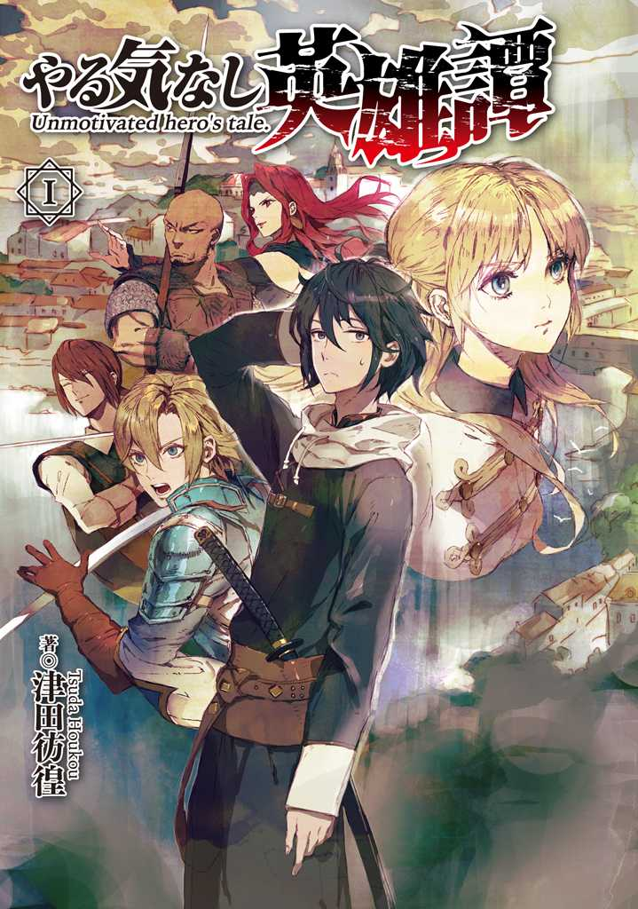
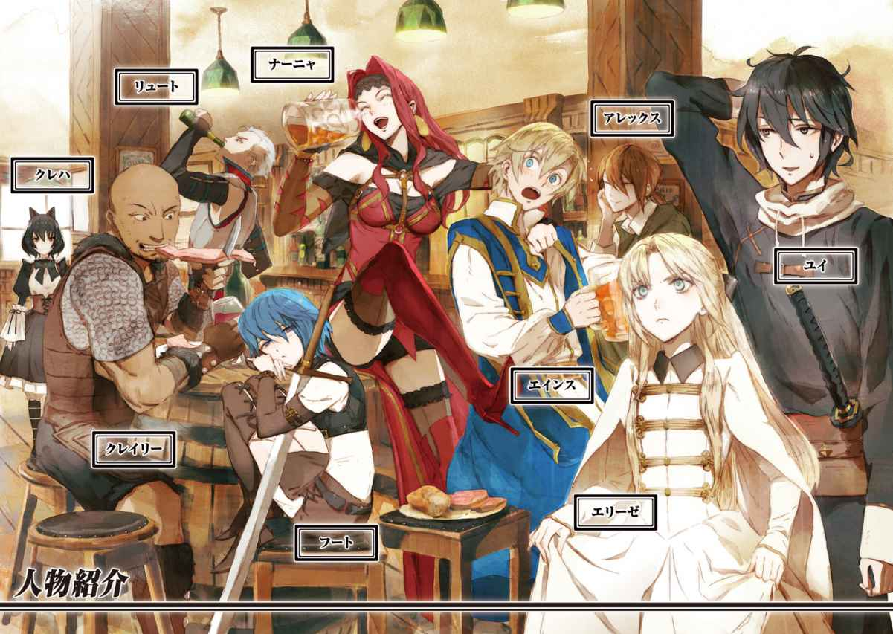
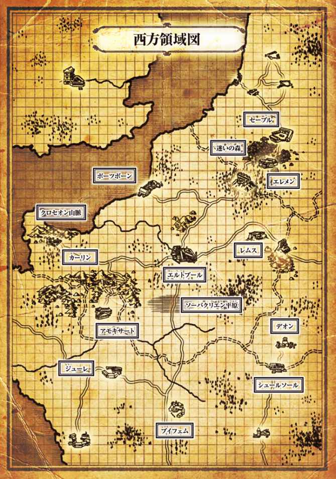
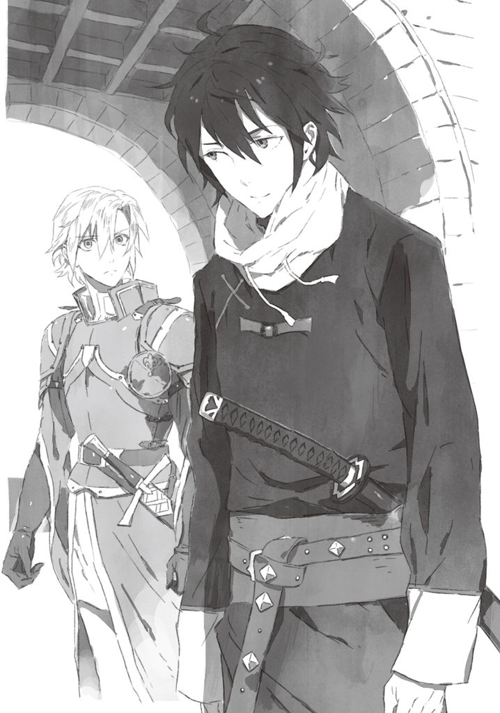
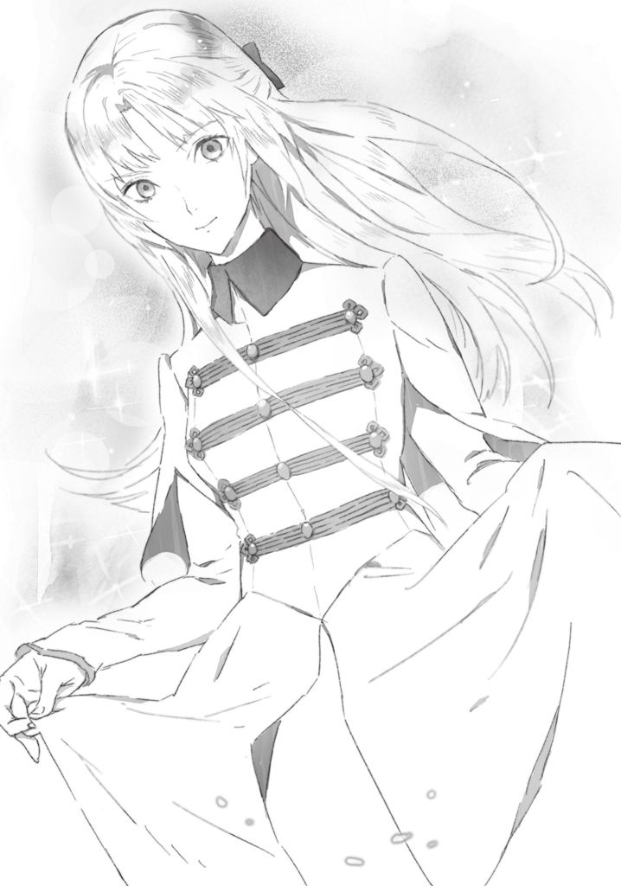
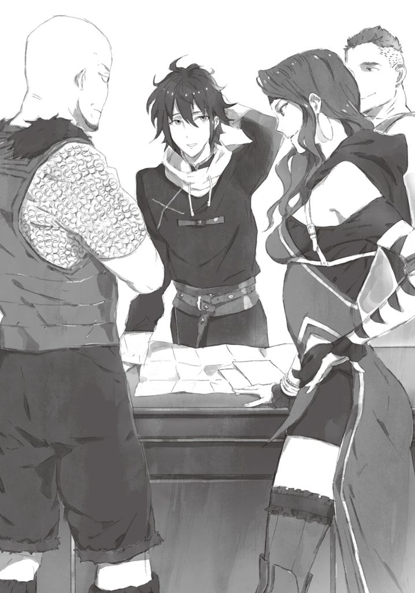
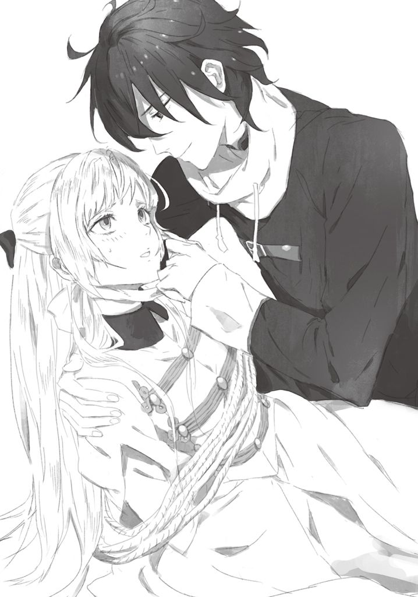
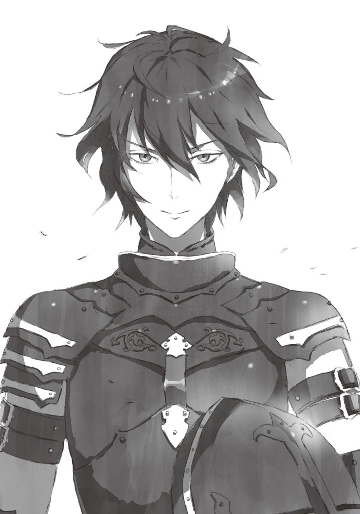
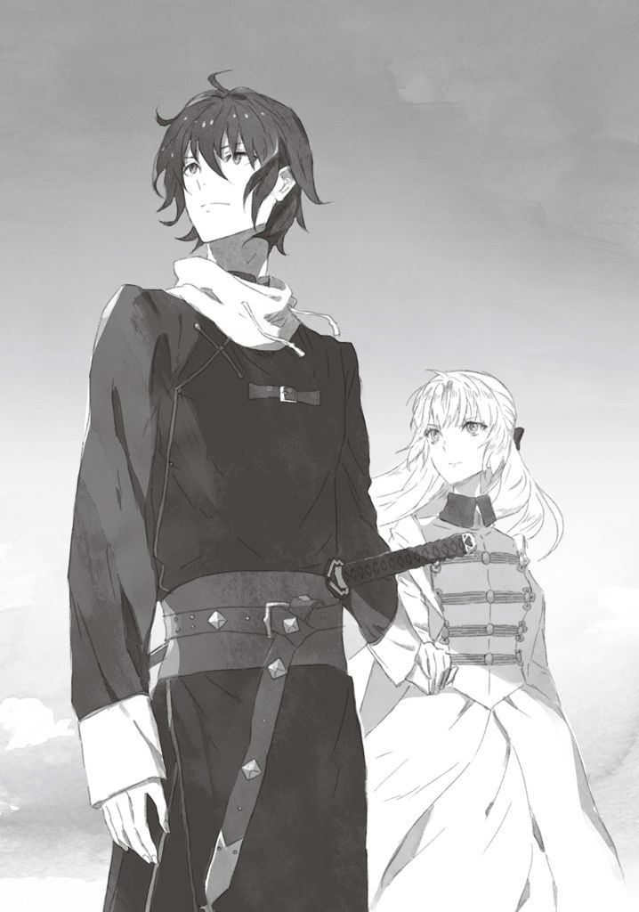

| やる気なし英雄譚 1<やる気なし英雄譚> (MFブックス) | |
| 津田 彷徨 | |
| (2015) | |
B00LBPG71O EBOK



ＭＦブックス
やる気なし英雄譚１
津田彷徨
やる気なし英雄譚１
ＣＯＮＴＥＮＴＳ
第一章 カーリン編
一話 カーリンの昼行灯
二話 護衛の依頼
三話 戦略部
四話 再会と出会いと
五話 晩餐会にて
六話 理 由
七話 決 別
八話 事件の行方
九話 反 乱
十話 襲 撃
十一話 魔法戦
十二話 加 勢
十三話 タリム
十四話 カーリン
十五話 後日談
第二章 エルトブール編
一話 昼行灯と無駄筋肉
二話 アーマッド
三話 ライン公
四話 南部の噂
五話 謁 見
六話 親衛隊
七話 偵 察
八話 参謀長
九話 ソーバクリエンの野戦Ⅰ
十話 ソーバクリエンの野戦Ⅱ
十一話 敗 戦
十二話 内 紛
十三話 裏切り
十四話 脱 出
十五話 クラッカー
十六話 英 雄
やる気なし英雄録Ⅰ 左遷された男
プロローグ
盛夏に差し掛かった王都エルトブールの城壁は、赤く燃える太陽の光を鈍く反射させる。
そのエルトブールのメインゲートとも言うべき重厚な南門の脇に、通常時の外部との交通用に使用される小門が存在する。
主に商人などが、他の都市などからの交易品の輸出入に使用している門であり、通常は門を守る衛兵が数名単位で待機している場所であった。
そんな場所へ、二十代前半といった顔立ちの温和そうな黒髪の男が、愛馬にまたがりながら城の方角よりまっすぐ向かってくる。男はやや眠そうな目をこすりながら、馬をゆっくりと進めていたが、まもなく門へと差し掛かるところで馬を止めた。
閉じられた門を背にして、彼の行く手を阻もうとする者の存在に気がついたためである。
「この忙しい時に、こんなところで何をやっているんだい？」
馬の背に乗ったままの黒髪の男は、立ちはだかる金髪の青年を目にして苦笑いを浮かべる。
すると金髪碧眼の中性的な顔立ちをした青年は、黒髪の男から視線を外すことなく、口を開いた。
「ユイ先輩をお待ちしていたんですよ......本当にこの道を行かれるおつもりですか？」
ユイと呼ばれた馬上の男は、その問いかけに対してわずかに逡巡した。そして目の前の後輩の姿を脳裏に刻むように、ゆっくりと上から下まで眺めやる。
かつてユイが初めて出会った時の彼は、未だ反抗期を迎えたばかりの少年であった。
しかし今、彼の目の前に立ちはだかる青色の甲冑に身を包んだ青年は、その鎧に刻まれた傷跡が物語るように、既に戦場を経験した勇士に成長していた。
そんな成長を感慨深く思いながらも、王都での自分の仕事を全て押し付ける形で任せた後輩を目の当たりにして、ユイは馬から下りると、頭を掻きながら申し訳なさそうに謝罪を口にする。
「......すまないな、迷惑をかける」
昔から頭を掻く癖が変わらない先輩に対し、金髪の青年は困ったような表情を浮かべながらも、もう一度考え直させようと説得を試みる。
「僕のことはかまいません。それよりも、自分のことをもう少し考えてください。帝国のリンエン将軍は、用心深い人物と伝え聞きます。いかに先輩といえども、うまく取り立てられる保証なんてどこにもないんですよ」
今のクラリス王国は、既にユイを引き止めることができる状況ではないことを、金髪の青年も理解はしていた。しかしながら、頭の中でそう理解していたとしても、彼は引き止めずにはいられなかったのである。
そんな気持ちの含まれた後輩の言葉を噛み締めながらも、ユイは首を左右に振って、この国の現実を口にした。
「いいかい、エインス。先だってのソーバクリエンの野戦で、王立軍はそのほぼ全軍を失ったんだ......もはや大勢は決したんだよ」
「わかってはいるんです。でも、先輩だけがこんな......」
やりきれないという表情を浮かべる後輩を目にして、ユイは彼のそんな姿を見ずに済むよう、その瞳を閉じる。するとエインスと過ごした在りし日々が、瞼の裏を走馬灯のように駆け巡っていった。
時間にすればほんのわずかの時間であった。
その間に懐かしい記憶が呼び起こされて、目頭が熱くなりかけたユイは、そっと瞳を開く。すると視線の先にいた青年が、先ほどまで瞼の中を駆け巡っていた少年と綺麗に重なりあった。
「ありがとう、エインス。君が居てくれるから、私はこの道を行くことができる」
ユイのその言葉を耳にした瞬間、エインスは自らの先輩を説得できないことをその長い付き合いから理解した。そして大きな溜め息を吐き出すと、先ほどまで背を預けていた扉を自らの手でゆっくりと開け、ユイの前に青く生い茂る草原への道を開く。
「次にお会いできるのは戦場ですね」
「ああ、この国のことを頼む。あと傷心のあの方のこともな」
脳裏に浮かぶ女性のことを口にする時、ユイは唇をわずかに噛むような仕草を見せた。だが後輩の意味ありげな視線に気がつくと、ユイは表情を隠しながら深々と頭を下げる。
「はは、わかりましたよ。でも先輩も無茶はしないでくださいね。あの方のこともありますから」
エインスはやわらかな笑みを浮かべてそう口にすると、頭を下げたままのユイに向かってそっと右手を差し出す。
「私が握手を苦手としていること、お前は知っているだろ？」

「ええ」
口に出して確認しても、意を解することなく右手を下ろさないエインスに対し、ユイは困ったように頭を掻く。そして自らの腰につけていた長刀を取り外すと、自らの右手の代わりに、その刀をエインスの手へと握らせた。
「握手の代わりだ。餞別として、これを預けておくよ。いいか、やるんじゃない。預けておくだけだからな」
頬をわずかに膨らませるような子供っぽい仕草を見せながら、愛刀を押し付けてくるユイに対し、エインスは思わず声を出して笑ってしまう。
するとそんな彼の笑い声に釣られてか、ユイも表情を緩めて笑い声を発した。
幾ばくかの時間、そんなお互いの穏やかな笑い声が、二人を包む。そうして、お互いに弛緩した笑みを浮かべあったところで、エインスは自分を納得させるように一度大きく頷くと、ユイに向かって別れの言葉を口にした。
「では先輩の魂は、先輩の席と併せてしばしお借りしておきます。もちろんすぐに返すことになると信じていますけどね。それでは、お気をつけて」
後輩の言葉を受けて、ユイはゆっくりと頷いた。そのまま彼は馬の背に跨ると、歩を前に進ませ始める。
そんな彼の視線の先には、大地の緑と澄み切った青空、そしてそれらを区切るような真っ黒な一団。そう、クラリスへ侵攻してきた数万にも上る黒色の帝国兵がそこに広がっていた。
第一章 カーリン編
一話 カーリンの昼行灯
「だから私は反対だったんだ」
王都エルトブールの遥か西に位置するカーリン市。
そのカーリンから南部へと続く街道沿いの草むらの中に、藪蚊にかまれながらも街道の動向を探っている、だらしな気な黒髪の男がいた。
任務中にもかかわらず気だるそうな雰囲気を醸し出すその男は、カーリン軍戦略部隊長という役職にあり、カーリンの昼行灯と呼ばれるユイ・イスターツ、その人である。
「旦那......今さらそんなこと言わないでくださいよ。だいたい最初にこの計画を立案したのって、旦那だったじゃないですかい？」
愚痴を口にするユイの隣で、彼の部下であるスキンヘッドのクレイリーは、呆れたようにそう窘める。
「......そりゃあ、計画したのは私だったさ。でも、予定ではお前とカインスとナーニャの三人が担当だったはずだろ。なんでここに、ナーニャがいないんだよ？」
山賊のような容貌のクレイリーと、その背後に控える筋骨隆々の弓使いであるカインスに向かって、ユイは順に視線を送りつつそう口にする。
「酒場が開いているこんな夜更けの時間に、あいつがまともに仕事すると思っていたんですかい？ そりゃあ、旦那の計画自体が悪いですぜ」
今頃とっくに酒に飲まれて、仕事のことなどすっかり忘れさっているであろう女性のことをクレイリーが口にすると、ユイは頭を振りながら両肩を落とす。
「はぁ......王都の喧騒を逃れてせっかく地方に左遷されたっていうのに、部下の一人は逃げ出すし、別の部下は上司を働かせるし......こんなはずじゃなかったのにな。どこでボタンを掛け違えたんだろう」
魔法全盛の現在においてほとんどの魔法を使うことができないユイは、その仕事中のやる気のない態度も相まって、出来損ないやタダ飯食らいとの評判を王都で受けていた男である。そんな彼は不幸にも上官の出世争いに巻き込まれ、紆余曲折の末に王都から大きく離れたこのカーリンの地方軍へと左遷される羽目になっていた。
この左遷命令に対して、ユイは元から田舎で楽隠居をする野望を胸に秘めていたこともあり、嬉々としてカーリンへの異動を受け入れる。そして満面の笑みを浮かべながらこの地にやってきたのは、ほんの三年前の出来事であった。
そうして左遷先のカーリンで管理職として働くこととなったユイであるが、彼の下で働く部下たちは揃いも揃って一癖も二癖もある者たちばかりであり、彼は憧れ続けていた楽隠居を未だに果たせないでいる。
「そんなに気分を害さないでくださいよ。だいたい旦那は、今日も昼からしか働いていないじゃないですか。普通に労働時間を考えれば、まだまだお釣りが来やすぜ」
「......そりゃあ、そうだけどさ」
極端に朝が弱いユイは、いつも昼を過ぎてからしか出勤しない。
そのため、クレイリーにそのことを指摘されると、ユイは天を仰ぎながら諦めたような表情を浮かべて口をつぐむしかなかった。
そうして彼が黙りこみ、静寂がその場を支配し始めた頃、背後に控えていたカインスがユイに向かって声を上げる。
「隊長、御一行さんが来ましたよ」
カインスの声を耳にするなり、ユイたちはカインスの視線の先を追う。
すると、彼の視線の先には、護衛に守られながらのんびりとこちらへ近づいてくる荷馬車の姿があった。
「護衛の内訳は？」
「剣を腰に差したチンピラ風の男が四人。あとは荷馬車の操者が一人ですね」
視力の良さと弓の技術を買われて今回の作戦の随員に選ばれたカインスは、その一行の構成を瞬時に見極めて報告する。
「手に入った情報の範囲内だな。とすると、護衛の連中は奴が飼っている犯罪者たちというわけだ。ふむ......だとしたら予定どおりと行こうか。私の合図でカインスはまず操者を、そして第二射は私たちが突入するタイミングで頼む」
「わかりました。お気をつけて」
ユイが計画を再度確認するようにそう口にすると、後方からの支援任務を任されたカインスは、大きく頷きながらそう答える。
「では始めるとしようか。三......二......一......放て！」
ユイの命令とともにカインスの矢が放たれる。
そして次の瞬間、荷馬車の上にいた操者はその場に崩れ落ちていった。
「旦那、先行しやすぜ」
愛用の槍を握りしめたクレイリーは、突然の事態に混乱する護衛兵たち目がけてまっしぐらに駆け出した。
そんなクレイリーの後ろ姿を目にして、ユイも渋々といった様子でその場を駆け出すと、草むらの中から街道へと飛び出す。すると彼の視界には、突然の出来事に慌てふためく護衛たちの姿が映った。
「な、何者だ！」
護衛たちの中で、リーダー格と思われる左頬に傷のある男が、ユイたちに向かって言葉を発する。
しかし次の瞬間、彼は側面から予期せぬ矢の直撃を浴びると、そのままその場に崩れ落ちていった。
「いやぁ、カインスの腕は相変わらず素晴らしいね」
夜間にもかかわらず寸分違わぬ射撃技術を披露したカインスに対し、ユイはその場で称賛を口にする。
「旦那！ 感心してないで、奥の一人を頼みやす」
クレイリーは突入の混乱時に一人目の護衛を背後から瞬殺すると、そのまま二人目の護衛へと躍りかかっていた。そして裂帛の気合いとともに愛槍を突き出すと、二人目の護衛の男の腹部を一気に貫く。
「仕方ないなぁ......君たちには申し訳ないけど、この積み荷はちょっと没収させてもらいたいんだ。ただ、私としてはあまり体を動かしたくもないから、よかったら降伏してくれないかな？」
ユイは荷馬車にチラリと視線を送った後に、最後の一人となった護衛と対峙すると、頭を掻きながらそう告げる。
「ふざけるな！ くそ、死ね！」
仲間をやられて逆上した男は、全身から憎悪のオーラを放ちつつ手にした剣を振りかぶると、そのまま一足飛びに、ユイへと飛び掛かった。
その姿を目にしたユイは、降伏勧告が無効であったことを理解し、わずかに目を細める。そして眼前の男の動きに対応するため、そのまま重心をわずかに下げると、右足を半歩前へと踏み出した。
一度息を吐き出し、左腰に備えた刀の柄を右手で握りしめる。次の瞬間、溜めた力を一気に解き放つように、刀を鞘走りさせ真一文字の剣光の残像を生み出した。
対峙した男とすれ違うような形で刀を振りきったユイは、そのまま何事もなかったかのように男へと背を向ける。そして一瞬の間の後に、男がその場に崩れ落ちる音が周囲に響いた。
「はぁ......肉体労働は私の性分じゃないんだけどね」
そう虚空に呟いたユイは、無数の星が瞬く夜空をそっと見上げ、深い溜め息を吐き出す。
一度左右に首を振って気持ちを入れ替えると、帝国との密貿易を裏付ける証文を探すよう、部下たちに指示を下した。
二話 護衛の依頼
「なんでこんな朝から呼び出されるかな......まったく世の中は嫌なことばかりだ、本当に」
カーリンでの左遷生活も四年目に差し掛かったある春の早朝。
カーリン地方軍における唯一の上司であるエルンストから、至急の用として軍の施設も兼ねる老朽化した市庁舎へとユイは呼び出されていた。
クラリス軍の階級は軍部のトップたりえる一位から始まり、一般採用の新人兵及び戦時の召集兵に与えられる十位の階級までの、十段階に分かれている。
ユイは中央からの派遣という事情もあり、六位の階級を与えられていたが、このカーリンにおいては彼が最上位の戦略士官であった。そして今回の呼び出し主であるエルンストは五位であり、カーリン軍の最上位である軍務長を務める人物である。
「しかし、こんな時間に私に用だなんて、たぶん普通ではないよな。ろくでもないことでなければいいんだけど......」
クラリス王国における地方軍の編成においては、中央の軍部を構成している陸軍省・魔法省・戦略省の三省からそれぞれ士官が地方へと派遣され、その下に現地採用の兵士が配属されることが一般的なやり方であった。
しかしながらこのカーリンは山脈を背にする大陸最西端の田舎都市であり、他国との国境線も存在しないことから、その戦略的価値は皆無に等しかった。そのため、カーリンにおいては軍事力の必要性が著しく低く、これまでは全て現地採用した陸軍省の兵士によって、都市警備をまかなっていたのである。
そんな中、中央の監督が行き届いていないことは地方軍の専横を招く可能性があるとして、三年前に建国以来初めてカーリン軍の体制が問題視された。それは同地の貴族が、一部現地兵を私兵のように扱って、腐敗の温床となっているという報告が聞こえてきたからである。
それ故に、監査役として陸軍省以外の人材を現地へと派遣することが軍中枢で決定された。そして魔法省と戦略省の押し付け合いの末、戦略省から同地へ初めての駐在武官を出すことが決まり、その左遷人事としてカーリンへと送り込まれたのが『王都の穀潰し』と呼ばれたユイ・イスターツである。
「まぁ、なるようにしかならないか。ただ、もし転勤の話なんだとしたら、どうやって断ったものかな......」
彼を呼び出したエルンストは、ユイが朝に非常に弱いことをよく知っており、普段は会議や打ち合わせなどがあっても必ず午後に開くよう以前より配慮してくれている。そんなエルンストが早朝から彼に呼び出しをかけるという事態に、ユイはただならぬ不吉な予感を覚えていた。
だからこそ彼は王都への転勤という最悪の事態も想定し、どのようにそれを断るかを脳内でシミュレートしながら、市庁舎の中を歩き続ける。そうして、五パターンほどの断り方を検証し終えた頃に、ようやくエルンストの執務室へとたどり着いた。
ユイは部屋を前にしてもう一度頭の中を整理すると、覚悟を決めて控えめにドアをノックする。
「イスターツ君かな？ お入りなさい」
ノック音に反応して、ドアの内側からエルンストの穏やかな声が響く。
その声を耳にしたユイは、大きく息を吐き出して肩の力を抜き、そのままゆっくりとドアを開けた。
執務室へと足を踏み入れると、三十代半ばの身なりの良い金髪の男性が、ソファーに腰掛けているのがユイの視界に映り込む。そしてそれと同時に、その向かいに座る、いつになく厳しい表情をした白髪交じりのエルンストの姿を、その目に捉えた。
「久しぶりだね、イスターツ君。こちらへ赴任してしばらくした頃に会って以来だが、カーリンの水は馴染んでいるようだね」
その金髪の中年男性は、腰掛けていたソファーから立ち上がると、ユイに向って両手を広げて笑いかける。
ユイはその男の名前がすぐには思い出せず、とりあえずとっさに頭を下げると、エルンストの方へと視線を移した。
「イスターツ君、こちらに掛けたまえ」
ユイの視線を受けて、エルンストは自らの隣へと彼を呼び寄せる。
呼び寄せられたユイは、ゆっくりと腰をソファーに沈めたところで、ようやく脳内の人名リストから、向かいに腰掛けるこの身なりの良い男性のことを探り当てた。
サムエル伯爵。
それが向かいに座る男性の名前である。さらに付け加えるならば、彼を呼ぶ際には伯爵ではなく市長という肩書きがしばしばその名前の後ろにつく立場であった。
「急に朝早く呼び出してすまないね。本当はもう少し前もって準備してから、君にお願いしようと思っていたんだが......」
ユイはその話の切り出し方に一抹の不安を覚えたが、市長が同席していることを踏まえて、すぐに異動の話の可能性は低いと当たりをつけて平常心を取り戻す。
しかしながら、市長が同席するなどということはここに赴任してから初めてのことである。そして普段は温和なエルンストが表情を固くしていることからも、何やら厄介事が舞い込んできている予感を覚え始めていた。
「実は君に護衛の仕事を頼みたいんだ。期間は一週間ほどの予定なんだけどね」
「護衛......ですか？」
エルンストの意外な申し出に、ユイは思わず問い返す。
カーリンにおいて護衛任務は陸軍省の管轄業務であり、戦略省所属のユイに対して、護衛任務を依頼することは通常では考えにくい話であった。
「ああ、護衛任務なんだ。本来は戦略省から派遣されている君に、この仕事をお願いするのは申し訳ないのだが......ただ今回はちょっと特殊な事情があってね」
エルンストがためらいがちにそう話すと、向かいに座るサムエルが微笑を受かべながら話を続ける。
「いや、私から君にとエルンスト軍務長にお願いしたんだよ。実は王都から我が領地に観光客が一人来ることになったんだけどね、問題はこれがちょっと変わったお客さんでさ。エリーゼ・フォン・エルトブートというお客さんなんだけど、知っているかな？」
ユイはエリーゼという名前を反芻するが、記憶を掘り起こしても彼の知り合いに該当するものはいなかった。しかしながらエルトブートという苗字を冷静に認識した瞬間、ユイは後頭部を強く殴られたような衝撃を覚えた。
「エルトブートって......まさかエリーゼ第一王女ですか！」
ユイは確認するように二人の顔を交互に見返す。
すると彼の視線の先でエルンストは重く一度頷き、もう一人のサムエルはユイを値踏みするような表情を浮かべつつ、ユイの見解を肯定するために口を開いた。
「ああ、そのまさかだよ。一応、領地視察を兼ねた観光ということなんだが、私の私兵の中には王女の護衛に適当な人材がいなくてね。そこで王都から来ている君に白羽の矢を立てたわけなんだが」
「申し訳ないが、そういう事態なのだよ、イスターツ君。知っているとは思うが、残念ながら私の部下にも王都での教養のある者なんていなくてね。正直言って、王都から来た君にしか頼めないんだ。すまないが、お願いできないだろうか？」
自分よりかなり高齢であるエルンストが、そう口にした後に頭を下げると、ユイはやむを得ず慌てて肯定の返答を行う。
「なるほどそういうわけですか。お断りできるのであれば、そうしたいところですが、さすがにそういうわけにはいきませんよね。わかりました、お受けさせて頂きます。ただエリーゼ王女の護衛をするにあたって、うちの部隊だけでは、いささか数が少なすぎると思うのですが......そのあたりをいかが致しましょうか？」
六名しかいない戦略部の面々の顔を脳裏に浮かべながら、ユイはエルンストに向かってそう問いかける。
すると、エルンストは心配いらないとばかりに首を左右に振った。
「それに関しては、王都から近衛の護衛がついてくるそうだ。だから君たちには、護衛というよりも、主に案内役をお願いすることになるだろう」
そのエルンストの言葉を聞いて、護衛の面ではあまり過剰な心配が必要ないことにユイは安堵した。
もちろん護衛の近衛たちが地方兵に偏見を持っていたら、トラブルが引き起こされる可能性がある。それ故に、実際は一抹の不安が残っていたが、今はそれよりも実務的な確認が急務であると考え、思考を切り替えた。
「......わかりました。それでエリーゼ王女は、いつ頃にご到着の予定なのですか？」
「それが今日なんだ」
エルンストは苦虫を噛み潰すかのような表情を浮かべながら、ユイに向かってそう告げる。
「今日......本当ですか？」
思いもしないエルンストの回答を受けて、ユイは思わず天井を眺めやると、搾り出すようにそれだけを口にする。
「ああ。視察はありのままの姿を見たいとおっしゃってね。他の領地への視察でも同じだそうだが、事前連絡なく、突然領土内の視察へと向かわれる方らしい。私の方への連絡も昨夜が初めてでね、とっくに王都を出発されていたそうで、到着は今日の正午だそうだ」
「それはまた......とんだお転婆さんですね、第一王女様は」
二人の悩める姿を見やり、何がおかしいのか半笑いを浮かべたサムエルは、ユイへと話を振る。
「でもイスターツ君。君も王都にいたのだから、噂ぐらいは聞いたことなかったかい。第一王女の無軌道ぶりは、貴族たちの話の種だったのだがね」
「王都の貴族の方々からは、あいにくとそれほど覚えが良くなかったもので......しかし視察と言われても、どちらにご案内すればよろしいでしょうか？」
「そうだね。とりあえず今日は、カーリンの私の別邸で歓待をすることにしている。今のところの予定としては、明日は市内、明後日は郊外、そして明々後日にはクロセオン山脈を見学されたいそうだ」
カーリンの風光明媚な自然を代表する山脈の名前をサムエルが口にすると、ユイはようやく今回の王女一行の主目的を理解した。
「なるほど。実際は観光客だとということがよくわかりました。だとしたら、そのつもりで準備させて頂きますよ。それでは準備を急ぎますので、私はこれで」
そう口にすると、ユイはそのままソファーから立ち上がり、二人に一礼して執務室を出ていく。
「しかし、本当に彼で大丈夫なのかね。確かに士官学校時代の彼の成績は、見せてもらったが......」
サムエルはユイが出ていったドアからエルンストに向かって視線を移すと、抱いていた疑問を口にする。
「ええ、彼はとても優秀な男ですよ。王都では、常に仕事をサボっていたと噂されているようですが、実際に彼の仕事を調べてもほぼ何一つ落ち度がない。つまり、非常に要領が良いあまりに、することがなかったというのが真相です。もっとも時間が余ったからといって、自分から他人のために仕事を手伝ったり、自ら率先して新たな計画を立てたりすることはなかったようですがね」
「なるほど......さすがは上司だ。よくわかっておられる」
そう言うと、サムエルは満足げに頷く。
彼が軍務長になって以降、様々なトラブルを抱えながらもどうにか破綻させることなくこの都市を守り続けており、そんな老将に対してサムエルは全幅の信頼を置いていた。
「いやいや、私が彼の上司でいられるのは、彼がここにいる間だけですよ。きっと王都に帰れば、すぐに私の上に立つ男です。もっとも、その前に私が退役してしまうかもしれませんがね」
エルンストは彼の期待する青年のことを口にすると、先ほどまでの憂鬱そうな表情が嘘のように、その顔をほころばせていた。
三話 戦略部
「それで旦那。エルンストのおやっさんは、一体何の用でやしたか？」
市庁舎内に置かれている戦略部の部屋へと戻ると、時間どおりに出勤していたクレイリーが、ユイに向かって興味深そうに問いかけてくる。
クレイリーはユイがカーリンへ赴任して、最初に付けられた部下であった。見た目は盗賊や山賊の一味のような人相ではあるが、歴とした元陸軍省の現地採用兵である。
彼はもともと市内外の情報を収集し、エルンストに報告する役目を担っていた。それ故、王都からやってくる人物の下に信頼できる部下を配置したいというエルンストの考えもあり、彼は戦略部へと配属されることとなったのである。
クレイリー自身は、自分より十歳も若く、そして緩い性格をした上官を好んでいた。そして単独行動が中心の戦略部の中でも、比較的ユイと行動を共にすることが多く、その能力には全面的な信頼を置いていた。
「もう聞いたのか。相変わらず噂を聞きつけるのが早いな」
部屋の中にある六つの机のうち、最も奥に位置する机の上に腰掛けると、ユイはクレイリーへと向き直る。
「へえ。普段なら昼過ぎにやっと出勤する旦那が、こんな早朝に出勤したと話題になってやしてね。そうしたら市長も来ているというじゃないですか。そりゃあ、いろいろ勘ぐって話をする奴も出てきやすぜ」
「それはまったくもって不本意な話だけど......なるほどね」
たしかに普段から出勤が遅いのは、言い訳できない事実である。
しかしユイとしても、たまに時間どおり出勤したからといって騒がれるのはさすがに予想外であり、思わず頭を左右に振って肩をすくめる。
そして頭を掻きながらゆっくりと視線を戻すと、そこには話を聞きたいという心情が滲み出ているクレイリーの顔があった。
「要するにだな、エルトブートさんという貴婦人に、この土地の観光案内をしてくれという話さ」
「エルトブートさんですか。しかし女性の観光案内なら、いい仕事じゃないですか。それで、そのエルトブートさんって方は、お若いんですか？ えっ、あれ、エルト......ブートですか？」
「ああ、エリーゼ・フォン・エルトブートさんだ。確かまだ十七歳だったかな」
「ええ!? マジであのエルトブートですかい！」
クレイリーが目を見開いて語調を強くすると、その反応にユイは少しだけ気を良くして、大きく頷いてみせる。
「ああ、第一王女だそうだ。まあ、ただの地方都市の視察なわけだから、適当に観光地の案内をすれば満足して帰ってくれるだろう」
「観光案内ですか......しかしなんでまた旦那が？」
「さあ。たぶん王都に長いこと居たから、多少の礼儀作法でも期待されているんだろう」
「なるほど。旦那も貧乏くじを引かされたってわけだ」
そう口にしてクレイリーが苦笑すると、ユイは弱った表情を浮かべながら頭を二度掻く。
「そうだね。まあ、当たらずとも遠からずといったところかな」
苦笑いを浮かべ返して、ユイはそう返答する。
するとまさにそのタイミングで、戦略部の木製のドアが無造作に開けられた。
室内にいた二人は驚いて視線をドアの方へと移すと、部屋の外からでかい弓を手にしたままの大男と、その背後に隠れるような形で抜き身の剣を肩に載せた蒼髪の女性が入ってくる。
「カインス、弓は外に立てかけて市庁舎内に持って入るなと言っただろ。というかフートの剣は論外だ。せめて鞘に収めてくれ」
ズカズカと中に入ってきた二人に向かいユイはそう指導する。
しかし、以前からいくら言っても素行の直らない二人は一向に気にする様子を見せなかった。
一方、そんな彼らに絶望したユイは溜め息を一つ吐き出すと、思わず机に直接腰掛けたまま前のめりに突っ伏してしまう。
「あ、隊長おはようございます。しかしこんな時間に出勤とは珍しいですね。おっと、クレイリーの兄貴も来てたんですね」
先ほどのユイの苦言などまるで無かったかのように、カインスはニコニコしながら弓を片手に手近な椅子に腰掛ける。
そしてもう一方のフートは、いつものごとく無言のまま抜き身の剣をそのまま壁へと立てかけた。
「おい、お前ら。今日から数日は護衛の仕事だそうだ。旦那の前では別にいいが、護衛対象の前では、多少の礼儀とかマナーとかいうものを見せろよ！」
「待ってくれ......なんで私の前ではいいんだ？」
ユイは既に彼らのマナーなどとっくに諦めていたが、一応抗議の声を口にした。
しかしそんな彼の発言に対して部下たちが耳を傾ける様子はまったくなく、ユイは大きな溜め息を吐き出す。そして諦めという名の折り合いを自分自身の中でつけると、思考をこれからの予定と人員配置のことへと移していった。
四話 再会と出会いと
ユイはクレイリー、カインス、フートを連れ、街の正門前で待機していた。それは正午に到着予定である王女一行を出迎えるためである。
そして指定の時刻である正午を多少過ぎた頃に、ようやく周囲の出入りの商人とは明らかに違う集団が、この街に向かって来るのを確認できた。
その集団は三十騎ほどの騎馬兵が、一台の豪華な馬車の周囲を取り囲む隊列を組んでおり、護衛の物々しさだけで、馬車の中の人物が只者でないことを示していた。
「旦那。あれが貴族様の御一行ですかい？」
「ばか、声が大きい。それと貴族じゃなくて、王家のだ」
ユイがクレイリーをそう窘めた頃には、既に先頭の護衛兵がユイたちの目前まで近づいており、彼は片膝を折って頭を垂らす。
しかし彼の部下の三人は、その動作の意味を理解できておらずそのまま突っ立っていたため、慌ててユイが同じようにするよう指示する。
「旦那。以前サムエル伯爵の護衛の任務に一度同行したことがあるんですが、あの真ん中の馬車はサムエル伯爵のものより一回り大きいでやすね」
ぎこちない仕草でユイの姿勢を真似たクレイリーは、ユイにだけ聞こえる小声でそっと軽口をたたいた。
「確かにサムエル伯爵は、当地では二本の指に挙げられる貴族だけど、さすがに相手が悪いさ。お忍び用のものでさえあれだからね。一度だけ王都で陛下の馬車を目にしたことがあるけど、私が百年ほどただ働きしても買えないほど、それはそれは豪華なものだったさ」
クレイリーに対し、小声でそのようなくだらない返答をまさにしたタイミングで、ユイは彼に照りつけていた太陽の日差しが急に遮られたことに気がつく。
わずかに違和感を覚えて顔を上げると、先ほどまで馬車の真横に控えていた隊長らしき人物が、いつの間にか馬上からユイを見下すように目の前に立ちはだかっていた。
「現地の駐在武官が当地を案内すると聞いたが、よりによってお前か！」
隊長らしき人物は舌打ちを一つしてそう言い放つと、馬上から地面へと降り立つ。
逆光のためにユイは相手の顔を捉えることができず、一瞬その言動に当惑を覚える。しかし目の前の男の銀色の髪と、聞き覚えのあるやや低めの力強い声は、ユイの脳内に埋没していた懐かしい記憶を呼び起こした。
「リュート！ リュートじゃないか。久しぶりだな」
「近衛殿と呼べ。俺はこの護衛任務前に六位に昇進し、近衛の部隊長に就任したんだ」
「そうか、さすがだね君は。士官学校を出て、卒後六年で六位へ昇進するなんて、かなり早い出世じゃないか」
リュートの階級を耳にして、ユイは驚きを口にする。
通常の士官学校の卒業生は、卒業時に八位の身分から軍部の各省へ入隊する。そして卒後四年で七位に、特に支障なく勤め上げれば卒後八年で六位へと昇格する規定となっており、リュートの歩みはそれよりも幾分か早かった。
「ふん、お前は三年で六位まで駆け上っただろ。それは俺に対するあてつけか？」
「そんなことないさ。私の場合はただ政治的な駆け引きに巻き込まれただけだからね」
階級に関しては、ユイは卒後三年で六位に昇進と、見た目上は異例の出世を遂げている。
しかしこれに関しては、各省庁間の調整人事としてカーリン軍に新規のポストを設立した経緯から、現地職員との階級調整の必要性があった。それ故、無理やり階級を引き上げただけであり、実質はただの落ちこぼれと見る者が圧倒的多数であった。
「それはともかく、今回は俺が警備の責任者だ。その上、俺は近衛であるし、たとえお前が同階位であるといえども、俺に対して軽口をたたくのは許さんぞ」
リュートの所属する近衛は魔法省の精鋭のみが配属される王家直轄の部隊である。それ故、ユイは先任の六位であるが、一般的には近衛であるリュートの方が格上とされていた。
ましてや今回は視察の責任者に任命されているという自負もあり、リュートはユイに向かってそう言い放つ。
「へぇ......なんか昇進して命令をするのも板についてきているよね。といっても、昔を知っているだけに違和感はあるけど」
「だから軽口をたたくなと言っているだろ。いいか、お前はこんな地方に左遷されている身だぞ。立場をわきまえろ」
ユイの学生時代から変わらぬヘラヘラした笑顔に、リュートはすっかり神経を逆なでされ、思わず声を荒げる。
すると、その声に反応するかのように、馬車の中から透き通るような声が突然発せられた。
「何を騒いでいるのですか？」
その声を耳にしたリュートは、ハッとした表情を浮かべると、慌てて馬車へと向き直る。すると馬車の重厚な扉が内側からゆっくりと開かれてゆき、白いドレスに身を包んだ少女が姿を現そうとしていた。
一歩、その少女の白く透き通るような足が地面を捉える。
ユイは彼女が大地を踏みしめる姿に、白い天女が地上へ降り立つかのような錯覚を覚え、無意識に視線は彼女へと吸い寄せられていた。
透き通るかのような金色の髪と細身で白く美しい肢体。その少女の外見は、それだけでも人の視線を集めるに十分な要素を有している。しかしそれ以上にユイの視線を捉えて離さなかったのは、強い活力に満ちあふれる光を放つかのような眼差しであった。
「こ、これはエリーゼ様。申し訳ありません。この駐在武官が礼儀を知りませんもので」
「確か同期生なんでしょ、士官学校時代の。ここに来る道すがらに、馬車の中でエインスから聞いたわ。たしかここの戦略部の部隊長さんが学年次席で、魔法科所属だったあなたが三席だったのよね」
「エインス？」「エインス！」
先ほどまで険悪な雰囲気を放っていたとは思えぬほど、二人の呼びかけは重なりあう。
その二人の声に引きずり出されるように、馬車の中にいた金髪碧眼の美青年が、ばつの悪そうな苦笑を浮かべながら外に向かって顔を覗かせる。
「えっと......どうも先輩方。というかエリーゼ様、先輩たちは昔から仲があまり良くないんですから、本当に勘弁してくださいよ。そういったことを言わないとお約束頂いたから、内緒でお話ししたんじゃないですか」
「あらあら、そうだったかしら。まあいいじゃない。お二人さんも私に免じて、エインスを許してやってくださいね」
エリーゼはその整った顔に無邪気な笑みを浮かべると、控えめに舌を前に突き出す。
その仕草を目にした瞬間、リュートはここに来るまでの苦労が思い出されたのか、ゆっくりと肩を落としていった。
「だからエリーゼ様、勘弁してくださいよ。それに何かあったらいけないので、勝手に馬車から降りないでくださいと、先ほども言ったばかりじゃないですか」
エインスが王女の身を案じて、この旅中に繰り返し続けた言葉を口にする。しかしエリーゼはエインスの言葉などどこ吹く風のように、まったく気にすることなく、馬車から歩き出す。
エリーゼの予期せぬ行動は、周囲の動揺を引き起こすも、気にする様子もなく彼女はユイのもとへまっすぐ歩み寄る。そして、片膝をついて頭を垂れるユイの前まで近づくと、彼に向かって片手を差し出した。
「あなたがイスターツ部隊長さんね。私がエリーゼ・フォン・エルトブートです。この度はよろしくお願いしますね」
「はい、こちらこそよろしくお願いします。エリーゼ様」

ユイはその細く白い手を左手でそっと取り、恭しく一礼する。そしてエリーゼの尊顔を仰ぎ見るため、ゆっくりと頭を上げていった。
すると、彼は不意にやや異質な視線がエリーゼへと向けられていることに気がつく。
それは悪意に満ちたと表現して差し支えない類のものであり、ユイはその視線の主を探るため、周囲に視線を走らせる。まさにその時、馬車の後方を護衛していた兵士の一人が、突然エリーゼ目がけて持ち場から駆け出した。
「お、おい。やめろ！」
突然の動きに対し、周囲にいた近衛兵は彼を取り押さえようとその兵士に向かって飛び掛かる。
しかし、わずかに反応が遅れたためか、その駆け出した兵士は、誰にも取り押さえられることなく、エリーゼのすぐ側までたどり着くと、剣を鞘から抜き放った。
「貴様！」
近衛の中で最もエリーゼの側にいたのはリュートであるが、彼もとっさのことのため剣に手を伸ばす余裕はなく、慌てて魔法構成を編み上げる。しかし、間近に迫った兵士の剣が振り下ろされる方が早い。
一連の動きを目にしていた兵士たちの誰もが、思わず最悪の未来を予期する。
だがそんな未来を振り払い、ねじ曲げたのは、エリーゼの片腕を掴み自らの胸元へと引き寄せた男であった。
「事情はわかりませんが、王家もいろいろ大変のようですね。でも、できれば私を巻き込まないでほしいものですが......」
王女の体があった場所で剣を空振りさせた兵士を睨みつけると、ユイは誰にも聞こえぬような声でそう呟く。
そして王女を抱いたまま一歩前へと踏み込むと、空いた右手で柄を握る兵士の手を掴んだ。
「なんだと！」
予想外の動きをユイが見せたため、エリーゼを狙った兵士は思わず驚きの声を上げた。
一方、兵士の手を掴んだユイは、心底嫌そうな表情を浮かべながら口を開く。
「申し訳ないですけど、そこまでです。貴方のせいで無駄な会議や、打ち合わせが増えなければいいんですけど......まあ無理でしょうね」
そう言葉を吐き出すと、ユイはそのまま兵士の外側へと体を翻し、手首を外側へと返す要領で兵士を投げ飛ばした。
「リュート！」
ユイの声がその場に響いた瞬間、リュートはすぐさま腰に備えていた剣を抜き放つと、兵士の喉口に突きつけた。
その場にいた者たちは、リュートの動きを目にして、予期せぬ事件は解決したという安堵感を覚える。だが、そんな一同の安堵をあざ笑うかのように、エリーゼを狙った兵士は突然リュートの剣の腹を掴むと、迷わずそのまま自らの喉へと突き立てた。
「なっ......ば、ばかな！」
兵士の取った予想外の行動に、その場にいた者たちは思わず驚きの声を上げる。唯一、ユイの胸に頭をうずめて、その行動を目にすることなかったエリーゼは、彼の胸元で体を震わせていた。
五話 晩餐会にて
エリーゼ一行に対するカーリンへの出迎えは、予想外の形となった。それ故、ユイたちは厳重な警戒を張り巡らせながら一行を先導し、本来の予定より大幅に遅れてサムエル伯爵の別邸に到着する。
「じゃあ、あとはよろしく」
館に到着してエリーゼを伯爵へと紹介し終えると、ユイは残りの作業を全て部下に任せ、伯爵に用意された部屋へとまっしぐらに向かう。そして部屋にたどり着くと、上着を脱ぐこともなくベッドへと全身を投げ出した。
ほんのわずかの間、ユイは全ての思考を静止させる。すると、瞬く間に睡魔がユイに襲いかかってきた。
「はぁ......このまま寝てしまえるなら、楽なんだけどね」
邸宅に到着してエリーゼを紹介した後、念を押すようにユイはサムエルから晩餐会への参加を告げられていたのである。
今にして思うと、あのサムエルの念を押すような発言は、エルンストあたりの入れ知恵ではないかと疑う。実際、彼としてはまったく出席したくない晩餐会であったが、カーリン側の護衛責任者を押し付けられた以上、王女一行を歓迎すると名目を付けられては断りようがなかった。
そのため、わずかばかり楽しんだベッドの柔らかな感触に未練を残しつつも、ユイは渋々立ち上がり、用意されたカーリン軍の正装へと着替える。そしてタダで夕食が食べられるという一点のみを理由にして自らを無理やり納得させると、残念そうな表情を浮かべながら部屋を出て会場へと足を伸ばした。
「どうぞ、お好きなものをお取りください」
既に会場内には地元の名士たちや、今回の護衛を務めた近衛兵たちによって埋め尽くされていた。
その光景に圧倒され、入り口で呆然と突っ立っていたユイは、気を利かせて声をかけてきた給仕から乾杯用のシャンパンを受け取る。そして部屋の入り口の壁にもたれかかると、会が始まるまで、その場で待つこととした。
「皆さん、おまたせしました」
シャンパンの気泡が表面へと浮き上がらなくなり始めた頃、透き通るような声が響くと、会場内の視線が一点に集まる。
皆の視線の先に存在するのは、純白のドレスに身を包み柔らかい微笑みを浮かべたエリーゼの姿であった。その彼女の可憐という言葉だけではとうてい表現し尽くせない立ち姿に、その場にいる誰もが思わず息を呑む。
一方、そんな皆の視線を受けたエリーゼは、先ほどの事件の動揺など微塵も表に出すことなく、微笑を浮かべたまま会場内を一度見回す。
そして彼女は一つ頷くと、彼女の侍従たちと父であるライン大公の代理であるエインスを脇に従えて、会場の奥に用意された壇上に向かってゆっくりと歩き出した。
まるで彼女だけが時が止まった世界を動いているかのように、誰もが全ての動作を中断し、彼女の姿を目で追う。そうしてエリーゼが壇上に登り、そっと頭を下げて一礼したところで、急にその空間の時間が動き出すと、会場は割れんばかりの盛大な拍手に包まれた。
「皆さん、今日はこのような心尽くしの歓待をありがとうございます。また突然の訪問になりましたこと、お詫び申し上げます」
穏やかな微笑みを浮かべながら、彼女の柔らかな声が会場に響き渡る。途端に、その場にいた誰もが頬を緩め、会場は穏やかな空気に包まれかけた。
しかしそんな弛緩しきった空気は、エリーゼの次に放った言葉の爆弾で、一気に霧散することとなる。
「さて、私はこの街に来て間もないのですが、一つだけ確信していることがあります。それは私があなた方を嫌いだということです」
和やかな歓迎モードに包まれていた会場は、予想だにしていなかったその一言で凍りつくと、そのまま時間が停止したかのように静寂に包まれる。
そんな会場内の反応を目にして、エリーゼは一つ満足したかのように頷くと、彼女の端正な唇は再び爆弾の導火線に火種を放った。
「重ねて言いますが、私はあなた方が嫌いです。それでは恐縮ですが、本日はこれにて失礼させて頂きます」
彼女は遠慮を見せることなくそう言い放つと、他の誰にも真似できないような優雅な振る舞いで皆に向けて一礼する。そして口元に冷笑を浮かべると、壇上から降り、そのまま会場の入り口へ向かって歩き出した。
その彼女の動きに、壇上から入り口までの道に立っていた人々は、蜘蛛の子を散らすように道を開けていく。そうして開かれた道を、エリーゼは悠々と歩く。
しかし入り口の手前まで来たところで、壁にもたれかかったままのユイに気がつくと、不意に二人の視線が合った。
エリーゼはそれまで凍ったような微笑を浮かべていたが、ユイと視線が合うなり、わずかに表情を曇らせる。そして他の誰にもわからない程度の動作でほんのわずかに頭を下げると、そのまま大広間から立ち去っていった。
その場に残された者たちは目の前で起こった出来事を受け止めることができず、放心状態のように硬直していた。しかし時間が経つにつれて凍ったような呪縛を解くきっかけを待望する空気が、空間に広がり始める。
すると、その役目を担うものとして、その場に残された中で最高位と考えられるサムエル伯爵と、大公代理として出席しているエインスへと自然と人々の視線は集中した。
自らの企画した晩餐会を何とか成立させるために、思わぬ動揺から立ち直ったサムエルは、エインスに向かって目配せをする。その意図を理解したエインスはやむを得ないという表情を浮かべると、サムエルの前まで歩み寄り、深々と一礼した。
「この度は身に余るご歓待ありがとうございます。姫は長旅にて少し疲れておりまして、改めて私より皆様方へお礼申し上げます」
「エインス大公代理、お気遣い痛み入ります。姫の真意はわかりませんが、我々に対しより良い領地経営を望むという叱咤と思い、今後も王国のために忠誠を尽くすつもりです」
サムエルはエリーゼの行動を理屈付けることができず、かなり前向きな解釈を口にする。
一方、サムエルの考えるところを正確に察知したエインスは、より上位の存在を口にすることで、その場を取り繕うこととした。
「その言葉、我が父はもちろん、必ずや国王陛下にもお伝えいたします」
「かたじけない。では長旅でお疲れの皆様、そしてカーリンの皆、今日は思う存分楽しんで英気を養って頂きたい。それではご唱和ください。乾杯！」
サムエルがその言葉を口にした瞬間、その場にいる全ての者の口から、本来あるべき音より数トーン低い響きで乾杯が唱和された。
想定外の出来事もあったが、次第に時間が経過するにつれて、会場の皆に十分なアルコールが入っていく。そうすると気を大きくした者たちの口から、先ほどの王女の発言に対する非難の声が漏れ聞こえるようになり始めた。
「第一王女かなにかは知りませんが、大事に育てられすぎると、女でも鼻というものは高くなるようですね」
「ふん、あんなガキのでしゃばりに、なぜ我々が付き合わねばならないのだ。そもそもサムエル伯が舐められているから、同じカーリンの我々まで舐められるのだ！」
「タリム伯爵なら威厳を持って、このような視察など突っぱねたでしょうに」
五十代半ばで小太りのタリム伯爵を中心とし、反サムエルの急先鋒であるタリム派の人々が会場内のあちこちでこうした話題を拡散し始める。
すると、そんな場の空気を感じたユイは、だんだんとその空間にいることが億劫になり、大きな溜め息を吐き出した。
「......そろそろ潮時かな」
普段食べ慣れない豪華な食事も胃に収め、そろそろ給料分の義理は果たしただろうと考えると、手元のグラスを近くの給仕へと預ける。
そしてそのまま大広間を出ようと、彼は入り口に向かいかけた。しかしそんな彼の右肩を突然背後から何者かが掴む。
「ユイ、少し顔を貸せ」
聞き慣れた声を耳にして、ユイはある予想を浮かべながら振り返る。
すると案の定そこには、すっかり出来上がって赤ら顔を浮かべるリュートと、彼に首根っこを掴まれている哀れな大公代理の姿があった。
六話 理 由
リュートに捕まえられながらも、ユイは晩餐会場からオー・ド・ヴィを一本だけどうにかくすねる。しかし二本目を手にする前に酔っ払いに連行されると、そのまま彼は伯爵家のビリヤード場へと引きずられてきた。
「ユイ、こいつで勝負しろ！」
「勝負しろと言われてもさ......魔法士とビリヤードをやるなんて、勝負になるわけないじゃないか」
古くは王都で庶民に流行した遊びであるビリヤードであるが、魔法文化全盛の現代においては、その遊び方は旧来のものと異なる。
以前は単純にボールをキューと呼ばれるスティックで突く遊びであったが、近年は幾分か限定はあるものの、魔法にてボールにアクセントを加えたり妨害したりして遊ぶことが主流となっていた。
それ故、ビリヤードは魔法士にとっては最もメジャーな遊びの一つとされている。もっとも旧来のビリヤードファンに言わせれば魔法を使うなど邪道であり、魔法士が行っているものはマジックボールと蔑称する者も少なくなかった。
「別にお前が相手なら変わらないと思うが、まあいいだろう。ならばどんな勝負をお前は望んでいるんだ？」
「あのさ、リュート。君には勝負をしないっていう発想はないのかい？ まあいいか......魔法が関わらない勝負にしてくれるなら、何でもいいよ」
リュートのユイへの対抗意識は士官学校へ入学以来のものであった。
それ故、何かにつけて勝負を挑まれることに、ユイはすっかり慣れてしまっている。そしてその長い過去の経験から、ここで相手をしない限りは、この後の王女護衛中に絡まれ続けることが容易に想像された。だからこそ、条件付きではあるが、ユイは勝負を受けることを明言する。
一方、そんな二人のやりとりを後方で耳にしていたエインスは、それまで借りてきた猫のようにおとなしくしていた。しかし、二人が勝負方法を考え始め黙りこんでしまうと、ひょこっと彼らの間に顔を覗かせ、笑みを浮かべながら一つの提案を行う。
「トランプなんていかがですか？ あれなら魔法使わずに遊べますし。それに三人でできますので、僕も参加することができますから」
そのエインスの提案を受けて、後であまり厄介な事態にならない勝負だと判断すると、ユイもすぐさま同調の意を示す。
「いいよ、私もトランプなら構わない。さて、勝負を切り出したんだから、リュート、君がトランプを借りてきてくれないかな？」
「......いいだろう。いいか、逃げるんじゃないぞ」
荒い鼻息をひとつ立てたリュートは、そのまますっと踵を返すと、伯爵家の手近な使用人を探すためにまっすぐ部屋から出ていった。
そうしてリュートが部屋から出ていったところで、エインスはユイへと向き直ると、やや懐かしげな表情を浮かべつつ声を発する。
「改めてユイ先輩、お久しぶりです」
「ああ、三年ぶりか。少しは身長も伸びたかな？」
「......僕はもう二十歳を過ぎたんです。先輩と出会った頃と違って、身長なんてそうそう伸びませんよ」
「はは、それはそうだ。しかしまさかお前がカーリンに来るとは、夢にも思わなかったよ。来るなら来るで、連絡の一つでも寄越せばいいのに」
ユイは少し拗ねたような口調で後輩をからかうも、久々の再会にその頬は緩んでいた。
「いくら先輩といえども、王家の機密視察の情報を、さすがに外部に漏らしちゃマズイでしょ」
彼の事情など全て理解した上で、わざと連絡をしてこいと口にするユイに対し、エインスは思わず苦笑を浮かべる。
「確かにそのとおりだね。しかし、まさか君が王女様の同伴でここに来るなんて思ってもいなかったよ」
「以前から先輩の赴任地を訪ねてみたいとは思ってはいたんです......ですが、まさかこんな形で来ることになるとは、僕も想像していませんでした」
「それはそうだろう。しかしお前も大変だな。もし私があのお姫様の同伴ならば、既に胃を壊している頃さ。近衛に刺客が潜んでいたことももちろんだけど、なによりも先ほどの演説にはしびれたよ」
エインスは今日一日の出来事を思い出し、頭痛を抑えるように右手をそっと額に添える。
「近衛の件は完全に嵌められましたね。ここに到着後、リュート先輩と全ての資料をひっくり返しましたが、明らかに王都出発直前に命令書ごとすり替えられた形跡がありました。それとエリーゼ様の演説については......察してください。ああいう方なんです」
「......だからこそ、命を狙われているってことかな」
いくら王女といえども、目上の貴族相手にも物怖じせず堂々と口を開くその行動は、一見するとただの傲慢か蛮勇に過ぎない。
しかし刺客に襲われて肩を震わせていた少女を知るユイは、彼女なりの精一杯の背伸びなのだろうとその行動を受け止めていた。
「ええ。その上、残念ながら現国王には国を継ぐべき男子がいません。このままいけばエリーゼ様が女王となるか、エリーゼ様の夫が国を引き継ぐこととなるでしょう。だからこそ、その人選に入り込むことができない連中も、王女を亡き者にする計画に荷担していると噂されていました。ですが、彼らがまさかこのタイミングで事に及ぶとは......」
一部貴族の不正に対し、表立って非を唱えるエリーゼの存在を、忌み嫌う者の数は決して少なくなかった。そしてその伝統的な王女像ではあり得ぬ思考と行動力故に、彼女は『無軌道王女』と揶揄されているのである。
「それでエインス。君たちが調べなおした範囲で、他に怪しい奴はいなかったのかい？」
「はい。今回の視察に帯同した全ての近衛を洗い直しましたが、あの男以外は白でした」
「なるほど......ではとりあえず、王都側の事情に関してはこれで問題なしか。となると、残るは──」
ユイがそう口にしかかったところで、エインスが先回りをする。
「カーリン側の問題......ですね」
「そのとおりだ。これは私の勘だけど、彼女がここに来たのはおそらく連中の件でだろ？ いや、あの若さであれだけしっかりした信念を持っていることは、私も高く評価する。だけど正直なことを言えば、今は動いてほしくないところなんだ......一体、彼女はどうしたいんだい？」
方法論には多分に苦言を呈したいところであったが、王家の若い姫であるエリーゼが自ら率先して国のために尽くそうとする強い思いは、ユイも貴重なものだと考える。
しかしながら、彼にとってはこの街で三年の時間をかけて行ってきたことに対するまさに詰めの時期であり、想定外の事態に強い頭痛を覚えていた。
「申し訳ないのですが、あの方が何を考えているのかはわかりません。ただ市長である伯爵は良い方のようですが、一部の方々は露骨にやり過ぎていますからね......先輩が三年前にここへ飛ばされたのだってもともとはそれが原因ですし、既に軍内部では奴らと帝国の関係は既定事実と考えている節があります。ただ王家の直轄地でないにもかかわらず、エリーゼ様がこのように動かれるとは、軍としても完全に予想外でした。とりあえず今回の僕の役割は、エリーゼ様が起こす混乱を、できる範囲でうまく収めることだと思っています」
真剣な表情でそう答えたエインスを目にして、ユイは嬉しそうな表情を浮かべると、彼に向かって笑いかけた。
「はは、お前もちゃんと大公の後継者らしくなっているじゃないか。初めて会った頃はあんなだったのに」
「昔の話は勘弁してくださいよ、先輩。だいたい僕も多少は軍に身を置いたわけですし、少しくらいは成長もします」
子供の成長を喜ぶかのようなユイの言動に対し、エインスは多少抗議の意味も含め、彼の手に持ったオー・ド・ヴィを奪う。そしてそのまま手近なグラスに中身を注ぎ込むと、それを一気に喉へと流し込んだ。
「すまんすまん。階級も同じ六位に並ばれたし、いつまでも先生気分ではいけないな。実際に来年あたりには追い越されているかもしれないからね」
「まあ、僕には家庭の事情がありますから......でも、たとえそうなったとしても、先輩が僕の先生であった事実は変わりませんよ。まあそれはそれとして、家庭の事情のおかげで無理を通すことができたので、今回の件に関しては素直に父に感謝しています」
今回の王女の視察において、随員は魔法省の近衛を中心に人選が行われた。しかし、各省からのバランス人事が望ましいという外部からの声もあり、戦略省からも幾人かがリストアップされることとなった。
そのリストの中にライン大公の長子であるエインスの名前が含まれており、ユイとの再会を希望していた彼は、自ら同行を願い出たのである。
「しかし、よくライン公が許可したな。こんな僻地への任務は、普通なら反対されるものなんじゃないか？」
「もちろん最初はあまりいい顔はしていませんでしたよ。ですけど、先輩のことを口にした途端、『そうか、ならいい』と言ってそれっきりです」
「そうか......あの方も相変わらずのようだね」
エインスの話を耳にして、懐かしいライン公の顔がユイの脳裏に浮かび上がる。それとともに、エインスの家庭教師をしていた頃の記憶が、色鮮やかに思い出されていった。
士官学校時代のユイは両親を亡くしていたため、王国の奨学金と短期間の雇い入れのみで生活のやりくりをしており、いつも生活に困っていた。そんなユイに対し、当時の士官学校の教授の一人であり後に彼の担当教官となるアーマッドが、自分の親戚に対する家庭教師の仕事を紹介したのである。その家庭教師の相手こそ、ライン大公家の長子であるエインスであった。
家庭教師の紹介を依頼したライン公としては、当初はもっと実績豊かな人物を紹介してもらえるものと思い、アーマッドに依頼したつもりであった。そのため、家庭教師としてやってきたまだ少年の面影が残るユイに対し、少なからぬ不安を覚え、うまく行かなければ早々に解任しようと考えていた。
だが当時は気難しかったエインスが、若くて緩いにもかかわらずどことなく理知的なこの教師にとても良くなつき、少しずつその契約は延長されていく。そうしていつの間にか、ライン公当人が他の誰よりもユイを気に入るようになってしまったのである。
結局、ユイの家庭教師業はライン公による援助の意味合いを帯び、エインスが士官学校一年生として入学してもそのまま一年間は継続され、ユイが戦略省に入省するまで二人の関係は継続されていった。
もっともユイの戦略省への入省に際しては、多少の紆余曲折が存在する。
ライン公は彼にエインスの右腕として今後ライン家を支えていってほしいと強く願っており、事あるごとにライン家への仕官をユイに対して薦めていた。しかしこれ以上甘える形でお世話になることはできないと考え、ユイはこの申し出を固辞したのである。
それ以来、今でも当時のことを思い返すたびに、ユイは必ずライン家のこの父子には何らかの形で恩を返すと、何度も心に誓っていた。
「正直言って、あの人は今でも先輩のこと諦めきれていないみたいですからね。まぁ、その気持ちもわからなくはないですが......でも、僕が先輩を使いこなせるなんて、本気で思っているんでしょうか？」
そう口にしたエインスは、手元のオー・ド・ヴィをグラスに注ぎ直すと、ゆっくり香りを楽しみつつ喉を濡らす。
「お前たち親子はさ、私のことを買いかぶりすぎなんだよ。このまま地方でゆっくりと余生を過ごしたいと、私自身は思っているんだけどね」
「先輩......なんだか前以上に老成しちゃってますよね」
「まったくだ。正直、とても同期とは思えんな」
部屋の入り口から割り込むように掛けられた声に、ユイとエインスは視線を動かす。そこには片手にトランプを握りしめたリュートが立っており、そのまま手の中のトランプをユイ目がけて投げつけてきた。
ユイは左手でその未開封のトランプを受け止めると、苦笑いを浮かべながら中身を取り出す。そして一度溜め息を吐き出すと、ゆっくりとカードをシャッフルし始めた。
「そんなことはないだろ。君だって、アレックスだって、人は皆等しく歳を取っていくものさ。そうしていつかは年寄りになっていく。爺さんや婆さんにな。ふふ、いい機会だ、君と私とどちらが老けているか決める意味で、ババ抜きでもすることにしようか」
「ふん、いいだろう」
リュートの返答を受けると、ユイは手近なバーカウンターの周りに三脚の椅子を寄せ、二人をそこに座らせる。そしてリュート、エインス、最後に自分の順番で一枚ずつカードを配り始めた。
「ところで、貴様に一つ聞いておきたかったことがある。どうして王都を出たんだ？」
「どうしてって言われてもな......」
カードを配り終えたユイは、手元のペアを場の中央に捨てながら、困ったような表情を浮かべる。
「そうです。なんで僕たちに相談もなく、左遷人事なんかに乗っかってしまったんですか？」
エインスも手元のカードを並べ直しながら、ユイに向かって強い口調で問いかける。
そんな彼らの詰問に対し、自らのカードを引くようリュートに左手を突き出しつつ、ユイは口を開いた。
「リュート、周囲には誰もいなかったかい？」
「ああ、確認してきた。間違いなくこの周りは俺たちだけだ」
リュートは嫌そうな表情を浮かべながら、その問いかけに対して肯定してみせると、そのままユイの手元から一枚のカードを引き抜く。その動作と返答を確認したユイは、二人にだけ聞こえる程度の声で話し始めた。
「さて、どこから話したものかな......とりあえずコートマン三位を知っているかい？」
「コートマンというと、戦略省情報局局長だったコートマン三位のことですか？」
リュートの手元から一枚のカードを引きながら、エインスは学生時代に遠巻きに目にした、官僚臭溢れる丸眼鏡の小男のことを思い出す。
「ああ、そのコートマンだ」
ユイは頷きながらエインスのカードを引くと、出来上がったペアを場に捨て、カードをリュートに向かって差し出した。
「あの方のことは俺も知っている。魔法省の大規模演習にも必ず顔を出されていたからな。それでそのコートマン三位がどうされたんだ？」
引いたカードがまたもハズレであったリュートは、舌打ちをしながらエインスにカードを突き出すと、ユイに向かってさらに話の続きを促す。
するとエインスのカードを引きながら、なんでもないことのように、ユイはあっさりと軍部の不祥事を口にした。
「ああ......別に大した話ではないんだけどさ、あの方がクーデターを起こそうとしたことがあってね」
「な、なんだと！」
リュートは思わずカードを保持している手をテーブルに叩きつけると、驚きのあまり目を見開く。
一方、その反応を目にしたユイは大きく一つ頷くと、そのまま話を続けた。
「彼はもともとケルム帝国に軍部の情報を横流しして小銭を稼ぐ、まあその程度の男だったんだ。ただそれがよりによってシャレム二位にバレてしまってね、それで彼は脅されたわけだ」
「シャレムというと、元戦略省次官殿じゃないか」
ユイの口から飛び出してきた予想外の大物の名前に、リュートは思わずつばを飲む。
「シャレムはコートマンを動かして、当時の政敵を排除しようと企んでいたんだ。なにしろ内偵を行うには、国内の情報を一元管理する情報局の局長を使うのが最善だからね。まあそんなくだらない内輪もめなんて私にはどうでもよかったんだけど、問題は当時の政敵の一人とみなされていたのが、私の上司だったラインバーグ局長だったことでさ。それが私にとっての不幸の始まりだったというわけだ」
当時のユイは戦略省戦略局にて対外戦略を担当しており、主に情報部から入る情報を分析しつつ、今後の軍事計画の立案に携わっていた。
もちろん若手のユイにそんな計画自体の権限はなく、軍部各省の調整と外務省や内務省との折衝が主な仕事である。そしてその当時の戦略局のトップが、そのラインバーグ三位であった。
「ラインバーグ局長もあの立場におられたわけだから、そりゃあ多少は後ろめたいところもあったさ。でも、それを補って余りあるほど器の大きい人でね、私なんかにも本当に良くしてくださったものだよ。まぁ、それから多少のゴタゴタがあってね。最終的に追い詰められた彼らは、王家と軍部に対するクーデターを企画して、帝国にこの国を売り渡そうと画策したわけだ」
「......本当ですか、先輩？」
あまりに想像を超えた話の内容に、エインスは思わずユイを見返す。
そんなエインスの半信半疑の眼差しを目にして、疑いたくなる気持ちはわからないでもないなと思いながら、ユイは肯定の意味で軽く頷いた。
「ああ、残念ながらね。ともあれ、彼らの計画をなんとか未然に防ぐことはできたんだよ。それに事件の関係者を芋づる式に捕らえることで、彼らの派閥を解体することにも成功した。ただ、連中の恨みは想像以上に根深いものでね、不幸にも私にまで火の粉が飛んでくるような状況になってしまったんだ。そこで私の身を案じた局長が、彼らの手の及ばない場所へと私を逃がすために、左遷人事の体裁を装ってここへ送り出してくださったというのが左遷の真相だよ」
ユイの説明に、二人はやや凍りついた表情を浮かべる。
しかし三年前のユイの転勤と時期を同じくして、数人の軍首脳が突然左遷や退任させられるという出来事があったことを、先ほどの話からリュートは思い出していた。その記憶の内容と先ほどの話を照合し、それにユイの能力も加味して判断すると、リュートは間違いなく彼がその騒動に噛んでいたことを確信する。
「その事件に関して何もしなかった男に対して、そうそう火の粉が飛ぶとは思えんがな」
「まあ......多少のいたずらと工作はしたさ。とにかく、今や既に過ぎ去った昔の話さ。一応、結果としては最終的にコートマンは帝国への内通が明るみになり極秘裏に投獄。ただ、事件の黒幕ともいえるシャレム自体は、尻尾を掴ませてくれなかったので、次官辞任だけで逃げ切って、未だに自分の領地でのうのうと生活しているけどね」
「本当ですか？」
エインスも初めて知った事実に、驚きの表情を浮かべながらユイに対して確認する。
「ああ。だがそれも些細なことさ。それよりも私にとって最大の誤算は、これらの騒動の責任を取らされてラインバーグ局長が、閑職である士官学校の校長職へ左遷されてしまったことだよ......まさか上司ともども二人で仲良く左遷されることになるとは思いもしなかった」
ユイは苦笑いを浮かべながら、二人から視線を外し、そのまま天井を眺める。
その視線は天井の壁を超え、まっすぐに空へと向けられていた。
「お前が話したことが真実だとしてだ......なぜ俺たちに一言も言わなかった？ お前のことは嫌いだが、アレックスの奴も含めて、俺はお前たちを今でもライバルだと思っている。それにお前がいなくなってから、エインスがどれだけ荒れていたか知らんのか？」
「リュート先輩......それは勘弁してくださいよ」
当時のことを思い出し、エインスは弱ったような表情を浮かべると、リュートに対して非難めいた言動をとる。
「ふん。ともかくだ、俺から勝ち逃げして王都を出ていったんだ。今日はこいつできっちり借りを返させてもらうからな」
そう言って、リュートはゲーム再開とばかりにユイの手元のカードを掴みに掛かった。
その時、ユイは学生時代からのリュートの癖を思い出し、五枚あるカードの中で中央に位置するカードを少し突き上げる。
すると、リュートはその少し突出したカードを無意識に手にして、一気に引き抜いた。
「君は今も変わらないね、リュート」
ユイが頭を掻きながら苦笑いを浮かべると、まんまとジョーカーを引かされたリュートは屈辱の表情を浮かべた。
そしてその後、結局ユイに翻弄されるがままに望まぬカードを引かされ続け、リュートは為す術なく最下位となる。
そんな士官学校時代に何度も繰り返された二人の光景に、エインスは思わず忍び笑いを浮かべずにはいられなかった。
七話 決 別
視察二日目となる翌日。
エリーゼの一行はカーリン市内の視察を希望し、ユイは市内各所の案内と説明のために、一日中忙殺される羽目となった。しかし初日に引き起こされたトラブルのことを思うと、この日は特に大きな問題なく終えることができ、ユイは今回の視察がこれからもこのまま何事もなく過ぎ去ればと淡い期待を抱く。
しかしそんな期待があっさりと覆されたのは、視察三日目のことであった。
当初の予定ではエリーゼ一行は郊外の農業現場を視察する予定であったのだが、市内を抜けた途端、彼女の指示で急に現場から穀物集積庫の視察へと予定が変更されたのである。
「これは一体どういうことなのかしら？」
エリーゼは租税代わりに納められる穀物の集積庫内にて、管理担当官の前で冷たい笑みを浮かべながら仁王立ちしていた。
「いや、これはたまたま記載の間違いがありまして......」
担当官であるアスピール三等官は、自分を見下すかのような王女の視線に耐えることができず、俯きながらそう返答する。
「へぇ、そうなのですか。それでは、租税として徴収された穀物が半分も貯蔵されていないことは、あなたにとってたまたまで済むことなのですね？」
「いえ、そんなわけではありませんが......何分すぐには原因がわかりませんもので......」
担当官は予想外の王女の追及を前にして、それ以上の言葉を発することができなくなってしまった。
事の初めは、彼が穀物庫の詰所に出勤して、いつものように同僚とチェスを嗜んでいた時のことである。突然入り口のドアが勢い良く開けられたかと思うと、王女を含む一行が事務所の中へと飛び込んできた。
「私も王家の一員として、民の皆さんが納められたものを、実際にその目で見てみる必要があると思うんです」
そう口にしながら微笑むエリーゼは、護衛の近衛にアスピールたちを拘束させると、侍従たちに納税記録書を探すように指示を出す。
当初は何が起こったのかさえわからず呆然としていたアスピールたちであるが、納税記録書を探され始めた段階で、事の重大性にようやく気がついた。
「お待ちください！ この施設への査察など、私たちにはなんの連絡もありません。これはどういう法的根拠を持っての査察ですか？」
アスピールは王女たちの行動を止めようと必死に喚き暴れたが、近衛たちの強靭な力の前では、残念ながら為す術がなかった。
そして侍従の一人がアスピールの机の引き出しから納税記録書を見つけた時点で、彼は自らの運命の終わりを悟る。
そうした一連の騒動の末に、記録書の内容と異なり明らかに少なく見える穀物庫内の食糧の確認を、王女自ら直接行うこととなった。その結果、エリーゼは冷笑を浮かべながら彼を見下ろすように尋ねるに至ったのである。
「エリーゼ様、一応記録書の内容と穀物の照会が全て終わりました。まぁ、見事なまでに抜かれてますね、これは」
気がつけばなぜか事務作業をやらされていたエインスは、苦笑いを浮かべながらエリーゼのもとへと歩み寄る。
「ご苦労様。じゃあ、リュートさん、彼らを拘束してサムエル伯のもとへ帰りましょう」
「......しかし本当に構わないのですか？ 私たちはあくまで視察の名目で訪れたはずです。このようなことをしては、当地の行政担当者たちが黙ってはいないと思いますが」
エリーゼは今回の視察に当たり、側近である侍従たちにしかこの計画を話していない。そのため隊長であるリュートさえも、このような状況に至ったことに戸惑いと動揺を隠せないでいた。
「それは多少反発もあるでしょう......ですが、それを気にしていては何もできません。これまでがそうであったようにです」
「......しかし」
リュートは生来真面目であり、これまで全ての任務を規則どおり完璧に行ってきたからこそ、ここまで早く昇進してきたのである。
そんな彼にとって、このような王家の力を背景とする超法規的な査察は、いくら過ちを正すためとはいえ心理的に受け入れることはできなかった。
「では、当地の関係者に意見を聞いてみましょうか。誰か外で待機しているイスターツさんたちをここに呼んできてくれるかしら？」
王女の言葉を受けて、侍従の一人が慌てて建物外へと駆け出していく。そして幾ばくかの時間の後に、外で待機させられていたユイが、部下たちを引き連れて中へと案内された。
「あらあら......これはまた派手にやりましたね」
ユイはここへ案内させられた段階から、このような結果となる予測を立ててはいた。しかしここまで派手にやるとは思っておらず、苦笑いを浮かべると同時に、頭を二度掻く。
「あら？ あなたは私がこうするだろうと予想していたのですか？」
ユイの意外な反応から、エリーゼは彼の表情を窺いつつ、そう問いかける。
「予定を変更していきなり穀物庫の案内を命じられましたからね、うすうすは......なによりここがタリム派の草刈り場だということは有名ですので」
エリーゼの視線を躱すように、わずかに視線をそらしながら、ユイは言葉を選んでそう答える。
「そうですか。そこまでわかっておきながら、あなた方は彼らを放置し続けていたのですね......まぁ、いいでしょう。それで現地の軍の人間として、この後始末をどうされるおつもりですか？」
「......どうするかと言われましてもね」
弱ったように頭を掻きつつ、曖昧な言葉を口にしたユイに対し、エリーゼは少しずつ失望を感じ始める。そしてそれとともにユイに向ける眼差しは、先日の晩餐会の時に貴族たちを見つめた時のような冷えたものへと変わり始めた。
「なにをすべきかも、あなたにはわからないのですか？ この人たちを牢に入れることや、すぐに関係者を連行して調査を行うこと。やるべきことはいろいろあるじゃないですか！」
刺のある口調でエリーゼはそう告げるも、当のユイはそんな言動を気にする様子もなく、苦笑いを浮かべるのみであった。
「そうですね......まあとりあえず、上官のエルンストに報告するところから始めましょうか」
「旦那はいつも報告せずに動きますからね。エルンストの親父さんも、ほんと苦労してるんですぜ」
隣に控えていたクレイリーにそう笑われると、ユイも曖昧な笑みを浮かべて、その指摘を肯定する。そしてユイはのんびりとした口調でフートに指示を出すと、彼女は眠そうな顔で一礼し、そのまま外へと出ていった。
「報告するだけなの？」
「ええ、とりあえずはそうですが......なにか？」
それ以上まったく動く気配を見せないユイに対し、エリーゼはいよいよ苛立ちを隠せなくなり、強い口調で彼に迫る。
「いい？ あなたたちがそうやって型どおりの仕事しかしないから、いつまで経ってもこの国は腐敗の温床なのよ！」
「そう言われましてもね......一応、今回の私の仕事は、案内と護衛ですから。では失礼を承知でお尋ねしますが、貴方はこの程度の証拠で、本当にタリム一派を罪に問えるとお考えですか？ まあ、正確なところは司法省の判断となりますけどね」
回答の所在さえ他へ転嫁するようなユイの態度を目の当たりにし、エリーゼは彼を見下すような表情を浮かべる。
「......所詮はお役所仕事しかしない左遷軍人の発想ね。この土地の腐敗した役人や下級貴族の綱紀を粛清する、まさに良い機会だとは思わないの？」
「エリーゼ様。こうやって正面から法的手続きを無視した方法で、法を破る連中を捕らえようとするのはいかがなものでしょうか？ ましてや現地の役人に対して、それを強要することもです。私たちの当地での仕事は、規則を守らせることであって、規則を破ることではないのですよ」
頭を掻きながらユイはそれだけを告げると、そのまま踵を返す。そしてエリーゼたちに背を向け、建物の外へと歩き出した。
一方、王女である自らをコケにするようなユイの態度に、エリーゼは目を吊り上げて彼の背中を睨みつける。
そんなエリーゼの仕草をユイの後ろから眺めていたクレイリーは、彼女に向かってやや呆れ気味に口を開いた。
「無礼を承知で言いやすが、旦那が言われるとおりですぜ。まあ、王都のお偉いさん方は自分が法律だと思っていらっしゃるので、気にもされないんでしょうがね」
禿げた頭を撫でながらクレイリーがそう皮肉げに言うと、エリーゼの護衛を担当する近衛たちは、目の前の無礼な男に飛びかかろうとする。
しかしその動きを感じ取ったエリーゼが、すぐに片手で彼らを制し、そのままクレイリーに向かって言い返した。
「もともと法を破る者たちを放置し続けていたあなたたちが、単純に無能なんでしょ。だから私が自らこうして各地を回っているのよ。人のことをどうこう言う前に、自分も給料分くらいは働いたらいかがかしら？ そうは思わない、王都の穀潰しさん？」
ユイを馬鹿にする一言。そのエリーゼの発言に、クレイリーばかりか普段温厚なカインスまでも王女に向かって反論を口にした。
「あのですね、オイラたちがこれまでどれだけ彼らの不正を報告しようとも、全てその証拠を握りつぶしていたのは王都のあなた方じゃないですか？ だから隊長は覆しようもないほど、完璧に資料を整えるためにこれまで準備してきたっていうのに......王都から遊び気分でやってきた方たちに、隊長の悪口を言ってほしくないです」
そう口にしながら、筋肉の塊のようなカインスが一歩前へ進み出ると、近衛たちはエリーゼの前に立ちふさがり、そのままカインスとクレイリーを半包囲する。
そんな一触即発の状況の中、エリーゼはやや表情を強ばらせると、自らの感情のままに口を開いた。
「なによこの田舎の山賊もどきと筋肉ダルマが！ あなたたちの隊長は王都でも役立たずで有名だったのよ。証拠なんて言うけど、どうせ大した証拠なんか持ってないんでしょ。ふん、もうあなたたちなんかの案内はいらないわ。さっさとこの場を立ち去りなさい！」
クレイリーたちに向かってエリーゼがそう言葉を投げつけた瞬間、背を向けて歩み去ろうとしていたユイはスッと王女たちの方へ向き直る。
そして腰に備え付けていた筒を開けると、中に入っていた紙束を取り出し、それを王女に向かって放り投げた。
「そいつをあげますよ、王女さん。貴方が言うとおり大したものではないかもしれないけど、貴方の権力とそれがあれば、カーリンでの仕事はもう無いと思います。ですから、さっさと王都に帰って正義の政治家ごっこの続きでもされてはいかがですか？ あと貴方の言った給料分の働きはそいつで十分にあると思いますので、私たちはご指示どおりこれにて失礼させて頂きますよ。貴方の御下命に従ってね。お前ら、さっさと帰るよ」
ユイはそれだけ言い放つと再び踵を返し、頭の上で右の掌をひらひらさせながら建物から出ていく。
すると、近衛に半包囲されていたクレイリーとカインスも慌てて彼の後に続いた。
ユイたちが立ち去り、その場に残された形となったエリーゼは、唇を噛みながら投げつけられた手元の紙面を目で追う。すると、そこに記載されている内容に、彼女は思わず目を見開いた。
「そ、そんな......嘘でしょ」
彼女が目にした資料には、大量のタリム派の人間の名前とその金の流れから、物資の動き、市職員に関する採用での口利き等の詳細が、余すところなく一つ一つ事細かに記載されていた。
八話 事件の行方
ユイたちが穀物庫を出ていくのを呆然と見送ると、すぐさまエインスはエリーゼのもとへと駆けより、その頭を深々と下げた。
「申し訳ありません。本当に失礼な言動があったと思うのですが、あれでも僕の大事な先輩なんです。どうか僕に免じて、お許し頂けませんでしょうか」
エインスは先ほどのユイの言動をフォローしようと、慌ててエリーゼに向かいそう謝罪する。すると、彼女の側にいたリュートまでもが「どうか」という小さい声を発して、エインスと同じように頭を下げた。
今回の同行者の中において信頼していた二人の反応に、エリーゼはやや気まずげな表情を浮かべると、迷いながらも口を開く。
「ええ......あんな左遷者の言動なんて気にしません。私にはやらなければいけないことが山積みですから。それよりも、問題はこれね」
話を変える意味も含めて、エリーゼは先ほどユイから放り投げられた紙束に再び視線を向けると、口を開く。
「これが事実だとしたら、当事者たちは一網打尽ね。でも......」
ユイの集めていた資料の詳細さと分量に、おそらくその内容が事実であるとエリーゼは確信していた。むしろよくもこれだけのものを集めていたものだと、感心さえする。
しかしユイの先ほどの自分に対する態度もあり、彼女は素直にその内容を認めることができなくなっていた。
「それで......今後どうなされますか？」
彼女なりに隠そうとはしていたが、エリーゼの葛藤はリュートからすれば一目瞭然であった。だが彼は警備主任としての立場から、このままここで無為に時間を過ごすわけにもいかず、エリーゼに今後の方針を問いただす。
「とりあえず、今日は一度カーリンへ戻ります。明日はクロセオン山脈へ向かう予定だったから、あそこにある魔石工房を視察することにしましょう。この資料を見る限りでは、その工房も彼らが一枚噛んでいるようですからね」
エリーゼの示した方針に対し、リュートは一度大きく頷く。そしてわずかな躊躇の後に、彼女に向かって確認を行った。
「......それでは、あいつの書いた資料をお信じになられるということでいいですね？」
「さあ、それはどうかしら？ 現時点では、これが本当に信用に足りるかどうかはわからないわ。でも、明日の視察でこれが正しいのかどうかはっきりするでしょう。その上でこの内容が事実だとするなら、この資料を基にカーリンに巣食う下衆どもを中央の裁判所送りにします」
エリーゼがそう明言して方針を定めると、リュートはただちに一礼し、すぐさまカーリンへ引き返すために指示を飛ばし始める。
「ユイ・イスターツ......か。ラインバーグはああ言っていたけど、あなたは本物？ それとも......」
王女が漏らしたその呟きは、決して誰の耳にも届くことなく、そのまま虚空へと霧散していった。
「やっちゃった」
戦略部の部屋にて頭を掻きながら苦笑いを浮かべると、ユイは皆の前でそう第一声を発する。
すると、魔法戦士用の軽装に身を包んだ赤髪の長身女性が、間髪いれずにユイに向かって怒声を放った。
「このバカ上司が！」
「うう......すいません」
昨日の王女護衛にてユイがトラブルを引き起こしたと聞き、一人で待機任務をさせられていた戦略部所属の女魔法士であるナーニャは、呆れるとともに苛立ちを隠せないでいた。
「ナーニャ、落ち着けって。旦那もあっしらのことを思ってだな──」
ナーニャはユイに対して今にも掴みかからんばかりの勢いであったため、慌ててクレイリーが二人を取りなそうとする。
しかしながら彼のその行為は、ナーニャの怒りの矛先をカインスとクレイリーに向けるだけであった。
「あんたらもだよ、このハゲ腰巾着と無駄筋肉が！」
「「はい、すいません」」
そのナーニャのあまりの剣幕に、まるで蛇に睨まれた蛙のように、カインスとクレイリーは異口同音に謝罪する。
「はぁ......しかしどうしたものかな。あんな偉そうなことを言ってきちゃったけど、やっぱりクビかな、クビなのかな......」
普段はユイ自身が罵倒されることがあっても、彼は滅多なことで怒ることはない。しかし部下や仲間を罵倒されると、熱くなってしまうことがあるのが彼の悪い癖である。
クレイリーたちにしてみれば、だからこそこの若い隊長を敬愛しているのだが、しかしながら結果として今回は最悪の事態を招いてしまっていた。
「なあカインス、お前の家って確か商人だったよな？ 店で賊が暴れてもすぐ取り押さえることができる、優秀な警備員を雇う気はないか？」
「兄貴......こんな厳つい警備員がいる店なんて、賊だけじゃなくて客自体がやってこなくなりますよ」
クレイリーの願望交じりの問いかけに対し、カインスは豪快に笑いながら却下する。その答えを受けて、クレイリーは思わず一つ唸ると、再度真剣に自分の将来設計を悩み始めた。
怒鳴りつけてもすぐに何事もなかったかのように話し始める二人を横目にして、ナーニャは彼らを相手にしていられないとばかりに、隊長であるユイへと向き直る。そして彼の表情を覗きこむように見つめると、真面目な表情で口を開いた。
「隊長。こうなる前に、タリムの首根っこを押さえることはできなかったのかい？」
「......それは無理だね。確かに状況証拠やある程度の物証は押さえていたけど、実際王都の司直に根回しして、初めて捕縛の辞令が出る。これまでのように彼らの賄賂が王都にも流れている可能性を考慮すると、もう少し必要な物証を押さえない限りは、タリムまでたどり着けない可能性が否定できなかったからさ」
三年前にユイがこの街に赴任してきてから、今日まで一貫して行ってきたのは、カーリン軍の内部調査であった。
もともと陸軍省の現地採用兵のみによる単独人事で運営されてきたカーリン軍であるが、その内部の規律は既に緩みきっており、腐敗の温床となっていた。
そこでカーリン軍のトップであるエルンストは、監査目的にカーリンへと派遣されてきたユイに内部調査の全てを任せていた。そして時間はかかったものの、ユイはタリム派の汚職への関与を様々な筋から裏取りし、その最終段階としてまさに物証を押さえている最中であった。
「しかし、これで全ては姫さんの手柄にされちまうよ。アタイたちはともかく、隊長にとっては中央に帰るせっかくのチャンスだったっていうのに......」
ユイのことを思い、ナーニャは少し悲しげな表情を浮かべる。
流れ者として各地を流浪していた彼女は、数年前にこの街へとたどり着き、食い扶持を稼ぐために非合法な活動にその手を染めていた。そんな彼女を拾ってくれたのが目の前にいるユイである。
やる気はさっぱりないけれど、紛れもなく有能で、そして何より恩人でもあるこの上官を、彼女はいつか中央へ帰してあげたいとずっと考えていた。
「ナーニャ......私はもう中央に戻る気はないよ。だからもともとタリムたちに関する資料は、私の名前を介さずに自然な形で司法省に渡るよう準備していたのだからね。だって私はこの街が好きだし、私がいないと誰が君たちのような問題児の面倒を見るんだい？」
「揉め事を起こしてきたあんたが言うんじゃないよ」
先ほどのように上官を咎める言葉を発したが、ナーニャの表情には先ほどとやや異なり、穏やかな笑みが浮かんでいた。
その笑みを見て、ユイは思わず頭を掻く。そして建前だけども謝罪の言葉を口にしようかと彼が思ったタイミングで、急に部屋のドアが開けられる。
すると、開け放たれたドアからは、フートとともにいつになく焦った表情を浮かべるエルンストがその姿を見せた。
「先に言っておくがイスターツ君、君の解任は無いよ。おそらく君のことだから、そんな話をしているところだったと思うがね。どちらにせよ、すぐにでも君たちに一働きしてもらわないといけなくなった」
「......何がありました？」
珍しく余裕のない表情を浮かべるエルンストを目の当たりにして、ユイはただならぬ事態が起こったことを理解し、最悪の事態を脳裏に描き始める。
「タリムが私兵と傭兵を私邸に集めている......つまり反乱だよ」
エルンストの真剣な表情から、ユイはそれがジョークでないことを悟る。そして当たらないでほしい予想ばかりが当たると神を呪い、そのまま天井を仰いだ。
九話 反 乱
「......それで彼らの規模はどの程度のものなのですか？」
現実を受け入れて素早く思考を切り替えると、ユイはエルンストに向かって敵戦力の規模を尋ねる。
「クレハ君の報告だと、規模としては五十名ほどの部隊らしい。その中身は傭兵くずれが中心だが、一部はうちの軍のゴロツキ連中も引き抜かれて参加しているようだ。ただ奇妙な点は、どうも二名ほど炎と風魔法を扱う魔法士が混じっていると報告書に記載されている。こんな辺境の地で、そんなに簡単に魔法士を雇うことができるとも思えんのだがな......」
タリムの監視を任せている戦略部に所属するクレハの報告書を読み上げると、エルンストはそのリストの中に魔法士が含まれていることに驚き、そして眉間に皺を寄せる。
「軍務長......ひとつお聞きしますが、クロセオン山脈の魔石工房は、山のどのあたりにあるのですか？」
反乱軍の中に魔法士が混じっているという事実を踏まえ、ユイは最悪の事態を想定し、思わず顔をしかめる。
「ふむ、工房かね。魔石自体がクロセオンの頂上あたりからしか出土しないからな......たしか麓には作らずに、中腹のあたりに建築されていたと思うが」
エルンストの答えを聞くなり、ユイはその場で黙りこむと、表情を一層厳しいものへと変化させた。
「旦那......何か心配でもあるんでやすか？ エリーゼ様の護衛には、王都の近衛兵が三十騎もいるんでやすよ。そんな心配するほどのことが起こるとは思えませんが」
ユイの表情の変化に気がついたクレイリーは、違和感を感じ首を傾げた。
なぜならば、王都の近衛といえば、一騎で並の歩兵五騎に相当すると噂されるほどの強者ぞろいである。そんな猛者が三十名もいるのであれば、たかだか五十人程度の寄せ集めなど、まともな戦いにさえならないと彼は考えていたためである。
しかし彼らの楽観的な予測とは異なり、ユイは厳しい表情を崩すことなく彼らに対して逆に問い直した。
「クレイリー。タリムにとって、今回の反乱の成功条件はわかるかい？」
「そりゃあ......王女さんを殺害するか、人質にするあたりでやすかね」
不謹慎な内容であったためクレイリーはわずかに答えを躊躇したが、ユイの視線が彼の目から離れないため、意を決して回答を口にする。
すると、ユイはその答えを肯定するように頷き、さらに補足するために口を開いた。
「そうだね。反乱といっても、王国に対して反旗を翻すほどの力はタリムたちには無い。だとすれば、彼らは最終的に帝国かラインドル王国にでも亡命するしかないんだ。要するにさ、そこまで全てうまくいって、初めて彼らの成功条件を満たすわけなんだけど、そのためにも当面の目標は君の言うとおり王女の殺害か誘拐だね。では逆にさ、エリーゼ様たちにとって、今回起こるであろう戦闘の勝利条件はなんだと思う？」
「奴らを全滅させるか、追い払うことなんじゃないでやすか」
一瞬考える仕草をみせたが、そんなことは明白だとばかりに、クレイリーはユイの問いかけに対しあっさりと返答する。
「そのとおりだ。つまりこれが意味することは、近衛は王女を守りながら反乱兵全員を相手しなければならないが、反乱兵たちはただ王女だけを狙えばいいということなんだ。これは非常に大きなハンデだよ」
「確かに、旦那の言うとおりでやすね......」
「うん。そしてそれ以上に最大のハンデは、反乱兵たちが圧倒的に優位な状況を生み出して戦闘を仕掛けることができるということなんだ」
唇を噛みながらユイがそう告げると、その場に居合わせた者は意味を理解できず、お互いの顔を見合わせる。
「状況を生み出す？ 一体どういうことかな、イスターツ君？」
その場で最高位であったエルンストは周囲を制するように咳払いを一つすると、答えを欲してユイに向かいそう問いかける。
その問いかけを受けたユイは、一度周囲をぐるりと見回して全員の顔を確認すると、真剣な表情で口を開いた。
「......焼き討ちですよ。今後、状況は一刻を争います。すぐにカーリン全軍の出陣準備を！」
「どうやら、本当に当たりのようね」
両手を縛られ抵抗する気力を既に失った工房職員を横目にしながら、エリーゼは溜め息交じりにそう呟く。
このクロセオン山脈の中腹に位置する工房では、クラリス建国以前より魔石の生産が行われており、歴史的にも由緒ある工房であった。そしてこの土地で生産される魔石は、生活や軍務上の様々な動力源となりえることもから、その重要性のために本来カーリン市の専売品として王都を経由して各地に売られるものである。
しかしその半数近くが不当に横流しされており、そこで生み出された収益はことごとくタリムたちの懐へと流れ込む構造となっていることが明らかとなった。
「さて、後は物証となる帳簿と伝票関係を押さえてしまいましょうか。それさえ確保したら、こんな場所さっさと下山してしまいましょう」
当初の目的を達成したにもかかわらず、やや複雑な笑みをエリーゼは浮かべる。その表情を目にした周囲の者たちも口にはしないが、彼女の葛藤の原因を薄々感づいていた。
そう、エリーゼの内心は、その表情と同じくかなり複雑である。
それはここを査察して判明したことのほぼ全てが、ユイ・イスターツの放り投げてきた資料に記されている内容と一致を見せていたことにあった。つまり彼が放り投げてきた資料の中身が、ほぼ事実であるという可能性が極めて高いということである。
それ故、自分が彼の手柄を横取りしているのではないかという、釈然としない感情も彼女の戸惑いを強める一因となっていた。
内心でエリーゼがそんな葛藤に悩んでいる間にも、近衛や侍従たちは次々と証拠品の確保を行っていく。そうしてほとんどの証拠品を押収し、まさに運び出すための仕分けをし始めたところで、突然工房の外を見張っていた近衛の声が、周囲に響きわたった。
「大変です。や、山が......山が燃えています！」
最初に火に気がついたその近衛は、ものすごい勢いで工房の中へと駆け込んでくる。その彼の姿と先ほどの叫び声に、その場にいる者たちに動揺が走った。
「なんだと！」
護衛主任を務めるリュートは、その報告を受けるや否や、真っ先に確認しようと外へ飛び出す。またエリーゼの側に付き従うように控えていたエインスは、手近な工房の窓に張り付くと、周囲から火の手が押し寄せていることをその目で確認した。
「間違いありません、火事です！ すぐさま脱出の用意を」
慌てて振り返ったエインスは、すぐにエリーゼの侍従たちに向かってそう叫ぶ。
当然のことながら、侍従たちはあまりの予想外の出来事に動揺する者も少なくなかった。しかしエインスはそれどころではないとばかりに、半ば無理やり追い立てるような形で、なんとか一同を工房の外へと誘導する。
侍従たち共々、周囲の近衛に先導されながら工房を飛び出したエリーゼは、そこで初めて工房の周囲を取り囲むように発生した炎の壁を目にして、思わず立ちすくんだ。
「脱出路はあるのか？」
「わかりません。今エリーゼ様の護衛用に残した八名の者以外は、全て周囲の脱出ルートを探させています」
外部の見張りを務めていた者の中で最年長の兵士が、隊長であるリュートの問いかけにすぐさま回答する。
その返答を耳にして最低限の対応はできていると判断したリュートは、一つ頷くと彼の判断を肯定する。
「よし。ならば脱出ルートが確認できた段階で、強行下山を行う」
そうリュートが決断すると、彼の眼前にいた最年長の近衛兵も炎の弱い場所を探すために駆け出していく。
一方、リュートがそのように懸命に脱出ルートを探っている頃、エリーゼは思わぬ事態に動揺を隠せないでいた。彼女は臣下の前では虚勢を張ったり、威厳を見せようと背伸びすることも少なくなかったが、実際の彼女は未だ十七歳の少女に過ぎない。それ故、巨壁がそびえ立つかのように燃え上がる炎を前にして、完全に思考が停止してしまっていたのである。
そんな彼女の様子を目にしたエインスは、急に踵を返すとそのまま工房の中へと駆け戻った。そしてバケツいっぱいの水を運んでくると、そのままエリーゼに向かってぶっかける。
「失礼、エリーゼ様......ふふ、ですが、こんな時でも水も滴る良い女性でいらっしゃいますよ」
エインスの突然の行為にエリーゼは一瞬頭の中が真っ白になる。しかし、エインスの行為の意図を二つの意味で理解した彼女は、先ほどまでの動揺が嘘であるかのように落ち着きを取り戻した。そして彼女は水を掛けてきた犯人へと向き直ると、笑みを浮かべながら口を開く。
「ありがとう、エインス。ところであなたも良い男にならなくていいのかしら？」
エインスに向かってそう軽口をたたくと、彼女は冷静に状況を見つめ直す。
そして比較的冷静そうに見える近衛と異なり、動揺を隠し切れない侍従の者たちに気がつくと、彼女らを励まして脱出の準備を行うよう促し始めた。
「報告します！ 南西の方角から麓へと向かう下山ルートが、比較的炎の勢いが弱いかと思われました。現状、このルートから下山を試みるより他に道は無いと考えます」
先ほどの最年長の近衛がリュートそう報告を行うと、彼はすぐエリーゼの側へと駆け寄る。
「エリーゼ様、報告のとおりです。エリーゼ様にはこれより、今護衛につけている近衛の先導のもと、このまま麓に向かって駆け抜けて頂きます」
「......わかりました。でもあなたたちは？」
「もちろん我々も同行しますが、事は一刻を争います。お側に仕えさせて頂いている近衛八名を先導に、エリーゼ様はエインスとともに先に下山を試みてください。さあ、時間は一刻の猶予もありません。すぐに下山を！」
リュートの強い声がその場に響くなり、屈強な近衛の兵士たちが、自らを誇示するようにエリーゼを取り囲む。
「わかりました。隊長、他の侍従たちをどうかお願いします」
「お任せください。全員を無事に下山させるのが私の使命です。先発のエリーゼ様たちの部隊の後に続き、順次下山させていきますのでご安心を。さあ、とにかく炎がこれ以上強くなる前に早く行ってください」
リュートの言葉を受けて、エリーゼは皆を安心させるように力強く頷く。そして近衛に前後を護衛されながら、エインスとともに足場の良い道を探りつつ下山を開始した。
その時、彼女らはまだ気づいていなかった。その燃え盛る炎の壁の裏側で、エリーゼの姿を監視し続ける存在がいたということを。
十話 襲 撃
タリムの反乱が判明すると、すぐにエルンストは討伐のための手はずを整え始めた。
その時点で軍関係施設にいたものを第一陣、非番ながらカーリン近隣にいるものを第二陣として、迅速に招集を開始する。
「軍務長は準備が整い次第、魔石工房に向けて兵を進めてください。私はとりあえず、部下四人を引き連れて先行しますので」
「わかった。イスターツ君......無理はするなよ」
ユイたちの実力を知るエルンストであったが、少人数で先行させることに関し、少なからず抵抗と申し訳なさを感じていた。
「はは、私の辞書に無理をするとか、頑張るなんて文字はありませんよ」
エルンストの心配そうな声に対し、苦笑いを浮かべたユイは、頭を掻きながらそう返答する。
そんなユイの言葉を受けて、エルンストも釣られるように苦笑いを浮かべると、彼に向かってゆっくりと敬礼した。
「では、早速向かいますので、これにて失礼します」
ユイはエルンストに向かって敬礼を返すと、その場でスッと踵を返し、後ろに控えていたクレイリーたちのもとへと歩み寄る。
「旦那、クレハの奴はどうしやすか？」

「とりあえずあいつはそのままだ。ただ連絡だけは絶やすなと伝えておいてくれ」
タリムに張り付かせているクレハの処遇に関する問いかけに、ユイは迷うことなく即答する。
「わかりやした。では陸軍の方にも依頼して、連絡用の人員を増強しておきやす」
「ああ、そのあたりは任せる。そうそう、ナーニャ。現地に着いて火事の程度次第では、君に水魔法を全員に向かって唱えてもらうから、そのつもりでいてくれ」
クレイリーに情報絡みの対応は一任すると、ユイはナーニャに向かって視線を移し、最低限の炎対策を口にする。
「あいよ。容赦なくずぶ濡れにしてやるから、お前ら覚悟しな」
ナーニャは戦略部の面々を見渡しながら、そう言ってニヤリと口角をあげる。すると、濡れることが嫌いなフートは露骨に嫌そうな表情を浮かべ、そんな反応に気がついたカインスは彼女の頭にそっと手を載せた。
こんな事態にもかかわらず、いつもとあまり変わらぬ面々の姿に、ユイは苦笑いを浮かべる。
「さて、ではちょっと面倒なハイキングに出かけるとしようか」
「エリーゼ様、もう少しで炎上地帯を越えられそうです」
「ええ、わかります」
エインスの励ましの言葉を耳にしながら、エリーゼはその白い肌に炎の熱気を感じつつも、必死に山道を下っていく。そしてようやく最も炎上の激しい領域を越え、少しずつ周囲の温度が低下し始めたまさにその時であった。
「おやおや、こんな山の中をそんなにお急ぎで......一体、どちらへ向かわれるおつもりですか？」
道を急ぐエインスたちの鼓膜に、粘りつくような嘲笑交じりの声が響くと、突然エリーゼの頭上に向かって燃え盛る木々が倒れ込んでくる。
「危ない！」
予期せぬ事態にわずかに反応が遅れたものの、エインスはエリーゼを抱えながら、倒れる木々より前方へとその身を投げ出した。
下り坂にもかかわらず全力で前のめりに飛んだため、エインスたちは受け身も取ることができず、そのまま転げ落ちるように斜面を転がる。二度、そして三度と跳ねるように転がりながら、前方に林立していた巨木に体をぶつけると、ようやく彼らの勢いは止まった。
「......大丈夫ですか、エリーゼ様」
強烈に背部を打ち付けたエインスは、どうにか痛みをこらえながら立ち上がると、抱きかかえていたエリーゼの無事を確認しようとする。
しかし先ほどの衝撃でエリーゼは足を痛めたのか、エインスとともに立ち上がろうとするも、苦痛に顔を歪めてその場に崩れ落ちた。
「ははは、こんな山道はお姫様の高貴なお足には合わないようですね。しかし隣にいる君。君には用は無いんだ......邪魔ですし、申し訳ないがここで消えて頂きましょうか」
悪意を帯びたその声を耳にして、エインスは視線を上げる。
彼の視線の先には、下卑た笑みを浮かべる長髪の男と神経質そうな短髪の男が、彼らの行く手を遮るように立っていた。
「お前たちが何者かなんてことは、聞くまでもないか......どうせタリムに雇われたゴロツキだろうしね」
「はは、ゴロツキ呼ばわりされるのは心外だね。まあタリムさんと協力関係にあることは事実だけどね」
「兄者。後方を遮断しましたが、いつ他の者たちが駆けつけてくるかわかりません。無駄口をたたく前に、さっさと仕事をこなしますよ」
髪の長い兄者と呼ばれた男は、弟の遠慮ない発言に舌打ち一つ行うが、その言葉が正しいことを認めそのまま右手を前へと突き出す。
その腰に下げた剣を引き抜くのではなく、ただ中空に右手を突き出すという動作を目にしたエインスは、長髪の男が魔法士だと予測して心のアラームを全開で鳴り響かせる。そして先ほどの兄者という言葉からもう一人の男も魔法士であるという可能性を考慮し、数的不利を補うために同行していた近衛たちを探すように慌てて周囲を見回した。
すると、少し前方で一方的な戦闘行為が行われていることに気がつき、彼は表情を曇らせる。なぜならば彼の視線の先では、さっきまで彼らを先導してくれていた八名の近衛兵たちが、彼らに数倍する人数の武装兵に取り囲まれて一方的に虐殺されていたからである。
その光景を目にした瞬間、エインスは覚悟を決めるとエリーゼを守るように彼女の前へ進み出て、腰に差した剣に手をやる。
一方、彼に庇われるような形となったエリーゼは、エインスに向かって謝罪を口にした。
「エインス......すいません、私が動けないばかりに」
エリーゼはこんな時に動くことができない自分を恥じるが、その謝罪を耳にしたエインスは、逆に安心させるよう彼女に笑いかけた。
「エリーゼ様、それは違いますよ。こういった時は、『あなたに任せたわ』と一言くださればそれだけでいいんです」
エリーゼに向かってそう言葉を掛けると、エインスはすぐさま表情を引き締め、目の前の男たちに向かい歩を進める。
「覚悟は決まったかい？ ならばその命を貰い受けるよ。フォイエル！」
兄者と呼ばれた長髪の男が、一つの呪文を唱える。その瞬間、彼の突き出した右手には燃え盛る炎が宿り、そしてその炎はエインス目がけて一気に解き放たれた。
自らと長髪の男との位置関係から、自らに向かいくる炎の軌道にエリーゼがいないことを理解すると、エインスはサイドステップを行って側方に避ける。そして炎をやり過ごすなり、そのまま敵との間合いを詰めるために、大地を強く蹴りだした。
一瞬で近づく二人の距離。
エインスは瞬く間に剣の間合いへ入り込むと、魔法を放つために突き出された腕に向かって、左下段から斬り上げるように剣を振るう。
「ちっ！」
先ほど炎の魔法を放った魔法士は、予想より素早い剣撃に舌打ちすると、その場から大きく後方へと飛び退く。
一方、さらに距離を詰めようとするエインスであったが、そんな彼の行動を妨げようと、側方から新たなる魔法が彼へと向けられた。
「シュタイフェ・ブリーゼ！」
側方にいた短髪の男が呪文を唱えると、彼の眼前の空間に歪みが出現し、そこに一迅の風が生み出される。そして次の瞬間、その風はエインス目がけてまっすぐに疾走を開始した。
「......フォイエルにシュタイフェ・ブリーゼですか。たしか帝国式の魔法ですよね。なるほど、あなたたちの正体が見えてきましたよ」
エインスは前進を止めてその疾風をやり過ごすと、一度大きな呼吸をした後に、敵の魔法士たちに向かってそう言い放つ。
「......ふん。たとえ我らが何者であろうとも、ここで命を落とすお前には関係のない話だ。フォイエル！」
エインスに向かって鋭い眼光を放つ長髪の男は、改めて右手に炎の魔法を編み上げると、すぐさまそれを解き放つ。
エインスは再度側方に大きく跳ぶことで炎の魔法をやり過ごそうとしたが、そのタイミングで兄と連動するように風の魔法士も二撃目の風を生み出す。すると、さすがにエインスはその風魔法を回避しきることができず、直撃を受けて後方の木へと叩きつけられた。
「くぅ......さすがにこの足場で二人同時に相手をするのは、ちょっと骨が折れますね」
再び打ち付けた背中の痛みに顔をしかめながらも、先ほどの反省から二人の魔法士を同時に視界に収めるようエインスは体を動かす。しかし、予想外の声が彼の鼓膜を震わせたのは、まさにその直後のことであった。
「やめなさい！ 離して！」
後方から突如響いたエリーゼの声に、エインスは慌てて振り返る。すると、先ほどまで近衛を取り囲んでいた武装兵たちが、王女を掴まえてそのまま連行しようとしていた。
「やめろ！」
エインスは魔法士と対峙していたことも忘れ、全力でエリーゼのもとへと走り出す。
しかし完全に無防備となったその背中に向かって、風の魔法が放たれると、その衝撃でエインスの体は吹き飛ばされた。
「おっと、どこに向かおうというんだい。今が戦いの最中であったことを、忘れでもしてしまったのかな？」
まともに風魔法の直撃を受けたエインスは、すぐに動くことができずその場でうずくまる。
そんな彼のダメージを見て取った短髪の魔法士は、懐に隠し持っていたダガーを鞘から引き抜くと、エインスに止めをさすために彼へと跳びかかった。
うずくまった状態のエインスは、痛みに支配された脳と体に対して必死に鞭を打つも、その魔法士の動きを目にした時点で、その行為を回避できないと悟る。そして自らの敗北に思考が及んだ瞬間、エインスは自らの運命に無念を感じつつ、覚悟を決めて両目をつむった。
しかし、そんな覚悟を決めた彼の体に、死とともに襲い掛かるはずの痛みが訪れることはなかった。
「キ、キサマは！」
長髪の魔法士の憎々しげな声が鼓膜を刺激し、驚いてエインスは目を見開く。
するとエインスの胸のわずか手前のところで、魔法士によって振り下ろされたダガーが、横から差し込まれた長剣により阻まれていた。
「いつも言っているだろ、エインス。最後の瞬間まで諦めるなと！」
長剣の主へ視線を移したエインスは、その全身を焦がしながらも、全力でこの場に急行してきたであろうリュートの姿を目にする。
そのリュートはそのまま魔法士の持つダガーを跳ねあげると、一歩前へと踏み込み、魔法士がダガーを持っていた左腕を躊躇なく切断した。
「グワァッ！」
迸る鮮血と魔法士の叫びがその場を彩り、左腕を失った短髪の魔法士は、痛みのあまり地面をのたうち回る。
「リュート先輩、ありがとうございます」
「ふん、後輩の面倒を見るのは当たりまえのことだ。しかしさっきの態度はなんだ？ お前もあいつに影響されて、諦め癖が付いてきてるんじゃないか？」
「はは、それはあるかもしれません。リュート先輩は確かに『いつも諦めるな』って言われていましたが、あの先輩には『さっさと諦めて切り替えろ。そしてすぐにもっと楽な方法を考えるんだ』って指導されていましたからね」
「ふん。だからあいつはダメなんだ」
リュートはそう口にしながらも、どうしても浮かびそうになる笑みを必死に抑えつける。
その仕草を隣で忍び見たエインスは、先ほどまでの全身を覆っていた悲壮感が嘘のように消え去り、思わず口元を緩めてしまった。
十一話 魔法戦
「許さんぞ、お前ら！」
地面をのたうち回りながらも、兄により痛みと出血を緩和する魔法処置を行ってもらった風の魔法士は、怒りに震えながらリュートを睨みつける。
そして彼を治療した炎の魔法士は、弟の治療を終えた時点で一度距離を取るために、自分たちとエインスたちの中間点に炎の魔法を放った。
「エインス。エリーゼ様はどうした？」
仕切り直しとばかりに二人も一度後方へと飛び下がって距離を取り、リュートは状況を確認するために、エインスに向かってそう問いかける。
「それが奴らの手に......」
悲痛な声でエインスが答えると、一瞬リュートは表情を歪める。
しかし現在の状況を踏まえ、すぐに感情を切り替えると、彼は風の魔法士へと体を向け長剣を握り直した。
「......そうか。どちらにしろ、奴らを突破した上で追いかけるしかないな。では、そちらの火を扱うネズミはまかせるぞ！」
リュートはそう言葉を発するや否や、先ほどの剣撃で隻腕となった風の魔法士へと躍りかかる。そしてエインスは、もう一方の長髪の炎の魔法士へと狙いを定めた。
「では、二回戦といきましょうか」
エインスはその言葉を合図とするかのようにその場を駆け出す。そして瞬く間に、魔法士との距離を縮めていった。
あとわずかで剣の間合い。その距離まで近づいたところで、長髪の魔法士が編み上げていた魔法が完成し、炎がエインスの眼前に出現する。
その炎の出現に気がついた瞬間、エインスは自らの危険を察知すると、慌てて側方へと全力で飛び退る。
すると、巨大な炎の槍が彼の体にかすめるような形で、先ほどまで彼が存在していた場所を駆け抜けていく。躱した炎の槍は、そのまままっすぐに突き進むと、背後の木々を次々と薙ぎ倒し、燃やし尽くしていった。
「あれはヤバイですね......貰ったら体ごと溶けかねない」
「ふふ、我が槍をよく躱したな。どうやら多少はできるようだ。なにしろ、我が国でも我らが兄弟とこれだけの時間戦える者など、数えるほどしかいないのだからな」
「それはそれは......過分なご評価を頂いて望外の喜びですね」
エインスは苦笑を浮かべながら、自分と正対する長髪の魔法士にそう告げると、迷うことなく彼の懐に向かって飛び込む。
「せっかく褒めてやったというのに、バカの一つ覚えかね。もっとも魔法の使えぬ剣士ごときが我々と戦おうとしたら、こうやって突っ込んでくるしかないのだろうがな。フランメ・ランツェ！」
魔法士は嘲笑にも似た笑みを浮かべながら、先ほどと同じ炎の槍を眼前に生み出していく。そしてその槍先がエインスに向いた瞬間、まっすぐ彼を目がけて解き放たれた。
炎の槍が生み出され自分に向かい放たれる。その一連の動きをエインスは視界に捉えながら、左手を剣の腹に添えて躊躇なく叫んだ。
「フリーズオン！」
彼がその呪文を叫んだ瞬間、急速に剣の周りを冷気が覆ってゆき、みるみるうちに氷化していく。
「き、貴様。魔法士だったのか！」
それまで一度も魔法を扱う素振りを見せなかったため、自らの剣に向かってエインスが呪文を唱えたことに、長髪の魔法士は思わず動揺を示す。しかし既に編み上げてしまった自らの魔法を取り消すことができず、そのまま炎の槍はエインスに向かって疾走した。
エインスはその槍の目標が自らの正中であることを理解すると、その手に握る蒼白い冷気の剣を振るい、向かい来る炎の槍を真っ二つに切り裂く。そしてそのままさらに一歩踏み込むと、先ほど振り下ろした剣を跳ね上げて、切り上げるような形で炎の魔法士の体を切断した。
一方、風の魔法士と対峙したリュートは、徹底した魔法戦を展開していた。
「シュタイフェ・ブリーゼ！」
「ゲイル！」
双方の眼前に空気の歪みが生まれ、次の瞬間にはお互い目がけて歪みから生み出された疾風が放たれる。しかし、それらはちょうど彼らの中間点でぶつかりあうと、破裂音を生み出して同時に消失した。
「ほう......あなたも魔法士だったのですか」
「ふん。剣で切られたからといって、俺が剣士だと勝手に思い込んでいたのか？」
短髪の魔法士の声に対し、冷笑を浮かべたリュートは見下すようにそう口にした。
そのリュートの仕草に、馬鹿にされたと感じた風の魔法士は視線を鋭くすると、再び魔法を編み上げ始める。
「不意打ちで私を傷つけたからといって、あまり調子に乗らないでくださいね。ヴィルベルヴィント！」
魔法士がその呪文を唱えると、急速に空気の圧が変動していき、彼の眼前に目視できるほどの風の束が生み出されていく。
「甘い、ホワールウインド！」
敵の魔法士の風の束を確認したリュートは、すぐにクラリス式の魔法を編み上げると、敵の二倍ほどもある膨大な風の束を生み出していく。そして自分に向かって解き放たれた敵の風をそのまま飲み込むと、さらに肥大化した風の束を魔法士目がけて叩きつけた。
暴風とも呼ぶべきそのとてつもない一撃は、まるで重力を無視するかのように風の魔法士を吹き飛ばし、彼はそのまま後ろにそびえ立つ巨木へと叩きつけられた。
「ふむ、さすがは帝国の魔法士だ。その構築技術といい、制御力といい優秀といって差し支えない。ただ残念なことに相手が悪かったな」
「......確かにあなたの力は、私より上のようですね。正直、正面からあなたと対峙するなんてことになれば、私はあなたの歯牙にもかからないでしょう。ですが、ここは戦場です。つまり最後までこの場に立っていたものこそ勝者なのですよ」
そう口にした風の魔法士は、口元をニヤリと歪ませると、合図を送るかのように残った右手を掲げる。するとその瞬間、リュートの両側へと忍び寄っていたタリムの武装兵たちが、一斉に彼目がけて襲いかかった。
「チッ、小癪な。ゲイル！」
リュートは大きく後ろに飛び下がると、左手に空気の歪みを生み出し、迫りくる二人の武装兵を吹き飛ばした。しかし吹き飛ばした兵士の後ろからすぐに新たな兵士が姿を見せると、彼らは次々とリュート目がけて飛び掛かってきた。
舌打ちを一つ行ったリュートは、左手に新たな魔法を編み上げながら、飛び掛かってくる兵士に向かい右手に握った剣で応戦する。最初に彼の正面より上段から切り掛かってきた兵士には、振り下ろそうとする剣の側面に自らの剣をぶつけて軌道をそらし、がら空きとなった彼の腹部目がけて風の魔法を叩きつけた。
そしてすぐさまリュートはさらに斜め後方へと飛び下がると、先ほどまで彼がいた空間には左側面から迫ってきた背の高い兵士の剣が振り下ろされ、そのまま空を切る。リュートはその兵士の剣が空振りするのを目にすると同時に、隙だらけのその兵士の上半身に向かって、迷うことなく自らの剣を横薙ぎに振るった。
「なるほど。残念ながら二人や三人ではあなたの相手になりませんか......ですが、この人数だったらいかがでしょうか？」
風の魔法士のその言葉を合図にして、周囲の茂みに潜んでいた十名以上の武装兵たちが一気に姿を現した。するとまさに半包囲される形となり、数的不利に直面したリュートは軽く唇を噛む。
そのリュートの反応を目にして、風の魔法士は残る右手で自らの左肩を抱くと、狂気を内包させた笑みを浮かべた。
「ふふふ。これだけの人数差であれば、あなたがいかに優れた魔法士だとしても、さすがにどうすることもできないでしょう。そうそう、一つ言い忘れました。もしその気がありましたら降伏しても構いませんよ。もちろんその場合は、この失った手よりも深い苦しみをあなたに与えてあげることが条件となりますけどね」
生理的嫌悪感を抱かせるその魔法士の声色に、リュートは眉をわずかに吊り上げた。しかし、すぐに気を取り直すと、現状を打開する方策を脳内でシミュレートしていく。
これだけの人数差がある以上、戦術級といわれる大型魔法を編み上げることを最初にリュートは検討した。
しかし大型魔法を構築するまで、あの魔法士が黙ってみていてくれるとは考えにくい。それ故、リスクを伴うものの一気に中央突破を図り、彼らの指揮を執る魔法士本人を打ち倒すことが、わずかに存在する勝利の可能性だとリュートは結論づけた。
そして覚悟を決めたリュートが、息を整えて飛び出そうとするまさにその時、聞きなれた声が背後から彼の鼓膜を打った。
「博打を打つにはまだ早いですよ、リュート先輩」
振り返ったリュートが目にしたものは、満身創痍ながらもボロボロの体に鞭を打って彼のもとへと駆け付けてきた、後輩であるエインスの姿であった。
「......エインス、お前は十分働いた。後はおとなしくそこで休んでいろ」
「いえいえ、さっき先輩が最後まで諦めるなって言ったばかりじゃないですか。あの人と違って、他の人においしいところを全部持っていかせる趣味はありませんよ、僕はね」
未だ体に残る痛みをこらえながら、エインスは意識してニヤリとした笑みを浮かべる。その表情を目にして、リュートは一瞬呆気に取られた表情を浮かべるも、すぐにエインスに向かって笑みを浮かべ返した。
一方、そんな二人の会話を耳にしていた風の魔法士は、彼ら二人を小ばかにするかのように失笑する。
「ふふ、飛んで火にいるなんとやらですね。今さらカトンボが一匹増えたところで、どうしようというのですか？ まあ、いいでしょう。二人で仲良くあの世に行けば、別に寂しくないでしょうからね。では、かかれ！」
魔法士の命令が発せられると、周囲を取り囲んでいた兵士たちは二人目がけて一気に殺到する。二人は背後に回り込もうとする兵士を警戒し、背中合わせとなってお互いの死角を消しつつ、飛び掛かってくる兵士たちを次々と薙ぎ払っていった。
エインスが魔法を放てばリュートがその背を守り、リュートが魔法を構築すればエインスがその隙を補う。即席ながらもお互いを理解しあったコンビネーションを構築し、はるかに数に勝る兵士たち相手に拮抗した戦闘を維持していった。
そして短時間の戦闘ながらも、二人は十人以上いた武装兵たちの半数をなんとか撃退する。そして周囲を取り囲む兵士たちとほんのわずかに距離が生まれ、彼らはわずかに一息つけた。しかし次の瞬間、リュートは絶望的な光景をその目にする。
「ふぅ......またか」
ようやく半数ほどまでに数を減らした敵兵のもとに、背後から別働隊と思われる兵士たちが次々と合流していく。
最初以上の数となった敵兵たちを眺めやり、リュートは思わず天を仰ぐように溜め息を吐き出す。そして彼は、既に疲労を隠せぬ背後のエインスのことを冷静に評価すると、現状としては絶望的な危機にあることを改めて理解した。
そして再び戦闘は再開される。
リュートとエインスは重い体を気力で動かしながら、お互いの死角を衝かれないようにある時はお互いの背をカバーし、そしてある時は二人で巧みに入れ代わるように前進して兵士たちの剣を捌いていった。しかしそんな涙ぐましい努力も、目を覆いたくなるような人数差の前では、次第に限界を露呈し始める。
「さて、そろそろ終わりですか。ふふ、二人だけでよく頑張りましたが、これだけの力の差を前にしては、その頑張りも滑稽というものでしたね」
風の魔法士のそんな嘲るような言葉がその空間に響きわたった。
その声を耳にしたリュートはわずかに眉をピクリとさせると、魔法士を強く睨みつける。そのタイミングで、包囲網を形成しようと二人の後背に向かってにじり寄っていた兵士の一人が突如前のめりに倒れた。
「なに！」
魔法士は驚きとともに倒れた兵士へと視線を移す。すると、その兵士の首には真新しい一本の矢が突き刺さっていた。予期せぬ事態に風の魔法士は目を見開く。まさにその刹那、次は魔法士の左隣に待機していた兵士が、同じように矢に側頭部を貫かれその場に沈み込んだ。
包囲網を形成しようとエインスたちだけを見ていた武装兵たちは、突然の視覚外からの攻撃に浮き足立ち、慌てて周囲を見回すように視線を左右に動かしていく。
するとその時を待っていたとばかりに、今度は彼らの頭上から次々と炎の矢が降り注ぎ、何名かの者はその炎の矢に体を貫かれていった。
「ハァハァ......いや遠かった。山登りなんて長らくしたことがなかったけど、こんなに疲れるものだとはね。もしもう少し上まで登る羽目になっていたら、危うく引き返すところだったよ」
その空間にまったく似つかわしくないやる気なさげな声。
予期せぬ声を耳にした武装兵も、風の魔法士も、そしてエインスとリュートも、それぞれ異なる表情を浮かべながら、声の発せられた方向へ顔を向ける。
彼らの視線の先には、ここまでの山登りで疲れ切ったために肩で息をしている男と、その部下たちの姿があった。
十二話 加 勢
「ふむ......どうもその様子だと、エリーゼ様は連れ去られてしまったってところかな」
「旦那、どうします？ なんなら旦那たちだけ先行して、後を追って頂いてもいいですぜ？」
クレイリーもここまでの道のりに多少疲れたのか、手に持った槍にもたれかかりながら、ユイに向かってそう口にする。
しかし隣で息を切らせていたユイは、クレイリーの提案に対し、迷うことなく首を左右に振って拒否した。
「こんなに苦労して登ってきたのに、すぐに降りろってかい？ ......どうせここで急いでも、おそらく最後に行きつく先は一緒さ。だとしたら全員で彼らの相手した方が安全だし、なにより楽でいいじゃないか」
「まったく旦那は相変わらずでやすね......とりあえず奴らのうちで残っているのが、ざっと十二人ってとこでやすか。五人では均等に割れない中途半端な数でやすね」
クレイリーが相手の人数を確認して一人あたりのノルマを考え始める。すると、その発言を隣で聞いていたユイは、途端に嫌そうな表情を浮かべ、そして抗議の声を上げた。
「おいおい、私も数に入っているのかい？」
「さっき追いかけたくないって、自分で言ったんじゃないでやすか。だったら、ここで少しくらいは働いてもらいやすよ」
いつものごとく肉体労働を嫌がるユイに対し、先ほどの言動を口にしながらクレイリーは反論する。
「いや、それはもう動きたくないって意味でさ、別に戦うつもりで言ったわけではないんだけどな......」
頭を掻きながら、弱ったようにユイはそう呟いた。
そんな緊張感とは程遠い会話を繰り広げるユイたちを目にして、タリムの兵士たちは若干の戸惑いを見せる。
そのわずかに弛緩した空気。
それを感じ取ったリュートは隣のエインスに目配せすると、途端に二本の剣が煌めき、二人の兵士の首がその場に転がった。
「ユイ！ お前が働きやすいように、キリのいい数にしてやったぞ」
「先輩はまだ何もしてないんですから、ちょっとは働いてください！」
兵士の集中力が弛緩した瞬間を衝いたエインスとリュートは、それぞれ最も自らに近くにいた敵兵を倒し、後は任せたとばかりに後方へと下がる。
「......仕方ない。今日はチームで動かず、個々人で好きなように。ノルマは二人ね」
渋々といった感じで、ユイが彼の部下たちに向かってそう告げる。しかし彼がそう口にしたその瞬間には、既に背後からほぼ息継ぎのない矢の連射がユイの右側頭部を掠めるように放たれ、二名の兵士がその矢で眉間を貫かれ崩れ落ちる。
「隊長。オイラのノルマは、これで終わりですね」
カインスは自慢の弓を早々と背中に掛けると、両腕を組んで高みの見物を決め込む。その仕草を目にして、ユイは自分に掠るような矢を放ったことに、文句言おうと口を開きかけた。
するとまさに狙ったかのようにそのタイミングで、今度は左側頭部を掠めるように炎の矢の魔法が放たれる。その炎はユイの髪をわずかに焦がしながらそのまま直進し、ユイたちと対峙していた二名の兵士をその場で炎上させた。
「さて、アタイのノルマもこれでおしまいだね」
ナーニャはそう言って、炎の矢を放った右手の人差し指に息を吹きかける。そしてもう働かないよとばかりに、背中を向けてそのまま後方へと下がってしまった。
「ああ......私の髪が。あのさ、君たち。どうしてもう少し上司を敬おうという気持ちをさ、持つことができないのかな？」
わずかに焦げてしまった自らの髪を触りつつ、ユイは悲しそうな表情を浮かべて溜め息を吐き出す。
「旦那。そんなことを言っている間に、奴ら目の前まで近づいてきましたぜ」
「まあ、飛び道具が無くなったと思ったんだろうね。じゃあ、フートもいいかい？」
ユイは背後に控えていたフートに視線を向けると、彼女は抜き身の剣を肩に乗せたいつもの姿勢で、コクリと一度頷いた。その彼女の仕草を合図に、ノルマを残す三人は一斉にその場を駆け出す。
まず最も長い得物を持つクレイリーが、先頭の兵士に一突きにして絶命させた。しかしその一撃を繰り出した隙を敵の別の兵士が狙う。
まさにあわやという状況。
しかしそれは予め予期されたものであり、クレイリーの背後から出現したフートが剣光を一閃させると、隙を狙おうとした兵士は正中から二つに切断される。
ユイたちが到着してからほんのわずかの間。その間に合計八名の兵士を失い、気がつけばタリムの兵士たちは既にユイたち以下の人数となってしまっていた。
その状況の激変に、敗北の予感を悟った兵士たちは我先にと反転して逃亡を始める。すると、その後ろ姿を逃すまいとばかりにクレイリーとフートは駆け出し、それぞれさらに一名ずつを仕留めた。
幸運にも彼ら二人の追撃を受けなかった残り二名の兵士は、走りながら剣も兜も全て投げ出し、転げるようにその場から逃げ出していく。
「あらら、行っちゃったか......」
ユイは苦笑いを浮かべながら、腰に手を当てつつのんびりとした口調でそう口にする。
その言動と行動にイラッとしたナーニャは、つかつかとユイの側に歩み寄ると、右のこめかみに容赦ない裏拳を見舞った。
「おいおい、痛いじゃないか。一体、何をするんだよ」
「あんた、さっきノルマは二人だって言ったでしょ！」
「いや、別に仕留めろとは言ってないし、それに戦わずして勝つことこそ至高の勝利じゃないか。ノルマという意味でも、私の相手は逃げ出したわけだから、いわば不戦勝のようなものだよ」
なんの恥じるところもないという表情でそう言い切ると、ナーニャの裏拳が再度彼目がけて振り抜かれ、ユイは再び側頭部に直撃を受けてうずくまる。
二人がそんなやりとりを行っている間に、リュートに支えられながらエインスはユイたちのもとに歩み寄ってきた。
「先輩......先ほどまでいた魔法士はどうしました？」
「ああ、あのお前たち相手に偉そうに喋ってた奴か。彼は私たちが到着したら、真っ先に逃げ出したよ」
まだ痛みが残る側頭部を何度もさすりつつ、真っ先にその場を逃亡していった魔法士のことをユイは口にする。
「......そうですか。あと先輩、ここに来る最中にエリーゼ様を連れた兵士の姿を見かけませんでしたか？」
「いや、私たちは通常の工房への舗装路から登ってきたからね。もし見つけたら捕らえておきたいところだったけど、残念ながら出会わなかったよ。まあ普通に考えれば、山火事を起こせば騒ぎになって誰かが駆けつけてくると思うだろ。だから、おそらく奴らは通常のルートでは下山していないと思う」
「確かにそうですね......おっしゃるとおりです。しかし、これでエリーゼ様を追跡することは困難になってしまいましたね」
ユイの言葉に納得すると、エインスは苦虫を噛み潰したかのような表情を浮かべる。
一方、そんな彼の表情を目にしたユイは、曖昧な笑みを浮かべながらエインスの肩にポンと手を置く。
「確かにこのまま追跡することは困難......かな。でも、それはたいした問題ではないさ。それよりもこの山中で一体何が起こったのか、それを教えてくれるかい？」
ユイがそう尋ねると、エインスはくぐもった声で、工房を視察に来て横流しの証拠を押さえたこと、そして帰る直前に山火事に遭ったこと、またそれがタリム派の仕業で、護衛の近衛兵を分断された上、エリーゼ様をさらわれてしまったことを口にしていく。
そんな今にも責任の重みにつぶされそうなエインスの言葉が途切れると、すぐ側に立っていたリュートが、突然ユイに向かって頭を下げた。
「......すまん、ユイ。俺はお前が護衛を解任された時、正直少し優越感を持ってしまった。お前が居なくても、俺だけで十分だってな。本当はあの時、俺はエリーゼ様をお諫めすべきだった......なぜなら敵の顔につばを吐きかけたんだ。冷静に考えれば、奴らの反撃がある可能性ぐらい、その時点で考えているべきだろう？ なのに結果として俺たちがとった行動は、地理に明るい現地の者を追い払い、自分たちだけで見知らぬ山中を行軍するという愚行だ。そしてその末路がこれさ、笑ってくれ」
誇り高いリュートが、自嘲気味に語るのを初めて見たユイは、弱ったような表情を浮かべながらゆっくりと首を左右に振る。
「リュート、別に気にすることはないさ。まだゲームは終わったわけじゃない。私の考えが確かならば、まだいくらでもひっくり返すチャンスはある」
「だが、既にエリーゼ様は......」
リュートは沈んだ表情でそう呟くと、ユイは再び首を左右に振り、彼に向かって笑みを浮かべる。
「既にと、まだは意味が異なるよ。私はまだチャンスがあるといっているんだ。なにしろエリーゼ様の居場所ははっきりしているからね」
ユイの口から飛び出した予想外の言葉に、リュートとエインスは驚き、そして目を見開く。
一方、そんな二人の驚く様を目の当たりにして、ユイは苦笑いを浮かべながらゆっくりと頭を二度掻いた。
「とりあえずエリーゼ様のことは、今は心配しなくてもいい。それより君たちの部下や侍従たちは大丈夫なのかい？」
「エリーゼ様の護衛にあたっていたものは残念ながら......ただ、工房の方に残った兵士や侍従たちに関しては大丈夫だろう。今回の山火事を引き起こした炎の魔法使いは、既にエインスが仕留めた。奴がいなくなれば、うちの部下ならこの程度の火事は何とかする」
リュートの言葉を受けて、ユイは納得したとばかりに一度大きく頷く。
「なるほどね。では、後方のことは気にすることなく、私たちはエリーゼ様を助けに行くとしようか」
「ユイ先輩......先ほどからの口ぶりだと、先輩はエリーゼ様がどのルートで連れ去られているかわかっているように聞こえますが、なぜ先輩はそれがわかるのですか？」
ユイの発言に対し、先ほどから気になり続けていた疑問を、エインスは口にする。しかしその問いかけに対するユイの答えは意外なものだった。
「いいや、正直どのルートで連れ去られたかはわからないな」
「そんな......」
ユイの返答を耳にするなり、エインスは世界の終わりが訪れたかのように表情を曇らせる。
「はは、エインス。そんなに先走るものじゃないさ。私は彼女が連れ去られたルートはわからないと言ったけど、彼女がどこへ向かって連れ去られているかわからないとは言っていない。つまりエリーゼ様が最終的に連れ去られる場所さえ押さえれば、それでいいんだよ」
何でもないことのようにユイがそう口にすると、リュートとエインスはお互い顔を見合わせ、そして息を呑む。
「旦那。エリーゼ様が最終的に連れ去られる場所ってのは、一体どこなんですかい？」
皆の疑問を代弁するかのようにクレイリーがそう尋ねると、その場の全ての視線はユイに向かって集中した。
「それは簡単さ。この計画には首謀者がいるだろう？ その首謀者の所、つまりクレハを張り付かせている男がいる所さ」
十三話 タリム
今回の事件の当事者たるタリム伯は事を起こす覚悟を決めて以降、彼の第四別邸の広間を絶え間なく歩き回り、その表情に焦りの色は隠せない。そして彼は時間を経るごとに苛立ちを募らせると、足を止めては繰り返し怒声を上げた。
「奴らはまだ到着しないのか！」
伯爵は現在の状況に対し、隠しようもなく焦りを見せていた。
それは帝国でも腕利きと評される魔法士兄弟、炎のカシム・ノームと風のネルド・ノームが、一向に戻ってこないためである。
王国からの糾弾を逃れるために王女を誘拐し、それを手土産として帝国へと向かう。伯爵が今回立てた計画は、エリーゼの突発的な視察によって慌てて練り上げたものではあったが、ここまでのところはほぼ彼の計画どおりであった。
なにしろあの近衛を相手に、王女を奪うことに成功しているのである。その王女確保の報がもたらされた瞬間、彼は既にこの計画の成功を確信していた。しかし、ここにきて帝国への亡命の橋渡しをするはずであった肝心の魔法士たちが一向に戻らないという事態に直面する。
いくら王女の誘拐が上手くいったからといって、案内役の彼らが戻ってこない限りタリムはこの土地を逃げ出すことができなかった。それ故、彼は逃亡の準備をしたまま黙々と彼らの帰還を待ち続けていたのである。
「遅くなり申し訳ない」
入り口の扉が大きく開けられると、やや低い声が広間の中へと発せられた。不意に発せられたその声にタリムは視線を向けると、隻腕となった風の魔法士の姿がそこにあった。
「遅すぎるわ、ネルド！ 貴様が言ったのではないか、実戦段階での支障はまったくありませんとな。それがなんだそのザマは」
ネルドの顔と負傷を目にした瞬間、叩きつけられるかのような勢いで伯爵の怒りが彼へと向けられる。
「......あなたのまったく使えない兵士たちを指揮して、我が兄も失い、あの近衛の護衛の中から王女の身柄を確保したのです。それでもなお、私に不満があると？」
今回の作戦においてネルドは困難な状況下にもかかわらず、片腕と兄を犠牲にまでして、王女の身柄を奪うことを成功させたという自負を有していた。だからこそ彼は自らの手柄を主張するように、タリムの後ろで両手を縛られ猿轡まで噛まされたエリーゼへと視線を向ける。
するとタリムはネルドの持つ武人としての気迫に思わずたじろぎ、一歩後ずさった。
「ふん......まあよいわ。至急帝国に向けて出発する。さあお前たち、準備を致せ」
気まずげにネルドに向けていた視線を外すと、タリムは周囲の部下たちに向かって命令を下す。その号令を受けた彼の部下たちは、慌てて準備に取り掛かるために一斉に広間の入り口へと殺到した。
そうして先頭の者が扉に手をかけようとした瞬間、突然扉ごと広間の入り口が爆発すると、大半の兵士がその爆発に巻き込まれる形で吹き飛ばされる。
「な、なんだ。何が起こった！」
タリムが狼狽した声を上げるのと時を同じくして、幸運にもその爆発に巻き込まれず生き残っていた兵士たちは、寸分の狂いなくその眉間に矢の直撃を受けて次々と倒れていく。そしてあっという間に、タリムの部下たちがその場から掃討されると、さらに二本の矢がその空間へと放たれ、タリムとネルドの頭部へと向かった。
あわや直撃するという間一髪のタイミングで、異変に気づいたネルドが風の流れを操ると、ぎりぎりのところでそれらの矢の軌道はそれる。
「何者だ！」
急な状況の変化に付いていくことができず、腰を抜かしてしまったタリムを横目に、ネルドは襲撃者に向かって声を荒げる。
「いやぁ......予想どおり王女を含めて反乱兵全員がここに集まってくれたのは、非常に良かったんですけどね。ただ、まだこんなに兵士が残っているとは思ってもいませんでした。だから、効率よく排除するタイミングを計るのに、本当に苦労しましたよ」
吹き飛ばされる前は入り口であった場所から、だらしなげな黒髪の男性がゆっくりと姿を現すと、彼は頭を掻きながらそんなふざけたことを口にする。
「隊長は待ちくたびれていただけだろ？ あんたがした仕事って、やれっていう合図だけじゃないか。まったく、すぐに働いたふりをしたがるんだから」
黒髪の男の後ろに続いて、彼を非難するような言葉を吐きながら女魔法士であるナーニャが広間の中へと入ってくる。そして、さらに彼らの背後から続々とクレイリーたちが姿を現していった。
そんな彼らの姿を目にして、ようやく気を取り戻したタリムは、先頭にいるユイに向かって怒りの視線を向ける。
「貴様は王都からやってきたイスターツだな。一体なんの真似だ？」
「なんの真似だと言われましてもね......それは伯爵ご自身が一番ご存知だと思いますが？ とりあえず貴方の後ろにおられる御令嬢を、そのまま解放して頂ければ幸いなのですが」
両腕を左右に広げながら、ユイは苦笑いを浮かべつつそのように返答する。
その答えを耳にしたタリムは、不意に何かに気づいたように隣へと視線を移すと、隣にたたずむネルドに向かって怒りの矛先を向けた。
「ネルド！ 貴様、奴らに跡をつけられたんじゃなかろうな」
タリムから怒鳴りつけられたネルドは、心外だとばかりに彼を睨み返すと、自身の潔白を口にする。
「ばかな......私はここに来るまで何度も背後を確認しました。第一、奴らよりかなり早く戦場を離れた上、ここに来るまでにも念を入れて他の隠れ家を数軒ほど経由してきたんです。どうして私がつけられたなどと思うのですか！」
ネルドの苛立ち交じりの弁解がその空間に響くと、その二人の諍いを目にしていたユイは、笑いながら彼らに向かって口を開く。
「うん、そこの帝国の魔法士さんが正解。もっとも、彼がわざわざクロセオンからここに来るまでにたくさん寄り道をしてくれたおかげで、先回りすることができたことは事実だけどね。というわけで、実際のところつけられていたのは貴方ですよ、伯爵」
「な、なんだと......」
「たぶん貴方は気がついていらっしゃらなかったと思いますけど、この反乱が起こるずいぶん前から、私の部下の一人を貴方に張り付かせていたんです」
予期せぬ突然の宣告に、タリムは驚愕の表情を浮かべると、ユイに向かって疑問を口にする。
「ば、馬鹿な。一体、何のためにそんなことを？」
「本当にわからないのですか？ もちろん貴方を捕まえるためですよ。そうですね......魔石、帝国、密貿易。さてさて、このキーワードに何か心当たりはありませんか？ そういえば先月、なぜか帝国方面に向かう不可思議な荷馬車が一台、行方不明になったことがありましたよね」
ユイの発言を耳にした途端、タリムは怒りによって全身をワナワナと震わせると、全てを理解して怒号を上げる。
「あれは貴様の仕業だったのか、イスターツ！」
「さぁ、どうでしょうか。しかし、その反応を見るかぎりは、やはり貴方が一枚噛んでいたということのようですね」
「ぬ、ぬぅ......」
タリムが自らの迂闊さを悔いながら、思わず一歩後ずさった。一方、そんな彼に向かいユイは淡々と事実を突きつけていく。
「私はここ最近の貴方のことなら、なんでも知っていますよ。保身に走った貴方が兵士を集結させたのも、それを魔石工房へ向かわせたのも、そしてエリーゼ様が貴方のもとに連れてこられたのもね」
「......そうか、普段貴様が見せていた姿は擬態であったというのか。なるほど、王都から来た査察員をただの昼行灯だと思っていた私が、どうやら馬鹿であったということだな」
王都から派遣されてきたユイを、これまで侮っていたことをタリムは悔やむ。
もともとユイが自分たちを査察するために王都より送り込まれていたことは、当初よりタリムたちも気がついてはいた。しかし、いつもやる気なさげにのんびりと日々を過ごし、一向に働く姿を見せない戦略部の面々を目の当たりにして、彼はユイたちを無能者集団と判断してしまっていた。
それ故、彼らによって自らの犯罪が露呈する可能性などありえないと考え、タリムたちは違法行為を何者にもはばかられることなく継続し続けたのであるが、今となって彼は自らの迂闊さを強く悔いる。
一方、ユイはその場で固まってしまったタリムに向かい視線を合わせると、頭を掻きながら、降伏勧告といってもいい一つの提案を口にした。
「さて、そこで相談なんですが、タリム伯。できれば穏便に王女を解放して、これまで横領によって築き上げた資産を返上しませんか。もしそれさえ約束してくださるなら、この後もし貴方たちがこの街から出ていこうとも、私たちは後を追わないことをお約束しますよ」
やや上から目線の勧告に対して、タリムはわずかに頬を赤くさせると、背後のエリーゼをチラリと覗き見る。
「ふん、馬鹿か貴様は？ こちらには王女がいるのだ。彼女のことを真に思うなら、貴様らこそ武器を捨ててこの場で降伏しろ」
ユイに対して逆に降伏勧告を口にしたタリムは、懐から一本のナイフを取りだすと、拘束された状態の姫の隣へ体を動かす。
「......どうしやすか、旦那？」
「そりゃあ......指示に従うしかないだろうね」
先ほどまでの余裕はどこへやら、ユイはすっかり弱った表情を浮かべ、肩をすくめる。
「しかし隊長......」
あっさりと諦めてしまったかのようなユイの反応に、カインスは彼に向かって反論しようとする。しかし、ユイが首を左右に振りながら自らの長刀を地面に置く姿を目にすると、カインスはそれ以上二の句が告げなくなり、他の者たちと同様に自らの得物を地面に置いた。
「ふふ、先ほどまでの余裕はどこへ行ったのかね。まぁ、残念ながら君たちの現状認識が甘かったということだ。さあ、ネルド。君にも給金分くらいの働きはしてもらおうか。このままここで、奴らを消してくれ」
「あなたが提示した金額分程度の働きは既にしたと思いますが......まあいいでしょう。奴らにはこの腕のお礼もありますからね」
狂気を伴うかのような笑みをネルドは浮かべると、一歩前へと進み出て、丸腰のユイたちと対峙する。
「......ゲスめ」
そのいやらしい表情を目にしたリュートは、ネルドを睨みつけながらそう評する。
すると彼は、その言葉を負け惜しみと受け取り、右の口角をニヤリと吊り上げた。
「ふふ、言いたいことはそれだけですか？ さて、それではお仕置きのお時間です。あ、それとそこの赤髪のお嬢さん。私の死角に入って魔法を編み上げるのはおやめなさい。別に武器を捨てたからといって、魔法を使うことを認めているわけではありませんのでね」
カインスとクレイリーの背後に回り込み死角で魔法の準備を進めていたナーニャは、舌打ちを一つ打つと、そのまま編み上げかけた魔法式を空中へと霧散させる。
その動きを見て取ったネルドは、自らの勝利を確信して一つ頷き、そして満足げに笑った。
「では、さようなら皆さん。ヴィルベルヴィント！」
ネルドがその風の魔法を唱えると、急速に彼の眼前で風の束が生み出されていく。
ネルドの編み上げていく魔法は、それまでに彼が放ったものとはケタ違いであり、その魔法をほぼ完成させた彼は勝利を確信していた。
この場を第三者が目にすることがあれば、ユイたちには敗北の二文字以外の未来がまったく考えられない状況である。
しかしそのような追い詰められた状況にもかかわらず、ユイは気でも触れたかのようにネルドに向かって挑発的な笑みを浮かべると、不可思議な呪文をその場で詠唱し始めた。
「マジックコードアクセス」
今にも彼らに向かって放たれようとする巨大な風のうねりを肌で感じながら、ユイは丸腰のまま突然その場を駆け出す。
その思わぬ行動にネルドはやや虚を衝かれたような表情を浮かべたが、追い詰められて自暴自棄となったのだと判断すると、彼は躊躇なく魔法を完成させる。
「無駄なことを、死ね！」
その言葉を引き金として、ネルドは巨大な風の束をユイたち目がけて解き放った。
風の濁流は突っ込んできたユイの目前へと迫り、彼は今にも飲み込まれそうになる。
そしてネルドが直撃を確信した瞬間、ユイは目の前の風の束を凝視したまま、再び聞きなれぬ呪文を叫んだ。
「クラック！」
ユイの声が部屋の中に響き渡った瞬間、彼目がけて疾走してきた風の束は突然急旋回すると、姫の横で薄ら笑いを浮かべているタリムに向かい直進する。
「なっ！」
まったく予期せぬ事態に、タリムは彫刻になったかのようにその場を動くことができず、暴風に等しい風の直撃を受けて体を吹き飛ばされる。
一方、自らが放った魔法に生じた不可思議な現象に、動揺したネルドは目を見開いたままその場を一歩後ずさる。
すると、彼に向かって間合いを詰めるよう駆けていたユイは、後方のクレイリーに対して指示を叫んだ。
「クレイリー、寄越せ！」
その声が放たれるやいなや、クレイリーは足元にあるユイの刀を前方へと投げつける。そしてその後方から投げられた刀を、ユイは背中に目があるかのように後手で受け取り、一瞬にして抜刀するや否や、唐竹割りの要領で上段からネルドの体を真一文字に切断した。
「......はぁ。結局、働かされてしまったか」
刀を振るって、こびり付いた血を振り払ったユイは、こんなはずではなかったとばかりに首を左右に振ってそう口にする。
しかし、すぐに何かに気がついたかのようにその場を離れると、猿轡を噛まされたまま全身を縛り上げられていたエリーゼのもとへと歩み寄り、ユイは彼女の拘束を解いた。
「ありがとう。認めるわ、私が甘かった......子供だったって。こんな姿じゃ他に言いようがないわ。ごめんなさい、ユイ・イスターツ」
エリーゼは自らが遠ざけたにもかかわらず、彼女を救い出してくれ、そして彼女に向かい悪意のない笑みを浮かべる男に対してそう口にする。
そんな震えるようなエリーゼの声を耳にしたユイは、虚勢を脱ぎ去った目の前の少女を見つめ、精一杯の穏やかな声色で彼女に向かって言葉を発した。

「別に謝る必要はありませんよ。私は私ができることをやっただけです。貴方が、貴方にしかできない方法でこの国を変えようとしているようにです」
その言葉を聞いた瞬間、エリーゼは思わず伏せていた顔を上げる。そしてまっすぐにユイの顔を見つめると、彼女の瞳からは一粒の涙がこぼれ落ちた。
「あなたは......あなたはどうして」
これまでエリーゼは虚勢を張りながらも、周囲の反目も顧みず、誰にも頼らず、誰にも相談せず、ただ自分だけを信じてやってきた。王都ではほとんど誰も認めてくれなかったそんな彼女を、一度遠ざけたはずのこの男が理解しようとしてくれていたことに驚き、不意にもう一粒の涙がこぼれ落ちる。
そんなエリーゼの姿を目にしたユイは、彼女の涙をそっと指で拭うと、そのままゆっくりとそして優しい口調で語りかけた。
「その目ですよ。私がこれまで尊敬してきた上司や先生、そして遠巻きにしか見たことはありませんが、貴方のお父様である国王陛下と同じ目をしていらっしゃる。そう、この国を愛してやまない人の目です。そんな目を持つ貴方を、私は失いたくないだけです」
その言葉を耳にしたエリーゼは、しばらく惚けたようにユイのことを見つめ続ける。そしてハッとしたかのように我に返ると、心を許した者にしか見せぬ笑みを、目の前の黒髪の男に向かって浮かべた。
十四話 カーリン
風の魔法で気絶していたタリムを拘束し、ユイたちがカーリン市へと帰ったのは、もう日が暮れかかるような時間帯であった。
タリムの身柄は軍の牢屋にて管理するようクレイリーに指示を出すと、ユイは彼の馬の背にエリーゼを乗せながら、サムエルの別邸へと向かう。一方、クレハから一足早くエリーゼの無事と帰還の報告を受けていたサムエルたちは、自らの邸宅前でユイたち一行を待ち構えていた。
「おや、これはみなさんお揃いで」
嬉々としてユイたちの帰りを待っていた彼らの歓迎に、ユイは照れたように頭を一つ掻くと、馬上から体を下ろす。そして後ろに乗っていたエリーゼに手を差し出すと、彼女を馬から下ろした。
「ありがとう。それと......」
ユイの手を掴んだままそう口を開いたものの、それ以上の言葉が出ず、上目遣いで彼を見つめたままエリーゼは硬直してしまう。
しかし意を決して再び口を開こうとすると、そのタイミングで彼女の侍女たちがエリーゼに向かって殺到し、一瞬にして周りを取り囲まれてしまった。
「エリーゼ様、よくぞご無事で！」
涙を浮かべながら彼女にすがりつく侍女たちの姿を目にして、ユイは苦笑いを浮かべると、そのまま踵を返す。
そしてサムエルとエルンストに事務連絡を行うと、自らに用意された部屋へまっすぐ向かい、疲労した身体を重力とともにベッドに委ねて、泥のように眠ってしまった。
「イスターツ様、イスターツ様」
部屋の外から聞き覚えのない女性の声が聞こえ、ユイはハッと目を覚ます。そして寝ぼけ眼のままドアを開けると、そこにはサムエル伯爵のお抱えメイドが立っていた。
「イスターツ様。伯爵がお呼びです。至急、お越し頂けませんでしょうか？」
そのメイドに用件を告げられたユイは、ベッドに未練を残しているかのような表情を浮かべるも、仕方ないとばかりに渋々了承する。大きな溜め息を吐いて俯くと、そこで彼は初めて自分が帰ってきた時のままの姿であることに気がついた。
ユイはメイドに向かって少しだけ待ってほしいと伝えるよう依頼すると、慌てて身支度を行い、急ぎサムエルの部屋へと向かう。
そうしてユイは息を切らせながら、教えられていたサムエルの部屋の前へとたどり着き、側に控える兵士に確認した上でドアをノックした。
「イスターツ君かな、入りたまえ」
室内からサムエルの声が聞こえたため、ユイは静かにドアを開けて、室内へと身を移す。そして部屋の中央へ視線を向けると、エルンストとサムエル市長がソファーに腰掛けて談笑している姿がそこにあった。
ユイを目にしたサムエルは、笑みを浮かべながらエルンストの隣の席を勧める。ユイがそこへ腰掛けるや否や、彼はこの若い士官に向かって深々と頭を下げた。
「やめてください、市長。私は私の仕事をしただけです」
「確かに君の部下たちは、『隊長は美味しいところを持っていっただけ』と言っていたな」
隣に腰掛けるエルンストが笑いながらそう茶化すと、ユイは弱ったようにいつもの苦笑いを浮かべる。
「仮にそうだとしてもだよ。もしエリーゼ様の身に何かあったならば、このカーリンがどうなったか......君ならわかるだろ」
「そう......ですね。それは、まあ」
サムエルの言葉を受けて、ユイは頭を二度掻くと、しぶしぶ同意の意を示す。
「しかしエリーゼ様から聞いたが、君は以前からタリムたちを調査していたようだね」
「ええ、そのとおりです」
その問いかけにユイが頷いて肯定すると、サムエルは若干迷うような素振りを見せながら、彼に向かい疑問をぶつける。
「君はどうしてタリムを調べようと思ったのかね？ いや、君がこのカーリンへ内部監査のために来たことは理解している。だが、君の評判を聞く限り......こういっては失礼だが、そこまで積極的に働くということがイメージできなくてね」
遠慮がちではあったものの、なかなかに手厳しい問いかけを受けて、ユイは再び苦笑する。そしてゆっくりと髪を撫でながら、口を開いた。
「はは、別に隠す気もあまりありませんが、それは事実ですよ。基本的にできるだけ楽に、そして効率的に仕事をするのが私の主義ですから。だから今回のことも、私の主義に反しない行動だったと、そうお考え頂ければよいかと思います」
「主義に反しない......か。それは一体どういうことなのかな？」
サムエルはユイの回答に対して興味深そうな表情を浮かべると、さらにユイに向かって話を続けるよう促す。
「そうですね。タリムの勢力がカーリン軍内部にかなり侵食していたことはご存知ですよね。先ほどおっしゃられたように、彼らの不正を摘発するのが王都から派遣されてきた私の仕事なのですが、できることなら面倒な彼らをまとめて排除してしまおうと考えておりました。なにしろ軍内部の不正行為を一つ一つ挙げていくことなんて、極めて非効率的ですから」
「なるほどね。それで君は実際にどう動いていたんだい？」
そこまでのユイの話を理解すると、サムエルは一度大きく頷き、彼の行った方法へと焦点を移す。
「私が最初に行ったことは、なにもしないことです......いや、むしろサボってだらけることといった方がより正確でしょうか」
「......それはどういうことかな？」
予想外のユイの返答にサムエルは目を見開くと、少し前屈みとなって彼に問いかける。
「えっと、もし私が着任早々に、彼らの不正行為を次々と検挙したとすればどうなっていたでしょうか？ おそらくそのようなことを行った場合、最初の数件の不正くらいはあっさり検挙できると思いますが、たぶん長続きしなかったでしょう。なぜなら、彼らも馬鹿ではありません。私が監視しているとわかれば、すぐによりわかりにくい方法で不法行為を行うようになり、遠からぬうちにイタチごっことなっていたでしょう」
「確かにな。なるほど、それで君はやる気のないふりをしていたというわけだ」
サムエルが感心したようにそう口にすると、エルンストは首を左右に振りながら、茶々を入れる。
「イスターツ君。君の場合は演技だけではなかった気もするがね」
「はは、もちろんそれは否定しません。でも、そういう意図を持ちながらサボっていたことは事実ですよ。ともかく、そんなわけでしばらくは多少の不正も見て見ぬふりをしていたわけです。すると、案の定彼らは私の目を気にすることなく、以前までのように堂々と活動し始めました。そうしてあとはその調べてくれと言わんばかりのタリムたちの犯罪を、少しずつまとめていく作業をしていたわけです」
「ふむ、趣味と実益を兼ねた擬態だったというわけだね」
サムエルはユイの話を聞いて納得すると、満足げに大きく頷く。
「まあ、そんなところです。ただもう少しで軍上層部に送れるだけの証拠が揃うかなと思っていた矢先に、今回の事件ですよ。いやぁ、エリーゼ様が突然ここに暴れに来られたことは誤算というか、完全に計算外でしたね」
そう口にしながら、ユイは両腕を左右に広げて肩をすくめる。
すると、そのタイミングを見計らっていたかのように、サムエルの部屋の側面に取り付けられていたドアが突然開いた。
「......悪かったわね、勝手に暴れて」
開かれた扉の先には、頬を少し膨らませて拗ねたような表情を浮かべるエリーゼの姿があった。
「聞いていらっしゃったんですか......すいません、失言でした」
少し拗ねたようにしつつも、どことなく申し訳なさそうに俯くエリーゼに向かい、ユイは気まずそうに謝る。
しかし、そんなユイの謝罪に対し、彼女はすぐさま首を左右に振って否定した。
「いいえ、あなたの言うとおりよ。そしてその上で、あなたに助けてもらったこと、このエリーゼ・フォン・エルトブートは心より感謝しています」
「えっ......いや、もったいないお言葉です」
王族であるエリーゼの言葉に恐縮し、ユイは思わぬ状況にわずかに言葉を詰まらせる。
一方、そんなユイの様子を目にしたエリーゼは少し表情を和らげ、彼の向かい側のソファーへと腰を下ろした。
「それで褒美といってはなんだけど、何か欲しいものはあるかしら？ もちろん私のできる範囲のことだけど」
「はは、そうですね......仮にお金とか利権でも？」
「ええ、あなたがそんなものを欲しがる俗物なら喜んで」
ユイの冗談を耳にして、少しいつもの調子を取り戻したエリーゼは、ユイに向かって冷ややかな笑みを浮かべる。
「いやいや、結構ですよ。私自身はそんなもの必要ありません。ただ、もしお言葉に甘えられるなら、一つだけお願いしたいことがあります」
「なにかしら？ 言ってみてくださるかしら」
どんな内容を口にするか興味深く思ったエリーゼは、ユイを値踏みするようにその両目をしっかりと見つめた。
そんなまるで宝石のようなエリーゼの瞳を向けられ、ユイは照れたようにスッと視線を外す。そして一呼吸息を整えると、その場の誰も想像していなかった内容を口にした。
「今回の警備主任であったリュート・ハンネブルグの首を繋いでもらうことはできますか？」
その願いを口にした瞬間、その場にいた他の三名は意外そうな表情を浮かべ、ユイに視線が集中する。
「イスターツ君。この姫の申し出は、君が中央に帰るための好機だと思うのだけど......君は本当に他人のことだけでいいのかい？」
意外なユイの申し出に対し、サムエルが驚きながらそう確認すると、彼は頭を掻きながら首を縦に振る。
「ええ、構いません。私にはこの街が合っていますし、この土地が好きなんです。それにせっかくタリムたちがいなくなったんですよ。これからはもっと大手を振って楽をさせてもらえるでしょうから」
「......確認するけど、あなたは本当にそれでいいの？ 王族の命を救ったとなれば、ある程度の昇進を口添えすることもわけはないわよ。それにもし私がお父様に頼めば、あなたを貴族へ取り立てることだって不可能だと思わないわ」
エリーゼがいくつかの例を挙げながら、ユイに向かってそう問いかける。
しかし、彼はその申し出をあっさりと固辞した。
「いえ、昇進といってもこの年齢で一部隊の部隊長をさせて頂いているんです。正直言って私にはもう十分ですよ。第一、貴族なんて私の柄ではありませんし、なったらなったで余計な仕事が増えるだけでしょう？ だとしたら爵位などくれると言われても、むしろこちらからお断りするところです」
そう口にした時のユイの澄んだ表情。
それを目にしたエリーゼは、彼が本気でそう考えていることをこの時理解した。
「......なるほど、やはりあなたは面白いわね。ここに来る前にあなたに関して王都で二つの話を聞いてきたのだけど、そのどちらもが本当だったみたいだわ」
「噂......ですか？」
自分の話にはまったく無頓着なユイは、予想もつかないとばかりに首を傾げる。
そんな彼の仕草を目にして、エリーゼはいたずらっ子のような笑みを浮かべた。
「ええ、噂よ。一つは軍の人間から聞いた話だけど、誰よりもやる気がなくて怠惰な男っていう噂」
「ああ、なるほど。それだとわかります」
苦笑いを浮かべながら、納得したとばかりにユイは首を二度縦に振ると、エリーゼは間髪いれず二つ目の噂を口にする。
「そして二つ目が、無能な昼行灯のふりをした天才。もっともこれは一人からしか聞けなかった話ですけどね」
「......誰ですか？ そんな適当なことを言ったのは」
「あら？ あなたのよく知る人よ。今は士官学校の校長をしているわね」
「ラインバーグ閣下......ですか」
自分のことを買いかぶりすぎている中でも、筆頭と思わしき人物名を耳にして、ユイは思わず頭を振る。
「彼はこうも言っていたわね、あの男を有効に使いさえすれば、この国は瞬く間に大陸に冠する大国となるでしょう。ですが放置していれば、ただの昼寝が趣味の税金泥棒を、一人この国は抱えるだけでしょうってね」
「はぁ......まったく。あの人は昔から私のことを買いかぶりすぎなんですよ」
「ふふ、別に謙遜しなくてもいいのに。私も今回のことで、ラインバーグの気持ちがわかったような気がするわ。それはともかく、とりあえずは褒美の件ね。リュート警備主任に関しては、さすがに責任が皆無とまでは、私もかばうことができないと思います。ですから、申し訳ないのだけど降格程度の処罰は受けて頂くことになるでしょう。でもエリーゼ・フォン・エルトブートの名前にかけて、刑罰はもちろん、彼が軍を追われることがないよう必ず取り計らいます。それでよろしいですか？」
「ええ、十分です。たぶん彼なら、すぐに降格された分くらいは取り戻すでしょうから」
そう口にした後にユイの顔に浮かんだ笑みは、自慢の同期を誇るかのように自信に満ちあふれていた。
翌朝、エリーゼ一行は王都へと帰ることとなり、見送りのために苦労してユイは早朝に起きる。寝起きのために髪は若干乱れ、寝ぼけ眼なままであったが、彼はどうにか出発前の一行のもとへと顔を出した。
すると、彼の存在に驚いたエインスは馬車から転がり落ちるように飛び出してくる。
「嘘でしょ......先輩がこんな朝早くに見送りに来てくださるなんて。まずいな、帰り道は大雨になりそうな気がしますよ」
「おいおい、私も軍の人間なんだよ。昔、お前に教えていた頃みたいに、寝坊をして遅刻を重ねていた頃とは違うさ」
本気で驚いた様子を見せるエインスに向かい、真面目な顔でユイは反論する。
しかし、寝起きであることが丸わかりのユイの姿を目の当たりにして、エインスは苦笑いを浮かべた。
「いや、さきほど先輩の部下の方が自宅に帰るためにこの前を通りかかったんです。彼に先輩のことを尋ねたんですが、『旦那がこんな時間に起きてるなんてことは、普通ありえないでやすから』って言っていましたよ」
微妙に口調を再現したエインスの話を受けて、ユイはクレイリーを今日一日こき使うことを心の中で誓う。そして眠気を追い出すために一度大きく息を吐き出すと、エインスの全身を眺めるように観察した。
その整った容姿と立ち振る舞いから、王都では常に女性から声をかけられるエインス。
しかしそんな彼も、戦いを終えた今は、その服の合間から擦り傷と火傷の痕が散見されている。そしてそれはどんな言葉よりも雄弁に、彼が戦場に身を置いた勇士であるということを物語っていた。
「しかし今回はひどい目に遭ったな。とりあえず王都についたら、しばらくはゆっくり過ごすことだね」
「無理ですよ、先輩。これだけの大事件が起こりましたから、きっと王都に帰れば報告書の嵐です......この土地に逃げている先輩が心底羨ましいですよ」
王都に帰還してからの日々を考え、エインスは気が重くなったのか憂鬱そうな表情を浮かべる。その表情を目にしたユイは、思わず声を上げて笑った。
すると、そんなユイの笑い声を聞きつけた男がいた。
彼は集団の先頭で細かく指示を出していたが、ユイの存在に気がつくと、すぐさま彼のもとへと歩み寄ってくる。
「ユイ......エインス共々、今回は世話になった」
「いいさ、お互い仕事だったんだ。お互いがお互いの仕事をできる範囲で行った。そういうことだろ？」
気遣うかのようなユイの発言に対し、リュートは一度首を振ると、真剣な表情で口を開く。
「......今まで認めることができなくて、お前には何度も突っかかっていた。だが今回のことで、俺も覚悟を決めた。いいか、必ず王都へ帰ってこい！」
「だからさ、今のところその予定はないって」
ユイがやんわりと否定的な発言をすると、リュートは彼から視線を外すことなく再び口を開く。
「別にそれでもいい。とにかくお前が帰ってきた際は、俺はお前の下で働かせてもらう。そう決めたんだ。たとえお前が嫌だと言ってもな」
「......リュート」
「あと一言付け加えるならば......おそらくお前はすぐに王都に戻ってくることになるさ」
「どういうことだい？」
確信を持って予言してみせるリュートの発言に、ユイは思わず怪訝そうな表情を浮かべる。
すると、リュートは何かを示唆するかのように後方を振り返り、その視線を一台の馬車へとまっすぐに向けた。
「お前はまだエリーゼ王女を知らないからな......あの人は自分の気に入ったものを手放せるほど、大人じゃない」
「なるほど、それは間違いないですね。はは、ユイ先輩。どうもご愁傷さまです」
エインスまで何かを悟った表情を浮かべると、笑いながらユイに向かってそう告げる。
そんな二人に向かってユイは反論を口にしかけるが、そのタイミングでエインスとリュートのもとに近衛の一人が近寄ってくると、出発の時間であることを彼らに告げた。
「さて、時間だからそろそろ行かせてもらおうか。ユイ、まあせいぜい最後の休暇を楽しむんだな」
ユイの肩をポンと片手で叩くと、リュートは名残惜しそうにしているエインスを引きずり、馬車の中に放り込む。そして彼はまっすぐに自分の馬へと向かうと、そのまま騎乗した。
彼は馬上で一度肩の力を抜き、大きく息を吐き出す。馬を集団の先頭へと進めると、後ろを振り返ることなく、先陣を切って王都へと向かい始めた。
そうして先頭の護衛兵から順に、その場から集団は馬を進ませ始める。その後ろ姿を、ユイはぼんやりと眺めていた。
しかし中央に位置する豪華な馬車が動き出そうとしたところで、突然馬車の扉が開けられると、中から一人の女性が姿を現す。
「エリーゼ様？」
エリーゼは進み始めようとする馬車を飛び降りると、驚きの表情を浮かべたユイのところへ迷うことなく駆け寄ってきた。そして息を切らせながら彼のもとへとたどり着いた彼女は、寝起きで髪が乱れたままのユイを目にして見て、年齢相応の少女のように吹き出す。
「まったくあなたって人は......ふふ、今のあなたを見たら、誰も私を助けてくれた英雄だと信じないでしょうね」
「英雄はやめてください。そんな誤ったレッテルが付いた日には、仕事が今以上に増えてしまいかねませんから」
本当に困った表情を浮かべるユイを目にして、エリーゼは笑みを浮かべると、最後に伝えておきたかった言葉を口にする。
「私は王都へ戻ります。そして私にしかできない方法で、この国を良くしていくつもりです。今回あなたに会うことができて本当に良かった。ただ愚直に前進するのだけが正しいことじゃないのだと、身を持って教えて頂けましたから」
「はは、それは良かったです。あと一つ付け加えるなら、今後は晩餐会を途中で帰らないで頂けると助かります。そうして頂ければ、私の教え子の胃痛も少しは減るでしょうから」
エリーゼを追いかけるために慌てて馬車から飛び出してくるエインスの方に視線を向けながら、ユイは苦笑いを浮かべてそう口にする。
「ええ、善処しますわ。まあ、人ってそうすぐには変わらないものですけど......いえ、そんな話がしたいのではなくて、私はあなたにお礼が言いたかったのです。命を助けて頂いたこともそうですけど、あなたの言葉で私は少し救われた気がする、そう言いたかったのです」
「私は私のできる範囲で、仕事を行っただけですよ」
エリーゼの美しい瞳をまっすぐに向けられ、ユイは弱ったように頭を二度掻く。
「別にそれでも構いません。私は私の言葉で、そして王女ではなくエリーゼとしてあなたにお礼を言いたいと思った。そういうことです。だから......ありがとう、ユイ」
それだけ口にすると、エリーゼは赤らめた顔を隠すよう俯き、あっという間に踵を返すと馬車に向かい駆け出す。そのエリーゼの最後の言葉は、彼ら二人だけにしか聞こえていなかったので、慌てて追いかけてきた者たちには彼女が何を言ったのかわからなかった。
しかしその時の二人の様子は、見る人が見れば王女とその家臣というよりも、もっと別な何かに見えたのかもしれない。
「ごきげんよう、カーリンの昼行灯さん。遠くない未来に、またお会いする日までね」
動き始めた馬車の窓から、エリーゼは顔を覗かせると、ユイに向かってそう告げた。
そして、彼女は細く白い腕をユイに向かって大きく振る。その腕はお互いが見えなくなるまで、何度も、そう何度も、左右に振られ続けた。
十五話 後日談
王女御一行がカーリンを去ってから、二ヶ月が過ぎ去ろうとしている。そんなある日の朝、ユイは唐突にエルンストのもとへと呼び出された。
「すまんね、朝早くから呼び出して」
「......いえ、構いません。それでなんの用でしょうか？」
普段は起きてさえいない時間であり、ユイは彼の言葉とは裏腹に、完全な寝ぼけ眼でエルンストの前に立っていた。
このような形で早朝に呼び出されるのは実に二ヶ月ぶりのことである。そしてその事実が前回の事件との関係性を物語っているようで、ユイはこの呼び出しに不吉なものを感じていた。
「実は用件は二つあってね......あまり君は喜んでくれないかもしれないが、イスターツ五位」
「昇進ですか......」
五位への昇進を示唆するエルンストの言葉に、ユイは思わず嫌そうな表情を浮かべる。
「昇進を告げられてそんな表情を見せるのは、王立軍にあっても君だけだろうね」
「昇進なんてものは、仕事や気苦労が増えるのと同義ですよ。それで、もう一つの用件とは何なのですか？」
苦笑いを浮かべるエルンストに対し、弱った表情を浮かべたユイは、頭を掻きながら彼に向かって尋ねる。
「ああ......これがもう一つの用件だ」
エルンストは机の引き出しから一通の封書を取り出すと、ユイに向かってそっと手渡す。
「手紙......ですか」
「開けてみたまえ」
エルンストのそのやや硬い表情から、ユイは何とも言えぬ不吉な予感を覚える。そして封筒を開封すると、中には一枚の羊皮紙が入っていた。
その紙を取り出して書かれている文面へと視線を落とした瞬間、彼は表情を歪めると、エルンストに向かって視線を移す。
「......そういうことだ。君への転属命令だよ。至急、王都へ帰還するようにとのことだ」
ユイが自分をどのような表情で見つめているのか、あらかじめ予想がついていたため、エルンストは目をつむりながらそう口にする。
「軍務長......この辞令は断れませんか？」
「君のことだから、たぶんそう言うと思っていたよ。だが、それは難しいだろうな。なぜならその封書の差出人を見てみたまえ」
エルンストの言葉を受けて、ユイは封書を裏返すと差出人の名前を確認する。するとそこには、可愛らしい丸みを帯びた字で「エリーゼ・フォン・エルトブート」というサインが記されていた。
そのサインを目にした瞬間、ユイはいつものように頭を一つ掻き、そのまま天井を仰ぐ。そしてこれから待ち受けるであろう未来を憂い、限りなく深い溜め息を虚空に吐き出した。
第二章 エルトブール編
一話 昼行灯と無駄筋肉
コバルトブルーをぶちまけたような雲ひとつ無い青空と日々勢いを増し続ける太陽。
誰しもに夏の訪れを感じさせるこの晴天の下、カーリンから王都エルトブールへ向かう街道に、馬の背に揺られる二人の男の姿があった。
二人のうちの一人は、弓を背中に背負った筋骨隆々の大男であり、この猛暑の中でも爽やかな笑顔を絶やさず黙々と馬を進めている。
しかし彼と並んで馬を進めるもう一人の男は、手で顔を扇ぎながら、気だるそうな表情を浮かべつつブツブツと愚痴を呟いていた。
「......暑い、遠い、戻りたくない」
「隊長......今さらそんなこと言っても仕方ないですよ。いい加減、諦めてください」
カーリンを出発してからも、依然として王都へ帰ることに気が進まないのか、ユイは途切れることなく愚痴を呟き続けていた。
そのため、カインスはまるで子供をあやすかのように、笑みを浮かべながらそんな彼を何度も何度もなだめ続けている。
「だって暑いのも、遠いのも、戻りたくないのも全部事実だからさ......そうだ、向こうに着いたらすぐに軍務大臣あたりに抗議してやる。そうしたら大臣も機嫌を悪くして、もう一度カーリンに左遷しようと考えるんじゃないか？」
「王都のことはわかりませんが、いきなり抗議なんて、相手にされないのがいいところですよ。というか、おそらく門前払いされるんじゃないですか？」
冷静なカインスの意見を受けて、ユイは大きく溜め息を吐くと、再び愚痴を漏らし始める。
「せっかく左遷されることができたっていうのに、ちょっと働いたら無理やり中央に戻すなんて......まったく理不尽な話だ」
「ははは、隊長。普通に考えると、たぶん言ってることめちゃくちゃですよ」
上司のそんなどうでもいい愚痴にも、一つ一つしっかりとツッコミを入れ、そして豪快に笑い飛ばす。
筋肉ダルマや無駄筋肉などと呼ばれ、その筋力と弓の腕だけを評価されがちなカインスであるが、彼が仲間から最も評価されているのは、その爽やかで豪快な笑顔と人柄の良さであった。
さて今回のユイの人事異動に伴い、護衛の意味も含めてカーリンから一名の随員をつけることとなった。その人選において、カインスはその人柄を買われて同行者として選ばれたのである。
ちなみにその人選に至るまでには、多少の紆余曲折が存在した。
本来、ユイとよく行動を共にし、副官のごとく活動しているのはクレイリーである。ただ今後カーリンの戦略部が組織として継続していくかは未定であるも、ユイが戦略部から抜けた今、差し当たってその空席となった彼のポストを誰かが代行する必要があった。それ故、クレイリーは戦略部隊長代理を務めることとなり、同伴者のリストから最も早くに除外されたのである。
次に腕のある護衛ということで、剣士としての実力を買われてフートの名前が上がった。しかし彼女の場合、護衛としての能力はともかく剣を抜き身にしたまま王都を闊歩する危険性があり、王都の治安部隊に拘束されてはまずかろうということで、これもあっさりと除外された。
また能力という一面だけを取ってみれば、魔法を使うことのできるナーニャの名前もなぜか一度だけ上がるには上がった。しかし酒癖が非常に悪いことと、口よりもはるかに手が早いことから、酔っ払って見ず知らずの上官や民間人を殴ると目も当てられないということで問題外とされた。
このような厳正なる人選が行われた結果、比較的温厚で問題を起こすこともなく、いざとなれば十分な実力を有するカインスが同行者として選ばれたのである。
ちなみにクレハに関しては、カインスとユイの見送りに姿を現すまで、皆にその存在を完全に忘れさられていたのではあるが......。
「ところで隊長。あとしばらくで王都に着きますが、宿はどうするんですか？」
「ああ、宿かい。一応、今のところは私の知り合いの家に泊めてもらうことになっている。先方もタダでいくらでも泊まっていいと言ってくれているし、とりあえず当面はそれでいいだろ」
カインスの問いかけに対し、ユイは話し忘れていたことを誤魔化すために、無料であることを強調して説明する。
一方、その話を聞いたカインスは、ユイの話に食いつくように目を見開くと、拳を握り喜びを表した。
「おお、タダですか！ そいつはありがたいですね。なんせオイラは、まったくといっていいほど金が無いもので」
宿代が掛からないことを耳にしたカインスは、いつも以上にニコニコとした笑みを浮かべると、弾む声でそう口にした。
なぜカインスがここまで喜びを表すかというと、彼はもともとカツカツの生活をしており、貯蓄と言えるものはほとんど有していなかったためである。
貯蓄を持たないこと自体は、この年頃の男性においては決して珍しいことではない。というのも、この年代のクラリスの若者はだいたいその日暮らしのようなものであり、貯蓄らしい貯蓄を有している方が圧倒的に少数派であった。
もちろん今回の王都行きに際し、困ったらユイがなんとかしてくれるだろうとカインスも高をくくっていた面も否めない。しかしその意味では、ろくに金銭も持たず、そして宿の当ても考えないまま故郷を離れた彼も、戦略部の他の面々同様に十分に変わり者であったと言えよう。
「しかし、普段は一体何に金を使っているんだ？ お前は確かギャンブルもしなかったし、ナーニャみたいに、酒をガバガバ飲むわけでもないだろ？」
「いやぁ、隊長たちやフートなんかは得物に刀や剣を使われているから、わからないでしょうけどね......弓使いってのは大変なものなんですよ。例えば日々の訓練だけでも、大量の矢を必要としますしね」
王家のお膝元であるエルトブールに配備された王立軍と違い、カーリン軍は所詮地方軍であるため、予算の問題があり十分な矢の補充を軍として行うことができなかった。そのため、カーリン軍の中において、弓使いは他の武器使いより明らかに不遇であると言える。
「......そんなものか」
「そんなもんですよ。あとは他のお金の使い道として、この筋肉を維持するために食費もかかっています。もっとも体づくりには、体を鍛えることが一番大事ですがね。どうです、隊長も共にいかがですか？」
誘い文句を口から放つと同時に、カインスは左の力こぶを誇示するように見せつける。
「おいおい、私がかい？ 冗談はやめてくれよ。ただでさえこんなに苦労しているのに、自由な時間まで運動なんかしていたら、すぐに過労死してしまう」
「隊長は楽をするために仕方なく仕事をするって、いつも言っているじゃないですか。だから隊長も体をもっと鍛えたら、ちょっとの苦労ぐらいでは苦労と感じなくなるかもしれませんよ」
カインスは爽やかな笑みを浮かべながら、今度は両腕の力こぶを誇示して、ユイへとアピールを行う。
そのはっきりと目に見える筋力量と、頭上に輝く太陽のような、なんとも言えぬ暑苦しさに、ユイはげんなりとした表情を浮かべた。
「いいかい、カインス......それは本末転倒というものだよ」
「そうですかねぇ？ まあ、隊長の訓練の話はとりあえず置いておくとしても、実際今回泊めて頂くお宅ってのは、どんなお宅なんですか？」
なぜユイが訓練を行わないのか理解できず、首を傾げるカインスであったが、とりあえず保留として宿の話へと話題を戻す。
「ああ、それかい。実は私が昔にお世話になった家でね。そこのお宅の子供のこともよく知っているし、その家の主人は人の良い愉快なおじさんだよ」
昔を思い出すかのようにユイは目をつむると、わずかに頬を緩めながらそう答える。
彼の閉じた瞼の裏側には、在りし日のひげ面の親父さんと美人の奥さんたちの姿が鮮明に浮かび上がっていた。
「へえ、子供もいるのですか。オイラは子供が好きなんで、そりゃあいいですね。もし良かったら、子供さんと一緒に遊んだりしてもいいんですかね？」
「遊びといってもなぁ......あいつは女の子が好きだから、たぶんあいつのやりたい遊びは、お前の考えているものとはちょっと違うと思うよ」
かつて自分も無理やり巻き込まれる羽目になったたその遊びの内容を思い出して、ユイは頭を掻くと溜め息を吐き出す。
「へぇ、ませたガキなんですね。しかし小さくないとすると、十二か十三歳くらいのお子さんですか？」
「いや、二十二歳」
左右に首を振りながらユイがあっさりそう答えると、カインスは馬上でわずかに硬直する。
そして次第にとある人物が脳裏に浮かんでくると、彼は頬を引き攣らせながら口を開いた。
「隊長......以前にそこのお子さんとお会いしていたりしませんか？」
「あるよ、たぶん。だって、エインスの実家だし」
その人物名を耳にして彼の父親の存在に思いが至ると、カインスの背中には暑さのせいではない汗が吹き出し始める。
「つまりそれって......ライン大公の邸宅......ってことですよね？」
最悪の可能性を想像し、カインスが恐る恐るその名前を口にする。一方、ユイはそんなカインスの心境を知ってか知らずか、軽く首を縦に振って肯定した。
「そうだよ、ライン公の家。ああ、心配しなくてもベッドも大きいやつがゲストルームにあるから、お前の図体でも安心だぞ」
「いや、オイラの心配点はですね、そこじゃないんですよ......」
いつもは豪快に笑ってツッコミを入れるカインスであったが、さすがにこの時ばかりは引きつった笑みを浮かべ、それだけ口にするのが精一杯であった。
二話 アーマッド
ユイたち二人が王都であるエルトブールに到着したのは、夕方へと差し掛かるほんの手前の頃であった。王都の南に備え付けられた重厚な正門を潜ると、大きな商店や宿が立ち並ぶ石畳の大通りが彼らの視界に広がる。
「これが王都ですか......噂には聞いていましたが、この通りに立っている人の数だけでも、うちの村の人口より多いですよ」
カーリンとは明らかに異なるその光景に、カインスは目を白黒させると、目の前を通り過ぎる無数の馬車や人の数を数え始める。
そんなカインスの姿に、彼がカーリン近くの農村出身であることを思い出すと、ユイは苦笑いを浮かべながら口を開いた。
「さすがにお前の村と比べるのもどうかと思うが......一応、ここが王都エルトブールだよ」
ファーブルグ大陸の西方地域において、クラリス王国は周囲に比べやや小規模の国家である。
北のラインドル王国は同規模であったが、南にケルム帝国、東にキスレチン共和国と大陸に名だたる大国が周囲に存在しており、残念ながら国家の規模としてクラリス王国はそれらとは比較にはならなかった。
だがこの国が弱小国であるかといえば、そうではないと言われることがほとんどである。それはクラリスが自然資源の非常に豊かな国家であるためであった。
穀物、水資源、そして豊富に産出される魔石。
これらの豊かな実りは、クラリス国民の日々の糧となるだけでなく、他国との商取引においても有効な商材として取り扱われていた。そのため、これらの潤沢な取引材料を有する王都エルトブールは、大陸西方でも有数の商業都市と言える。
「カインス。とりあえず軍務庁舎には厩舎が無いから、すぐそこで預けていこうか」
まだ物珍しそうにキョロキョロしているカインスに声をかけると、ユイは城壁沿いにある軍部専用の厩舎へとまっすぐに向かう。
そしてカーリンからここまで世話になった二頭の馬を軍の厩舎員へ預けると、二人は転属の辞令を受け取るために軍務庁舎に向かって歩き始めた。
「隊長。軍務庁舎ってのは、どのあたりにあるんですか？」
「ああ、軍務庁舎は東地区だから、そんなに近くはないんだ。本当は東にも厩舎を作るべきだと私は思っているんだがねぇ......」
ユイたちが所属する戦略省の本部は王都の東地区にある軍務庁舎の中に存在する。そしてそれは現在ユイたちがいる南地区から、かなりの距離を歩かなければならないことを意味していた。
もちろん無駄な労力を使うことを嫌うユイは、以前からその立地に関して大いに不満を有しており、何度か意見具申を行っている。
その意見具申に関しては、有事の際の対応が遅れるというのが建前であったが、当然のことながら、実際は長距離を歩かされることへの不満によるものからであった。
「おい、カインス。街の中なんて、明日からはいつでも見れるんだから、ちゃんと付いてきてくれよ。この街の規模だと、もし迷子になったら見つけるのさえ大変なんだから」
「はい......わかっています」
返事は返すものの相変わらず注意が散漫となっているカインスに呆れながら、彼をはぐれさせないように気をつけつつ、ユイは東地区に向かって歩みを進めていく。そうしてしばらく歩き続けると、周囲の建物よりも二回り以上大きな建物の姿が、だんだんと彼らの視界の中へと映り込んできた。
先ほどまで周囲を物珍しそうに見回していたカインスは、その見るからに厳かな威風を放つ巨大な建物に驚き、そしてポカンと口を開く。
「隊長......これはすごい建物ですね」
「ああ。カーリンの市庁舎もかなりのものだったけど、ここは陸軍省と魔法省、そして戦略省を加えた軍務三省の本部が入っている建物だからな」
カインスの驚き具合に、王城を見た日には腰を抜かすんじゃないかと心配しながら、ユイは彼に向かってそう説明する。
軍務庁舎はユイの語ったとおり、王立軍を構成する三つの省の本部が入居するまさに軍の中枢施設である。
魔法を使わない歩兵や騎馬兵が中心となる歴史ある陸軍省。
近年急速に発展し、現在では魔法にて戦争時の中心を担う魔法省。
そして戦争時の戦略を考え、主に軍部の運営に関わる戦略省。
これら三省の中において、近年魔法省に押されてきてはいるものの、ユイの所属する戦略省は軍部の頂点である軍務大臣を輩出する規定となっており、依然軍部の花形とされている。そのため、四階建てである軍務庁舎の構成は、それぞれの力関係を反映する造りとなっていた。
つまり最も格が高いとされる戦略省が三階に本部を置き、次の二階が魔法省、最後に一階が陸軍省となり、最上階の四階には各省の上役と軍務大臣の執務室が置かれている。
「さて、驚いてばかりいないで中に入ろうか。日が暮れる前に戦略省の本部に行って、辞令を受け取る必要があるからな」
呆けたままであったカインスに向かい、そう言いながら先を促すと、二人は庁舎内へと入って三階に向かう。
「すいません、カーリン市の戦略部に所属しておりましたユイ・イスターツですが......実はこちらへの転勤辞令を受けたのですが」
戦略省本部の受付に着いたユイは、カウンターの手前に座る眼鏡をかけた若い女性に向かって声をかける。
「ええと......ユイ・イスターツさんですね。少しお待ちください」
そう言って眼鏡の女性は、机の引き出しに入った命令書を取り出し上から順に確認し始める。そして大量の命令書の中から該当する一枚を取り出すと、その文面を確認していった。
しかしその命令書の文の半ばまで読み進めた時、彼女の表情は一変し、突然席から立ち上がると、ユイに向かって慌ただしく敬礼を行った。
「し、失礼いたしました。ユイ・イスターツ四位でいらっしゃいますね。お待ち致しておりました」
突然の女性の対応の変化に、ユイは一瞬事態が飲み込めず、頭に疑問符を浮かべる。
しかし脳内で先ほどの彼女の言葉を咀嚼していくと、引っかかるような違和感を覚え、思わず首を傾げた。
「四位？ あの......私は五位、もしくは六位だと思うのですが」
「いえ、昨日付けで四位への昇格命令が出ております。今後の任務に関しましては、戦略局局長がイスターツ四位に直接お伝えすることとなっておりますので、四階の局長室へと向かって頂けますでしょうか？」
「はぁ......」
突然降って湧いたような話に、ユイは目を白黒させながら、何かの手違いではないかという希望的観測を抱く。しかし現状では、判断するための情報が少なすぎることもあり、ユイは自分を納得させられるだけの仮説を組み上げることができなかった。
ただ今回の転勤命令書が戦略省からではなく、なぜか王女名義の書類として郵送されてきた経緯を思い出すと、ある種の悪い予感がユイの脳裏を覆い始めていく。
「あの......イスターツ四位？ どうかなされましたでしょうか？」
ほんのわずかな時間のことではあったが、完全に思考の海に溺れていたユイに対し、受付係の女性はなにか失礼なことをしたのかと不安そうな表情を浮かべる。
「いや......失礼しました。ええと、戦略局局長室へ向かえばよいのですね。いろいろとありがとうございました」
彼女に問題がないことを伝えると、ユイは慌てて頭を下げ、そのままそそくさと四階への階段へと向かう。
そして首を傾げながら歩き始めたユイに向かって、後ろに控えていたカインスが、真面目な表情を浮かべながら問いかけてきた。
「隊長......一体どういうことでしょうか？」
「さぁね。むしろ、私の方が聞きたいところだよ......」
そのユイの返答を受けて、カインスも同じように首を傾げる。
まるで答えの出ないテスト問題を前にした学生のような気分のまま、ユイは階段を上り終えると、ゆっくりとした足取りで局長室へと向かい出した。
「しかし戦略局というと、隊長が以前に所属されていた部署ですよね。結局は、また元の部署に戻るということでしょうか？」
「どうかなぁ......それはないと思うんだ。お世話になっていた私の前の上司は、私の異動と同時期に局長職を解任されてしまってね。その後任となったワイセルド局長は、規律に非常に厳しくて、どうも私のことを嫌ってそうだったからさ」
ワイセルドのような真面目型の軍官僚に露骨に嫌われていた昔のことを思い出すと、ユイはなんとも言えない気分となった。
組織の中において、いわゆるユイのようなややいびつな形をした歯車は、特定の状況下では機能する。しかし逆に言えば、特定の状況下以外では使いづらく、ワイセルドたちのような正論の歯車だけで構成された組織にとってはただの異端児に過ぎなかった。
「ここだよ、カインス」
そんな過去を思い出しながら足を進めていると、あっという間に局長室の扉の前へと到着する。そしてユイは覚悟を決めて一度強く息を吐き出すと、部屋の扉を控えめにノックした。
「はい、どなたですか？」
彼のノックに反応するように、ドアの内側から落ち着いた声が返ってくる。
そのどこかで聞いたことのあるような声に、ユイは違和感を覚えた。
「本日、赴任しましたユイ・イスターツとカインス・ウォールです」
「ああ、ユイ君たちですね。どうぞお入りなさい」
その言葉の柔らかさに一層の既視感を覚えると、ユイは特定の人物が脳裏へと浮かび、迷うことなく扉を開け放った。
「やあ、ユイ君。お久しぶりだね」
「アーマッド先生！」
目の前に立つ四十代半ばといった感じの白髪交じりの男性を目にして、急速にかつての記憶がユイの脳裏を駆け巡る。
そしてその溢れる記憶の海に溺れたが故、目の前のアーマッドに対し、ユイはつい士官学校時代と同じ呼び方をしてしまった。
「ははは、その様子だと私が軍本部に戻ってきていることを知らなかったようだね。実は一昨年にこちらへ呼び戻されてしまってね」
「そうだったのですか。これは失礼致しました、アーマッド局長」
ユイが慌てて敬礼を行うと、アーマッドは苦笑いを浮かべながら首を左右に振る。
「局長はやめてくれ。士官学校に長いこといると、すっかり教師業に馴染んでしまってね。二年経っても未だにこの役職に違和感があるんだよ。だから呼び方も昔のままにしてもらえないかな」
そう口にしたアーマッドは、ユイたちに来客用の椅子へ座るよう勧めると、自分もその向かい側へと腰掛ける。
「しかし先生が軍本部に戻られていたとは......本当にまったく知りませんでした。しかも戦略局の局長ということは、三位へと昇格されたのですよね？ 遅ればせながら、おめでとうございます」
「はは、ありがとう。昇進に関しては別に悪くはないんだが、局長職はちょっとね。私としてはもう少し教授職を続けていたかったところさ」
「確かに先生は教授職が似合ってはいましたが......でも戦略部の局長職といえばまさに出世コースじゃないですか。なにがご不満なんですか？」
意外そうな表情を見せるユイに対し、アーマッドは顎に手を当てながら口を開く。
「そりゃあ戦略局の局長なんていえば聞こえはいいけど、実際にやっていることはただの諜報員という名のネズミの元締めさ。つまり、あまり表にできないことをやっているような連中を従えているわけで、正直に言ってろくな奴がいないのさ。今の私の周りにはね」
寂しそうにそう言い切ると、アーマッドは肩を落としたまま深い溜め息を吐き出す。
その姿を目にしたユイは、この部屋に入ってから感じていたある違和感を、ためらいがちに口にした。
「先生......少し痩せられましたか？」
記憶の中にあるアーマッドの姿と、今の姿を照らし合わせると、目の前にいるかつての教師は、頬がわずかに痩け、頭髪を彩る白髪は一回り増えていた。
「ああ、少しだけね。まぁ、この仕事をやっている限りは、汚いことも含めていろいろあるからさ。それに比べれば、やはり教師は良かったよ。士官候補生たちは純真な奴も多かったし、たまにユイ君たちの世代の連中みたいに、面白い生徒に出会えることもあるからね」
「隊長の世代といいますと、例えば近衛をされていましたリュート六位なんかもそうなんですか？」
カインスが興味深そうに横から問いかけると、アーマッドは笑みを浮かべると一つ頷く。そして記憶をたどっていくような仕草をしながら、彼はかつての教え子たちの名前を口にしていった。
「カインス君だったかな、そのとおりだよ。リュート君、アレックス君、そしてユイ君。彼らの世代は黄金の八十八期と呼ばれていてね、他の世代や学年と比べても比較にならないくらい特別な世代だったんだ。もっとも他の世代と比べ格段に問題も引き起こしてくれたけどね。まあそんなこともあったから、私たち教師の側では彼らのことを悪夢の八十八期と呼んでいたものさ」
かつての教え子たちの姿を脳裏に浮かべながら、アーマッドは昔を懐かしむように瞼を閉じる。
「へぇ......隊長にもそんな青春時代があったんですね。今じゃこんなのですけど」
自らの隊長の学生時代の話を初めて耳にして、カインスは興味深そうにユイへ視線を向ける。
「おい、こんなのってなんだ。こんなのって」
「はは、カインス君の期待に反するようで申し訳ないのだけど、ユイ君は学生時代からこんなのだったよ」
ユイを指さしながらカインスに向かってアーマッドはそう告げる。
すると、ユイは反論することを諦めたかのように苦い表情を浮かべた。
「あの頃はいろいろありましたけど、私のことは別にいいじゃないですか。それより、そんなに士官学校が好きだったのに、どうして戦略省に呼び戻される羽目になったのですか？」
「おいおい、君がそれを言うのかい？ 君は知らないのかもしれないが、私が今の職に就かなければならなくなった原因は、正直言って君にもあるのだよ」
「えっ、私がですか？」
アーマッドの口にした内容にまったく心当たりの浮かばないユイは、怪訝な表情を浮かべると、そのまま聞き返す。
「そうだよ、はっきり言って君のせいさ。ふむ......どうやら本当にわかっていない表情だね。仕方ない、順を追って説明しようか。まず私の前任者であるワイセルドだが、彼がシャレム派に属していたことは知っていたかい？」
「......いえ。私がここにいた時にシャレム派の人間は一通り調べたつもりですが、そのリストの中には含まれていなかったと思います。あ、でもワイセルド前局長といえば、局長に就任する前は確か南部のウシャーナ市の軍務長を努めておられていましたよね......なるほど、そういうことですか」
シャレム伯爵領の中心都市であるウシャーナ市に言及したユイは、そこに至り一人納得する。
「ああ、そのとおりさ。君も知ってのとおり、ウシャーナ市はシャレム伯爵領の中心都市だからね。あそこは以前からシャレム派の巣窟だったから、彼がシャレム派であることは否めない事実だよ」
ウシャーナ市絡みの軍人の顔を脳内でリストアップしていくと、改めてユイはそのほとんどがシャレム派であることに気がつく。
そのユイの反応を見て取ったアーマッドは、さらに彼に説明するよう再び口を開いた。
「君たちによってシャレム派が解体された後、派閥が混乱に陥っていたにもかかわらず、ワイセルドはコネと自身の能力で中央へと復帰した男さ。それなりに優秀な軍務官僚ではあったよ。たださすがに派閥のバックアップなしに、中央で局長職を務めることは並大抵のことではなかったようでね。次第に軍内での影響力を失っていくと、気がつけば地方へと追いやられる羽目になったということさ。もっともそんな目に遭ったのは彼だけじゃない。なにしろ旧シャレム派が持っていたポストは、完全に軍務大臣であるメプラーたちの草刈り場にされてしまったからね」
アーマッドの説明を耳にして、ユイは納得したように深く頷くと、気になった点を彼に向かって問いただす。
「なるほど、そういう経緯だったわけですか......しかし気になるのは、なんで後任がアーマッド先生なんですか？ 先生がメプラー大臣たちと懇意にしていたという記憶はないのですが」
「それは私に対する人事が、四大公爵への根回し工作の一つだからさ。彼らにとって大事なものは、ライン公の親戚という私の出自であって、別に私の能力なんかもともと勘定に入っていないようだからね」
首を左右に振り、アーマッドが自嘲気味の笑みを浮かべると、ユイは真剣な眼差しで彼に向かい口を開く。
「そんなことはないですよ。能力的な話をするとすれば、先生以上にふさわしい人間が、この国にどれだけいます？ 正直言って誰もいませんよ」
「ありがとう、お世辞でもそういってくれると嬉しいよ」
「いえ、これはお世辞ではないのですが......ともかく事情はわかりました。しかし私の上司がアーマッド先生で良かった。これで私やカインスも、ここで何とかやっていけそうな気がします」
そう口にしたユイは、側に控えるカインスに向かい視線を移す。すると、カインスもアーマッドの人柄に惹かれるものを感じたのか、力強く頷いた。
そんな二人の反応に、アーマッドは少し嬉しくもどこか申し訳なさそうな表情を浮かべる。
「ああ、その件なのだけどね。本当は私としても君たちを戦略局に引っ張るつもりだったんだ......ただ途中で予定外の横槍が入ってしまってね」
「予定外......ですか。そういえば、先ほど受付で四位へ昇進していると言われましたが、私の階位は、確か五位のはずだったと思います。もしかすると、それも今回の人事に何か関係があるのでしょうか？」
ユイは先ほど戦略省の受付で抱いた疑問を、アーマッドに向かってそのままぶつける。
すると、アーマッドは彼の知っている範囲で、その疑問に関する答えを話し始めた。
「ああ、そのとおりだ。正直なことを言うと、私にもまだ君の役職がわかっていないんだ。なんせ今回の君の人事は王家の預かりでね、四位への昇進も王家から直接軍部への働きかけによって引き起こされたものさ......といっても、理由がまったくわからないというわけではないけどね」
「といいますと？」
その持って回ったかのようなアーマッドの口ぶりに、ユイは眉間にわずかに皺を寄せた。
一方、ユイの反応に、アーマッドは呆れたような表情を浮かべると、かつてユイに指導した時のようその理由を語りかける。
「......本当にわからないのかい？ 端的に言えば、君はエリーゼ第一王女を反逆者の卑劣な罠から救った英雄だということさ。つまりはそれが理由だよ」
アーマッドが口にした言葉の意味を脳内で咀嚼すると、ユイは急に頭痛が走ったかのような感覚を味わう。そしてすぐさま両手で頭を抱えると、現実を受け入れるのを拒否するかのように、そのままの姿勢で固まってしまった。
そうして幾ばくかの時間を費やして、ようやく脳内で自分なりの折り合いをつけると、彼はアーマッドに向かって抗議をするかのように口を開く。
「あのですね......私が英雄だなんて誰か他人と間違っているんじゃないですか？ あの地で私がしたことは、ただ王女の失敗の尻拭いをしたというだけのことですよ。それがどうして英雄っていう話になるんです」
「おいおい、周りには私たちしかいないとはいえ、相変わらず大胆な発言をするな、君は。そのあたりは学生の頃からまったく変わってない」
下手すると不敬罪と取られてもおかしくはないユイの発言に、アーマッドは呆れたように窘める。
「そうそう人間なんて変わるものじゃありませんよ」
「英雄なんて呼ばれるようになったから、少しは大人になったかと期待していたんだが......まぁ、そこが君の面白いところではあるか。ただ......」
アーマッドは続けようとした言葉を口にするかわずかに迷う。しかし、ユイに向かって穏やかな笑みを浮かべ直すと、一度は消しかけた言葉を再び投げかけた。
「ただね、ユイ君。私が思うに......きっと世界は君がそのままでいることを許してくれないと思うよ」
三話 ライン公
ユイたちがアーマッドの部屋を訪れてから幾ばくかの時間が流れた頃、不意に局長室の扉がノックされる。
「局長、失礼します。実は、先ほどお客様が来られまして......」
重厚な扉の外から、若い女性職員の少し慌てたような声が届く。
すると、この時間に面談の予定など入れていなかったアーマッドは、突然の来客の報告に対し、首を傾げた。
「こんな時間にお客さんかい。一体、誰かな？」
「それがですね──」
女性職員がやや落ち着きのない声で返事をしようとすると、「いいから」というやや低めの男性の声が聞こえ、そして急に扉が開け放たれる。
開いた扉の先に立っていた男は、立派な身なりの口髭を生やした初老の男であった。彼は躊躇なく部屋に入り込むと、ユイに向かって満面の笑みを浮かべる。
「おお、ユイ。ほんとに戻ってきおったんじゃな。向こうでは元気にやっとったかね？」
「ライン公！」
四大大公の一人であり、この国の重鎮たるライン公の突然の来訪に、ユイたちは驚きその場から慌てて立ち上がる。
しかしそんな彼らの驚きを知ってか知らずか、ライン公は笑いながら右の手のひらを二度上下に振ると、彼らに向かってそのまま着席を勧めた。
「いや、本当に久しぶりだな。実はお前たちがわしの家に来る前に、軍務庁舎に立ち寄ると聞いてな。ちょうど王城に行った帰りであったから、ついでに拾いに来てやったぞ」
「ライン公。過分なお気遣い、ありがとうございます」
「おい、ユイ......ライン公はやめろ。ジェナードと呼べと、いつも言っておるだろうが」
ユイがエインスの家庭教師を始めて幾ばくか過ぎたあたりから、ジェナードは彼を気に入り、自分を名前で呼べと言うようになっていた。もっともユイ自身はさすがに遠慮もあり、ジェナードと呼びかけることはめったになかったが、ジェナードはそのたびに満足げな表情を浮かべていた。
さてジェナードがユイに対し、なぜこのように振る舞うようになったかについては、いくつかの理由がある。もちろんユイの人柄と才能を気に入ったことは当然理由の一つであったが、最大の理由はユイの両親が既に他界していることにあった。
ジェナードはユイの家族が既に誰も存在しないことを悲しむと、自然と彼の後見人を自認するようになっていく。そうして時が経つにつれて、ユイをエインスと共に仕事に遊びにと連れ回すようになり、そしてますます彼を気に入るという循環に嵌まっていった。
そんな懐かしい過去を思い出すと、ユイは不意に目頭が熱くなる。しかし、必死にその感傷を飲み込むと、ジェナードに向かってなんとか笑みを浮かべた。
「しかし、相変わらずご壮健のようで、何よりです」
「いやいや。家ではすっかりエインスと家内に年寄り扱いされとるよ」
「ルネさんもお元気ですか？」
物腰が柔らかく、そして清楚で美しいジェナードの妻の存在を思い出し、ユイは彼に向かってそう尋ねる。
「ああ、あいつは未だに若々しくてな。はっきり言って今も変わらず美人じゃぞ。お前たちがうちに泊まるのは構わんが、わしの嫁には手を出すなよ。ははは」
「確かに、ルネさんが美人なことには異論ありません。ですが、何かの間違いで、エインスの義父になるのは正直言って勘弁ですよ」
「はっはっは、お前は相変わらずだな。ん......そこに居るのはアーマッドではないか。なんじゃ、お前もおったのか？」
ジェナードはこの部屋に入ってからその時点まで、ユイにしか気が行っていなかったのか、その時点で初めてアーマッドの存在を認識する。
すると、アーマッドは呆れたような表情を浮かべ、彼に向かって窘めるように口を開いた。
「......ジェナードおじさん、ここは私の執務室ですよ。普通に考えれば、私がいるのは当然でしょう」
「ふん。どちらにせよ、お前のことなどどうでもよいわ。それよりそっちの大きいのが、ユイの手紙に書いてあったカインス君かな？ 先日は君にもうちのエインスがお世話になったようで、本当に感謝している。ありがとう」
ジェナードは、あっさりとアーマッドから興味を失うと、ユイの隣に腰掛けるカインスに視線を移し、真剣な表情を浮かべて頭を下げた。
「い、いえ、私などそんな大したことはしていません。どうか、どうか頭を上げてください」
いくら田舎育ちとはいえ、ライン公の地位や立場くらいはさすがにカインスも知っていた。
そのため、そのように身分の高い者が自分のような階級の低いものに頭を下げるという事実に、彼は動揺し急にオロオロし始める。
ユイはジェナードのその姿を見て、この貴族らしからぬ大貴族のジェナードが、昔とまったく変わっていないことを再確認した。そしてユイは胸の内で、ジェナードに対する安堵と喜びの気持ちが膨れ上がると、思わず笑みをこぼす。
「さて、まだまだ積もる話はあるがの。とりあえずそれは後で聞くとして、まずはわしの家に向かうとしようか。アーマッド、もう二人を連れていってもいいんじゃろ？」
「......ええ、結構ですよ。ユイ君、また君の予定や辞令が決まり次第、おじさんの家の方に連絡をするよ。とりあえず、しばらくはのんびりしていなさい」
好き勝手に振る舞うジェナードに疲れたのか、アーマッドは肩を落としながらそう告げる。
その許可を耳にした途端、ジェナードはユイたちを急かし、彼らはアーマッドに礼を言った上で局長室を後にした。
「しかしわざわざお迎え頂き、申し訳ありません」
「ふふふ、お前とは長年の付き合いじゃからな。お前の面倒くさがりは十分に知っておる。放っておけば、だらだらとアーマッドの所に居座りかねんから、わざわざ連れに来たんじゃよ。さて、わしは少し事務手続きがあるでの、下の正面玄関に馬車を停めておるので、先に行って待っておってくれ。すぐ行くでな」
「わかりました。ではカインス、先に行こうか」
そう言って局長室前で二手に分かれると、ユイたちはそのまま一階まで降りて玄関を出る。そしてそこで彼らが目にしたものは、軍務庁舎のまさに目の前に堂々と横付けされた豪奢な馬車であった。
「隊長......まさかあれですかね」
「ああ、あれだね。あんなにフランクな方だが、一応この国でも片手で数えられるくらいの有力者なんだよ」
ユイはカインスへ視線を向けながら、馬車に向かおうと、前に一歩足を踏み出した。
すると、そのタイミングで正面から歩いてきた男と、不意に肩がぶつかる。
「おっと、失礼」
ユイは相手に視線を向けることなく、一言謝罪を口にし、そのまま気にせず馬車に向かってもう一歩足を踏み出す。
しかし先ほど肩をぶつけた青年が、すれ違おうとするユイの腕を強い力で掴んだ。
「ふざけるな！ 貴様、私を誰だと思っている？」
怒りを隠さぬその声を耳にして、ユイは厄介そうな表情を浮かべゆっくりと振り返る。
その彼の視線の先には、ウェーブ気味の銀髪パーマの男が、目を吊り上げながらその場に立っていた。
「貴様......落ちこぼれのユイ・イスターツじゃないか。左遷されたにもかかわらず、未だ図々しくも軍に残っていたのか」
「なんだムルティナか。いやぁ、久しぶりじゃないか」
見覚えのあるその男の姿を認めて、ユイは懐かしさとともに目元を緩める。
しかし一方のムルティナは、ユイの反応にますます目を吊り上げると、彼を睨みつけるようにして再度口を開いた。
「ムッ、ムルティナだと！ この私を呼び捨てにするとは......やはり貴様は身分をわきまえるということを知らんようだな。左遷に対するお情けで六位になったようだが、五位であるこの私にその態度はなんだ？ そこに這いつくばって謝罪をしろ」
「へぇ、もう五位なんだ。そうか、出世したんだね、ムルティナ」
微妙に噛み合わない会話を行いながら、かつてのムルティナの記憶をユイは脳内から引っ張り出してくる。
ムルティナ・フォン・メニエル。
彼はユイたちの士官学校時代に魔法科に所属していた同期生であり、そして四大大公の一人であるメニエル公爵の次男でもあり、さらに彼こそがユイたちの世代の学年首席であった。
もっとも士官学校の首席は入学時及び卒業時に学年代表として挨拶を行う慣例があり、四大大公家の子息が入学した際は、立場的に彼らが挨拶を行わなければならない。そのため彼らの試験結果に関しては、ある程度の配慮が加えられることが暗黙の了解となっていた。
もちろん四大大公家出身の全ての者が、そのような配慮を必要とするわけではない。例えばライン大公の長子であるエインスは、そのような配慮を微塵も必要とせず、自らの実力だけで学年首席の座を手に入れていた。
しかし不幸にもムルティナに関しては、同期に優秀すぎる三人の士官候補生が存在したのである。その結果として、彼を首席とするには十分以上の配慮を行わねばならず、そのことが周囲の嘲笑や冷笑を招くこととなった。
そしてそのような背景があるが故に、ムルティナは今でもその三人に対し、強いコンプレックスを持ち続けているのである。
「ムルティナ・フォン・メニエル様だ！ 呼称を訂正したまえ、イスターツ！ それとも下賤の民にはこの私の高貴な声が聞こえんのか？ 私は階位が下の貴様に、早く頭を下げろと言っているんだ」
「いいじゃないか。別に知らない仲じゃないんだし、階位なんかどうであろうとさ。それより馬車の準備をしなくてはいけなくてね、申し訳ないけど失礼させてもらうよ」
ユイはそう口にしてニコリと笑うと、用は済んだとばかりに踵を返して歩き出す。
しかし、その対応が自分を軽んじる態度であるとムルティナは受け取り、怒りを抑えきれず突然ユイに掴みかかる。
「ふざけるな！」
怒声とともに背後から全力で掴みかかられたユイは、反射的に全身を脱力させると、掴みに来たムルティナの手首を捕まえて固定する。そしてそのまま体位を入れ替えるように体を捻ることで、ムルティナの右腕をねじり上げ、前方の地べたへと彼の体を組み伏せた。
「あ......ごめん。反射的につい......」
後ろからの殺気に反応して無意識に組み伏せたことを、ユイは苦笑い交じりに謝罪すると、関節を決めたままのムルティナの右腕を解放する。
一方、地面にキスする形となったムルティナは、体を強く打った痛みのためか、しばらく起き上がることさえできなかった。その痛みのあまりにジタバタとその場でもがく姿は、駄々をこねる子供のようだなとユイは感じたが、さすがに口にはしない。
そうしてしばらく痛みに呻いていたムルティナは、痛みが落ち着いてくるにつれ、全身に怒気を漲らせる。そして彼はついに腰に備えた剣の柄へと手を掛け、ユイを睨みつけた。
「貴様......貴様ァ！ 許さんぞ！」
ムルティナが剣を抜く仕草をみせたことで、それまではただの小競り合いと高をくくっていた警備兵たちが慌てて二人を止めにくる。
しかし実際に彼らの諍いを収めたのは、そのタイミングで玄関口から発せられた、豪快な笑い声であった。
「ははは、メニエルの息子も元気なようじゃな。軍人はそうでなくてはいかん。ただここがどこかをわきまえる分別も持つことも、必要なことじゃろうて」
「誰だ、おま......こ、これはライン公。し、失礼いたしました」
ムルティナは自分を笑い飛ばして自重を求めた男に対し、一瞬怒りの矛先を向けかけた。しかし、相手がライン公であることを把握するや否や、バツの悪そうな表情を浮かべる。
「ふふ、元気があることは非常によろしい。あとは元気の使い方じゃな。それで一体何を揉めておったんじゃ？」
「はい......この六位の左遷男が階位もわきまえずに、上位者である私を蔑ろにしたのです。それ故、少し指導を行おうとした次第でして」
ムルティナの弁明に、ジェナードはわずかに眉を吊り上げると、思わず首を傾げる。
「ん、このユイがか？ ムルティナ、お前は何位じゃ？」
「五位でありますが......」
その返答を聞いてジェナードは溜め息を吐くと、首を左右に振った。
「そうか......残念じゃがムルティナ。ユイは既に四位に階位を進めておる。むしろ階位を無視しておるのは貴様の方じゃな」
「なっ！ 馬鹿な、こんな穀潰しが四位ですと......」
「いやぁ、いろいろあってね......ああ、今日のことはただ知らなかっただけの話だから、次から気をつけてくれたらいいよ。それじゃあね」
ユイはそれだけを口にして、ムルティナの肩をポンと叩くと、ジェナードを先導する形で馬車へと乗り込む。
一方のムルティナは顔を真っ赤にして怒りを隠せないでいたが、階位が明らかになった今、恨みがましい目でユイを睨みつけることしかできなかった。
「本当に助かりました。彼もそこまで悪い奴ではないんですが、どうも私やリュートあたりが相手の場合は、融通が利かなくなるようで」
御者に指示を出して、ゆっくりと進み始めた馬車の中で、ユイはジェナードに頭を下げる。
「困ったもんじゃのう。あやつもいい歳なんじゃから、その辺を割り切らんといかんというのに。ああも成長が見えんのは、メニエルのやつが甘やかしすぎなんじゃ」
ジェナードは呆れたようにそう口にすると、強く鼻から息を吐き出す。
「メニエル公爵は、素晴らしい人格者であると伺っていますが......」
「あやつが個人的に良い男なのはわしも認めるがな、親としては別ということじゃ。まあそんなどうでもよいことより、我が家での夕食を楽しみにしようかの」
ジェナードはそう言葉を発すると、不意に馬車の窓の外を眺めた。その彼の目には、次第に薄暗くなり始めたエルトブールの街並みが映る。
夜の帳が下り始めた街路の脇では、魔石を利用して明かりを灯す魔石灯に、ぼんやりとした光が灯り始めていた。
ユイたちを乗せたジェナードの馬車は、わずかに残る空の光とその魔石灯の明かりを頼りに、緩やかにジェナードの邸宅へ向けて進んでいく。馬車はそのまま宿場と商店が立ち並ぶ商業区画を通り過ぎ、街の中心部へと向かい出すと、周囲の街並みは急速に貴族の邸宅街へと変貌していった。
そしてその一帯の中で、一際大きな邸宅が遠くに見え始める。まさにそれこそが、ライン公であるジェナードの邸宅であった。
「あ、あれですか。すごい！」
建物の大きさはもちろんであるが、その庭を含めた面積はなんとカーリン市庁舎の半分程度の規模がある。
そんな豪奢な屋敷を目にするのが初めてであったカインスは、馬車のガラスに張り付きながら興奮して歓声を上げた。すると、そんなカインスの純粋な反応に喜んだジェナードは、嬉々として自らの邸宅内の造りを彼に説明し始める。
そうしてジェナードが建物の構造を次々と話していき、ようやく一段落ついた頃に、ちょうど馬車は彼の邸宅前へと到着した。御者が馬車のドアを開け、一行が馬車から降りると、老齢の執事を従えた四十代前後の美しい貴婦人が彼らを待っていた。
「みなさん、お待ちしていましたわ」
「ルネさん、どうもお久しぶりです。この度はしばらくですが、ご厄介になります。それとこちらが私の連れのカインスと言います」
「はじめまして。カインスと申します」
ユイは隣に立つカインスを紹介すると、カインスは優しげな笑みを浮かべるルネに向かい深々と一礼する。
「カインスさんですね、ふふ、お待ちしておりましたよ。まだ夕食を食べていらっしゃらないのじゃないかと思って、食事の用意をしておいたのだけど、いかがですか？」
「ありがとうございます。でも、よろしいんですか？」
ユイは喜びを顔に出しつつも、ルネに向かって一応遠慮がちにそう確認をする。
「ふふ、昔はいつも家で食べていたじゃない。どうせしばらくうちに泊まるのでしょ？ 遠慮はいりませんよ」
「そうですか。それではお言葉に甘えて、遠慮なく頂きます」
ユイの返事を聞いてルネは笑顔を浮かべると、隣に待機していた執事に向かって一つ頷く。それを合図に、執事は入り口の扉を開けると、皆を屋敷の中へと迎え入れた。
四話 南部の噂
「さて、ユイ......少しお前に話しておきたいことがある」
「何でしょうか？」
談笑しながらの優雅な食事が終わり、ユイが満足げにコーヒーを口にしていると、ジェナードが真面目な表情を浮かべて話しかけてきた。
「実は今日、王宮に行った際のことなんじゃがな、どうも南部に不穏な動きがあるという噂があった。もちろん、今のところは証拠もなにもなくて、根も葉もないものじゃがな」
「南部......ですか」
王都エルトブールはちょうどクラリス王国の中央に位置している。
そしてクラリスにおけるエルトブールより南の土地に関しては、王家直轄地は若干存在するものの、ほとんどは有力貴族の所領となっていた。その南部地域の中でも、最大の所領と言われるのが、四大大公の一人であるメニエル公爵領と、かつて軍部の重鎮であったシャレム伯爵領の二つである。
彼ら二人のうち、メニエル公爵はユイの同級生であるムルティナの父親であるが、当人は非常に清廉潔白な紳士として有名である。それ故、彼の領地に関しては不安と考えさせられる要素は皆無であった。
しかしながらもう一方のシャレム伯爵領に関しては、ただの噂に過ぎないとは思いつつも、一抹の不安を掻き立てられるものを有している。そしてこの不安は、これら南部地域のさらに南にケルム帝国が存在していることも、当然のことながら無関係ではなかった。
「ああ、そうだ。聞けば先日のカーリンでの一件も、帝国が絡んでいたというではないか。奴らはますます軍備増強を進めていると聞くが、一体何が目的なのか......」
「先日の件に関しては、おそらくクロセオン山脈で取れる魔石の絡みでしょう。もともとケルムからは魔石が出土しませんので、彼の国ではどうしても魔石を輸入に頼らねばなりませんから」
自然資源が非常に豊富なクラリスと異なり、魔石の産地を有しないケルム帝国は、自国内だけで安定した魔石供給を望むことができない。それ故、帝国においては慢性的な魔石不足の克服が最重要課題とされていた。
「なるほどのう......それでカーリンに目をつけたというわけか。確かに、彼の地の魔石は質がいいと評判じゃからのう」
「ええ。実際にカーリンにいたタリム伯爵は、カーリンから出土した魔石をノバミム自治領を経由させて、帝国に横流ししていたみたいですね。そのルートの維持と監視のために、帝国から腕利きの魔法士が送られてくるほどには、深い関係だったようです」
帝国の北西に位置したノバミム自治領の立地を思い起こし、ユイは溜め息を吐き出す。
帝国の実質保護下にあると言っても過言ではないノバミム自治領であるが、形式上は独立領として認識されていた。それ故にこの地を経由されることで、帝国への様々な物品の流出や密偵の往来の程度がクラリスとしては掴みにくくなっているのである。
「......なるほどな。どちらにせよ魔石を欲している奴らにとって、多数の魔石産地があるクラリス王国は、宝の山と言っても過言ではないということか」
そう口にしたジェナードは、ゆっくりとコーヒーを口に含む。
そのわずかな苦味で彼が顔をしかめた時、勢い良く食堂のドアが開けられ、そしてそこから金髪の青年が姿を現した。
「ユイ先輩、もう来られていたのですね！」
「おかえり。元気そうだな、エインス」
外から見て取れる範囲において、先日の誘拐事件の際に受けたエインスの負傷は完治しているように見え、ユイは顔を綻ばせる。
「エインス様、お久しぶりです。傷の具合はすっかり良くなられたみたいですね」
ユイの隣に座っていたカインスも、エインスの元気そうな姿を目にして、さわやかな笑みを浮かべた。
「カインスさんもお久しぶりです。ええ、もうすっかり良くなりましたよ」
筋肉好きのカインスに向かって、完治をアピールするようにエインスは右腕でしっかりとした力こぶを作ると、左手でそれを叩いて見せた。
「それは良かったです。あの時は、エインス様が一番活躍されていましたからね」
カインスがそのようにエインスを称賛すると、彼は恥ずかしそうに照れ笑いをする。
一方、そんなカインスの発言にジェナードは眉をピクリと動かすと、興味深そうに口を開いた。
「ほう、そうなのか。いや、本人が言っておっただけなので、かなり誇張していると思っておったが......しかし、本当にこの息子が活躍したのかね？」
「ええ。少なくともうちの隊長よりは、はるかに頑張られていましたよ」
カインスはそう口にすると、横目でチラリとユイの方を覗きみて、いつものように豪快に笑う。
「おいおい、カインス。私もそれなりに頑張っただろう？」
「いやいや。隊長は最後に美味しいところを持っていっただけじゃないですか。それは働いたとは言いませんよ」
カインスが笑いながらそう答えると、ユイは肩をすくめて天井を仰ぐ。
そんなユイの姿を目にして、エインスはニヤリとした笑みを浮かべると、目の前でふてくされている男をからかい始めた。
「そうですよ、カインスさん。実際は美味しいところで少し働いただけなのに、今じゃ王都では英雄様ですからね、先輩は」
「そんなの私が望んだわけじゃないぞ」
ユイは両手を左右に広げ、そして首を左右に振る。
「でもね、正直言って先輩は、今やこの王都で最も有名な男ですよ。実際、このところ街の酒場で、先輩の名前が出ない日はないですからね」
「そうか、もう市中にもそんな話が伝わっているというのか。しかしこのユイが英雄とは......お前がカーリンに左遷された時は、どうなることかと心配したが、本当に良かった」
自分が高く評価していたユイが、ようやく人々の評価を受け始めたことに、ジェナードは顔をほころばせる。
しかし、彼は不意にあることに気がつくと、目を吊り上げてエインスを睨みつけた。
「......ところでエインス。お前はなぜそんなに街の酒場の話に詳しいのだ？」
ジェナードは以前からエインスの女性関係の軽さを、次期当主の資質として問題視していた。
一時期の素行の悪さはだいぶ影を潜めたとはいえ、普段から女遊びのために夜な夜な酒場へ出かけていることは紛れもない事実である。そんな彼の行為を、ジェナードは苦々しく思っていたこともあり、真剣な表情でエインスを問い詰めた。
「そ、それは......その、えっと......あの......」
「そういえば、今日もお前は酒臭いな。そしてなぜかお前から嗅ぎなれぬ香水の香りがしておる......今日はユイたちが来ておるからこれ以上のことは言わんが、自重しろ」
ジェナードの手厳しい発言を受けて、エインスはすっかりその場で小さくなってしまった。
そんな後輩の姿を目にして、ユイは苦笑いを浮かべると、彼のために話題を転換してやることにする。
「ところで、エインス。今、お前はどの部署にいるんだ？」
「えっと、僕はこちらに戻ってからは、財務省に出向しているんです。といっても、戦略省からのアドバイザーという形でして、主に軍事予算策定のための協力ですね」
嫌な話題から逃れることができ、エインスはすぐに顔を上げると、ユイの問いかけに返答する。
その返事を耳にしたユイは、ちょうど都合が良いとばかりに、一つの疑問を口に出した。
「そうか、財務省か......なら一つ尋ねたいんだが、最近の市場における物の価格に、大きな変動はないかい？」
「それって要するに物価のことですよね。えっと、僕は軍事関係のことしか関わっていませんので、その範囲内のことで構いませんか？」
エインスは脳内でいくつかの数値を思い出しながら、ユイに向かってそう確認する。
「ああ、もちろんわかる範囲で結構だよ」
「それでしたら、最近の予算編成で問題になったのは、演習及び備蓄用の兵糧価格が上がっていることですね。ただでさえ軍の予算は減らされているのに、これ以上価格が上がってしまってはまずいんですよ」
エインスは、現状の値段のままでは十分な演習を行えるだけの兵糧を確保することが困難であることに、最近頭を悩ませていた。
というのも、いくら収穫期前の時期であるとはいえ、市場での穀物類の流通量があまりに減りすぎているのである。
「ふむ、その傾向が始まったのはいつ頃からなんだい？」
「えっと......先月の演習の際に初めて問題になりましたので、多分先々月からですね。穀物類を中心に価格が上がっていまして、だいたい昨年の同時期と比較しますと三割前後の値上がりです。あと他に価格が上がっているものとしては、金属類なんかもここのところ値上がり傾向にありますね」
エインスは脳内の記憶を辿り、今期の予算編成時に問題となった内容を口に出す。
「......そうか。だとしたら済まないが、一つ調べてもらいたいことがある。おそらくノバミム自治領を中心として様々な国を経由する形だと思うけど、市場で取引されている穀物がどのような国の者に買い取られ、最終的にそれらがどこの国に運ばれているかをね。おそらく国外の調査が主体になるから、アーマッド先生にも協力してもらわないといけないと思うが」
「最終的に......ですか。つまり先輩は、どこかの国が穀物の買い占めを行っていると考えられているのですね」
ユイの口にした依頼内容から推測し、エインスは彼に向かってそう問いかける。
すると、ユイはあっさりと首を縦に振って、肯定の意を示した。
「ああ、そのとおりだ。なにしろ今年は天候も安定していて、不作という話も聞かない。それなのに収穫期を前にして、その穀物の値上がりは異常だよ。なにしろ、あと数ヶ月したら収穫期を迎えて、穀物価格は目に見えて下がるだろうからね」
「なるほど......ということは、この値上がりには何らかの意志が介在しているということですか」
「ああ。収穫期前のこの時期に、普通の商人なら穀物を買い集めて価格を吊り上げることはしない。つまり普通に必要とする以上に穀物を求めている連中がいる。そしてそれはおそらく......」
ユイが目を閉じて言いよどむと、向かい側に座っていたジェナードが先ほどの南部の噂を思い出して口を開く。
「ユイ......お前はケルム帝国が怪しいと考えておるのか？」
「ええ、先ほどの噂が気になりまして。でも、もし本格的に兵糧を集めているのだとしたら......いや、これは今の段階では情報が足りませんね。アーマッド先生なら、近いうちにある程度の情報を入手されるでしょうし、先走りはやめておきましょう」
そう口にしたユイは、手元のカップに残ったコーヒーを一気に飲み干す。そして深い溜め息を一つ吐き出した。
そんなユイの姿を見たジェナードは、彼に向かって一つの提案を口にする。
「まぁ、今すぐどうこうなる話ではないじゃろうから、結論を急ぐ必要はないじゃろて。さて、ユイ。お前たちは長旅から到着したばかりなのだから、今日はもう部屋で休んだらどうじゃ？」
「そうですね......ありがとうございます。それでは、私たちはお先に休ませて頂きます」
ジェナードの心遣いに感謝しながら、ユイはカインスを促すと、そのままそれぞれに用意された部屋へと向かう。
そしてユイは自らの部屋へ足を踏み入れると、そのままベッドへと倒れ込んだ。
疲れのためか、急激に瞼が重くなっていくことを自覚して、彼は目を閉じる。すると、今日一日の出来事が走馬灯のように脳裏をよぎっていった。
四位への昇進、アーマッド及びジェナードとの再会、南部の噂と物価高、そして帝国の影。
「結局さ......なるようにしかならないか」
現在、役職にさえついていない宙ぶらりんな自分が、これ以上心配しても仕方がないと思い、ユイは自らの思考を閉じる。そして、欲していた休息を貪るかのように、睡魔の望むままに自らの身体をベッドへと委ねた。
五話 謁 見
ジェナードの邸宅に到着して三日目の午後。ユイはライン公爵邸の庭で、コーヒーを片手に読書にふけっていた。
「まったくもって、全て世はこともなしだね」
ユイはそう呟くと、伸びを一つする。
ライン公爵邸は庭だけでも、通常の貴族の邸宅が収まるほどの面積がある。そんな広大な庭の中で、ユイはゆったりと過ごすことができる大きな木陰を見つけると、その下で緩やかな午後を過ごしていた。
しかし残念ながら、ユイが憧れ続けた優雅で怠惰な日常は、突然の来訪者によって消え去ることとなる。
「大変です、先輩！」
庭の木陰に椅子とテーブルを持ち込んでくつろいでいるユイを見つけると、家の中を探しまわった後であったため、エインスは息を切らせながら駆けつけてくる。
「どうしたんだい、エインス？ そんなに慌てるほど大変なことなんて、こんな天気の良い素敵な日には存在しないよ。少しは落ち着きなさい」
「そんなことを言ってる場合じゃないんです！ 先輩、これを読んでください」
息を切らせながら、エインスは一通の封筒をユイに差し出す。
しかし、ユイはその封筒を目にして、なにか不吉な予感を覚えていた。
「これかい？ なにか、読んだらろくなことが書いてなさそうな気がするんだが......」
そう口にしながらしぶしぶその封筒を受け取ると、ユイは中の手紙を取り出し、嫌々ながらその文面へ視線を落とす。
すると、そこに最初に書かれた数行を読んだ段階で、ユイの顔色は瞬く間に青白く変わり始め、そして彼は頬を引き攣らせながら口を開く。
「......エインス、これは何かの冗談かい？ どうも、オラド国王が私に会いたいと書かれているみたいなんだが」
「いや、冗談じゃなくてですね......本当にオラド国王がお呼びなんですよ、先輩を」
ユイの淡い期待を潰すかのように、エインスはその面談の要請を口にした。
一方、その言葉を耳にした途端、ユイは両手で頭を抱えると、現実から逃れるかのように首を左右に振る。
「嘘だろ......私は貴族でさえないんだぞ。新年行事で国王が演説されるのを遠巻きに見たことがあるだけで、ろくにお声さえ聞いたこともないのに」
「先輩はいつも無理やり仕事の口実を作ってサボっていますからね......たしか全軍参加の国王演説には、一度しか出席したことがないと伺っていますが」
「......それは......そのとおりだが」
呆れながらエインスがそう指摘すると、ユイは頭を抱えたまま俯いてしまった。
しかし、現実を逃避しようとするユイに向かい、さらなる追撃の言葉がエインスより放たれる。
「それはともかく、アーマッドおじさんからの伝言で、『すぐに明日の謁見のために四位用の官服をエインスに見繕ってもらい、王宮のマナーを叩きこんでもらえ』とのことです。四位ともなると、本当は先輩の体型に合わせて一から仕立てるべきなんですが......さすがに明日には間に合いません。仕方ないので、この際は既成品で我慢することにしましょう。とにかく、既に外に馬車を待たせていますので、さっそくこのまま向かいますよ」
「なんで私がこんな目に......国王陛下にお会いするなんて、そんなのは偉い人のすることで、左遷された私の仕事なんかじゃないのに」
「先輩はもう左遷から帰ってきたんですから、いい加減諦めてください。さあ、もう明日まであまり時間は無いんです。急ぎますよ。ちなみに服を買って戻り次第、そのままマナー稽古を行います。今日は寝れると思わないでくださいね」
俯いたままのユイに向かいそう宣告すると、エインスはその場から駆け出していく。
完全に想定外の事態に巻き込まれたユイは、大きな大きな溜め息を吐き出すと、悲しみにくれる瞳で天を仰いだ。
翌日、着慣れない軍用の礼服に身を包み、場違い感をそこはかとなく周囲に振りまきながら、ユイは王城の謁見室の前に控えていた。
まず謁見室の内側から名前が呼ばれると、返事をしてその場で待機。そして扉が開くと、右足から踏み出して部屋の中央まで歩み、片膝をついて頭を下げ、そのままお声が掛かるのを待つ。
昨日からこの一連の動作を、ユイは何度も何度も反復して練習させられていた。その他のマナーも含めエインスの課した訓練は一切の妥協を許さないものであり、彼が職務に関しては妥協しないジェナードの息子であるという事実を、ユイはその身をもって思い知ることとなった。
「ユイ・イスターツ四位」
「はい」
ユイは昨夜の訓練を思い出し、その場で待機する。
すると目の前の扉が開かれ、国王のもとへと向かう赤絨毯が彼の視界に飛び込んできた。その絨毯を手前から目で追っていくと、その先にはオラド国王とその側に控えるエリーゼ王女の姿が小さく窺われる。
ユイは失礼に当たらないようにそっと目を伏せ、音を立てないように絨毯を歩き始めた。そして中央までたどり着いたところで、儀礼に沿って片膝を立てると、そのまま国王の呼びかけを待つ。
「ユイ・イスターツ、面をあげよ」
その呼びかけを受けて、ユイはゆっくりと視線を上げていく。
そうして視線を上げた先には、溢れんばかりの覇気が漂わせる壮年の男が、力強い双眸でユイを見つめていた。
「其方がユイ・イスターツ四位か。ふむ、軍部の噂と違い、真面目そうに見えるな」
一体どんな噂を耳にされたのか若干不安にはなったが、どうせあまりよい噂ではないということはユイにも容易に想像された。どちらにせよ今さらどうすることもできないと考え、彼は心の中で苦笑を浮かべる。
「まあ噂などどうでもよい。ユイ・イスターツ、其方が我が娘を救ってくれたこと、このオラド心より感謝する」
「もったいないお言葉です」
オラドの感謝の言葉を受けて、ユイは再度頭を下げると、慌てて返答を行った。
「ふふ、そう謙遜せずともよい。さて、イスターツ。今回呼び出したのは、もちろん娘の命の恩人であるそなたの顔を見てみたかったのもあるが、それだけではない。実はお主に一つ仕事を頼みたくてな」
「仕事......ですか。一体、どのようなものでしょうか？」
ユイがオラドに向かってそう問いかけると、オラドは隣のエリーゼをチラリと横目で見る。
「それが少し特殊な仕事でな......具体的に言えば、うちのエリーゼの子守をしてもらおうかと思っているのだが」
「こ、子守ですか？」
予想外のオラドの発言を耳にして、ユイは下げたままの頭へハンマーを叩きつけられたかのような衝撃を受ける。
「ああ、このエリーゼもいい歳なのだがな、いささか......いや、かなり落ち着きに欠けておる。そのお目付け役として、お主に一部隊を預けようと思っているのだ」
「お父様。落ち着きがないなんて、ひどいではありませんか！」
「馬鹿者！ 落ち着きがある娘が、我が国の地方領に突然押しかけて、あまつさえ誘拐などされるものか。今後は自分の立場と周りのことを考えて、もう少し自重するのだ！」
エリーゼの抗弁を耳にするなり、オラドは雷にも似た怒声をその場で発する。
しかしながら、エリーゼは彼の雷には慣れきっているためか、特に気にする様子もなく、そのままそっぽを向いてしまった。
そんな娘の様子を目にしたオラドは、弱ったように溜め息を一つ吐き、ユイに向かって口を開く。
「イスターツ。この子は未だこのように、大人になりきれていないのだ。先日も我が娘を救ってくれたお主に、再度このような頼みをするのも申し訳ないのだが......どうかこの子のお目付け役となってはくれないだろうか？」
その問いを耳にした瞬間、絶対面倒なことになるとユイは確信し、すぐさま拒否する旨の返答を口にしかける。
しかし国王直々の頼みを拒否するということが、何を意味するのかわからないほどユイも馬鹿ではなく、出かかった拒否の返答を飲み込んだ。そしてわずかに視線を上げたユイは、オラドの隣にたたずむ無軌道王女の不安そうな瞳を目にして心の中で大きな溜め息を吐き出すと、躊躇しながらも一つの返答を口にする。
「......御下命、謹んでお受けいたします」
「そうか！ 引き受けてくれるか」
ユイの返答を耳にするなり、オラドは表情に笑みを浮かべなおし、エリーゼは曇ったような表情を一変させる。
「はい。ただ、現状では近衛部隊が王女様の身辺警護をなされていると思うのですが、そのあたりは彼らにお任せすればよろしいのでしょうか？」
「いや、この子の護衛も含めて、お主に一任しようと思っている。だからこの際、エリーゼのためにまったく新しい部隊を作ろうと考えておってな。名前はそうだな......親衛隊とでもしようか」
「親衛隊......ですか」
親衛隊という名前の新設部隊を作る。しかも近衛とは独立した組織をというオラドの発言に、ユイは驚愕し、不敬にも国王に向かってそのまま聞き返してしまった。
魔法省の勢力拡大の結果として、もともと陸軍省の管轄であった近衛部隊等の部門が、魔法省へと移された例は近年にもある。
しかし軍の組織形態が硬直しきってしまっているこの国において、この数十年の間に新規の軍部組織が創りだされた例は一例たりとも存在せず、ユイの驚きも無理のないものであった。
「ああ、親衛隊だ。お主にはその隊長となってもらおうと考えている。とりあえず他の部署との兼ね合いもあるので、隊長職は四位以上の者と規定するつもりだ。だからこそお主をさらに昇進させたわけだが、私からのささやかな礼だと思ってくれ。組織の発足に必要な人員や予算については軍と王家で詰める必要はあるが、基本的にはエリーゼと相談して君のやりやすいように決めてくれて構わない」
オラドの言葉一つ一つが、ユイの頭を殴りつけているかのように、彼に衝撃を与えていく。そして予算の折衝から人員の確保に関する裁量権を与えられたという事実は、完全に彼をグロッキー寸前にまで追い込んでいた。
というのも、慣例を破った新設の部隊にそんな権限が与えられれば、他の部署からどのような目で見られるかは容易に想像がつく。そんな連中との折衝も含め、行わねばならない仕事量をおおまかに見積もると、途端にユイの脳内では頭痛の嵐が踊り出した。
「それではエリーゼの護衛を含め、我が娘の力となってくれることに期待しているぞ」
ユイのそんな激しい苦悩など知らぬかのように、オラド王は満足そうな笑みを浮かべると、衛兵たちとともに謁見の間から退出していった。
そうして国王一同が謁見室から立ち去り、その場に取り残されてしまったユイは、ショックのあまりしばらくその場から動くことができずにいた。
そんな石像のように固まったままのユイに向かい、ただ一人その場に残ったエリーゼは、ゆっくりと歩み寄って彼に微笑みかける。
「あら？ 考えていた以上に、驚かせたみたいね」
「いや、驚くというよりも腰が抜けました。先日のこともありますから、なぜ私をとは尋ねませんが......どうしてわざわざ新設の部隊などを作ろうと思われたのですか？ もし貴方が何かをなされたいと思うのなら、今ある近衛を運用する形でも、別に構わなかったと思うのですが」
エリーゼが実力以上に自分のことを高く買っていることには、ユイもうすうす感づいていた。
しかし、これまでの慣習を破ってまで新設の組織を作るなどという事態は、完全に彼の想像の範疇を越えていた。
「それではダメなのよ。近衛の中でも私の護衛程度だと、部隊長クラスの者しか来ないから。彼らには私のやりたいことを叶えるための権限はありませんし、硬直した組織に属する人間にそういうことを求めるのもね......私が求めているものは、ただ言うことを聞くことしかできない人間の寄せ集めではなく、それぞれが各自の判断で柔軟に動くことができる組織なのよ」
「......つまり貴方は私設部隊に近いものを欲しておられると、そういうことですか？ 今回のことは陛下の御意向あってのこととは思いますが、近衛あたりがかなり抵抗されたでしょうに」
蔑ろにされる形となる近衛たちのことを思い、ユイはゆっくりと首を左右に振る。
「まあ......多少は、ね。でも、先日の警備失敗の件もあって、警備力強化を名目に迫ったから、彼らもあまり強く抵抗してこなかったわ」
近衛であるリュートも気の毒にと思いながら、ユイは再度確認するようにエリーゼに向かって口を開く。
「よくもまあ、オラド国王はこんな無茶な許可を出してくださいましたね。本当にすんなりと了承してくださったのですか？」
「もちろん多少は口論になったのだけどね。でも最終的にはやれるだけやってみろといってくださったわ。そういうわけで、一つだけ条件を飲むという約束で、直属部隊を組織することに関し許可を頂きました」
「条件......ですか？」
国王が出した条件とはどんなものかと思い、ユイはエリーゼに向かって問いかける。
するとエリーゼは非常に残念そうな表情を浮かべながら、渋々といった口調でその条件を口にした。
「......私が直接部隊を指揮しないこと」
「それはまた......」
彼女の性格やこれまでの活動を顧みて、この条件は国王として外すことのできないものだったとユイは理解する。逆にエリーゼにとって、この条件を飲むことは、まさに苦渋の決断だったに違いないともユイは確信した。
「それでね、あなたを選んだのよ、ユイ。先日の事件で私がやったことは、事態を混乱させたことだけ。おまけに人質にまでされてしまったしね......そんな余計な糸が絡まってしまった事件を解きほぐし、そして私を救ってくれたあなたに任せてみようと思ったの。私の理想をね」
エリーゼはやや恥ずかしそうに俯き加減で、ユイに向かいそう告げる。
「貴方の......そう貴方の理想とはなんなのですか？」
「この国の人々を......民も貴族も、そう全ての人を幸せにすることよ。残念ながら、この国は生まれてからあまりに時間が経ちすぎてしまいました。だから年老いて凝り固まってしまったこの国を、私が変えたいと思っているの」
彼女は決意を秘めた眼差しでユイを見つめる。
そのダイヤモンドのような輝きを放つ視線を、ユイは真正面から受け止めると、エリーゼは先ほど口にした大言壮語を本気で実現するつもりなのだと理解する。そして彼女のその決意の強さを理解して、ユイは思わず頭を二度掻いた。
「......エリーゼ様。貴方は確か私の噂をご存知だったと思います。それを理解した上で、本気で私を選ばれるおつもりですか？」
「ふふ、もちろんよ。お転婆王女を助けた英雄ユイ・イスターツ。今では城下町でも話題だと聞くわ」
ニコリとした笑みを浮かべてエリーゼはそう返答する。
その回答にユイは苦笑いを浮かべると、首を左右に振った。
「......そちらじゃない方ですよ。先ほども陛下が少し口にされていましたが、軍内部で私が呼ばれている方です」
「わかっています。ちょっとした冗談よ、『王都の穀潰し』そして『カーリンの昼行灯』のユイ・イスターツさん。貴方の性格や考え方は、私なりに理解しているつもりよ。今回の人事を進める前に、ラインバーグとも話し合いを持ったしね」
ユイにとって切っても切り離せない存在の名前がエリーゼの口から発せられると、彼はやや顰め面をして頭を掻く。
「またラインバーグ閣下とお会いされたのですか......前にも言ったように、あの人に関しては私のことを過剰に買いかぶりすぎているだけですよ」
「ラインバーグにこの話を先にしたら、きっとあなたがそう言って抗弁するだろうって言っていたわよ。ともかく、彼と話をして私は決断したの。ユイ、私の夢を貴方に預けます。だから私の夢を実現するための組織を創りあげてください」
王女は彼女の夢を彼に預けると口にした。あの無軌道王女と呼ばれる彼女がである。
その信頼と期待の重さに、その場から逃げ去りたいという欲求がユイを襲う。しかし既に王都に呼ばれ、国王から命じられ、そして元上司であるラインバーグにも根回しがなされてしまった今、彼には一つ以外の選択肢を選ぶことができなかった。
「......わかりました、わかりましたよ。国王陛下にもやると言ってしまいましたからね。とりあえず、他に適した後任が見つかるまでというお約束でよろしければ、親衛隊長職をお受けいたしましょう」
ユイは頭を掻きながら、諦めとともにそう肯定の言葉を口にする。
すると、その言葉を聞いたエリーゼは、ユイの手を取ると、まさに開花を迎えた花のような笑みを浮かべた。
「ありがとう、ユイ！」
そのあまりにも眩しい笑顔に照らされて、ユイはわずかに気後れしたように俯く。
一方、そんな彼の心境を知ってか知らずか、エリーゼは本当に嬉しそうにユイの手を強く握り、そのまま上下に大きく手を振った。
「わかりました。わかりましたから、ちょっと落ち着いてください。とりあえず、これからどうするかを考えませんか？」
「あ、ごめんなさい。ちょっと嬉しすぎて......えっと、じゃあ気を取り直して、これからのことを考えましょう。そうね、まず予算や人員の引き抜きなどの交渉事は、私が頑張って掛けあってみます。だから、とりあえず必要な物や人材に関しては、あなたがリストアップしてくださいませんか？」
自分がとった行動にエリーゼは赤面すると、ユイは時々垣間見える歳相応な彼女の姿に苦笑いを浮かべる。
「では、順次リストアップさせて頂きますが、差し当たって何人かの人員をすぐにお願いできますか。希望としては、士官と下士官を各数名ずつといったところです」
「わかりました、それでどんな方をお望みなのですか」
「そうですね、まず下士官に関してはカーリン市から私の元部下を引っ張ってきたいと思います。ただ、現地採用の人間を本庁に迎えることがネックになるかと思いますが、そのあたりは大丈夫でしょうか？」
「いいわ。あの方たちにも借りがありますし、それくらいはなんとかして見せます。それで士官に関してはどうしますの？」
下士官についての要望をあっさり受け入れると、エリーゼはさらに彼に向かって士官人事を問いかける。
彼女のその問いに対し、ユイは一切迷うことなく、自らの希望を口にした。
「士官に関しては、できれば王立軍の各省にいる者を、それぞれ一名ずつ引き抜いて頂けませんか？」
「一名ずつでいいの？ それくらいならたぶん大丈夫だと思うけど......それでどなたをお呼びすればいいのかしら？」
そのエリーゼの言葉を耳にするなり、頭の中にくっきりと浮かんでいる三人の名前を、ユイは淀みない声で告げた。
「私の最も信頼できる三名をお願いします。戦略省のエインス・フォン・ライン、魔法省のリュート・ハンネブルグ、そして陸軍省のアレックス・ヒューズをです」
六話 親衛隊
「エインス、お前も呼ばれたのか？」
二ヶ月ぶりに謹慎が解除されるや否や、すぐさまユイからの手紙によって呼び出しを受けたリュートは、軍務庁舎の三階で何かを探している様子のエインスに声をかける。
「ああ、リュート先輩。ここでお会いするということは、先輩もあの人の手紙で呼び出された口ですね。ところで手紙に書いてあった親衛隊本部ってところを探しているんですが、先輩はどこにあるか知っています？」
「さあ......俺も今来たところだからな。とりあえず奴の手紙には三階と書いてあったし、戦略省本部はこの階にあるんだ。そこで尋ねればいいんじゃないか」
リュートの提案を耳にして、エインスはなるほどとばかりに大きく頷く。
そして二人はそのまま連れ立って、戦略省の受付へと向かった。
「すいません。この階に親衛隊本部の部屋があると思うのですが、どちらにあるのでしょうか？」
受付業務を行っていた眼鏡の女性に向かい、エインスは微笑みながら声をかける。
すると、そのエインスの笑顔を目にした受付嬢は、一瞬ドキリとした表情を浮かべた。しかし、直前に彼の口にした部屋の名前が脳内に染み込んでいくと、途端に彼女は現実に引き戻されたかのような、気まずげな表情となる。
「し、親衛隊本部ですか。ええっと、親衛隊の本部はですね、それが、その......そちらの通りをまっすぐ行きまして、突き当たりを右に曲がって頂いて、一番奥にあるお部屋なのですが......」
経路の説明をしながらも、眼鏡の女性はなぜか視線を合わせないようにして、途切れ途切れにそう答える。
エインスたちは漠然とした違和感を覚えながら彼女にお礼を告げると、先ほど教わった方向へと歩き始めた。
「しかし変ですね。僕も本来は戦略省ですから、この階にはよく来るんです。でも、そんなところに部屋があったかな？」
エインスは首を傾げながら、誰に言うともなくそう呟く。
そして、女性に指示されたとおりに突き当たりを右に曲がり、そのまままっすぐ歩いていくと、物置のような倉庫へと彼らはたどり着いた。
「......おい、物置しかないぞ」
「ですね。僕の記憶でも、こんな場所に部屋なんてなかったはずですから」
なにか言いようのない不吉な予感を覚えながら、二人はその場でお互い首を傾げた。そして考えてもしかないと結論付けると、もう一度場所を確認するため、受付に戻ろうと踵を返す。
しかし彼らがまさに一歩目を踏み出そうとしたタイミングで、背後から立て付けの悪い倉庫の扉が開く音が響き渡った。
「お前たち、遅いじゃないか」
どこかで聞いたことのあるその声を耳にして、二人は頬を引き攣らせながら後ろを振り返る。
すると、開かれた倉庫の扉の隙間から、見慣れた黒髪の男が顔をのぞかせていた。
「なぜか無性に聞かない方が良い気がするのですが......先輩、こんな倉庫で何をしているんですか？」
「何って......ここで待っているって手紙に書いていただろ？」
エインスが口にした言葉の意味がいまいち理解できていないユイは、首を傾げながらもあっさりとそう返答する。
「ここでって言われても......確か手紙には親衛隊本部と書いてあったんですが」
「ああ。だからここだよ、ここ。ここが親衛隊本部。ほら、そこに書いてあるじゃないか」
そう口にしたユイは、ドアの隣に無造作に立てかけられた古い木の板を指さす。
そこで初めて、エインスたちは小汚い木の板があることを認識すると、汚い字でそこに書かれた『親衛隊本部』の文字にげんなりとした。
「......どうせそんなことだろうとは思っていたがな」
リュートは諦めたかのように肩をすくめると、いつものことだとばかりに受け入れる。
しかし、もう一方のエインスは、未だその現実が受け入れられないのか、露骨に嫌そうな表情を浮かべて口を開いた。
「先輩。一応は親衛隊という名前なんですから、さすがにこの部屋はちょっと......」
「仕方ないだろ。そんな綺麗な部屋を遊ばせておく余裕なんて、軍務庁舎にはないんだ。昨日の今日で、この部屋を確保することさえ苦労したんだぞ」
ユイは親衛隊の辞令が出ると、人事と予算関係はエリーゼに任せ、彼自身はすぐに隊のための場所探しを始めた。
そして大急ぎで軍務庁舎へと訪れた彼は、各部門でたらい回しに遭う羽目となり、紆余曲折の末に、倉庫扱いで放置されていたカビ臭い部屋をどうにか確保するに至ったのである。
「とりあえず、立ち話も何だから中に入ってくれ。一応、いろんな部署から椅子と机は借りてきたからさ。まぁ、全部バラバラのやつなんだけどね」
ユイはそれだけ口にすると、自分はさっさと中に入ってしまう。
そうして扉の前で取り残された二人は、お互い顔を見合わせて溜め息を吐くと、覚悟を決めて部屋へと足を踏み入れた。
「さてそんなわけで、ここに集まってもらったわけだが」
「ユイ。どうせお前のことだから、アレックスにも声をかけているんだろ。奴はどうした？」
部屋の中に転がされていたボロボロの椅子にリュートは腰を掛けると、話を切り出そうとしたユイに向かい、疑問に思っていたことを先に問いかける。
「ああ、確かに呼ぶには呼んだけどね。ただ、今日の修行のノルマがあるから、この時間には間に合わないってさ。だから、遅れて来るって連絡があったよ」
「あいつはまったく......まあ、仕方がないか。しかし謹慎を解除されて久しぶりに外へ出られるかと思えば、まさかお前に呼び出されるとはな。それで、親衛隊とは具体的に何を行う組織なんだ？」
「今のところは何も決まっていない。ただ私なりに表現するとすれば、王女の願いを叶えるための何でも屋というところかな」
「何でも屋......ですか」
ユイの説明にいまいちイメージが湧かないのか、エインスは顎に手をやりながらそう口にする。
「ああ、何でも屋さ。王女の護衛任務に関しては、その名称のとおり行うことは当然だが、それ以外の活動は自由にしていいということだそうだ」
「エリーゼ王女らしいといえば、らしいが......」
リュートはそう一言呟くと、両腕を組んだまま目を閉じてしまう。
そうしてわずかな沈黙が訪れたところに、立て付けの悪い入り口のドアの開く音が、室内へと響き渡った。
「やあ、ごめんね。ついつい入れ込んでしまってさ」
起伏の少ない穏やかな声がその空間に広がると、赤髪でキツネ目の青年は申し訳なさそうな表情を浮かべつつ、室内へと入ってきた。
彼こそユイに呼び出されていた三人目の士官であり、かつてユイたちの同期として士官学校を四席にて卒業した、陸軍省所属のアレックス・ヒューズである。
彼は学生時代から異常と言われるほどその剣の技量は抜きん出ており、常にリュートと学内最強の座を競い合っていた。その争いにおいて、それぞれの得意分野から剣のアレックス、魔法のリュートと呼ばれ、今なお比較の対象とされ続けている。
「遅いぞ、アレックス」
「あれ、リュートまでいるんだ？ へぇ、君たちが一緒に行動しているなんて、いつ以来かな。一体、どういう風の吹き回しだい？」
アレックスが珍しいものを見たとでもいうかのように、興味深そうな表情を浮かべる。
すると、リュートはやや忌々しげな口調で答えた。
「ふん、こいつに借りを作った......その借りを返そうと思った。ただ、それだけだ」
「へぇ、おもしろいね。あれ？ そっちにいるのは、エインス君じゃないか。君たち二人に加えて僕を呼ぶ......と。ふふ、なるほどね」
その場に呼ばれた面々を順に見回し、アレックスはただでさえ糸のように細い目をさらに細めると、何かに納得したかのように一つ頷いた。
「さて、アレックスも来たことだし、これでこの隊の中枢メンバーが揃ったわけだ。まず先に一番大事なことを言っておこうか。この中で隊長職をやりたいって奴がいれば、ぜひ今すぐ名乗り出てくれ。そうすれば、すぐにでもそいつが隊長だ！」
ユイは目を見開き、三人を順に見ていった。
しかし彼の淡い希望も虚しく、彼の言葉は空をさまよう。
そのユイの言い様に呆れてエインスは溜め息を吐き、リュートは目を閉じて腕を組んだままピクリともせず、そしてアレックスは何が楽しいのかニコニコと笑みを浮かべるだけであった。
「......先輩。働きたくないのはわかりますけど、国王陛下に頼まれたんですよね。それにエリーゼ様にもやるって引き受けたみたいだし......申し訳ないですけど、いい加減諦めてください」
エインスがユイを諭すかのようにそう口にすると、リュートは軽蔑の眼差しでユイを睨みながら、溜め息交じりに口を開いた。
「とにかくだ。まじめに考えて、これから実際にどうするかだが......本当のところ、ユイ。お前は、どういう方向性を考えているんだ？」
「さっきも私は大真面目だったんだが......いや、リュート、冗談だよ。そんな怖い顔しないでくれ。ええ、これからのことだよな、わかっている。わかっているから」
次第に視線がきつくなったリュートに向かい、ユイは慌てて言い訳を口にすると、彼の視線がさらに刺々しさを増す前にと言葉を続ける。
「ええっとだね、基本的にこの組織はエリーゼ様の護衛を建前としたものになっている。たとえ彼女の設立目的が違っていたとしてもね。それ故、エリーゼ様の護衛は全ての業務の中で最優先とする。そこでだ、その護衛に関してなんだが、これはリュートに一任したいと思う」
ユイは真摯な視線でリュートの目を見つめると、彼はわずかな迷いが振りきれないのか、さっと視線を外した。
「......先日失敗した俺で、本当にいいのか？」
「ああ。あのクロセオンでの襲撃は、それを未然に防ぎえる人材はいても、事が起こってから防げる人材なんていないと私は思っている。だってリュートでさえ失敗したんだ、他の誰にもできっこないさ。さてそれを踏まえてもう一度聞くけど、護衛の責任者を引き受けてくれないかい？」
ユイは一切視線を動かすことなく、リュートに向かってそう尋ねる。
わずかな迷いはもちろん存在する。しかしそれを断ち切る覚悟を固めたリュートは、ゆっくりと一度頷くと、決意に満ちた表情を浮かべてユイを見返した。
「いいだろう。ただ四六時中、俺だけで張り付くわけにもいかんから、部下が必要となるな。とりあえずは、俺の元部下たちに打診してみよう。さすがに全員を引き抜くことはできんだろうが、幾人かは来てくれると思う」
「ああ、任せるよ。おそらく各省庁ごとに数名程度ずつの引き抜きなら、エリーゼ王女の命令ということで通せるだろう。そのあたりは君に一任する」
ユイのその言葉を受けて、リュートは再び目を閉じると深く頷く。
「それでは次に、この親衛隊という組織の運営なんだけど......これはエインスにお願いできるかな」
「運営......ですか。ということは、他の省庁や組織との折衝だったり、金銭の管理あたりのことを行うと考えればいいですよね。確かにそういった細々としたことをユイ先輩に任せてしまったら、嫌気が差して三日で仕事を辞めそうですからね。わかりました、承りましょう」
冗談めかして言いつつも、ユイだけに全てを抱えさせるわけにはいかないと、エインスも自らの役割を受け入れる。
「ありがとう。では、この組織の独立性を維持するために、最後に必要なものといえば──」
「武力だね」
ユイが言葉を言い終えるより早く、アレックスが先回りをして回答を口にする。
「ああ、そのとおりだ。頼めるか、アレックス？」
「いいよ、ユイ。なんか面白そうだから、手伝ってあげることにするよ」
アレックスは陰りのない笑みを浮かべながら、ユイに向かって肯定の返事を返した。
「そうか。なら、君に任せるよ。というわけで、それぞれの担当に関する細々としたことは、各自の判断である程度自由に対処してくれたらいい。今後の組織全体としての計画や各部門ごとの長期計画に関しては、もう少し組織の体をなしてから身の丈に合った範囲で考えていくことにしよう。とりあえず今日は顔合わせということで、これにて解散としようか」
ユイがそう宣言すると、リュートはそのままスッと立ち上がり、一番に部屋から出ていく。
次にエインスが「馬車を回しておきますので」とユイに声をかけると、そのまま部屋から出ていった。
そうしてアレックスとユイだけが、部屋の中に残される。
「どうしたんだい、アレックス。なにか気になることでもあるのかい？」
「ユイ、君のことだからわかっていると思うけど......こんな組織ができれば、たぶん大なり小なり周りからの圧力がかかってくると思う。君にはそれを振り払う覚悟はあるのかい？」
笑みを浮かべたまま、アレックスはこれから予想されうる現実的な問題を口にした。
一方、ユイは誤魔化すかのような曖昧な表情を浮かべると、わずかに考え込む素振りを見せた後に、少し躊躇しながら口を開く。
「......私は覚悟なんてしたくはなかったんだけどね。でも世の中はままならないものでさ、残念ながら覚悟しなければならない立場に追い込まれてしまったようなのさ」
「なるほど......君らしい回答だ。僕が思うに、当面は表立ってこの組織を潰しにかかる者はいないと思う。何しろ国王陛下が設立して、第一王女が運営する組織だからね。その上、幹部にライン大公の子息までいるとなればなおさらだよ。問題は......」
アレックスが悩ましげにそう口にしたところで、ユイは彼が言いかけた言葉を引き取った。
「そう、問題は裏側からによるものさ。裏で暗躍されてしまった場合、王女だとか国王だとか、そんな看板はなんの役にも立ちはしないからね」
「ちゃんとわかっているようだね......ならば、僕がそのあたりを引き受けてあげるよ。武力ってのはさ、戦うためではなく、抑止力として使ってこそ最も有効に機能するものだからね」
汚れ役を引き受けるというアレックスの言葉に、ユイは感謝と申し訳なさの入り混じった表情を浮かべた。
「......正直言ってさ、そういった汚れ仕事を他の者に任せるつもりはなかったんだけどね」
「ダメだよ、ユイ。君はこの隊の看板なんだ、看板にそんな裏仕事をさせるわけにはいかない。英雄イスターツには、それにふさわしい仕事がお似合いさ」
アレックスは首を左右に振りながら、ユイに向かってそう口にする。
すると、ユイは照れたように頭を掻き、そして申し訳なさそうに口を開いた。
「英雄はやめてくれ。それと......ごめん、苦労をかけるね」
「なあに、それはお互い様さ。僕も陸軍省の中では、いわゆる腫れ物のような扱いをされていてね。なんていうか、すっかり宙に浮いてしまっていたんだ。だから君が声をかけてくれたのは、本当に嬉しかったよ」
「そうか......そう言ってくれると助かるよ」
笑みを浮かべながらそう口にするアレックスに対し、ユイも思わず釣られて笑みを浮かべる。
しかしユイがそんな穏やかな心境を保てていたのは、この後のアレックスの発言を耳にするまでであった。
「ユイ。君と共にやっていくことに決めたから、君には本当のことを伝えておくよ。僕が今日遅れたのは、本当は訓練のためじゃない」
「......どういうことだい？」
先ほどまで浮かべていた笑みがアレックスから失われると、ユイは言い知れぬ不安を覚え、彼に向かって先を促す。
「いいかい、ユイ。これはまだ軍上層部にも入っていない情報だ。実は帝国軍が南部国境を越え、侵攻を開始している。そして彼らの最終目標はここ、エルトブールだよ」
突然の話に、ユイは一瞬言葉の意味を理解することができず、呆然としてしまう。
しかし、アレックスの言葉がゆっくりと脳内を溶け込み始めると、思わず右手を頭にやり、そのまま髪を掻きむしった。
七話 偵 察
「......それは事実なのかね」
「ええ。帝国軍の四万の兵が国境のアサシモ砦を落とし、現在我が国の領土を侵攻中です」
五階の部屋の窓からエルトブールの街並みを見下ろす老人は、その報告を受けて苦虫を噛み潰したような表情を浮かべつつ、その瞳を閉じる。
「現状、我が軍は王都に駐留中の王立軍四万名に加え、各地の地方軍をかき集められるだけかき集めて、どうにか二万名を追加招集する予定です。上手く事が運べば、合計六万の兵士を動員してソーバクリエンに防衛ラインを形成する手はずとなっております」
「......指揮官はあの政治屋かね？」
中枢より自分を追い出した男の顔を思い浮かべながら、老人は簡潔にそう問いかけた。
「いいえ。この度の防衛軍の最高指揮官は、オラド国王自らがなされるとのことです」
「オラド国王自らが戦陣に立たれるだと......馬鹿な話を」
現国王が擁立されて、早三十年。帝国と国境付近で小競り合いと呼べる戦いは、これまでに何度も起こっている。
しかし、それが大規模な戦闘に発展することはなく、これまではお互い痛み分けという形で矛を収め合ってきた。
そのようなこれまでの経過もあり、現国王のオラドは戴冠して以降、一度も戦場に出たことがない。そして彼にとって初陣となる戦いが、最悪なことに今回の帝国との戦いとなった。
「この防衛戦に負ければ、どちらにしても我が国に後はない。ならば少しでも兵の士気を上げたいとして、メプラー大臣が提案したそうです。まあ実際ソーバクリエンを抜けられますと、一気に王都まで詰め寄られますからね」
「しかし戦争を知らない陛下を無理やり引っ張りだして、指揮権を与えるとは......あの政治屋は一体何を考えておる？ まだ奴が指揮を執ったほうが、はるかにましだろうに」
「......おそらくですが、万が一負けた場合に対する保険ということなのでしょう」
白髪交じりの男は自らの予想を口にして、疲れたように肩を落とす。
「なるほどのう。もし敗北した場合は、国王を盾にして自らの地位を守る腹づもりか......しかし所詮は程度の低い浅知恵としか言えんな。奴は本当の敵が、身内か、それとも帝国かということさえ、わかっておらんのではなかろうか？」
「彼らには自分の地位を守ることや、派閥単位での駆け引きしか理解できませんから......」
報告者の男は心底呆れたような口ぶりでそう言い放つと、首を何度も左右に振る。
「しかしなぜこの時期に......帝国の奴らにとって、今を選ぶ理由が何かあったのかね？」
「わかりません。だいたい奴らにとって戦争を起こす大義名分などなく、この度の侵攻は完全に一方的なものです。もちろん奴らが我が領土の魔石を欲しているという、その目的だけは明らかでしょうが......」
領土内から魔石がほぼ出土しない帝国にとって、魔石は非常に高価な輸入品である。
だからこそ、彼らが魔石の産出地を欲しているということは、もはや言うまでもなく自明の理であった。
「結局のところ、この時期を選んだ理由自体は、奴らに聞いてみんとわかりようもないか。まあ、今はそんなくだらんことよりも、この戦争の勝敗だ。単刀直入に聞くが、勝てるのかね？」
「おそらく......と申し上げておきます。数に関しては六万対四万と、完全に互角以上の兵数を用意することができそうです。ただ......」
そこまで口にした段階で、報告者はわずかに表情を曇らせると、そこで言葉を濁す。老人はそんな彼を訝しげに見て、続きを話すよう促した。
「ただ？」
「実は帝国軍の組織構成が妙なのです。敵は全軍の約三割にあたる約一万二千名もの兵士が、どうも魔法士を主体とする魔法兵のようでして」
報告者は自らが感じている不安を隠しきれずに、やや内にこもるような声でそう述べる。
一方、それを耳にした老人も、彼の話の内容に違和感を覚え、すぐさま疑問を口にした。
「一戦場に一万二千名もの魔法兵を投入するというのか。おそらく奴らの国に所属する魔法士の、ほぼ全員に近いと思われるが......そこまでして魔法兵をかき集めた理由が、何かあるというのか？」
「わかりません。そんな規模の魔法兵部隊など、まさに前代未聞でありますので......」
報告者は彼のもとへと届けられた数少ない資料を読み上げると、溜め息を一つ吐き出す。
「そうか......それとあいつも出陣するのか？」
「いえ、彼は外されました。残念ながら、ここのところ急速に頭角を現しすぎましたからね。これ以上戦功など立てられては、自分たちを脅かす可能性があると判断されたのでしょう」
「馬鹿どもが！」
老人は怒りとともにそう吐き捨てると、報告者はすぐさま彼を落ち着かせるように言葉を紡ぐ。
「ええ。ですから、可能な範囲で少し手伝ってもらうことにしました。もちろん私の権限では彼を戦場に連れていくことはできませんが、あれほどの有能を遊ばせておくのは、まさに宝の持ち腐れ以外の何物でもありませんからね。まぁ、当の本人は組織の立ち上げで忙しいのにと、今頃は愚痴でも言っている頃だと思いますが」
「あいつは周りが強制せんかったら、ろくに働こうとせんからな......まったく困ったものだ」
「ええ、一向に成長のない男です。しかし、閣下。今回の戦闘で彼が外されたこと自体は、むしろ良かったのではないかと私は思っているんです。下手に参加させられていれば、都合の良い捨て駒にされていた可能性も否定できませんから」
「そう、か。たしかにそういった考え方もあるな。まぁ、あやつのことはいいとして、君はどうするんだね？」
「......私も参謀長として、参陣することになりました。今日はそのお別れを、閣下に伝えに参ったのです」
報告者がそう口にした瞬間、彼はなんとも言えぬ表情を浮かべる老人の姿を目にする。
老人とは決して短い付き合いではない彼であるが、そのような表情を目にするのは初めてであった。
「お別れを言うにはまだ早いな。こんな老人がこの年でも生きているのだ。君みたいな男には、まだまだ国のために働いてもらわんといかん。死ぬなよ、アーマッド」
「わかりました、ラインバーグ閣下」
そう言って報告者は優雅に敬礼を一つする。
そして彼は、そのままゆっくりと校長室から退室していった。
「まったく......アーマッド先生も本当に人使いが荒い」
「まぁまぁ、ユイ。これが正式な命令だったらともかくさ、先生の個人的なお願いなんだから仕方ないじゃないか」
小高い崖の淵で、下を眺めながら愚痴を呟くユイに向かい、アレックスはいつもの笑みを浮かべつつそう口にする。
「あの人はさ、そのあたりも計算して頼んでくるからたちが悪いんだよ」
設立されたばかりの親衛隊を今回の防衛戦に参加させるという考えは、ユイとしてはまったく有していない。
もし万が一そのような要請があっても、設立されたばかりで準備が整っていないことと、王女の命令ということを盾にして要請を突っぱねるつもりであった。
しかしながら防衛戦への参加ではなくごく少数での任務。そして軍からの命令ではなくアーマッドからの個人的な依頼という形式を取られてしまえば、ユイとしても拒否のできようはずもなかった。
「でもさ、君個人にとってはそう悪い話ではなかったんじゃないかい。どうせ君がやらなければいけなかった事務周りの仕事は、王女の護衛も含めてリュートに全部押し付けてきたんだろ？」
「そりゃあ、そうなんだけどね」
手付かずの書類の山を引き渡し、頬を引き攣らせていた男の顔を思い出すと、ユイは苦笑いを浮かべる。
「ちょっと先輩たち。そんなところで話していないで、さっさと撤収しましょうよ。早く帰らないと、リュート先輩になんて言われるかわかったものじゃないんですから」
崖下を進軍する帝国軍の偵察業務をほぼ終了させたエインスは、先ほどから雑談を続けるユイたちに向かって、溜め息交じりにそう進言する。
「ああ、悪い悪い。それで、ざっとどれくらいの数がいたんだ？」
「人数ですか？ そうですね......だいたい言われていたとおり四万ってところですね。あと魔法士もほら、あそこで動いている連中は全てそうだと思います。少なく見積もっても、やはり噂どおり一万人は軽く超えていますよ」
他の兵士たちに比べ明らかにバラバラに進軍する一団を指さし、エインスはそう報告する。
「しかし本当に変な構成だよね。一万を超える魔法士を集めたってのは、確かにすごいといえばすごい。だけど、その中身がこれじゃあね」
老若男女が入り混じり、統一性の欠片もない魔法士たちを眺めながら、アレックスは呆れたようにそう口にする。
「中身ねぇ......確かに年齢や性別もバラバラみたいだし、あれで帝国軍の魔法士用のローブを羽織っていなければ、誰も軍の魔法士とは気がつかないだろうな」
「......ねぇ、ユイ。あれがブラフって可能性はあると思うかい？」
顎に手を当てながら少し考え込んだアレックスは、思いついた一つの可能性を口にする。
「あの一団が魔法士の振りをしているだけって可能性かい？ おそらくそれはないだろうね。先ほどから何人かが小魔法を発動させるのを目にしたし、それ以上に魔法も使えず進軍速度も遅い弱兵を、わざわざこんな所まで連れてくる理由がない」
「確かにそうですよね。しかし本当に彼らの行軍って、まるで素人みたいにぎこちないですね。もしかして普段は戦闘訓練もろくにしていない治療士あたりを、大量に連れてきたんでしょうか？」
進軍速度の遅い魔法士たちの一団を見つめながら、エインスは思いついた一つの可能性をユイへと尋ねる。
「なるほど、治療士か。うん、悪くない発想だね。長期戦を覚悟して、怪我人なんかを効率的に戦場に戻すなら有効なアイデアかもしれない。だけど今回帝国軍の構成では、一般兵の割合が通常より少ない。あれだけ全部治療士だとしたら、明らかに動員過剰だよ。だとしたら、なぜ連中は......魔法士が軍人として素人であっても構わない場合......いや、そうなると魔法士としての特性を考えれば......」
エインスの発言を否定した後に、そのまま思考の迷路に入ってしまったかのように、ユイは急にぶつぶつと独り言を呟き出す。
そんな彼の意識をこの世界へと引き戻したのは、突然彼の眉間に目がけて放たれた矢と、瞬間的にその矢を叩き切ったアレックスの剣光であった。
「カインスさん！」
ユイの隣に控えていたエインスは、一人後方で数字とにらめっこをしているカインスに向かって声をかける。
すると既に彼は弓を構え、ユイに向かって矢を放った帝国軍の斥候を射抜いていた。
「隊長、大丈夫ですか？」
「アレックス、カインス、ありがとう。そりゃあさすがに周囲を警戒するために、斥候ぐらいは用意しているよね」
「むしろここまで出会わずに済んだのが不思議なくらいさ。それよりもそろそろ撤収するよ、ユイ。あまりたくさん増援が来たらさすがに面倒だからね」
アレックスはユイを急かすようにそう口にしたが、時既に遅く、敵の五名ほどの斥候部隊が仲間の倒れる音を聞きつけて近づいてくる。そして彼らはユイたちの存在に気がつくと、数の差から優位を確信し、一斉に突撃してきた。
「あらら。まったく、だから偵察なんて嫌だったんだ。最近どいつもこいつも私に肉体労働を押しつけてくる。私は肉体労働が嫌いだってあれだけ言っているのに......とりあえずアレックス、頼めるかい？」
「ふふ、君は相変わらずだね。いいよ、僕が道を切り開くから、ここを突破して帰るとしようか。今頃、他の兵士たちが増援を呼びに行っている頃だろうからね」
アレックスは目を細めて笑みを浮かべると、次の瞬間には敵の部隊に向かってまっすぐに駆け出す。
「馬鹿め、この命知らずの剣士が！ 我ら騎馬兵の前に、歩兵の貴様などただの的なのだと思い知れ！」
のこのこ偵察に来た馬鹿な歩兵が錯乱して自分たちに向かってきているのだと考え、斥候の騎馬兵たちはアレックスの姿をあざ笑いつつそれぞれの得物を構え直す。
そうやって彼らが悠長に構え直した時点で、既にアレックスは戦闘の間合いの中へと飛び込み、瞬きをする間にお互いの距離をほぼ消失させた。
「な、速い！ ......だが、貰ったぞ！」
斥候たちの中で先頭に位置していた騎馬兵はアレックスの接近速度に驚きを見せるも、狙いを急ぎ修正して矢を放つ。
その矢が射出された瞬間、それがまさに彼が自らの命を落とした瞬間となった。
自らに向かって一直線に駆けてきた赤い剣士は、流れるような最低限の動きで矢を躱すと、一気に馬の脇を駆け抜ける。そしてアレックスとすれ違った兵士は、糸が切れた凧のように地面に向かい崩れ落ちていった。
「なっ！」
なぜ先頭にいた弓兵が崩れ落ちたのか理解できない他の兵士たちは、思わぬ事態に動揺を隠せなかった。
そんな兵士たちの間に生まれた一瞬の空白。
それをアレックスが見逃すはずもなく、彼は騎馬兵の脇を駆け抜けていくと、その度に次々と馬上から兵士が崩れ落ちていった。
「こ、こいつは化け物か！」
あっという間に残り二名となってしまった斥候兵たちは、必死に応戦しようと一方はアレックスに向けて弓を放ち、もう一方は剣を振るう。
しかし、そんな抵抗も虚しく、彼らの攻撃は空を切った。
そして次の瞬間、アレックスの剣光が一閃すると、彼らは二人同時に落馬する。
「わかっていたことですけど、あの人はやっぱり次元が違いますよね。流れるかのような身のこなしといい、目で追えないほどの剣速といい......本当に人間なんでしょうか？」
あまりに一方的な戦闘結果と、達人という領域を大きく踏み越えたアレックスの剣技に、エインスは頬を引き攣らせながらそう述べる。
「アレックスだったらあれくらい当然じゃないか。まぁ、陸軍最強っていう看板は、伊達じゃないってことだね」
ユイはなんでもないことのようにそう口にすると、アレックスの異次元の剣技を目にして、隣で口をぽかんと開け放心しているカインスの背中を叩く。
そしてこれ以上面倒事に出くわさないよう、彼はエインスとカインスを連れてその場を駆け出した。
八話 参謀長
「そうか。やはり魔法士の割合が多いということは、紛れもない事実だったか」
戦場に設置された仮設テントの中で、人払いをしたアーマッドがユイたちの報告を受けて溜め息を吐く。
帝国軍侵攻の一報を受けた翌日、クラリス王立軍は慌ただしく防衛軍を編成し、その日の午後には王都を出立していた。そしてクラリス王国内を北上する帝国軍を迎え撃つべく、南部へ向かって一直線に進むと、メニエル公爵領とアサシモ砦の中間に位置するソーバクリエン平原に防衛陣を構築する。
そんな慌ただしい防衛陣に、ユイたちが敵軍の情報を持って到着したのは、戦闘が始まる前々日のことであった。
「魔法士に関しましては、間違いありません。わざわざ苦労して偵察に行った甲斐はありましたよ。ただ、魔法士たちの内訳はかなり奇妙なものですね。というのも、老若男女が混成になった部隊って感じで、言ってはなんですが寄せ集めのような印象です。なにせ行軍にさえ支障をきたしているようでしたから」
自ら述べた報告を補足するようにユイがそう告げると、アーマッドは思わず首をひねる。
「ふむ......それだけを聞くならば、我が軍にとって有利な情報としか聞こえないのだけどね」
「ええ。ですが......いや、だからこそ奇妙なんです」
ユイの発言を耳にしたアーマッドはわずかに身を乗り出すと、訝しげな表情を浮かべる。
「どういうことだい？」
「常識的に考えて、そんな行軍もろくにできないような兵士たちを、わざわざ戦場に連れてくるメリットはありません。というより、むしろ足を引っ張るのがいいところですよ。そんな弱兵を帝国軍が理由もなく戦場に引っ張ってくるでしょうか？ 残念ながら、私にはそう思えません。だとするならば、彼らは何らかの重要な役割を担っていると考えるべきです」
「ユイ君、君は彼らがどんな役割を担うと思っているんだい？」
既に何らかの仮説を用意しているのではないかと考えたアーマッドは、ユイに向かってそう見解を求める。
「そうですね、あくまで仮説に過ぎませんが......魔法士の集団という特性を考えれば、治療か攻撃か二つに役割を分けることができます。そして今回は一般兵の割合がそこまで多くないですので、全員が治療士である可能性は少ないでしょう。そう考えると、彼らの大半は攻勢魔法のための要員であると予想されます。もちろん混成部隊で治療士が混じっている可能性は否定できませんがね」
敵魔法士たちの奇妙な編成に対する仮説を口にすると、アーマッドはその説明が論理的に破綻していないことを脳内で確認し、ユイに対してその見解を肯定するように大きく頷く。
「なるほど、攻勢魔法か」
「ええ。そして先ほどの偵察に行った際の情報を、この仮説に組み込みます。要するに、魔法士の大半が素人だという仮定ですね。そうしますと、そんな連中を最前線に出すなんて、すぐに無謀だとわかります。となれば、彼らの担う役割は、遠距離からの何らかの攻勢魔法に限定されるでしょう。もっとも、普段扱わないような攻勢魔法を、彼らがどの程度扱えるのかや、どれほどの規模で、どのように行うのかといったことは予測もつきませんがね」
ユイは両手を大きく広げると、それ以上はわからないとばかりに首を左右に振る。
「いや、十分だよ。やはり君に偵察に行ってもらってよかった」
「先生。繰り返し言っておきますが、ただの仮説ですよ。あくまで限られた情報から組み上げたものですから、あまり過剰に信頼しないでくださいね」
情報量が絶対的に不足していることを自覚しており、ユイはあまり自分自身の立てた仮説に対して納得しているわけではなかった。それ故に、彼は改めてアーマッドに対し念を押すようにそう口にする。
「わかっているよ。いや、なかなか興味深い話だったがこの話はここまでにしようか。さて、君たちの報告を受け取ったから、私からも君たちに一つ伝えておきたいことがある」
「伝えておきたいこと？」
アーマッドのやや言いづらそうな表情を目にして、ユイはわずかな違和感を覚えると、彼に向かって問い返す。
「ああ、この戦いに負けた後の話さ」
「おじさん、それは......」
ユイの隣で話を聞いていたエインスが、やや否定的な口調で思わずそう呟く。
「いや、もちろん負けると思って、こういった話をするわけではないさ。ただ、勝った場合はすぐにしなければいけないことなんて何も無いだろうけど、万が一でも負けた時は緊急の対処が必要となるだろうからね。たとえ低い可能性であったとしても、そして考えたくないことであったとしても、準備はしておくべきだ」
「しかし......確かに敵軍の構成が奇妙だとか、違和感を感じる点は少なくありません。ですが、今回の我が軍は十分以上な数の兵士を用意したと伺います。多少敵が奇策を弄したところで、負けることになるとは考えにくいと思うのですが」
エインスは今回の戦いにおいて、数的優位を誇るクラリス軍が負けるとは微塵も考えていなかった。それ故に、彼はアーマッドに向かって率直にそう発言する。
「うん。確かに数の上では、圧倒的優位だね。そして我々の本土での戦いということで、地の利もこちらにある。実際、こうして野戦のための陣も築いているしね......だけど事はそう単純じゃないんだ」
「......どういうことですか？」
表情を曇らせつつわずかに肩を落としたアーマッドに向かい、エインスは意外そうな表情を浮かべ、その理由を問いかける。
「はっきり言って、二つの不安要素があるんだ、我が軍にはね。一つ目は、軍上層部の人員の問題だ。今回の防衛軍の上層部人事を知っているかい？ 司令官にオラド国王、副司令官にメプラー軍務大臣、そして参謀長に私だ。もっと付け加えると、各部隊の役付きの連中は、ほとんどメプラーの息のかかった軍官僚など高級官僚たちばかりさ。わざわざ現場の連中を外してね」
「本気ですか？ なぜそんな馬鹿げた人事を......おじさんも参加しているので言いにくいのですが、そんな役人もどきの軍人たちばかりで戦争なんてできるはずがありません。一体、軍の首脳部は何を考えているのですか？」
アーマッドの口にした上層部の配置を耳にして、エインスは驚きとともに隠し切れない憤りを覚える。
「残念ながら事実だよ。今回、敵軍より多数の人員を動員できた時点で、既に上層部は勝ったつもりになっている。つまりは戦いの後の昇進人事を睨んでの配置さ。まだ戦いは始まってさえいないのにね」
「まったく軍のお偉いさんたちは......」
笑みを浮かべているだけでこれまで一度も発言しなかったアレックスは、アーマッドの話す内容を耳にして首を左右に振る。
「はは、この防衛戦の正体なんてそんなものさ。もちろん万が一負けたときのことも、彼らはしっかりと考えている。というのも、出陣させた国王を非難の盾にして、自分たちは責任を取らずに逃げるというわかりやすい算段みたいだからね。つまりこの戦いはノーリスクハイリターンの戦いということさ。少なくとも彼らにとってはね」
「結局のところ、彼らは自らの権力を守ることにしか興味が無いのでしょう。本当に守るべきはこの国だというのにね」
ユイは頭を掻きながら大きな溜め息を一つ吐き出すと、呆れを通り越した表情を浮かべそう言い放つ。
「おじさん、それでもう一つの不安要素とは、一体何なのですか？」
「もうひとつは軍編成の問題だ。我々の王立軍六万のうち、地方軍が二万を占める。そしてそのうち四千の兵は、あのシャレムの子飼いの兵なのだよ。この意味がわかるかい？」
エインスの問いかけに対し、アーマッドは逆に彼に質問を返す。
「......もしやシャレムが裏切るとでも？ でも、もしそう考えるなら、彼らをそのまま伯爵領に据え置くべきでしょう。単純に今回の作戦に同行させなければ、それで済む話じゃないですか」
「エインス、君の意見は私も考えたよ。だが戦場に同行させず、我々の背後で自由に動かれる方が危険だと判断したんだ。まだ戦場で手元に置いて、監視を付けておいた方がましだろうとね」
「敵に攻めこまれている状況なのに、未だに内部を気にしなければならないなんて......」
エインスはアーマッドの告げた二つ目の不安要素を理解し、力なく頭を振るとそうこぼす。
「だから、エインス、アレックス、そしてユイ。万が一の際は、王都を君たちに任せるよ」
そう口にすると、そのままアーマッドは静かに目をつむる。
そんな彼の姿を目のあたりにして、ユイたちはそれ以上なにも言えなくなってしまった。
九話 ソーバクリエンの野戦Ⅰ
ソーバクリエン。それはクラリス王国南部に位置する大平原の名前である。
この青々と夏草のしげる大平原は、今回の防衛陣を築く地点として、軍上層部の誰もが当初から想定していた場所であった。それはクラリス王立軍が帝国軍よりもはるかに多くの兵力動員に成功したため、大規模な部隊展開を行うには、ソーバクリエンの果てしない広さこそが最も適していると考えられたためである。
「陛下、いよいよです」
王立軍は今回の戦いのために、全体を大きく三つの陣に分割している。
その三つの陣のうち、最後尾となる第三陣の中央部にオラド国王率いる本陣が置かれていた。そんな本陣内で副司令官を任された軍務大臣のメプラーが、草原の向こうに行軍による砂煙が上がる様子を見てとり、隣にたたずむオラドへそう告げる。
「わかっている。しかし私は言うまでもなく素人だ。基本的に指揮はメプラー、お前に一任する。頼んだぞ」
「はっ。ではこの後、陛下には兵たちに開戦の檄を飛ばして頂きますので、よろしくお願い致します」
メプラーはオラドの言葉を受けて頭を下げると、兵士たちへの鼓舞を依頼する。
「わかった。では準備を致せ」
オラドはメプラーの言動に一つ頷くと、すぐに指示を飛ばす。
そして指示を受けたメプラーたち上層部の人間は、一斉に合戦の準備を始めた。
そんな本陣の中で、参謀長としてオラドの側に控えていたアーマッドも、忙しく戦闘のための準備を行っている。しかし彼の視線は、時折王立軍の左翼に配置されたシャレムの一党へと向けられ、彼らに対する定期的な警戒を怠っていなかった。
さて今回の戦いでメプラーたち軍首脳部が立てた作戦は、釣り出し戦法と半包囲戦法を用いる二段構えのものである。
歩兵と騎馬兵と魔法剣士を中心とする第一陣、弓兵と魔法士を中心とする第二陣、そして本営を置く第三陣と全体を三つに分け、最初に第一陣のみを敵軍に向かって突出させる。そして彼らの進軍に敵の前線が呼応して釣り出すことに成功した場合、第一陣の兵士たちは緩やかに後退しながら、敵の前線を味方のもとへと引きずり込む。そして第二陣に配置した弓兵と魔法士で釣り出した敵軍を崩し、混乱した敵軍に対して温存しておいた本体を含む全軍で一気に攻勢をかけるというものであった。
しかし敵の前線がこちらの第一陣に呼応しなければ、この作戦は成り立たない。
その場合は二つ目の作戦として、敵と衝突する前に第一陣の進軍速度を落とし、第二陣と第三陣をそれぞれ左右に展開し一気に前進させる。そうして全軍を半月の形に編成して、数的優位を利用した半包囲態勢を敷く。これが彼らの考えた二段構えの作戦の概要であった。
「陛下、全軍の出陣準備が整いました！」
メプラーが各部隊から準備完了の報告を受け、オラドのもとに駆け寄ると、決戦の用意が整ったことを伝える。
「そうか......それではこれより、兵士たちに向かい出陣の檄を飛ばす。よいか？」
「もちろんです、陛下。全兵士が今か今かと、陛下の出陣のお声をお待ち致しております」
頭を垂れながらメプラーがそう返答すると、初陣のためにやや気分の高揚が見られるオラドは大きく一度頷き、あらん限りの声で兵士たちに向けて語りかけた。
「勇敢なるクラリス王国の将兵たちよ！ 今、まさに悪しき野望を秘めし我々の敵である帝国が、我が国を侵略しようとすぐそこにまで迫っている。しかし我々は知っているはずだ！ 我々の背後には二百万のクラリスの民がおり、そしてその中には君たちの家族がいることを。彼らは今も帝国の影に怯え、そして震えている。私ことオラド・フォン・エルトブートは、諸君らに約束しよう。諸君らの守るべきものを守るため、私は諸君らとともにこの戦場で共に戦うことを。そして諸君らも私に対して約束してほしい。私とともに、我が国を守るため共に戦うことを。さあ、出陣だ！」
「「オオォォォォ！」」
オラド国王の出陣の掛け声に、王立軍の兵士たちから尽きることのない歓声が送られた。
その歓声を耳にしながらオラドは自らの剣を胸の前に当てると、そのまま天へ向かって突き上げる。そして掛け声とともに、剣先を帝国軍へと向け、高らかに指示の声を上げた。
「第一陣、進め！」
オラドの放ったその声に呼応し、王立軍の第一陣は隊列を維持しながら、帝国軍に向かい進軍を開始する。
そして彼ら第一陣が王立軍本体と帝国軍の中間点まで部隊を進めた段階で、オラドは次なる指示の声を上げた。
「第二陣、構え！」
オラドの発したその号令を受け、第二陣に所属する魔法士と弓兵たちは戦闘に向けて覚悟を整えると、いつでも戦闘を開始できる状態で第一陣の動きを見守る。
しかしながら彼らの準備も虚しく、第一陣がやや帝国寄りと言っていい地点まで部隊を進めても、帝国の前線は微動だにしなかった。
「報告します。第一陣が敵軍へと近づいておりますが、敵の前線は現状位置のまま前進する気配を見せておりません！」
情報部に所属する伝達兵の報告を受け、副司令官であるメプラーは舌打ちを一つ行った。
「ちっ、釣り出せんか......参謀長、君はどう考える？」
メプラーは隣に控えたアーマッドに向かってそう問いかけると、彼は顎に手をやってわずかに思考を巡らせる。
「そうですね......今回の戦いにおいて、敵方の戦力が我が軍より少ないことは明らかです。ですので、前線を突出させた場合、後方に遊兵が生まれてしまう可能性を考えているのではないでしょうか？ 兵数の劣る彼らとしては、きっと少ない兵を少しでも有効に活用して、戦力差の少ない状況で戦いたいと考えているでしょうから」
「なるほど、それも一理あるな。では、君はどう手を打つべきだと考えるかね？」
「もしこのまま第一陣だけを単独で突出させれば、いかに相手が少数とはいえ、各個撃破されかねません。敵の反応は十分にわかりましたので、やはりこちらから積極的に攻める必要はないと考えます。数の優位を有効に利用するためにも、予定どおり全軍で半月陣を形成し敵を包囲下に置くことを目指すか、もしくは第一陣を一度完全に引かせて、防御に徹しても良いかと思われます。何しろ我が軍の方が、兵站の面でも圧倒的優位にあるのですから」
敵が釣り出し戦術に乗らなかった場合に予定していた半包囲作戦に加え、アーマッド自身が教師時代に学生へと講義してきた防衛戦用の防御案を彼は提案した。
「ふむ......たしかに防御に徹することも悪くはない。しかし、当初より敵を釣り出せない場合は、敵の包囲を目指すと計画していたのだ。それに第一陣は国王陛下の進撃命令を受けて出陣させた部隊でもあるし、安易にその命令を取り消すわけにはいかん。やはり当初の計画に沿って全軍を前進させることとしよう」
メプラーは国王の面子も考慮に入れた上でそう決断すると、すぐさま第一陣に向かって進軍速度を遅らせるように命令を送る。そしてそれ以外の全軍に向かい、急ぎ第一陣に追いつくよう進撃命令を下した。
この時点でメプラーの脳内では、これから帝国軍を半包囲し、彼らを蹴散らしていく青写真が浮かび上がっている。
しかし現実は彼の想定と異なり、進軍速度を緩めるはずであった味方の第一陣は、首脳部の命令とまったく異なる動きを見せ始めていた。
「連隊長！ 本陣から進軍速度を落とせとの指示が届いております」
「なに......速度を落とせだと？」
今回の第一陣に選抜された魔法連隊に所属し、その連隊長を任されていたムルティナは、部下からの報告に対し眉をひそめる。
「はい。敵がこちらの進軍に呼応してこなかったため、一度進軍速度を落として態勢を整え直せとのことです。そして第二陣及び第三陣が我々に追いついた段階で、改めて全軍で敵陣に向かうとご命令が下っております」
「......馬鹿どもめ。敵が迎え撃ってこないのは、奴らが我らの進撃を怯えているからだろうに。現に奴らはあの位置から一歩も動けていないではないか。そんな臆病者たちを相手に、なぜ我らが警戒せねばならんのだ？」
「それは......そうかもしれませんが」
ムルティナの部下は、上司の怒気をはらむ物言いにやや気後れすると、それ以上彼を諌める言葉が見つからなかった。
「どうせ本陣の奴らの考えは明らかだ。自分たちの手柄のために、美味しい餌を残しておけというわけだろ。ふん、馬鹿馬鹿しい。なぜ奴らの手柄のために、我らが遠慮せねばならんのか？」
「しかし、このままでは命令無視となってしまいます」
「構わんだろ。どちらにせよ手柄さえ上げれば、多少のことは咎められるに値せん。むしろこんな手柄を立てる好機を逃してなるものか！」
ムルティナは最前線を駆け抜けて、一番槍として敵軍の前線に攻勢魔法を叩きつける計画を戦闘開始前から計画していた。
それは明らかに出世欲から生み出された計画であるのだが、その計画を彼に抱かせる背景となったのは、学年首席である自らをコケにするかのようなユイ・イスターツの存在である。庶民ごときが大公家の子息たる自分より上位にいるという焦りと嫉妬が、彼を明らかな視野狭窄の状態へと陥れていた。
「とにかく、我々はこのままの速度で前進し一番槍を果たす。さあ、前へ進め！」
決断したムルティナが部隊を鼓舞するようにそう叫ぶと、第一魔法連隊はそのままの速度で進軍を継続する。
そしてそんな彼らの姿を横目に見た他の部隊長たちも、ムルティナたちだけに手柄を独占させてはならないと考え、むしろ競うようにして進撃速度を上げ始めていた。
一方その頃、帝国軍の本営では、クラリス王立軍第一陣の予想外の進軍速度に、戸惑いの声が上がり始めていた。
「リンエン将軍......一体、奴らはどういうつもりでしょうか？ 明らかに敵の前衛は、単独で我が軍へと突入するかのように見受けられるのですが」
クラリス方面軍の司令官を任されているリンエン将軍に向かい、彼の参謀であるロイスは困惑した表情を浮かべつつ、そう疑問を口にする。
「......ふむ。奴らが我々の魔法に気づき、何らかの対策を行おうとしている可能性は考えられないか？」
リンエンは今回の作戦における秘中の秘となる鍵を、クラリスに嗅ぎつけられている可能性に言及する。
しかし、彼の若き参謀は上司の問いかけを耳にするなり、すぐさま首を左右に振ってそれを否定した。
「情報が漏れている可能性がないとはいえませんが......しかし、そうだとすれば敵の取った陣形に説明がつきません。我らの策を予め知っているならば、あのような陣配置を取ることはないと思われます」
もしクラリスの連中が自分たちの狙いに感づいているとすれば、もっと別の形でこの戦いは幕を開けていたはずだとロイスは確信していた。それ故、このように真正面から戦闘が行われることとなった段階で、彼自身はこの戦いでの勝利をほぼ確信している。
「なるほど、それもそうだな。だとすれば、まずは正攻法で敵軍を迎え撃つこととしようか。では敵の前線部隊が近づいた時点で、中央を下げて鶴翼陣を敷く。そして敵前線の進軍速度が衰え、奴らの本陣が我らのもとへ押し寄せた段階で例の魔法を使用する。よいな？」
「はい、了解致しました。それでは、早速手配致します」
ロイスはリンエンの意を受けると、すぐさま作戦を実行に移すためにその場を駆け出す。
そしてその場に残された歴戦の勇将は、自軍へと迫り来る敵前線の姿を眺めやり、一人宙に向かって呟いた。
「さて王立軍よ、せいぜい楽しませてもらおうか」
十話 ソーバクリエンの野戦Ⅱ
前線の予想外の動きに、帝国軍はもちろん驚きを覚えていたが、王立軍の本陣の驚きはそんな彼らの比ではなかった。
「どういうことだ？ なぜ第一陣は、我々の到着を待たんのだ！」
自らの作戦を無視される形となったメプラーは、第一陣の無秩序な前進に対して怒りを隠せず、自らの周囲を取り囲む幕僚たちの前で怒鳴り声を上げる。
そんな近寄りがたい雰囲気を発する彼のもとへ、オラドの側係の男が気まずげな表情を浮かべつつ馬を走らせてきた。
「......閣下。申し訳ありませんが、国王陛下がお呼びです」
「ぬうっ......陛下もお気づきになられたか」
メプラーとしてはオラドに気づかれる前に、自分たち司令部が前線を掌握できていない件を解決しておきたいと考えていた。
しかしいくら軍事に関しては素人であるオラドといえども、当初の作戦案になかった第一陣の動きと動揺を隠せない本陣のドタバタ模様に、現在起こりつつある事態の異常を感づいていた。
そしてオラドからの呼び出しに対し渋い表情を浮かべたものの、メプラーはやむを得ないと考えて彼のもとへと馬を走らせる。
「副司令官。どうも我が軍の前線の一部が、予定にない動きをしているようだが......これは一体どういうことなのかね？」
オラドは第三陣とともに馬を進めつつ、隣に駆けつけてきたメプラーに向かい、やや訝しむような表情でそう問いかける。
「こ、これはですね......」
メプラーは前線の連中の無能を内心で毒づきながら、なんとかこの場を言い逃れる言い訳を模索する。
そんな彼に向かい、オラドはさらに追い打ちをかけるように言葉を重ねた。
「私が思うに、このままではなし崩し的な形で、戦闘が開始されるのではないかと危惧するのだが？」
オラドの冷静な予測に対し、メプラーは現在の状況からそれを否定することは困難と悟る。そして彼は完全に開き直り、オラドに対して口を開いた。
「陛下。確かに陛下のおっしゃられるとおり、このまま戦闘は発生するでしょう。しかし多少本意でない形での開戦となりますが、仮にそうだとしても、我が軍の兵数は敵と比較して圧倒的に上回っております。むしろこのまま本体も突入させて敵陣の中央突破を図ることができれば、現在の予定外の状況も一変するでしょう」
「ふむ、そういうものか......わかった」
オラドはメプラーの言葉を受け入れ重々しく頷くと、遠くに望む帝国軍へと視線を移した。
一方、国王の詰問を受ける羽目になったメプラーは、幕僚たちのもとへ帰ると、怒りを漲らせながら連絡兵を呼び寄せる。そして第一陣に対して本体が追いつくまで戦端を開くなという命令を送らせると、第二陣と第三陣には進軍速度をさらに速めろという指示を出した。
「こうなってしまったか......」
そんな怒りを漲らせるメプラーのやや後方で、状況を冷静に見つめていたアーマッドは、依然無秩序に前進し続ける第一陣の動きに溜め息を吐く。
欲の皮が張った第一陣の隊長連中の顔ぶれを考えると、どこかで統制が取れなくなる可能性は十分に考えられることであった。しかしそのような想定を事前に行っていた彼でさえ、まさか戦端が開いていない段階で統制が取れなくなるとは、つゆほどにも考えていなかった。
「連隊長！ 敵軍の連中ですが、先ほどから後退を始めたようです」
「ふふ、やはり奴らは我々を恐れているではないか。どうやら帝国軍の兵士は戦わぬのを恥だとも思わんようだな。ならば我々は他の部隊に負けぬようさらに進軍速度をあげ、奴ら腰抜けどもを蹂躙してやろうぞ！」
ムルティナは敵の中央部が後退を続けていると報告を受けるなり、自らの部隊に向かって意気揚々と更なる前進命令を飛ばす。
「しかし連隊長。先ほど本陣から交戦を避け、再度後退を行うよう指示する内容の命令が届いたのですが......」
「本陣の連中は馬鹿か？ まさに今、敵軍は我々に恐れをなして逃げようとしている。それをわざわざ見逃してやる必要がどこにある。構わん、放っておけ！」
逃げる獲物を追い詰めるハンターの心境となっていたムルティナは、本陣からの後退命令を彼の功績を邪魔するための策略としか受け取ることができず、あっさりと拒絶する。
「連隊長。まもなく敵前線が我が部隊の射程範囲内に入ります」
「よし。では、全員魔法準備！ 他の第一陣の猿どもに、魔法剣士こそが王国最強の存在であることを見せつけてやれ」
ムルティナはその言葉を発すると同時に、世界と同調を開始し、氷の術式を編み上げていく。そして彼の眼前に巨大な氷の槍を生み出し、まさにそれを解き放たんとした。
しかしまさにそのタイミングで、急に彼の目の前を何かが高速に通り過ぎる。
「なに!?」
突然の出来事に、思わずムルティナは驚きの声を上げる。
そして次の瞬間、彼の眼前を通り過ぎた何かはムルティナの隣にいた部下の側頭部を貫き、そのまま馬上から崩れ落ちていった。
「矢の攻撃だと！」
「側面です！」
背後から発せられた部下の叫びに、ムルティナは慌てて両側方を交互に見やる。
すると、いつの間にか溢れんばかりの敵が彼ら目がけて押し寄せてきており、さらに頭上からは多数の矢が雨の如く降り注ぎ始めた。
「そ、そんな馬鹿な！」
「将軍。予定どおり敵の第一陣を、鶴翼陣の中へと引きずり込むことに成功しました」
ロイスは笑みを浮かべながら、まず最初に訪れた吉報をリンエンへと報告する。
その報告を受けてリンエンはわずかに口角を吊り上げると、満足げに大きく一度頷いた。
「そうか。では、せいぜい奴らの馬鹿な前衛たちには、餌となってもらうことにしようか。敵本体をおびき寄せるためのな」
「わかりました。ならば奴らの前衛部隊が早期に崩壊しないよう、攻撃を若干控えることに致します」
わずかに思案した後にロイスがそう告げると、帝国軍の勇将は満足げな笑みを浮かべる。
「ああ、それで良い。それと、そろそろ例の準備を行う頃合いだと思うが、君はどう思うかね？」
「連中の本陣も進軍速度を速めておるようですし、良い頃合いかと」
「ふむ、やはり君もそう思うかね。ならば、魔法士たちに連絡してくれるかな。ようやく貴様らの出番だとな。目標は、敵本体だ」
無謀な突出を行った前衛部隊を追いかけるために、進軍速度を上げて迫りつつある敵の本体へ視線を向けると、リンエンは意味ありげな笑みを浮かべた。
「メプラー閣下。我が軍の第一陣は、既に敵の半包囲下に置かれました！ 彼らは完全に敵中に孤立し、身動きが取れぬ状況に陥っております」
「くそ、業突く張りの馬鹿どもめ。しかし、しかしだ。奴らを失えば実質四万対四万......数的には五分の戦いとなってしまう。奴らを許すことはできんが、見捨てることもできん。全軍、さらに進軍速度を速めよ！」
第一陣の失態の報告に、メプラーは思わず語気を荒げる。
ここまでの事態の推移は、完全に彼の計画を無視して進んでいた。そしてそれは、彼が幕僚とともに時間をかけて作成してきた作戦案が、全て水泡となって消えてしまったことを意味する。
そんな焦りと怒りに震えるメプラーのもとに、オラドが状況の説明を求め、自ら馬を走らせてきた。
「メプラーよ。どうも我が軍が、不利であるようだが？」
オラドの突き刺すかのような視線を受けて、メプラーはわずかに視線をそらすと、どうにか声を喉から絞り出す。
「陛下......確かに現在の状況は芳しくはありません。ですが、まだ勝負は始まったばかりです。必ずやこの状況を打開してみせます」
「そうか。ふむ、お前がそう言うのなら、全てお前に任せよう。しかし初めて戦場に出たのだが、戦場とはこうも暑いものか？ 先ほどから異様に蒸し暑く感じるのだがな」
オラドは自らが素人であることを踏まえ、改めて戦いをメプラーに一任すると、額から吹き出した汗を右腕で拭う。
「もちろん夏ということもありますが、陛下はこの度の戦いが初陣でございます。きっと緊張によるものも大きいでしょう」
「そういうものか。確かに日差しが強いからな......ん、あれはなんだ？」
照りつける日差しを睨むかのように上空を見上げた時、オラドの目には上空に輝く二つの太陽がその目に映る。
より正確に言えば、もちろん一つは正真正銘の太陽であるが、もう一つ見たこともないような光を放つ球体が、帝国軍の上空に浮かび上がっていた。
オラドが訝しげな表情を浮かべながらその光を放つ球体を指さすと、王立軍の幕僚たちからは驚きの声が上がる。
「た、太陽の如き球体だと......なんだあれは？」
「おい、あれは帝国軍の魔法か？ どういうことだ？」
その輝く球体の存在に気づくや否や、たちまち王立軍の本陣にざわつくような動揺が広がり始める。
しかし本陣にいた誰も、その正体に関してなんら根拠ある説明を行うことができなかった。
「......しかたがない。第二陣に報告して、ネキシム二位を呼べ！」
メプラーは周囲の動揺を収めるため、魔法省の次官であり今回の第二陣の指揮を執るネキシム・フォン・ルードラフを呼び寄せるように指示を送る。
そうしてわずかばかりの時間の後に、ネキシムが急ぎ本陣へと馳せ参じた。
「どうされましたか、副司令殿」
「ネキシム。敵の後方に不思議な球体が出現しておるのだが、あれに心当たりはないか？ なんらかの魔法の可能性なども考えられんかと思い、そなたを呼んだのだ」
帝国軍の上空で光り輝く球体を指差しながら、メプラーがそう問いかける。
すると、ネキシムはその球体を目にした瞬間、驚きの声を上げた。
「敵の後方ですか......な、なんと！」
「どうしたのだ、ネキシム？」
口をぽかんと開けて驚きの表情を浮かべるネキシムを目の当たりにし、メプラーは不安をにじませながらそう問いかける。
「あれが魔法であることは間違いないかと思われます。し、しかし、あれほど膨大な魔力を使用する魔法は見たことがありません......」
ネキシムは膨大な魔力の塊である光る球体をその視野に収めると、顔を強ばらせながらそう説明した。
「魔力の大きさなど、この際どうでもよいわ。それよりも、あれは一体どういったものなのだ？」
戦略省出身で典型的な官僚畑を歩いてきたメプラーは、魔法の知識に関しては豊富とは言いがたかった。それ故に、ネキシムが恐怖している意味が理解できず、彼にさらなる説明を求める。
「わかりません。おそらく相当な、それも見たことがないほどの力を有する魔法士が、あれを作り上げているのだと思いますが......しかし、ここからではあれがどういったものかまでは」
メプラーの問いかけに対し、ネキシムは十分な答えを口にすることができず、首を左右に振る。
そうやって軍首脳部が帝国軍上空の魔法に気を取られたのと時を同じくして、第三陣の左方が突然騒がしくなり始めると、急報が彼らのもとに飛び込んでくる。
「シャレム伯です！ シャレム伯が裏切りました！」
シャレムの裏切りに関しては、もともと予想されていなかったわけではない。しかしながら前線の統制もままならず、その上、敵軍の魔法に動揺している最中である。
そんな状況が重なり、この裏切り行為は司令部に明らかな混乱を引き起こすと、彼らは自軍全体の統制を失い始めていた。
「そういうことか。おそらくあの球体はシャレムへの裏切りの信号であったのだ！ くそ、やはり裏切りおったか、シャレムの奴め！」
メプラーはシャレムの裏切りに対し歯ぎしりをして悔しがるが、周囲の幕僚たちの動揺を目にしてハッと我に返る。
そして彼らを落ち着かせるためにも、怒りに打ち震える気持ちを切り替えると、彼はアーマッドに向かって視線を移した。
「落ち着け！ たとえシャレムが裏切ろうが、まだ我が軍の数的優位は揺るがん。このタイミングでシャレムが裏切ったということは、奴らの切り札はシャレムだったということだ。逆に言えば、ここを凌げば戦況は一変するぞ。参謀長、お前に五千の兵を任せるので、シャレムの豚野郎を追い返してきてくれ。我々はこのまま、敵陣へと突入する」
「わかりました。早速、迎撃へと向かいます」
メプラーからの命令を受けると、アーマッドは遊撃として用意しておいた本陣付きの五千の兵を取りまとめる。そしてシャレムたちの暴れる左翼方面へと、一気に突入していった。
このシャレムの裏切りに端を発した王立軍同士の戦いは、短時間に一方的な結果が導かれることとなる。さすがに王立軍の正規兵とシャレムの私兵とでは、数は拮抗していようともその戦闘力には圧倒的な差が存在し、アーマッドの部隊は少しずつシャレムの私兵たちを第三陣から押し出していった。
そうしたアーマッドの活躍もあり、王立軍は一時の混乱から立ち直り始めると、彼らの視線は第一陣の捕らわれる敵陣の中央へと向けられる。
そして彼らを救うために、中央突破を果たそうと陣形を再編したその時、陣中のある兵士が一つの違和感を覚える。
「おい、あの光の球なんだが......なんかさっきより大きくなってないか？」
その兵士の呟きは、最初はただの小さな一言であった。しかし先ほどまでただの発光体と感じさせる程度であった球体は、みるみるうちに膨張を始めると、次第に膨大な熱量を周囲に拡散させ始める。
その段階に至ると、最初の兵士が放ったのと同様の呟きが、他の兵士たちにも恐怖とともに拡散し始める。
そして恐怖の感染が王立軍全体へと広がった頃には、魔法によると考えられる発熱体は、既に当初の数倍以上の大きさにまで肥大化していた。
「な、なんだ、あれは......どういうことだ？」
オラドは兵士たちの動揺の声を耳にしながら、彼ら同様その球体の膨張に不安を覚える。
そんな混乱の最中、本陣に控えたままであったネキシムは、何かに感づいたように驚愕の表情を浮かべると、声を震わせながら一つの予測を呟いた。
「あれはまさか......集合魔法......」
「集合魔法だと？ そんな馬鹿な。集合魔法など、せいぜい五人ほどの魔力を同調させて使う魔法だぞ。あんな馬鹿でかい規模のものが作れるか！」
メプラーは聞きかじりの魔法知識を思い出すと、ネキシムに向かってそう反論する。
だが、ネキシムは首を左右に振ると、頬を引き攣らせながら口を開いた。
「し、しかし、そうとしか考えられません。あんな強大な魔法など、普通の人間では生成することが不可能です」
ネキシムはクラリス王国において魔法学の権威とされており、魔法への知識があるが故に、その途方もない発熱体が引き起こす惨状が容易に想起された。だからこそネキシムは、全身を震え上がせると、それ以上言葉を発しなくなる。
「そ、そういえば、奴らの部隊構成は魔法士が圧倒的に多かった。もしその魔法士の全てが、ネキシムの言う集合魔法に参加しているとすれば......い、いかん。全軍散開しろ！」
「不可能です。既に中央突破を仕掛けるために、我が軍の本体は敵の中央へ突入しています。散開しようにも、左右は突破したはずの敵兵によって陣取られており、逃げ場がありません！」
メプラーの指示に対し、幕僚の一人がまるで叫ぶかのように返答する。
既に第一陣に追いついて中央突破を図るために、彼らは鶴翼陣を敷く敵陣の中へとあまりに深く侵入しすぎていた。
「ならば後退だ。とにかく、あれから距離を取れ！」
「無理です！ 光が......墜ちてきて......うあぁぁぁぁ！」
メプラーは次第に近づいてくる灼熱の発熱体に視線を向けながら、なんとか逃れるために後退の指示を叫ぶ。
しかしながら時既に遅く、その巨大な発熱体は帝国軍の上空から王立軍の中枢に向かい、勢いを増してまっすぐに迫っていた。
帝国軍の生み出したその魔法は、王立軍の本体に接触するや否や、巻き込まれた兵士たちの体を次々と融解させ、全軍を一飲みにするかのような勢いで本陣へと迫る。
「私の最期がこんな形になるとはな......エリーゼ、フィナ、ここで終わる父を許せ」
敵の創りだした魔法の発熱体が眼前まで迫り来るのを目にしながら、オラドは一度首を左右に振ると、最愛の娘たちの名前を最期に口にした。
「王立軍本営、ほぼ壊滅致しました。わずかに残った連中も、現在は混乱の極みにあります。将軍、ご指示を！」
「よし、今こそ我が帝国軍の力を見せる時だ。全軍突撃！」
リンエンのその声とともに、戦意を漲らせた帝国軍兵たちは我先にと突撃を始めた。そして彼らは、指導者を失って混乱する王立軍兵たちに対し、容赦ない蹂躙を開始する。
それからの戦いは、一方的な虐殺と言えるものであった。
完全に包囲された第一陣は、次第に包囲網を縮められて、最後は降伏する羽目になる。また大多数の兵士を消失させ指導者まで失った第二及び第三陣は、既に帝国兵の攻勢を受け止めるだけの力を有してはいなかった。
「報告します。敵軍ですが、敵の第一陣は降伏。第二、第三陣はほぼ壊滅しました。唯一、シャレム伯爵と戦っていた部隊のみが、集合魔法の直撃を受けておりませんでしたので抵抗を見せております。しかしその数も微々たるものにて、先ほどから退却を模索する動きを見せているようです」
「ふむ......ではシャレムの奴に、その残党の相手をさせようか。連中が撤退を始めたら、そのまま追撃するようにとな。ああいう裏切り者は、使える時に使わないといかん」
リンエンは報告に訪れた若い部下に向かって、追撃の指示を与えると満足げな笑みを浮かべる。
そんな彼のもとに、ロイスが別の報告を持って歩み寄ってきた。
「将軍、ただいま前線より報告がありました。敵軍司令の国王オラド、そして副司令メプラーの両名を討ち取ったとのことです。もっとも我らが集合魔法であるグレンツェン・クーゲルの直撃を受けた時点で、既にその遺体は存在しないようですが」
「そうか、国王が死におったか。これで奴らは指導者を失った上、国内のほぼ全ての機動戦力を失ったというわけだな。ならばここで慌てる必要もない。残敵を一掃した後に、エルトブールへ向かうとしよう」
ロイスからの吉報を受けて、リンエンは顎に手を当てながらゆっくりと一度頷くと、今後の指示を口にする。
「わかりました。しかしあのグレンツェン・クーゲルの威力は凄まじいの一言ですね......我が軍の力ではありますが、恐怖すら感じます。しかしこの力があれば、クラリスだけでなく、あの煩わしいノバミム自地領もすんなりと統合できるでしょうし、魔法狂いのフィラメント公国も、そしてあのキスレチン共和国でさえももはや我が軍の敵ではないでしょう」
「ふふ、あまり先走るでない。まだ奴らの王都を落とすという仕事が残っているのだ。他国のことは、今回の戦いが終わってからゆっくり考えるとしよう」
既にこの戦争に勝った気となっているロイスに向かい、リンエンは苦笑いを浮かべながらそう窘める。
「これは......失礼致しました」
「まあ良い。とりあえずここの後片付けが終わり次第、兵士たちに酒でも振る舞ってやれ。そして休憩の後に、王都エルトブールに向かい行軍を再開する」
十一話 敗 戦
「クレイリー・アーム及びフート・ノーミック。ただ今、着任致しました」
「ご苦労。まあ、楽にしてくれ」
目がほとんど開いておらずいつものように眠そうなフートと、フートから取り上げた剣を鞘に入れた状態で抱えるクレイリーが、到着の報告のために親衛隊室の入り口に立っていた。
昨夜エルトブールへ戻ってきたばかりのユイは、先ほどまでこの部屋で昼寝をしていたこともあり、ボサボサの髪の毛を撫でつけつつ、二人に向かって適当な椅子へ腰掛けるように促す。
「しかし旦那、こいつはまたひどい部屋ですね。カーリンの戦略部の方が、はるかにマシだったじゃないですかい」
禿げた頭を撫でながら、クレイリーはなんとも言えない表情でゆっくりと部屋を見回す。
「そう言うなよ、私はこれでも気に入っているんだ。なにか変なところでもあるのかい？」
「いや変というか......部屋の中には椅子と机しかない上に、全部作りがバラバラでやすからね。そりゃあ、おかしいと感じやすぜ」
以前とまったく変わることのないユイと、このチグハグな印象を受けるかび臭い部屋を目にして、クレイリーは思わず苦笑いを浮かべた。
一方、そんなクレイリーの表情を目にしたユイは釣られるように苦笑いを浮かべると、話の矛先を変え、ここに未だ到着していない残り二名のことを問いかける。
「それで、ナーニャとクレハの奴は？」
「ナーニャは王都に着くなり、酒場へまっしぐらに走っていきやした。きっと今頃は、酔い潰れているはずですぜ。それとクレハの奴は、先に王都の情報屋をめぐって顔合わせをしておきたいと言っておりやした。奴の方は、たぶん午後にはこちらに顔を出すと思いやす」
「......まぁ、あいつらに団体行動は無理か」
ユイはあの二人なら仕方ないと諦観すると、大きな溜め息を吐き出す。
「しかし、あっしたちが親衛隊なんて、本気ですかい？」
「ああ。今日から王女の護衛に回ってもらっているカインスも含め、お前たちは今日付けで親衛隊所属の八位待遇だ」
ユイが何気なくさらっと昇進の話を告げると、クレイリーは頬を引き攣らせ、戸惑いの声を上げる。
「は、八位ですか？ あっしら、もともとただのカーリンの田舎兵ですぜ？」
「いや、お前たちはもう親衛隊で軍務庁舎勤務だからさ。普通に考えて、最低でも八位待遇なんだよ。もっとも、今後はもう少し昇進してもらって、それぞれに小隊を率いてもらうつもりだけどね」
ユイがなんでもないことのようにそう告げると、予想外の彼の言動にクレイリーは禿げた頭を両手で抱え込む。
一方、昇進を告げられたもう一人の当人であるフートは、昇進や今後の待遇などにはまったく興味がないかのように、机に突っ伏したままスヤスヤと寝息を立てていた。
そうしてクレイリーが固まり、フートが完全に寝てしまったところで、突然親衛隊室のドアが開け放たれるとそこからキツネ目の男が姿を表す。
「ユイ......まずいことになったよ」
「どうしたんだい、アレックス？」
普段はいつも笑みを絶やさないアレックスが、珍しく表情を消していたため、ユイはただごとではない事態が起こったことを理解する。
「......ソーバクリエンで王立軍が負けた。既に王城は大騒ぎさ。もうすぐ軍務庁舎にも正式な報告が来ると思うけど、君には先に伝えておこうと思ってね」
「そうか......負けたか。アーマッド先生が危惧したとおりになったな......」
ユイは敗北の意味を飲み込むと、何かに気づいたようにハッとした様子で椅子から立ち上がり、アレックスへと詰め寄る。
「アレックス、アーマッド先生は？ アーマッド先生はどうした？ 先生は無事なんだよな？」
「アーマッド先生は大丈夫だよ。先生は敗残兵を取りまとめて、どうにかメニエル公爵領へ落ち延びたらしい」
「そう......か、良かった」
ユイはアレックスの言葉を受けて、大きな安堵の溜め息を吐き出す。
しかしそんな彼に向かって、アレックスは看過できない情報を口にした。
「......ただ一つだけわかっていることがあってね。どうも帝国軍は、一万を超える大量の魔法士を同調させて集合魔法を使ったらしい」
「一万人の集合魔法......か。確かにその規模の魔法を使うことができれば、あの人数差をひっくり返すこともできるだろう。だけど......」
大規模集合魔法が使われたと耳にして、ユイは驚きを隠すことができなかった。
それは一般的な常識として、集合魔法は最大でも五人ほどの魔法士で行うことが限界とされていたためである。
そもそも彼らの扱う魔法とは、世界における万物の法則に新たな法則を書き加えることである。自らの魔力を触媒として、自身で編んだ魔法の法則を世界の法則に同調させ、そして世界の法則に自らの意図する情報を書き加える。そうすることで初めて、本来その場に存在しない火や水や氷といった現象を、世界に現出させることができる。
そうした魔法を使う上で、自身の魔法の法則と世界の法則とを同調させることが全ての鍵とされていた。例えばほとんどの魔法を扱えないユイは、自身の魔法と世界のそれとを同調させることができない。つまり彼がどんなに優れた法則を編み上げることができる魔法士であったとしても、結局のところ世界との同調ができなければ何一つ変えることはできないのである。
逆に集合魔法のように多数の人間で同時に同調さえできれば、世界の法則を大きく書き換えることができる。これこそがまさに集合魔法の原理であった。
「ユイ、どうする？」
「策が必要になるな。楽して勝つためにはさ。ただ......」
そこまで言ったところで、ユイは続きを述べることに抵抗を感じ、思わず口を閉じる。
しかしそんなユイに向かって、アレックスは先を言うように促してきた。
「ただ？」
「......結局のところ、上層部が私を使うかさ。もっとも降伏して帝国の下での人生ってのも、案外楽でいいかもしれないけどね」
そんな不謹慎なことを口に出して苦笑いを浮かべると、ユイは誤魔化すように頭を二度掻いた。
「嘘！ その報告は、本当なの？」
王城の一室で悲痛な表情を浮かべたリュートから、エリーゼはソーバクリエンに関する報告を受けていた。
「はい。残念ながら我が軍はほぼ壊滅です......国王陛下をはじめ、軍務大臣メプラー様、魔法省次官ネキシム様が戦死。参謀長であったアーマッド様は、負傷を抱えながらもなんとかメニエル公爵領へ落ち延びられたそうですが、結局防衛軍は全体の七割にあたる四万人規模の犠牲を出した模様です」
「お、お父様が......」
エリーゼは失意のあまり一瞬目の前が真っ暗となると、世界から隔離されたかのように周囲の音や映像が彼女から失われていく。そしてそんな彼女に残ったものは、幼い頃から自分に甘く、そして時に厳しかった、在りし日のオラドの姿だけであった。
彼女の脳内で色鮮やかに再生されるオラドは、そのお転婆ぶりに呆れながらも、最後にはいつも彼女の面倒を見てくれていた。そして父としてではなく、国王としてのオラドの姿が脳裏に映し出された瞬間、彼女は国のために尽くそうとする彼の姿から、自らが今やらねばならないことを急速に自覚していく。
そしてその瞳に光が戻ると、リュートに向かいさらなる情報を求めた。
「......それで帝国の連中は、今はどうしていますの？」
「はっ、敵軍はそのまま緩やかに王都に向けて進軍中とのこと。そして現在の我が国の対応ですが、メニエル公爵が私兵を持って南部に最終防衛ラインを築いておられます。しかし、おそらくあまり長くは持たないでしょう」
「仕方ありません......早速、王都防衛のために準備をしましょう。メプラーがいない今、現状の軍務官僚で最高位のものは？」
エリーゼの問いかけに対し、リュートは気まずげな表情を浮かべると、彼女からわずかに視線を外す。
「それが......陸軍省次官のワインドリッヒ閣下と戦略省次官のミオーネン閣下であるのですが」
「彼らがどうかしたの？ すぐ防衛のための作戦会議をするから、呼んできてくれないかしら？」
リュートの言いづらそうな口ぶりから、エリーゼは何か違和感を覚えつつも、彼らを連れてくるように求める。
「実は......お二方とも王都にいらっしゃらないのです」
「なんですって！」
現在の軍部の頂点に位置する次官が、二名とも責任を放棄して見当たらないという事実に、エリーゼは思わず大声を上げる。
「本日はお二方とも軍務庁舎に登庁されておられません。確認に行きました兵士が申すところでは、どうも既にご自宅はもぬけの殻のようでして......どうやらそれぞれの領地へと引きこもられてしまったようです」
「まさか、軍の中枢の人間が逃げ出したというの？ この国の民を見捨てて？」
「......非常に申し上げにくいことですが」
リュートに対して詰め寄るかのように、エリーゼは一瞬激昂しかける。
しかし、リュートの悲痛な声色を耳にした彼女は、彼に責任があるわけではないと思い直し、肩を落としながらも思考を切り替える。
「わかりました。お父様がいない今、この国の最高責任者は私です。私の権限で彼ら二人は更迭とします。たとえ仮に何らかの理由があるにせよ、今は使える人材が必要ですから。だからこそ、すぐに呼んで頂きたい方がいます」
真剣な表情でリュートに向かいそう告げると、エリーゼはすぐさまその人物に向かって連絡するよう彼に命じる。そして彼女の意を受けて、リュートが部屋から退室した瞬間、彼女は部屋の中で一人となった。
その瞬間、不意に彼女の目元から一筋のしずくが、頬を伝って零れ落ちる。
「お父様......」
宙に拡散するかのようなか細い声がその空間に漂うと、悲しみが溢れ出した十七歳の少女の悲痛な泣き声が、しばらくの間その場に静かに響き続けた。
アレックスから敗戦の報告を受けたしばらく後に、ユイのもとへ軍務大臣からの突然の出頭命令が届けられる。
しかしメプラー亡き今、軍務大臣のポストは空席となっているのではないかと訝しみ、彼の脳内には疑問符が浮かべられていた。ただ命令を拒否するだけの理由も存在せず、彼はクレイリーを伴って四階の軍務大臣室へと向かうと、そのまま部屋のドアをノックする。
「入りたまえ」
室内から許可を意味する低い声が響くと、その聞き覚えのある声を耳にして、ユイは脳内の疑問符を消失させる。そして部屋の中へと歩を進めたユイが見たものは、窓の外を眺めながら彼を待っていた、白髪交じりの一人の老人であった。
「やはり貴方でしたか......お久しぶりです、ラインバーグ閣下」
「ああ、久方ぶりだな。今日は急に呼び出す形となってすまんな、ユイ」
彼らに背中を向けていた老人は、そう謝罪を口にしながらユイたちへと向き直る。
ユイは三年ぶりのラインバーグの姿を目にして、感慨深いものを覚え口元を緩めた。
「閣下......お元気にされていましたか？」
「もちろんだよ。君も相変わらずのようだね。それで、ユイ。君をここに呼び出したということは、どういうことだかわかるかね？」
「ええ、軍務大臣命令ということで呼び出されましたから。ご昇進おめでとうございます」
そう口にするなりユイは敬礼を行うと、同伴してきたクレイリーも慌ててそれに倣う。
「ふふ、楽にしてくれ。だいたい今にも潰れかかった国の大臣になったといっても、本当に昇進と呼べるかどうかは怪しいからな。実際今回のことも、ただの王女の気まぐれではないかと思っておる」
「ははは、それは十分にあり得る話ですね」
場の空気を楽にさせようとするラインバーグの言葉を耳にして、ユイは意識して軽い笑い声を上げる。
「さて、ユイ。今回君を呼んだのは他でもない。一つ頼みたいことがあるからだ」
「頼みたいこと......ですか」
「ああ。もう一度、そう、もう一度だけ、私のために働いてもらえないか？」
かつての自分の諍いに巻き込んでしまった部下に対し、それ以上の言葉を続けることができず、ラインバーグはただただユイに向かって頭を垂れる。
「や、やめてください。私の部下も見ているじゃないですか」
かつて一度も見たことのないラインバーグの行動を目にして、ユイは激しく動揺すると、すぐさま頭を下げることをやめるよう求める。
「君が私のために手を尽くしてくれて、結局それが原因で君を地方へと追いやってしまった。そんなことをさせてしまった私には、君に物事を頼む資格などないかもしれない。だが、これは君にしか頼むことができないと思っている、少なくとも私はね」
そう口にしながら、頭を下げることをやめないラインバーグに対し、ユイは彼のもとへと歩み寄ると、彼の肩にそっと手を置いて前を向かせる。
「昔から閣下は、いつも私を過剰に評価されすぎます。あの時も私は自分の好きな上司のもとで、後で楽に仕事をするために働いたんです。そしてそれは今回も同じですよ。私は自分の好きな上司のもとで、戦後に楽をするために働く。ただそれだけのことです」
ラインバーグに向かってやや気恥ずかしそうにそう告げると、ユイは思わず苦笑いを浮かべる。
そんな彼の言葉を受けて、ラインバーグは幾分か表情を和らげると、ぎこちないながらもユイに向かって笑みを返した。
「では、ユイ......お願いできるだろうか？」
「局長。いえ、今は軍務大臣でしたね。私のできる限りで良ければ、微力を尽くさせて頂きます」
これまでの彼の歴史の中でも珍しいことに、ユイは自らの意志を持って、この男のために戦おうとここに決意する。
「そうか。ありがとう、ユイ」
「いえ、お気になされないでください。それより、私の方からも閣下にお願いがあるのですが......よろしいでしょうか？」
「もし私にできることなら、最大限のことをさせてもらおう。どんな内容なのか言ってくれないか」
突然のユイからの申し出に、ラインバーグはやや虚を衝かれた表情を浮かべるも、すぐにユイに向かって続きを促す。
「実は、今度の戦いのために考えた作戦があるんです。もしよろしければ、その作戦に関するいくつかの許可と手配をお願いしたいのですが......」
「作戦......かね？」
王立軍がソーバクリエンにて敗れたとの報告が王都に届いてから、まだそれほどの時間が経っていない。
しかしながら、その短期間の間に作戦を立てたとユイが告げたため、ラインバーグは驚きを隠せなかった。
「はい。現在王都に残る王立軍は、わずか五千にも満たない数です。これに対し、帝国軍は四万人に近い兵士を有し、さらに集合魔法という切り札も持っています。正直言って、彼らと真っ向から戦っても、まず勝負にさえならないでしょう。ですから、彼らと相対するには、いくつかの策を持って行う必要があると考えています」
普段はまったくやる気を見せないユイが、決意に満ちた表情をしていることに気がつき、ラインバーグは彼にこの王国の運命を任せることをこの時決断する。
「......わかった。全て君に任せることとする。それでは、作戦の内容について教えてもらえるだろうか？」
「ありがとうございます。では、早速作戦を説明させて頂こうと思うのですが......その前にクレイリー、今すぐここにクレハの奴を呼んでくれ」
十二話 内 紛
王都へ敗戦の報告が届いた翌日、ユイは今後の戦いにおける命令を受けるため、王城の謁見室へと呼び出されていた。
その場には命令者となるエリーゼが国王代行として玉座に座り、彼女の左方に軍部の代表としてラインバーグをはじめとする軍上層部が並ぶ。そしてユイも軍部の四位として、その末席に自らの居場所を有していた。
一方、彼の向かい正面となるエリーゼの右方には、内政部の代表として四大大公の一人であり王国宰相であるヤルム公爵を筆頭とし、内務省の名だたる高級官僚が順に並んでいた。
「イスターツ親衛隊長」
「はい」
エリーゼから名前を呼ばれたユイは、その場で返事を返すと、軍部の列から一歩前に進み出る。そしてエリーゼに向かってゆっくりと歩み寄ると、片膝を折って頭を垂れた。
「ユイ・イスターツ。この度の帝国との戦にて、あなたを王都防衛司令官に任命します」
それはその場にいる大多数の者にとって、まったく予想もしていない突然の抜擢であった。
その場にいた者たちは、一様に驚きと困惑の表情を浮かべることとなり、王女のすぐ右手側に立っていたヤルム公爵が慌ててその命令に異を唱える。
「お待ちください！」
「宰相、一体なんなのですか？」
エリーゼは自らの任命に対し、口を挟んできた宰相を思わず睨みつける。
しかし彼女のそんな視線など目に入らぬかのように、ヤルムは皆に伝わるよう大きな声で自論を述べ始めた。
「エリーゼ様。我が国の歴史において、王都防衛司令官を務めた者は過去三名を数えます。しかしながら全て王族、もしくは四大公爵家から輩出してきた慣わしです。いくら親衛隊長に任命しているお気に入りだからといって、このような下賎な平民出身の者を任命することは望ましくありません」
この小娘がと言わんばかりの迫力で、ヤルムはそう力説する。
一方、任命しようとした側のエリーゼも、彼に負けじとばかりに強い口調で反論した。
「私はこのユイ・イスターツに救われました。そして彼の者の能力を信頼しています。それに父のことに関してはあまり口にしたくありませんが、先日のソーバクリエンの戦いは軍事の素人である我が父を指揮官として祭り上げ、その結果として大敗を喫しました。それでもなお、あなたは王族や公爵家などの家柄にこだわるべきだと考えるのですか？」
「しかし仮に慣例に従わず別の者を司令官と任命するにしても、他にいくらでも人材はおりましょう。それに万が一この戦いに負けたとにしても、我々クラリス貴族としては、節度と誇りある負け方をするべきだと考えます」
ヤルムは首を左右に振りながら、エリーゼの言動を否定するようにそう発言する。
しかしその内容を耳にしたエリーゼは怒りを覚えると、とたんに顔を真っ赤にして、声を張り上げてヤルムに論戦を挑みかかった。
「誇りある負け方とは何ですか！ あなたは、あなたたち自身の自己満足のために、この国の──」
「落ち着いてください、エリーゼ様」
怒りで我を忘れかけているエリーゼに向かい、彼女を落ち着かせるようユイは頭を掻きながら声を上げた。そして彼はすぐに視線をエリーゼからヤルムへと移すと、そのまま続けて挑発的な言動を口にする。
「先ほどからお話を伺っていたのですが......もし名誉と誇りのために王族か四大公爵家から司令官を出すべきと言われるのでしたら、ド素人のあなたが防衛戦の指揮を執るおつもりですか？」
「貴様、なにを舐めた口を。ふん、わしは宰相だ、そんなことをするわけがなかろう」
見下すような視線をユイに向けながら、まるで小馬鹿にするかのようにヤルムはそう口にする。
「......だとしたら誰が司令官職を担うのですか？ それともまさか貴方は、エリーゼ王女に戦場に立てと言われるおつもりですか？」
「そんなわけがあるか！ 軍務大臣であるラインバーグ殿がなされれば良いだろう」
ヤルムのわずかに怒気を混じらせた発言に対し、ユイは首を左右に振りながら肩をすくめると、さらに挑発するかのように彼の発言の矛盾を指摘する。
「失礼ですが、ヤルム公爵。王族か公爵家から王都防衛司令官を出すべきだと仰ったのは、貴方ご自身ではありませんか？ それともお年のため、早くも記憶をなくされましたか？」
「ぬうっ、貴様......ふざけるな！」
自分を小馬鹿にするかのようなユイの言動に、ヤルムは口ごもりながらも怒気を発散させる。
そんな異様な空気を漂わせ始めた二人に向かい、ヤルムの反対側に位置する列から、その場に響き渡るようなはっきりとした声が発せられた。
「ならば、エインスにやらせればよい」
その発言を行ったのは、先ほども名前の上がった軍務大臣のラインバーグであった。
「ラインバーグ閣下......彼の者は未だ六位に過ぎません。その上、私の部下に私が従えと？」
「そうだ。あいつは公爵家の嫡男であるし、なにより王都防衛司令官は位階とは無関係の役職とされている。だから、あいつが司令官を務めることに何一つ問題などない」
ラインバーグの低く重厚な声が謁見室に響き渡ると、そこかしこからも同調の意を示す相槌の声が広がり始める。
そんな場の空気に後押しされるかのように、ヤルムは勝ち誇るかのような笑みを浮かべると、ユイに向かって口を開いた。
「そうだ、ライン公の長男がおったではないか。ふん、田舎帰りの貴様もこれから王都で働くというのなら、もう少し身分というものを考え直すのだな。ちょっと階級が上がった程度で、増長しおって」
ヤルムのその発言を耳にした瞬間、ユイは憎悪の視線を彼に向かい叩きつける。そして怒気を漲らせながら、急に立ち上がると、踵を返して王女に背を向けた。
「そういうことでしたら、私はこの防衛戦を降りさせて頂きます。まったく馬鹿馬鹿しい！」
吐き捨てるようにそう口にしたユイは、予想外の事態に凍りつく周囲を無視するかのように、その場から歩み出す。
すると、そんなユイを静止するかのように、背後からエリーゼが慌てて声を投げかけた。
「お待ちなさい、イスターツ。お願いだから、短気を起こさないで」
彼女の言葉を背に受けたユイは、一度だけ後ろを振り返ると、そのまま彼女に向かって口を開く。
「エリーゼ様......短い間でしたが、お世話になりました」
「ユイ！」
エリーゼは思わずユイを名前で叫び、そのまま彼のもとへと駆け寄ろうとする。
しかし立ち上がろうとした直前に、周囲の自分に対する視線に気がつくと、唇を噛み締めながら思い留まった。
そうやってエリーゼが躊躇している間に、ユイは頭を一度下げると、二度と後ろを振り返ることなく謁見室から出ていってしまう。
「......あの男の本性が知れたな。所詮、成り上がりの卑しい犬に過ぎんかったということだ」
「ヤルム宰相。なぜこんな大事な戦いの前に、このような無駄な言い争いをしたのですか？ 普段のあなたなら、こんな馬鹿げたことなんて言わないのに」
普段は穏やかな宰相として知られるヤルムの言動に、エリーゼは戸惑いを隠すことができず、彼に向かってそう問いかける。
「ことが普段ではないからですよ、エリーゼ様。今にもこの国は攻め込まれんとする危機なのです。そのような状況で、あのようなどこの馬の骨かわからないものに、この国を任せることなどできません。申し訳ありませんが、こればかりはお譲りする気にはなれませんな」
屹然とした表情を浮かべたヤルムは、エリーゼに向かい妥協の余地はないとばかりにそう返答する。
「そう......ではラインバーグ大臣。防衛司令官は一体どうする気なの？」
「残念ながら私は既に高齢で、戦場で十分な指揮をとれるだけの体は有しておりません。その上やはり慣習に従うならば、公爵家の嫡男であるエインスを任命されるのがよろしいかと」
ラインバーグは自らの年齢を理由にして固辞すると、改めてエインスの司令官職への任命を勧める。
「こんな危機の時に、慣習だなんて......でも、あなたまでがそう言うならば仕方ないわね。ではエインス・フォン・ラインをすぐに呼んでくださるかしら。彼を王都防衛司令官と第二代親衛隊長に任命するから」
自らの見出したユイを失ったことに、エリーゼは思わず肩を落とす。
しかし国の存亡という責任感のためか、彼女は毅然とした表情を浮かべ直し、ラインバーグにエインスの呼び出しを指示した。
十三話 裏切り
遠くにエルトブールを望む王国南部平原に到着した帝国の軍勢は、先日の勝利により高い士気を保ちつつ、淡々と戦いのための準備を行っていた。
そんな彼らを指揮するリンエン将軍のもとへ、奇妙な報告が届けられたのは、総攻撃を開始する当日の朝のことであった。
「将軍......実は奇妙な男が、将軍にお会いしたいと申しておるのですが」
「奇妙な男？ 一体どんなやつだ？」
「はっ、それがユイ・イスターツと名乗る黒髪のだらしなそうな男でして。どうも『自分はクラリス王国の真の王都防衛司令官』だと言っておるのですが......」
聞いたことのない名前にリンエンは首を傾げると、背後に控えるロイスへ視線を向ける。
「ロイス......どう思う？」
「そうですね。普通はそんな役職の男が、一人でここに来るとは考えにくいかと思います。ただ......イスターツという名前には、たしか聞き覚えがあります」
「ほう、どんな内容だ？」
ロイスのその発言を耳にして、リンエンはわずかに引っかかりを覚えると、彼に続きを促す。
「先日まで我が軍の諜報部が、クロセオン山脈の魔石入手部隊に優秀な魔法士を送り込んでいたと聞いております。しかしその魔法士なのですが、どうも魔石絡みの諍いで命を落としまして......そしてその際にクラリスの第一王女を助け、我らが魔法士を排除した人物の名前が確かイスターツであったかと」
「ふむ、面白いな。では至急、諜報部にイスターツという男の情報を洗わせろ。そして奴が本人であるというのならば、面会に応じてやってもよかろう」
リンエンはユイに対し興味を示すと、そう指示を出す。
すると、彼の部下であるロイスはリンエンを心配するかのように、わずかに険しい表情を浮かべた。
「よろしいのですか？」
「かまわん、かまわん。どうせ総攻撃までには時間もあるしな。暇つぶしぐらいにはなるだろう」
リンエンは笑いながらそう告げると、部下たちに向かって指示を出す。
そうしてユイの経歴を洗うために、彼らは諜報部を介して人物照会を始めた。
「待たせたようで済まないな。私が帝国のリンエンだが、さて君は？」
「はい、ユイ・イスターツと申します」
大勢の帝国軍兵に監視されながら待ち続けていたユイは、迎えに来たロイスに案内され、ようやくリンエンへの面会が許された。
その無骨という表現が似つかわしい将軍を前にして、ユイは頭を下げながら自らの名を名乗る。
「イスターツ君か。それでそのイスターツ君が、なんの用があって、我が陣まで来たのかね？ 見たところ丸腰で、戦うつもりではなさそうに見えるが」
「はっ。できましたら閣下のもとで働かせて頂きたいと思い、こうして馳せ参じました」
「ほう......それでは君は祖国を裏切るというのかね？」
一人で来たことと諜報部からの連絡で、ユイが王立軍を裏切ってきたことは、既に明らかであった。しかしながらユイという人物を見極めるために、リンエンはあえて彼のことをまったく知らない風を装って、そう問いかける。
「実は、今回あなた方と対峙する王都防衛司令官に私は就任する予定でした。しかし王国の貴族どもの横槍で、お飾り貴族のぼんぼんにその座を明け渡す羽目となりまして......だからこそ私は、私の実力をきちんと評価して頂ける場所で働きたいと思っているのです」
まるで歯ぎしりするかのような悔しげな表情を浮かべつつ、ユイはリンエンに向かってそう訴えかける。
「しかし、君はこれまで彼の国で生まれ育ってきたのだろう。そして故郷に家族も居るだろうし、君はそんな彼の国と戦うことができるのかね？」
「既に両親は他界し、私は天涯孤独の身でございます。それ故、クラリスに対しては彼の国の貴族たちへ恨みこそあれ、心残りとなるものはございません」
瞳の中の怒りをリンエンに見せながら、ユイは覚悟を決めたようにそう答える。
すると、さすがにこの短時間ではユイの家族に関して諜報部も確認しきれておらず、リンエンはやや申し訳なさそうな表情を浮かべた。
「そうか......君の両親は他界されていたのか。これは失礼なことを口にした」
「いえ、構いません。それにたとえ我が両親が健在なりといえども、もはや私にはあの国に仕えるつもりはございません。どうか私のこの覚悟を聞き届けては頂けないでしょうか？」
「ふむ。君がそれだけ憤っているのは、君の部下であるライン公の嫡男が、君が言う王都防衛司令官に任命されたことが理由かね。しかも君の就任に反対したヤルム公爵の後押しでね」
「はい、そのとおりです。私が司令官へと就任する直前に、ヤルム公爵からの横槍が入ったのですが......しかし、なぜあなた方がそれを......まさか、我が軍には私以外にもあなた方の側にいる者が！」
驚愕の表情を浮かべるユイに対し、その反応を目にしてリンエンは満足そうに笑みをこぼすと、大きく頷く。
「ふふふ、そのとおりだよ。私たちの諜報員は優秀でね。おかげで王都の面白い話を聞かせてもらうことができた。まさかこんな事態になってまで、面子のために未だ内輪もめをしているとはね」
「......恥ずかしながら、返す言葉もございません」
「まあクラリスの内部事情はもはや関係ない。それよりも、司令官になる予定だった君がせっかく来てくれたのだ。もし良ければ、王立軍の計画していた防衛戦術の一端を教えてもらえればと思うのだが」
目の前のユイが本物であると判明した段階から、リンエンは彼に対し聞き出したかった内容を切り出す。
そのリンエンの要請を受けて、ユイは一瞬だけ戸惑いの表情を浮かべた。しかし彼は一度大きく息を吐き出すと、覚悟を決めたかのようにゆっくりと話し始める。
「......そうですね。私は帝国へお仕えするつもりで来た身です。ご協力できることなら、なんなりとお話し致しましょう。実はこの度の防衛方針として、二つの意見が出ておりました」
「ほう......二つの意見かね。良かったら聞かせてもらおうか」
「はい。一つは総力戦を挑む案、そしてもう一つは籠城策を取る案です。まず総力戦ですが、正直言いまして、帝国軍の兵力と比較すると王立軍は一割ほどの兵力しか残存しておりません。ですので、正面から戦いを挑もうとも、万が一あなた方の集合魔法の的にされてしまった場合、一瞬で決着がついてしまうでしょう。それ故、この案に関してはすぐに検討さえされなくなりました」
ユイの語る内容を聞いて、リンエンもそのとおりだろうとばかりに大きく頷く。
「なるほど、それは確かにそうだろうな。では、籠城策はどうなのかね？」
「はい。籠城策に関してですが、これにも致命的な欠点があることがすぐに判明しました」
「欠点かね？」
ユイが口にする欠点という言葉に興味を惹かれたリンエンは、彼に向かい話を促す。
「ええ。一般的な話として、籠城戦で勝利を得るためには、敵の補給線に支障が生じるか、味方の後詰めの兵士が必要となります。しかしながら、貴国が侵攻前に穀物を買い占めていたことは既にわかっておりましたし、ましてや現在の王立軍に対して援軍など......」
「確かに、そのとおりだ。我々も君たちが籠城策を選択した場合に備え、十分な補給の体制を構築している。もちろん援軍に対する警戒は言うまでもないな」
帝国が長期戦を想定して十分な物資を市場から調達していたことは、さすがにリンエンも他国に感づかれていると予想していた。それ故に、王立軍が籠城策を取らない予定であったことに関し、納得の表情を見せる。
「そうですね。それに籠城策においての最大の問題も、これまたあなた方の集合魔法です。通常の魔法程度では小揺るぎもしませんが、あれを使われればいかに強靭なことで有名なエルトブールの城壁でも、おそらく突き破られてしまうでしょうから」
「ふむ。我々も君たちが籠城策を取れば、そのように対処するつもりだった。さて、君は二つの案があったと言ったが、これではそのどちらもダメということになるな。だとしたら、君たちは何も手を打たず、我らに降伏するつもりだったのかね？」
降伏はさすがにありえないと考えていたため、まだユイには話していないことがあるのではないかと、リンエンは疑念を持つ。
「いいえ。ですので、私たちは最終的に第三の案を採用する予定でした」
「第三かね。良ければ聞かせてもらおうか？」
「はい。当初は籠城策をとった上で、焦れたあなた方が城壁に向かって集合魔法を使うのを待ち受ける。そして魔法が使われると同時に、中に待機させていた兵士たちを城壁から飛び出させて、全軍で総力戦を挑む。つまり二つの案を組み合わせた策ということになります」
その説明を受けてリンエンは二度小さく頷くと、ユイに向かって自らの予想を述べる。
「なるほど、一度集合魔法を使わせた上で、次の集合魔法を準備する前に我々に接近する作戦か。確かにうまく行けば、二発目の集合魔法を発動させる前に、我々のもとにたどり着くことができるかもしれんな」
「これは私の予想ですが、話に聞く集合魔法はあまりに威力が大きすぎます。ですので、おそらく連発できないのではないかと考えておりました。というのも、もし仮に連続して放つことができるのでしたら、ソーバクリエンの戦いの際に、あなた方は最初から集合魔法を連発していたでしょう。わざわざ王立軍を鶴翼陣に誘い込むまでもなくです」
「ふふ、なかなか良い読みをしているな。確かにあの魔法は一度放てば、二発目を放つのに時間を要する。それを踏まえてみても、君の話す第三案が、現状において唯一の戦い方だろうな。さて、それではあえて君に聞こう。王立軍の策を知った私たちは、一体どうすれば良いと思うかね？」
そのリンエンの問いかけに直面し、ユイはわずかに戸惑いの表情を浮かべる。しかし、何かを振り払うかのように首を左右に振ると、再び口を開いた。
「私たちがこの第三案を使うと決めた際の最大の懸念事項は、集合魔法に参加する魔法士たちの位置取りでした。王立軍の作戦の根幹は、二発目の集合魔法を撃たれる前に一気に敵陣に乗り込んで魔法士を打ち倒し、二発目を使わせないことにありましたから。ですので、まず集合魔法を扱う魔法士たちを最後衛に控えさせるとともに、前面を歩兵と騎兵で固められるのが良いかと思います。前面を固めてしまえば、突撃してきた王立軍が魔法士を攻撃できないのはもちろん、時間を稼ぐことで二発目の集合魔法を放つ余裕も生まれるでしょうから」
「おもしろい。いいだろう、君の投降を認めよう。もし今回の私たちの作戦が成功すれば、この土地の帝国士官として取り立てられるよう、皇帝陛下に掛け合ってみてもよい」
ユイの語った内容に十分な説得力を感じたリンエンは、そう口にすると満足げな笑みを浮かべる。
「ありがとうございます。私にできますことなら、なんなりとおっしゃってください」
ユイはそうお礼を述べて再び深く頭を下げる。
そしてそのまま警備の兵士に連れられて、陣外へと誘導されていった。そうしてユイの姿が見えなくなったところで、リンエンはその場に姿の無い男に向かい声をかける。
「もう出てきてもいいぞ」
リンエンのその声を受けて、ユイからはわからないよう死角に潜んでいたシャレムは、下卑た笑みを浮かべつつ彼の前へと姿を表した。
「シャレム伯、彼をどう思うかね？」
「ふむ、私も彼にはかつて煮え湯を飲まされましたからな。計算高い彼のこと、おそらく本心で脱出した可能性は高いとは思います。ですが、念のために軟禁でもしておかれるがよろしいでしょう。なんならば、私の方ですぐにでも処置致しますが」
シャレムはただでさえ気持ち悪い笑みをさらに歪ませると、リンエンに向かってそう提案する。
「ふむ......まぁ、彼から引き出すべき情報は十分に引き出せたしな。いいだろう、貴公に一任する。君のいいようにしてくれ給え」
リンエンのその言葉を耳にするや否や、喜びを隠しきれない表情を浮かべたシャレムは深く頭を下げると、そのまま彼の部下を引き連れてユイの後を追いかけていった。
十四話 脱 出
リンエンとの面談の後、帝国軍陣地の一番外れにある物資が集積をしているテントへと案内されると、ユイは中で待機するよう告げられる。
そのテントの入り口には、見張りとして一名の兵士が張り付いていた。その見張り兵に対し、ユイは試しにいろいろ話しかけてみたのだが、彼は表情一つ変えることなく、無言のままユイを見つめるだけであった。
「さて......参ったね、これは」
その淡々と任務をこなす兵士の反応を目にして、ユイは何をやっても無駄だろうと判断すると、途端に手持ち無沙汰となってしまう。
そうして、することがないので昼寝でもしようかと考え始めた矢先に、先ほどまで顔色一つ変えなかった兵士が急にテントの外へと呼ばれていった。
何が起こったのかとユイが訝しがっていると、彼のよく知る人物が、二名の屈強な部下を引き連れてテント内へと入ってくる。
「やあ、ユイくん。久し振りだね」
「これはこれは、シャレム次官。お久しぶりです」
ユイが苦笑いを浮かべながらそう返事を返すと、シャレムは愛想笑いを浮かべる。
「ふふ、今の私は、帝国のクラリス方面軍第四大隊長だよ。そのような古い名称で呼ぶのは、やめてもらおうか」
「......ということは、この戦争が始まる前から、帝国側に寝返っておられたということですか？」
やっぱりといった表情を浮かべながらユイがそう問いかけると、シャレムはたるみきった二重顎を一度縦に動かした。
「そのとおりだよ。君とラインバーグに軍を追われた後、私は自らの領地に戻っていたんだがね。そんな折に、私と話がしたいと彼らがやって来てね」
「なるほど......つまり閣下が、今回のことの手引きをされたわけですね」
「ふふ。まぁ、そういうことだよ」
満足げな表情を浮かべるシャレムは、ユイの問いかけを笑いながら肯定した。
「しかし、これから閣下とまた同じ旗の下で戦うことになるとは......どうも不思議な気分ですね」
「そうかい？ いや、そう言ってもらえると嬉しいが、残念ながらそんな日は訪れないよ、永遠にね」
「......なぜです？」
シャレムの何かを含むような物言いに、ユイは不穏な気配を感じ取る。
すると、ユイの表情の変化に気がついたのか、シャレムは勝ち誇ったような口ぶりで、彼に向かい最後通告を突きつけた。
「戦闘前のこの時期に、君のような危険分子を手元に置いておくというのは、いささか危険すぎる。そしてなにより、寝返って新しい祖国を手にするものは一人だけでいい。つまり二人は不要なのだよ。だから君にはここで消えてもらおうと思っている」
「ちなみに、リンエン将軍もこのことはご存知で？」
シャレムの狙いを正確に理解したものの、この指示自体がどこから出たものかを確認するため、ユイはリンエンの名前を口にした。
「いや、将軍からは軟禁するように指示を受けただけだよ。まぁ、理由などなんとでもなるさ。そうだな、貴様の裏切りが擬態であって、私に向かって反抗してきたので仕方なく殺したというシナリオにでもしようか」
そう口にしたシャレムが右手を上げると、後ろに控えていた二人の屈強な兵士がシャレムの前へと進み出る。そして彼らはそのままユイを見下ろすと、まず右手側にいた兵士が、なんのためらいもなく大きく拳を振りかぶった。
「グホっ」
ユイはその兵士から拳を腹部に叩き込まれると、大きく後ろへとのけぞる。
そしてさらに追い打ちをかけるように、もう一方の兵士は蹴りを顔面に叩き込み、ユイは後方へとはじけ飛ばされた。
「おっと、まだこれくらいで死んでくれるなよ。どうせ殺すのならば、多少は私の怒りを感じてもらわないとね」
「は、はは。ええっと、私は痛いのは嫌いなんですよ。できればもう少し加減をしてもらえませんか？」
ユイは蹴られた顔と殴られた腹部をそれぞれ片手で押さえながら、シャレムに向かってぎこちない笑みを浮かべる。
しかしどこかまだ余裕が窺えるかのような表情に、シャレムは一層の怒りを掻き立てられると、すぐさま再開の指示を告げる。
「ふん、君の希望など誰が叶えるものか。私を嵌めたことを、死んでからも後悔するんだな。さて、再開だ。やれ！」
シャレムがそう言い放つと、シャレムの護衛の兵士たちは再びユイへと近づき、そのまま拳を振りかぶる。
そうして彼らの攻撃のタイミングを計りながら、次の攻撃のためにユイが再び全身を脱力させようとした、まさにその時である。先ほどまで入り口に立っていた見張り兵がいなくなったためか、大きな革袋を抱える黒髪の小柄な侍女が、鼻歌交じりに歩きながら倉庫の中へと入ってきた。
「きゃあ！」
黒髪の侍女は、一人の男を取り囲んで嬲るかのようなその光景に、驚きの声を上げて立ちすくんでしまう。
そんな予想外の闖入者に気づいた兵士たちは判断に迷うと、指示を乞うかのようにシャレムへと視線を向ける。
「お嬢さん。死にたくなければ、そこの隅でおとなしくしていなさい。でないと、きっと後悔することになりますよ」
シャレムは予想外の珍客に対し、やれやれとばかりに首を左右に振ると、そう宣告する。
すると黒髪の侍女はシャレムの言葉に対し、驚愕の表情を浮かべながらコクコクと何度も頷き、その場にへたり込んでしまった。
シャレムはその侍女の姿を確認し、再び下卑た笑みを浮かべ直すと、ユイの方へと向き直る。
「さて、他にも誰か来ては面倒だからな、あまりのんびりしていられん。残念だが、そろそろ消えてもらうこととしようか」
「シャレム次官、どうか許してもらえませんか。私は働くのと痛いのは、どうも苦手で......」
命乞いをするかのようなユイの言動に、シャレムは一層愉快そうな表情を浮かべる。
「ふふふ、君はこれから労働や痛みの全てから解放されるのだよ。むしろ私に感謝してほしいね。では、私を嵌めたことをあの世でも悔いるがいい。死ね！」
「いいえ、むしろ貴方たちが死になさい」
シャレムの後方から静かな声が突然発せられると、その声の主は小さな黒い影となってその場を疾走し、次の瞬間には二人の護衛兵の首筋に深々と短刀を突き立てる。
そうして兵士たちがその場から崩れ落ちた時、彼らの背後には逆手持ちの形で短刀を両手に握る黒髪の女性が立っていた。
「クレハ......遅い！」
「貴方がこんなわかりにくい場所にのこのこと連れ込まれるからでしょ。この侍女の服を借りるのにも、骨が折れたんだから。あとエインスの坊やから預かってきたからこれをあげるわ」
クレハはそう口にするや否や、革袋の中に入っていた長刀を取り出すと、ユイに向かって投げつける。
そうして刀を受け取ったユイは、もっと大事に扱ってくれと愚痴をこぼしながら、先ほどまでの痛がっていた演技をやめた。
「さて、立場が反対になりましたね。シャレム次官」
「くそ、やはり裏切っていたのは擬態だったのか。この卑怯者め」
「はは、嘘から出たまことというやつですね。それでも、さすがに貴方に卑怯者扱いされるのは心外ですよ」
ユイは苦笑いを浮かべながら、首を左右に振ってシャレムの言動を否定する。
「くそ、このいやしい庶民めが。一度ならずも二度までも、この私の邪魔を。貴様ごときの下賎な民が──」
「うるさいブタね。黙りなさい」
怒りに任せてユイを罵倒するシャレムを耳障りに感じると、クレハは彼の首目がけて短刀を一閃させる。
シャレムは彼女のその動きに反応することさえできず、そのまま前のめりに沈み込んでいった。
「あ......できれば彼は拘束して、後で国内の背後関係を吐かせたかったんだけど」
「ここでこいつを拘束しても、今は監視しておく人員が居ないわ。素直に諦めなさい。それよりもそろそろ準備に掛からないと、まずいんじゃないの？」
ユイの愚痴には付き合っていられないとばかりに話を打ち切ると、クレハは彼を急かすようにそう促す。
「仕方ない......か。なら、こいつらの物をちょっと拝借するとしようかな」
溜め息を吐きながら肩を落とすユイの視線は、先ほどクレハによって倒された兵士へとまっすぐに向けられていた。
十五話 クラッカー
「よし、では作戦どおり歩兵と騎兵は前衛として前へ！ 魔法士は後方にて隊列を確認し、準備を始めよ！」
兵士たちを引き締めるようなリンエンの声が、王都の南部平原に響き渡る。
「全魔法士隊、準備しろ。目標、敵王都城壁！」
先ほどの面談の後に、幕僚たちと作戦案の修正を協議したリンエンは、ユイの作戦案を踏まえてエルトブール攻略を開始していた。
修正前の作戦案では王都に残った防衛軍の兵士を釣り出す方法が主に検討されていたが、ユイから得た情報を基にリンエンは開戦とともに集合魔法を城壁へ撃ち込むことを決断すると、魔法士たちに準備を行わせていく。
具体的な作戦としては、前衛を歩兵と騎馬兵で固めた上で、集合魔法グレンツェン・クーゲルにて王都の城壁に穴を穿つ。そして魔法を撃ち終えたと考え、慌てて飛び出してきた王立軍を弓矢にて狙い撃ちにし、残った敵兵を全軍で殲滅するというものである。
「グレンツェン・クーゲル！」
軍の最後尾に位置した魔法士隊長が、世界と同調するための呪文を唱えると、他の魔法士たちも一斉に精神を統一させていく。そして魔法士隊長が頭上に光り輝く小さな球体を作り上げると、一万人以上の魔法士が視線をその一点に集中させ、一斉に同じ呪文を唱えていった。
「「グレンツェン・クーゲル！」」
一斉に唱えられた呪文が周囲に響き渡った瞬間、隊長の頭上に浮かぶ光の球体は次第に肥大化し始めると、光と熱を周囲に撒き散らしていく。
「放て！」
その光を纏う発熱体が極大サイズまで膨れ上がったところで、魔法士隊長の叫びがその場に響き渡った。
その瞬間、全ての魔法士が全魔力をその発熱体へと注ぎ込む。そしてそれとともに巨大な発熱体は緩やかに加速を開始すると、エルトブールの城壁に向かってまっすぐに疾走し始めた。
その頃、エルトブールの城下町では大変な騒ぎとなっていた。
帝国軍の侵攻と国王率いる王立軍の敗北は、既に城下町に住む市民の知るところであった。しかし過去何十年もの間、この国は一度も他国に王都まで攻め入られたことがなかったため、この日まではどこか他人ごとのような雰囲気が街の中に蔓延していたのである。
しかし王都の南に帝国軍が出現したことが判明すると、それまで他人ごとのように感じていた者たちは、初めて自らの危険を理解して恐怖し、一部の人々はエルトブールから脱出しようと城壁に備え付けられた城門へ殺到する。
しかし帝国軍が間近に迫った状況で、城門を開くことは当然許可されず、どこにも逃げ出すことができないという事実が、一層混乱に拍車をかけていった。
そうして街中に広がり始めたパニックをさらに加速させるかのように、帝国軍が存在する王都南部の方角に、巨大な発熱体が生み出される。終末さえ感じさせるその巨大な魔法の球体は、市民たちに最期の訪れを予期させるには十分であった。
それを目の当たりにして発狂するもの、布団の中に隠れるもの、行き先もわからず逃げ惑うもの、世界の終わりが来たと叫び出すものと、人々はただただ不安と絶望だけを募らせていく。
もちろん市中で見られた狂騒は、市民だけではなく王城の中の人々にとっても同様であった。次第に肥大化していく集合魔法の光を見るなり、侍従たちは部屋の片隅に震え、内政部の官僚たちは必死に逃げ支度を行う。
そんな阿鼻叫喚に包まれ始めたエルトブールの姿を、エリーゼは王城のバルコニーから悲痛な心境で見つめていた。
そして一度目を閉じて祈りを捧げた後に、彼女は再び目を見開き、帝国が生み出しつつある集合魔法へ視線を向ける。まるで太陽の如き光を放つその球体が、膨張を繰り返していくさまを目の当たりにして、他の市民たちと同様にエリーゼの心も強い絶望感に塗り尽くされ始めていた。
「終わりなのかしら......この国も」
視線の先のその絶望的な光景に、いつの間にか膝は震え始め、バルコニーの手摺にしっかりと掴まってエリーゼはどうにか体を支える。しかしそんな恐怖に苛まれながらも、彼女の瞳はこの受け入れがたい現実から目を背けることはなかった。
「ご不安ですか？」
突然、後方からかけられた声に驚き、エリーゼは慌てて後ろを振り返る。
すると、親衛隊として彼女の護衛を任されているリュートの姿がそこにあった。
「リュート......あなたも残っていたのね？」
「はい。私はあなたの護衛ですから」
そう口にしたリュートは、ゆっくりとバルコニーに向かって歩み寄る。そして王女の隣まで来たところで、彼は肥大化しきった巨大な発熱体へと視線を向けた。
「この国は終わりなのかしら？」
「いいえ」
リュートはほぼ完成しきった集合魔法から一切視線をそらすことなく、あっさりと王女の言葉を否定する。
「気休めはいいのよ。あんなものが撃ち込まれたら、この国は......」
集合魔法がこの王都に直撃する瞬間を想像し、エリーゼは再び不安に押しつぶされそうになる。しかし、彼女は手摺に掴まりながらも、決してその場を逃げ出そうとはしなかった。
そんな精一杯の勇気を振り絞るエリーゼの姿を目にして、リュートは首を左右に振ると、優しい声で彼女に語りかける。
「大丈夫ですよ、エリーゼ様。確かにあんなものがこの国に撃ち込まれたら、大変なことになるでしょう。ですが、あなたもご存知のはずです。そんな面倒事を嫌う誰よりも有能な昼行灯が、この国にはいるということを」
リュートは表情一つ変えることなく、淡々とエリーゼに向かいそう述べた。
すると、彼の言葉からあることに気づいたエリーゼは、驚きの表情を浮かべリュートへ視線を向ける。
「え......それって！」
「......あの馬鹿がこんな事態の時に仕事をし損ねたところを、残念ですが私は見たことがありません。つまりはそういうことです」
今にも王都に向かい解き放たれようとする巨大な発熱体から視線をそらすことなく、リュートはどこか悔しげにある男のことを口にする。
しかしながらその時の彼の表情は、誰よりもその男のことを信じ、そして誇りとしているかのようであった。
魔法士隊が呪文を唱えて集合魔法を構築し終えると、前線からその様子を眺めていたリンエンは、満足そうに大きく頷く。そしてその巨大な光の球体が緩やかに加速を始め、勢いを増しながら彼の頭上を越えていった瞬間、リンエンは馬上で一言呟いた。
「勝ったな」
しかし彼が何気なく漏らしたその呟きに応えたのは、集合魔法が城壁を打ち破る音ではなく、自らの後方に控える兵士たちの中から発せられた、ある男の声であった。
「それはどうでしょう？ マジックコードアクセス」
突然、意味不明の言葉を発した兵士に対し、周囲にいた他の兵士たちは一斉にその男に向かって視線を集中させる。しかし彼らの中で、その兜の隙間から黒髪を覗かせる兵士のことを知るものは誰もおらず、不気味な印象を感じて彼から距離をとった。
するとその黒髪の兵士は突然右手を空にかざし、発動の鍵となる呪文を口にする。
「クラック！」
その言葉が唱えられた瞬間、城壁の直前まで突き進んでいた巨大な発熱体は突如急停止し、そして次の瞬間には帝国軍に向かって反転を始める。
誰もが考えさえしていなかったその光景に、帝国軍の兵士たちは驚愕で頭の中が真っ白となり、微動だにできなかった。
しかし自分たちの生み出した集合魔法が、次第に勢いを増して自分たちの方向へ迫ってくると、彼らはその威力を知っているだけに、恐怖心から誰もが我先にと持ち場を離れ逃亡し始める。
「な、なにが起こった！」
リンエンがそう叫んだ瞬間、再び彼の頭上を通り過ぎていった巨大な魔法の球体は、そのまま帝国軍の中央部へと直撃し、爆発的な光と熱を一気に周囲に拡散させる。
目をくらますような光が一瞬通り過ぎ、その後かつて発生したことのないような爆発音が周囲に響き渡った。
そして爆発の衝撃波が周囲を駆け抜けると、リンエンはその爆風に巻き込まれ、馬上から吹き飛ばされ地面へと叩きつけられる。
「ば、ばかな。こ、こんなことが......」
四回転ほど地面を転げたところでようやくその身を止めたリンエンは、片膝をついて立ち上がると、爆発地点をその目にする。
すると集合魔法が撃ち込まれた場所は、その場に待機していた大多数の将兵ごと全てが失われ、深々と大地がえぐりとられていた。
「リンエン将軍......申し訳ありませんが、あなた方の集合魔法は私が奪わせて頂きました」
驚愕のあまりその場で呆然と立ち尽くしていたリンエンに対し、そう声をかけたのは、先ほど意味不明な言葉を発した黒髪の兵士であった。
「誰だお前は！ あれはお前の仕業なのか？」
集合魔法から逃げることなく唯一その場に残っていた黒髪の兵士は、苦笑いを浮かべながらゆっくりと兜を外す。
すると、そこから現れた顔を目にしてリンエンは再び驚愕した。
「お、お前は、イスターツ！ まさかお前がやったのか」
「大方は......ですが。さてリンエン将軍、できれば降伏してくださいませんか？ もう、勝敗は決したと思います」
帝国軍の大多数の兵士は魔法に巻き込まれ、生き残るために逃亡を図った兵士たちも既にその場にいない。
完全に人が消え失せてしまった帝国軍の前線をユイは一度見回すと、リンエンに向かってそう勧告する。

「ば、ばかな。まだだ、まだ終わっていない。確かに我が軍の主力は壊滅したが、後方に控える魔法士隊の魔力が回復すれば、お前らなぞ」
「ええ、そうなると困るので、先ほどの爆発を合図にしておきました。あれをご覧ください」
ユイは王都の方から土煙を上げて突進してくる一団へその視線を向けると、彼のその視線の先を追ったリンエンは愕然とする。
「な、王立軍だと......そうか、そういうことか。全て貴様の計画どおりということか」
「シャレム次官のこととか、いくつか計算外のことはありましたがね。まぁ、なんとか修正の利く範囲で良かったです。さて、私たちの兵士はたった四千しかいません。一方、あなた方はまだ一万二千以上の魔法兵をお持ちのようですね。ですが、その全てが軍の魔法士というわけではないでしょう？ おそらく戦闘ができる魔法兵はいいところ三割。それ以外の者は、普段は非戦闘用の魔法士なんじゃないですか？ なにせ老人や女性などまで含めて、かき集められだけの魔法士を全員引き連れてきたようですから。そう、集合魔法の魔力を集めることだけを目的にね」
「くっ......まさか気づいていたのか。貴様の言うとおり、今回行軍した魔法兵で純粋な軍人は半数にも満たぬ。しかしなぜそれがわかった？」
「簡単ですよ。あなた方の行軍速度があまりにも遅すぎた。偵察を行った段階で、魔法士の構成がバラバラな上、行軍にさえ手間取っていることに違和感を感じていたんですよ。たとえ魔法士といえども、軍に所属しているならば行軍程度はまともに行えますからね。だとすれば、普段は軍にいない者まで、今回のために連れてきたと考えるのが妥当でしょう」
ユイのその予想は完全に正鵠を射ていた。
帝国軍は老若男女のあらゆる魔法士をかき集めて、なんとか一万を超える魔法士を用意したのである。そのため、その移動には莫大な時間を必要としていた。
実際ソーバクリエンの野戦においても、後から進軍を開始した王立軍が、帝国軍の到着する前々日に戦場に到着している。そしてその行軍速度の遅い理由を、ユイは魔法士たちの大多数が素人なのではないかと当たりをつけていた。
「さて、将軍。もう一度だけ言います。降伏してください」
「断る！ 君も軍人でこの戦いを終わらせたいと思うのなら、その腰に下げたもので私を討ち取りたまえ」
「......はぁ、肉体労働は趣味じゃないんですけどね」
そう口にしながら、ユイは左の腰に備えた刀の柄に右手を添える。そして右足を一歩前に突き出し構えを取った。
「そうだ、それでいい」
ユイの構えを目にして一度頷くと、リンエンは自らの剣を両手で持ち、そのまま正中に構える。
「では、行くぞ！」
溢れんばかりの気合いを込めた叫びとともに、リンエンはまっすぐにユイに向かって飛び込み、彼の上方から一気に剣を振り下ろした。
その剣の軌道を予測したユイは、前へ突き出していた右足を体の内側に踏み込み直し、リンエンの裂帛の気合いとともに振り下ろされた剣を背中スレスレで回避する。
そして次の瞬間、体全体を右回りに回転させると、右手で握り締めた刀を一気に鞘走りさせ、リンエンに向かって一閃した。
一瞬の静寂の後に、ユイの刀が走り抜けたリンエン腹部からは大量の血液が吹き出し、それとともに彼の両腕が脱落する。
「ふふ、私の負けだな......こんなこともあるから戦争とは面白い」
「リンエン将軍......」
「そんな顔をするな。君は策でも、剣でもこの私に勝ったのだ。胸を張ってくれたまえ」
リンエンは痛みをこらえながらそう言い残すと、そのまま後ろ向きに崩れ落ちていった。
「はは、ありがとうございます。でも、そんな姿は私には似合いませんので」
ユイは刀を鞘に収めると、地面に倒れ込んだ敵将に向かって敬礼する。
「ユイ先輩！」
リンエンの亡骸からユイが視線を上げたタイミングで、集合魔法を合図として王都から出陣してきた王立軍の一団が、エインスを先頭にちょうど彼のもとへ到着する。
「おお、エインス。久しぶりだな、元気にしていたか？」
「今朝ですよ、最後にお会いしたのは......それより敵は？」
「逃亡したものを除いて、敵軍の主力はほぼ壊滅したよ。後は多少の残兵と後方に残っている魔法士たちだけさ」
誰もいなくなった周囲を指し示すようにユイは片手を水平に動かし、エインスに対してそう説明する。
「わかりました。では、後片付けをしてきます」
「わざわざ私の同意を取らなくてもいいよ、お前が司令官さ。ただ一応、降伏勧告くらいはしろよ」
「はは、わかっていますよ。あと、あの人たちが先輩の帰りを待てないと言って付いてきちゃってましてね......少しくらいは、みんなに心配かけたことを反省してくださいね。では！」
王立軍の一団からわずかに遅れてこちらに向かい来る小集団を指し示すと、エインスはユイに向かってニコリと笑みを浮かべる。そして彼はすぐさま他の王国兵たちとともに、残存している魔法士たちの集団に向かって騎馬を走らせていった。
そうしてエインス率いる王立軍の正規兵の一団が走り去ると、先ほど彼が指し示した奇妙な小集団が、何やら叫びながらユイに向かって近づいてくる。
その一団の先頭を走るのはキツネ目の男性であり、その隣にハゲ頭の山賊。さらにその後方には筋骨隆々の男性と、真っ赤な髪をした酒臭そうな女性、そして目をつむったまま騎馬を操り今にも寝てしまいそうな女性が後に続く。
そんな奇妙な集団を目にして、ユイは一度大きく溜め息を吐くと、困ったように頭を掻く。
そのまま空を見上げると、真夏の太陽が夏の終わりを悲しむかのように、淡々と光を放っていた。
十六話 英 雄
帝国軍の残兵が撤退し、クラリス王立軍は全ての兵士を王都内へ撤収させると、彼らから伝えられた戦勝の報告で街中は大騒ぎとなっていた。
ほとんどの民が帝国軍の集合魔法を目の当たりにして絶望感と共に敗北の予感を募らせていただけに、圧倒的不利を覆しての王立軍の奇跡的勝利は、エルトブールに住む全ての人々を歓喜させた。
城下町でも、王城でも、人々はお互いの無事と勝利を喜び合い、そして抱き合う。
そんな歓喜の輪から外れるように、ユイは城壁の上へと登ると、その縁に腰掛けてそんな光景をどこか寂しそうに眺めていた。
「あなたは、あの輪の中には入らないの？」
不意に背後からかけられた声に、ユイは一瞬驚く。
しかしその聞き覚えのある声色故に、彼はそのまま振り返ることなく彼女に向かって返答した。
「私はいいんです。疲れるのは嫌いですから。それにこれだけたくさんの人が、心の底から喜んでくれている。そんな素敵な景色を、ここからが一番よく見れますからね」
「ふふ、そうですか。じゃあ、私もご相伴に預かるとしましょうか」
ユイの返答に満足げな笑みを浮かべると、エリーゼは彼の隣へと歩み寄り、城壁の縁に腰掛ける。
「こんな所にいていいんですか？ 王女様のいない戦勝祝いなんて、まずいんじゃないかと思いますが」
「あらあら。今回の最大の功労者が、そんなことを言っても説得力がありませんよ」
エリーゼの指摘を耳にして、ユイは肩をすくめると、その場に片膝を立てて頬杖をつく。
「さて、今回の顛末についていくつか聞きたいことがあるのだけど、教えて頂いてもいいですか、英雄さん？」
興味深そうに見つめてくるエリーゼの視線に、ユイは苦笑いを浮かべると、彼女の問いかけに応じる。
「とりあえず、英雄はやめてください。えっと、それで一体なにをお話しすればいいんですか？」
「そうね......まず私の前でしたあなたとヤルム公爵との言い争いについて教えてくれるかしら。今思うと、たぶんあれはあなたたちの狂言だったのでしょ？」
「はは、そのとおりです。実は前日にラインバーグ閣下と打ち合わせをしましてね、閣下の方からヤルム公爵にあのようなお芝居を打診して頂きました。公爵自体は当初あまり乗り気じゃなかったようですが、どうも後で聞くと、かなり力を入れて演技してくださっていたみたいですね」
そのユイの発言を受けたエリーゼは、やや拗ねたような表情を浮かべ、そして彼をわずかに睨みつける。
「私には全然教えてくれなかったのに......ラインバーグはともかく、ヤルムにさえこの計画を話していたというのに」
「すいません。こういったものは、身内から騙さないと意味がありませんので」
拗ねた王女の視線から逃れるように、ユイは思わず上空を眺める。
追及を逃れるようとする彼のその仕草に、エリーゼは溜め息を吐くと次の疑問を口にした。
「......まぁ、いいわ。じゃあ二つ目の質問だけど、あなたはどうやって帝国軍の集合魔法を跳ね返したの？ そういえば、あなたは私が誘拐された時にも、相手の風の魔法を跳ね返したことがあったわよね......というか、そもそもあなたは本当に魔法を使うことができないの？」
そのエリーゼの問いかけに、これ以上隠すわけにはいかないかと諦めて、彼女に向かって自らの能力を打ち明ける。
「一般的に使われている魔法に関しては、私自身では逆立ちしようとも使うことはできません。私が今回やったことは、他人が編み上げた魔法にいたずらをしただけです。能力名はクラッキング、これが私の扱うことのできる魔法もどきです」
「魔法もどき？」
エリーゼは聞きなれぬ単語を耳にして、ユイに向かって問い直す。
「はい、魔法もどきです。そうですね、そもそも魔法とはどうやって使われるものか、エリーゼ様はご存知ですか？」
「もちろんです。自分の魔力を触媒にして、編み上げた魔法と世界の法則を同調させ、その上で世界の法則に自らの描く新たな法則を書き込むこと。間違っていますか？」
模範解答と呼べるエリーゼの答えに対し、正解だと伝えるよう一度大きく頷くと、ユイは彼女に向かって微笑みかける。
「いいえ、そのとおりです。ですから、魔法を使うためには世界の法則と同調するために必要な調律の魔力と、書き込みのための魔力という二種類の能力が必要となります。ですが、私は生まれつき書き込むための魔力に特化してしまって、同調するための魔力を持っていないんです」
「つまりあなたは自分の魔法を世界と同調させることができないから、自分一人では魔法を使うことができないと......そういうことかしら？」
「そのとおりです。魔法を使う際に同調する世界の法則を私たちはソースと呼び、そこに自分の起こしたい事象を書き込む作業をハックと呼んでいます。私はこのハッキング能力だけに特化したエセ魔法士なんです」
苦笑いを浮かべながらユイはそう説明すると、頭を二度掻いた後に再び話を続ける。
「今回、彼らは莫大な魔力をつぎ込んだ集合魔法で、この城壁を破壊しようとしていました。だから私は、彼らが世界の法則に書き込んでいたその魔法式の一部を書き換えたんです。具体的に言うと、着弾地点の座標がこの城壁となっていた部分を、彼らの軍の中心点へと書き換えました」
「そんなことが......本当に？」
ユイの口から明かされていく想像もしていなかった内容に、エリーゼは思わず言葉を失う。
「ええ、本当です。先ほど貴方が言われたように、以前にもお見せしたことがありますよね。エリーゼ様を助けるためにタリムの所へ突入した時、私に向かって風の攻撃魔法が放たれたことがありました。あの時も着弾地点を書き換えることで、タリムの方へと風を向かわせたんです。まあ要するに、今回はそれの規模をちょっとだけ大きくしたようなものですね」
「......決してちょっと大きい程度のものではなかったけどね。とりあえずあなたの能力に関してはわかったわ。でもそれだったら、わざわざ敵に寝返る演技なんてする必要はなかったんじゃないの？ 私たちのところにいたまま、あの集合魔法を城壁前で跳ね返していたらそれで済んだじゃない」
これまで聞いたこともないユイの能力に驚きながらも、実際二度目にしたことからエリーゼは彼の説明をそのまま受け入れる。
しかし彼女はその能力を認めたからこそ、別に王都防衛司令官を務めながらでも、十分戦うことができたのではないかという疑問を覚えた。
「はは、そう言われると思っていました。残念ながら、私のクラッキングにはいくつかの制限があるのです。一つは魔法を同調する段階から魔法の発生点、つまり世界との同調点を目視下に置かなければならないこと。そしてもう一つの制限は、同時に二つ以上の魔法をクラッキングできないということ。この二つの欠点があったために、私は最初からこの王都で戦うことを諦め、寝返る演技をしようと決断したのです」
ゆっくりと日が落ち始めた空を眺めつつ、ユイはこれまであまり他者に話したことのないクラッキングの欠点を口にする。
「なるほど。魔法の発生点を正確に確認するためには、相手の近くにいる必要があるということね。だけど二つ以上クラッキングできないことは、何かの理由になるの？」
「彼らがもし全魔法士を投入して集合魔法を使わなかった場合のことを、私は考えていました。例えば魔法士を二つや三つの部隊に分けて部隊ごとに集合魔法を放たれた場合、二つ同時にハッキングできない以上、必ず一発は直撃を受けます。ただでさえ我が軍は数的にも不利でしたし、そういった作戦を取られた場合、おそらく私たちの負けに終わっていたでしょう。ですから、私は彼らの将軍に面会して、それとなく城壁が分厚いことと大規模魔法を恐れていることを伝えておきたかったのです」
そのユイの説明を聞き終えると、エリーゼは改めてまじまじと彼の顔を覗き込む。
「あなたという人は......本当にあなたが帝国に寝返らなくて良かったわ」
「はは、今回帝国に行ってみて思ったのですが、彼らの軍隊は規律が厳しすぎます。要するに向こうの軍人さんは、真面目すぎるんですよね。仕事中に話しかけても、相手さえしてくれませんでしたし......たぶん帝国軍の中では、私なんてとてもやっていけませんよ」
ユイは首を左右に振りつつ、自嘲気味にそうエリーゼに告げる。
その言葉を耳にしたエリーゼは表情を改めると、真剣な目でユイを見つめ、そして彼へと問いかける。
「ユイ、あなたはこれからどうするおつもりなんですか？」
「これから......ですか。一応公的には全ての役職を辞めた身ですからね。そのまま軍を退職してどこかを放浪するか、田舎でのんびり農業をやるのもありだと思っています」
笑みを浮かべながらユイがそう口にすると、エリーゼは途端に表情を険しくして、再度彼の意志を確認する。
「......本気で言っているの？」
「ええ。別に私は軍人になりたいと思ってなったわけではなく、ただ食べていくため軍に入った人間です。他に食べていく方法があるのならば、別にそれでもいいと思っていますよ」
エリーゼの問いかけに対し、その回答としてユイは自身が軍に入った理由を口にする。
しかし、その答えを耳にしたエリーゼは今にも泣き出しそうな少女の表情となると、ユイの左袖を自らの右手でそっと掴む。
それは袖を掴まれているユイも、自らの目でその姿を見なければわからないほど、とても控えめな掴み方であった。
「......ダメよ、ユイ。だって私と約束したではありませんか。『他に適した後任が見つかるまで親衛隊長職を続ける』って。なのに、辞めてしまうなんて......」
彼の袖を掴んだエリーゼの手は、少し震えているように見えた。
ユイは彼を上目遣いに見上げてくるエリーゼから視線をそらすと、次々と祝杯を上げていく民衆の方へ視線を移し、別の人物を彼女へと勧める。
「......エインスは十分に適した後任だと、私は思いますけどね」
そのユイの言葉を受けて、エリーゼは寂しそうに視線を落とす。
しかし次の瞬間、彼女は少し袖を掴む力を強めると、彼に向かって強い口調で訴えかけた。
「別に彼に不満があるわけじゃないわ。でも、今回の戦いで疲弊したこの国には、あなたが必要なの。この国にとっての英雄がね」
「大丈夫ですよ。英雄なんていなくても、この国の人たちはやっていけます。だって、クラリスには貴方がいるではありませんか。この国を誰よりも愛する、貴方が」
ユイは微笑みながらそう言ったが、エリーゼはそれには答えなかった。
そうして二人の間に沈黙が流れる。
しばらくして、ユイは隣に座るエリーゼへと再び視線を向けると、彼女はその宝石のような瞳から大粒の涙を流していた。
「ち......違うのです」
頬を涙で濡らしながら、エリーゼは首を何度も左右に振る。
その姿を目にしたユイは、エリーゼの真意を掴むことができなかった。
「どういうことですか？」
「私は先ほど嘘をつきました。この国が、英雄であるあなたを必要だと」
そこまで口にすると、エリーゼはユイの左腕を両腕で掴み、彼女の決意を涙に濡れた美しい瞳に映して告白する。
「必要としていたのは......私なのです。私が、ユイ......あなたを必要としているのです。それだけでは、ここに居て頂ける理由にはなりませんか？」
憧れと尊敬と愛情。それらの感情が複雑に入り混じるエリーゼの瞳に、ユイは視線をそらすことができず、その瞳を見つめ返す形となった。
そうしてしばらくお互いが視線をそらすことなく見つめ続けた後、ユイは一つ息を吐き出すと、頭を掻きながらエリーゼに向かって彼の意思を言葉にしようとする。
しかし彼の口からエリーゼに対する返答が紡がれようとする直前に、祝勝会の主賓である彼らを探していたエリーゼの侍女が、遠くから二人の姿を見つけて手を振りながら呼びかけてきた。
「エリーゼ様、イスターツ様！ こんな所にいらっしゃったんですか......主賓がそんなところにいらっしゃってはなりません。せっかくの戦勝祝いなのですから、早くお戻りになってくださいませ！」
その侍女の声を耳にしたエリーゼは一度大きく深呼吸をすると、先ほどまでの少女の顔から王女の顔に切り替え、侍女に向かって返事をする。
「......すぐに参りますわ。さあさあ、あなたも諦めて参りましょう」
ユイは彼女の言動に苦笑いを浮かべると、腰掛けていた城壁の縁よりゆっくりと立ち上がる。
「仕方ないですね。とりあえず今日のところは英雄イスターツという役目に甘んじますか。こんなにやる気なしの英雄でも、どうやら望まれているみたいですからね」
そう口にすると、夕日に照らされるエリーゼに向かい、ユイはそっと手を差し伸べる。そして彼女は彼の手を掴かみ、優雅にその場から立ち上がった。
「今日のところは？」
エリーゼはユイにしか聞こえないように、彼の耳元に顔を近づけてそう問いかける。
ユイはやれやれとばかりに頭を二度掻くと、先ほどは言えなかった台詞を彼女に向かって口にした。
「いや、今しばらくは......少なくともこの国とどこかの誰かが、私を必要としている間は」

彼がそう口にした瞬間、春の日差しのように明るく柔らかい笑顔がユイの視界に映る。
そしてエリーゼは、ユイの目を見つめながら、彼の手を強く握った。
「だとしたら、それはずっとね。この国も私も、決してあなたを手放さないわ」
いつの間にか太陽は地平線の先に沈み、夕闇に包まれた二人は、手を繋いだまま城壁から戦場となった南部平原を見渡す。
その平原で繰り広げられたはずの戦いも、叫びも、祈りも、全て夕闇に覆い隠されていくかのように大気中に霧散し、彼らの視線の先には、どこまでも、どこまでも、緑の平原が遥か彼方へと広がっていた。
やる気なし英雄録Ⅰ 左遷された男
一話 呼び出し
季節は春。
カーリン市庁舎内の特別な意味を持つ一室に、突然の呼び出しを受けた山賊のようなスキンヘッドの男が訪れた。
そこはこのカーリンにおける軍事の最高責任者の部屋であり、呼び出された男の名はクレイリーという。
「おやっさん、遅くなりやした」
「ああ、忙しいところを急に呼び出して済まないね」
おやっさんと呼ばれたこのカーリンの軍務長を務めるエルンストは、申し訳なさそうな表情を浮かべながら、目の前の強面の男に謝る。
「へぇ。それは別にいいんでやすが......こうやって、おやっさんがあっしを部屋に呼ぶなんて珍しいでやすね。それで一体、なんの用ですかい？」
普段は庁舎内の廊下や訓練所などで気さくに声をかけてくるエルンストが、今回に限って立ち話ではなく自分の部屋へと呼び出したことに、クレイリーは首を傾げる。
するとエルンストは、一つ咳払いをした後に、机の引き出しからひとまとめにされた紙の束を取り出した。
「とりあえずその説明の前に、これを見てくれないか？」
エルンストはそう口にすると、眼の前にある机の上を滑らせるようにして、クレイリーに紙の束を寄越す。
その紙の束を受け取ったクレイリーは、表紙となる最初の一枚目の紙に書いてあった文字を、興味深そうに読み上げた。
「ユイ・イスターツ六位に関する報告......イスターツ？ 誰の資料でやすか、これ？」
クレイリーが首を傾げながらそう疑問を口にすると、エルンストは彼らしくもなく険しい表情を浮かべる。そして溜め息を吐き出すかのような重い口調で、彼に向かって声を発した。
「......それが最近噂になっている、ここへ赴任してくる本庁の人間だよ」
「こいつがですかい。へぇ、この経歴を見ても、まさに絵に描いたエリートさんじゃないですかい」
二枚目の紙に記載されていたその男の異例とも言える出世続きの経歴を目にして、クレイリーはいささか胡散臭げな表情を浮かべるも、表面上はそう発言する。
「ふふ......考えていることが表情に出てしまっているよ。そしておそらく君が今考えていることは、私が考えていることとそう離れてはいないだろうね」
「おやっさんもやっぱりそう思いやすか。こいつ、まだ士官学校を出て三年ですよね。それでいて六位ときやがります。中央の連中の出世が早いことは知っていやすが、庶民出身でこの出世が本当だとしたら、こいつはとびきりですぜ。なんでこんな軍の超エリート様が、こんな田舎に来るんですかい？」
カーリンのようなクラリスの地方軍組織においては、現地採用兵はまず見習い兵として軍に加入し、数年を経て十位へ任命される。そして十年前後の軍隊生活の後に、見込みのあるものだけが少部隊の隊長として九位へと昇進するシステムであった。
しかしながら中央の士官学校出身の人間は、最初から地方兵のほぼ到達点と言っていい八位待遇から軍生活を開始する。だが士官学校出身とはいえ、卒後三年で階位を二つも進めるなどということは、有名貴族の長子など特殊な例を除いてほぼ前例のない話であった。
それ故に、その経歴を目にしたクレイリーが、そこに記載された内容に疑いを持つのも無理はないと言えよう。
「それが少し事情が特殊みたいでね。わかりやすく言えば、派閥争いに負けた末での左遷だそうだ。ただ表向きは栄転という体裁を取るため、六位に昇進させられたと聞いているがね。まぁ、中央は中央でいろいろあるということのようだ」
「へぇ、エリートさんたちも大変なんですねぇ。ま、出世や権力争いなんて、あっしには関係のない話でやすが」
「はは、私もだよ。私も肩書きだけは五位となっているが、所詮は地方の叩き上げさ。何か不都合があれば、いつでも首をすげ替えられる程度のね」
エルンストが自虐的にそう語り苦笑いを浮かべると、それを目にしたクレイリーは弱ったように禿げた頭を撫でる。
「軍務長にそう言われちまいやしたら、あっしなんて何も言えねえですぜ。それより、こんな資料を渡すってことは、あっしはこの男をどうすればいいんですかい？」
「はは、やはり君は理解が早くて助かる。とりあえず君には彼の部下になってもらおうと思ってね」
エルンストの予想外の申し出に対し、クレイリーは目を見開くと、驚きの表情を浮かべた。
「あっしが......ですかい？」
「ああ。そして彼について何かわかることがあれば、逐一私に報告してほしい。特に彼らとの関係をね」
そう口にしたエルンストは、クレイリーに向かって意味ありげな笑みを浮かべる。
その笑みを目にしたクレイリーは、ようやくエルンストの言葉の意味を正確に理解した。
「なるほど、だいたいの事情はわかりやした。こいつとタリム派との繋がりを調べろってことでやすね」
「そのとおりだ。彼がこちらに来る名目は、このカーリンが陸軍のみの単一組織で運営されていることに関する査察とバランス取りと聞く。だがいくら左遷先とはいえ、このタイミングでこんな経歴の男がここに来るなんて、あまりにタイミングが良すぎると思わないかい？」
エルンストがカーリンの軍務長となって早数年。
ようやく軍部内の実態を掴めてきた段階であり、これから軍内部の大掃除に取り掛かろうかといった矢先のタイミングである。仮にエルンストでなかったとしても、今回の人事があまりにできすぎていると感じずにいられなかったであろう。
「つまりこいつには、奴らの息がかかっている可能性があると......おやっさんはそう思っているんですかい？」
「まぁ、あくまで可能性の話だがね。逆に彼らの息がかかっておらず、彼が本気で査察をしてくれる気なのだとしたら、これは逆にチャンスと言ってもいい。もっとも先走りは禁物だがね」
自分に向かって言い聞かせるかのように、エルンストは焦りを戒める発言を口にして、ゆっくりと瞳を閉じる。
「確かにそうでやすね。ただ仮に奴らと繋がりがなくても、別の問題があるんじゃないですかい？」
「別の問題？」
クレイリーの発言を耳にして、訝しげな表情を浮かべながら目を見開いたエルンストは、彼に向かって疑問の声を上げる。
「へぇ。こいつが使える奴なのかってことでやすよ。引っ掻き回すだけで、何の役にも立たねぇ無能だとしたら、ただあっしらの仕事を荒らされるだけでやすからねぇ」
「確かにそのとおりだ。だからそのあたりの能力も含めて、今回は君に彼を見極めてもらおうと思っている」
クレイリーに向かって信頼を示すかのように、エルンストは少し表情を緩めてそう告げた。
「なるほど。こいつに対する目利きとして、あっしを選んだってわけですかい。はは、やはりおやっさんは良い目をしてやすね。わかりやした、この仕事に関しては受ける方向で考えさせて頂きやす。ただ......」
「ただ？」
「もしこいつがあっしの上に立つのにふさわしくなければ、あっしはさっさと見限らせて頂きやすぜ。もしその際は、おやっさんの下へ戻してもらえると、約束をして頂けやすかい？」
自分が仕えたい者の下でしか働きたくないという、一般的な軍人にあるまじき希望を口にすると、クレイリーはエルンストに向かってニヤリと笑う。
「いいだろう。もしその時は、彼には適当な無能をあてがうとするさ」
「へへ、交渉成立でやすね」
エルンストに対し、自らの希望を通したことに満足したクレイリーは、厳ついその顔に笑みを浮かべつつ一つ頷く。
その表情を目にしたエルンストは、苦笑しながら彼に向かって口を開いた。
「では、よろしく頼むよ。先方は明々後日にもここに到着するそうだからね」
二話 噂の穀潰し
「しかし、とりあえず正門で待ち合わせと約束しやしたが、あれだけの人物像で初対面の相手がわかるものですかねぇ。確かに黒髪は多くはないでやすが......」
クレイリーは頭を撫でながら、ゆっくりとカーリンの正門に向かって歩を進めていた。
その彼の右手にはユイ・イスターツに関わる資料が握られている。
そこに記載されたイスターツの人物像は、ただ『やる気なさげな黒髪の青年』という一文のみであった。
「しかしある種公的に近いこの資料に、やる気なさげと書かれるなんて、一体王都で何をやってたんでやすかねぇ、こいつは」
士官学校を次席で卒業し、同期の中で最も出世しているとされる華々しいイスターツの経歴と、それと相反するかのような彼の人物像。
その彼に関する資料を目にして、クレイリーは違和感を隠すことができず何度も首を傾げる。そしてイスターツがどんな人物なのか、想像の翼を羽ばたかせながら歩き続けているうちに、彼はいつの間にか正門のところへと到着していた。
この正門は当然のことながら街と外との境界線であり、地方都市であるカーリンでも、さすがにこの日中の時間帯では人通りが途絶えることはない。
次々と入れ替わっていく人の流れを目にしたクレイリーは、やはり声を上げて呼びかけるしかないかと考える。そして彼がイスターツの名を口にしようとしたその時、正門にもたれかかった状態で目を閉じたまま居眠りをしている男の姿が、その視界の端に映った。
「やる気なさげな黒髪の男......本当にいやしたよ」
首をカクカクさせながら眠っている黒髪の男を視界の中心に据えると、クレイリーは首を左右に振った後に一度大きく深呼吸をする。そして覚悟を決めると、門にもたれかかっている男に向かい、声をかけた。
「すいません、ユイ・イスターツ六位でいらっしゃいますかね？ あっしはクレイリーと申すものです。この度、六位の案内をするように指示され、お待ち申し上げておりやした」
「......ん？ あ、ああ......どうもどうも......」
まだ眠気が消えないのか、黒髪の男はあくびを一つして大きく伸びをする。そして周囲を一度見回すと、ようやく思考が働き始めたのか恥ずかしそうに苦笑いを浮かべた。
「ごめんね。ちょっと予定より早く着いちゃったから、時間があるなと思ってね。いやぁ、この陽気に眠気を誘われちゃったよ。ともあれ、私が戦略省より派遣されてきたユイ・イスターツです。よろしく」
その言い訳交じりの自己紹介を目の当たりにして、クレイリーは少なからぬ驚きを受ける。なぜならば、たいてい自分と初対面の者は、彼の容姿を目にして怯えたり、過度に警戒することが多いからであった。
これはクレイリーの風貌が、ならず者や山賊のように見えるほど強面であることが原因なのだが、目の前の黒髪の男はそんな反応をかけらも見せなかった。つまり何でもないかのように、普通に挨拶と言い訳だけをしてみせたのである。
「それではこれより六位を、うちの軍務長のもとへと案内させて頂きやす。どうぞ後に付いてきてください」
イスターツの反応にいささか驚きながらも、クレイリーは動揺を悟られないようにクルリと踵を返し、そのまま先導するように市庁舎に向かって歩き始めた。
「いやぁ、左遷で飛ばされると知ってからいろいろ調べてはみたけれど......生で見てみると、やはり違うものだねぇ」
クレイリーの後ろを歩く黒髪の男は、遥か彼方に見えるクロセオン山脈を一望して、感慨深げにそう呟く。
「六位はカーリンが初めてでやすね。今度機会があれば、一度クロセオンを登られるといいですぜ。あの頂上から眺める景色は、それはそれはまさに絶景でやすから」
「絶景かぁ。ふむ、それは素晴らしいね。でもさ、こう見えても私は肉体労働が嫌いでね。登山なんてとてもじゃないけど、とんでもない話さ。私はこうやって遠くからあの山々を眺めるだけで十分だよ」
どう見てもデスクワークが主体の青瓢箪のような男であり、まったくもって見たままの軟弱な発言を耳にして、クレイリーは思わず苦笑する。
一方、そんなクレイリーの心境など知らないイスターツは興味の対象を街並みに移すと、キョロキョロと周囲を見回し始めた。
「しかしこれがカーリンの市内か。こう言っては失礼かもしれないけど、思った以上に活気があるね。私の田舎とは大違いだよ」
「六位は田舎の出なんですかい？」
カーリンで最も栄える大通りに差し掛かったところで、後ろを歩くイスターツから発せられた感心したかのような言葉を耳にして、クレイリーは後ろを振り返ることなくそう問い返す。
「そうなんだよ。王都からそれほど離れた場所ではなかったけど、本当に小さな農村でね。いや、ここに比べたら本当に失礼に当たるくらいの村だったんだけどね」
「へぇ、そうなんでやすね。てっきり、六位は王都の出身だと思っていやした。まあ、この街はクロセオン山脈で魔石が取れますからね。他の地方都市よりは稼ぎが良い者が多いんで、街も活気があるんです。なんせ魔石関係で働いている連中が、どっさりと金を使いますからね」
わずかに誇らしげにクレイリーが街のことを説明すると、イスターツは三度ほど小さく頷き、納得の声を上げる。
「なるほどね。これだけ王都から離れている上に人口もそこまで多くないのに、これだけの街を維持しているってことは大したものだよ。見た感じ大通り周辺は治安もよさそうだし、よほどこの街の市長さんや警備責任者は優秀な方なんだね」
「そうでやすね。市長であるサムエル伯爵は少し癖のある方ではありやすが、基本的には良心的な方でやすし、軍務長も素晴らしい上司でやすよ」
クレイリーのその発言を耳にしたイスターツは相槌をひとつ打つと、そのまま何気ない口調で、別のとある人物の名前をさらっと口にする。
「そうか。ふむ、それはお会いするのが楽しみだね。そういえばサムエル伯爵の他にも、この地にはもう一人伯爵がいらっしゃったよね。えっと、確か......ああそうそう、タリム伯爵だ。彼もお二方のように素晴らしい人格者なのかな？」
いきなり切り込むかのようなイスターツの問いかけに、クレイリーはほんの一瞬足を止めてしまう。しかしすぐに何事もなかったかのように歩みを再開すると、イスターツに表情を見られないように気をつけながら、曖昧な返答を行う。
「そうでやすね......タリム伯爵に関しては、あっしは直接接点がないのであまり詳しくないのでやすが、一部の市民や将兵からは根強い人気があると聞きやすね」
「へぇ、そうなんだ。ふむ、そんなに強い支持者がいるんだね。だったらこの街は安泰だ。そんな優れた伯爵二人が、この街の運営に関わっているんだからさ」
イスターツはウンウンと頷きながら、特に気にする素振りを見せずに、再び表情に笑みを貼り付ける。
一方、イスターツの前を歩いていたクレイリーは、後ろの男の意図を推し量ることができず、これ以上余計なことを口走らぬように口をつぐむこととする。
そうしてその後クレイリーは、何度かのイスターツの問いかけに対して差し障りのない回答に終始しながら、黙々と市庁舎まで彼を案内していった。
「ここがカーリンの市庁舎でやす。実際、イスターツ六位も明日からはこちらに通勤頂く形となりやすので」
「これは立派な施設だね。カーリン軍と市の役人が、合同で一つの建物を使用していると、そういうわけだ」
地方の庁舎としては異例なサイズと言っていい市庁舎を見渡しながら、イスターツは思わず驚きの声を漏らす。
「へぇ。ちなみにエルンスト軍務長は今の時間は執務室におられやす。もしよろしければ、この後にでも挨拶に行って頂ければ助かりやす」
「あれ、クレイリー君。君は一緒に来ないのかい？」
「あっしは別の仕事がありやすので。それに明日もお会いしやすから、何かあればその時に聞いてくだせえ」
クレイリーの発言を耳にしたイスターツは、疑問符を浮かべたかのような表情となると、彼に向かって確認するように問いかける。
「明日も？ そうなのかい？」
「ええ。一応、明日からしばらくの間、イスターツ六位の下で一緒に働かせてもらうことになっておりやす」
「そうなんだ。まあ私としても、君みたいな部下がいてくれると頼もしいしね。よろしく頼むよ、クレイリー君。では、また明日に」
イスターツは緩い調子でクレイリーに向かって敬礼を一つ行うと、そのままエルンストに面会するために市庁舎へ向かっていく。
呆然とその後ろ姿を見つめていたクレイリーは、イスターツの姿が消えるなり首を傾げると、手に持っていた報告書を目線の高さに合わせて読み返す。
「エリート......ねぇ。正直言って、とてもそうは見えねえなぁ。ありゃあ期待はずれでやすぜ、おやっさん。まぁ、タリム派に優秀な奴が来ることを思えば、ましでやすがね」
三話 報 告
「以上が、イスターツ六位がここへ来てからこの一ヶ月間の動向となりやす」
「はは、これはまた見事なものだね」
赴任後の一ヶ月の間に、現地採用の陸軍兵に売られた喧嘩の回数は五回。
その全てにおいて、言い訳したり、逃亡したりと、様々な手段を駆使することでイスターツはやり過ごしていた。
それ以外にも、イスターツはいつも昼過ぎからしか出勤せず、職場についても本を読んだり適当な資料に目を通すだけで、仕事らしい仕事を一切していない。
最近ではそんな彼のことを「青瓢箪」や「昼行灯」と呼ぶものが市庁舎内でも増え始めていた。
「おやっさん。正直に言いやすが、あいつは全然だめですぜ。おそらくまったく使いもんになりやせん」
「そうか......ふむ、君がそこまで言うのだから、相当なんだろうね」
額に手をやりながらクレイリーが正直な感想を口にすると、その報告を受けたエルンストは、残念そうな表情を浮かべ大きな溜め息を吐き出した。
「へぇ。あっしも最初はタリムの連中に対する牽制か、奴らの仲間として飛ばされてきたものと思ってやしたが、おそらく単純に使い物にならないから左遷されて来たんだとと思いやす。どちらにせよ、おやっさんやあっしにとっての助けになる人物とは思えやせん」
「どうも私の古い知り合いのお気に入りだったようでね、多少期待はしていたんだが......それよりもクレイリー。君のその顔はどうしたのだね？」
エルンストはイスターツに関する報告をそうまとめると、話題を切り替えるかのようにクレイリーの顔をまじまじと見つめる。
彼が目にしたものは、この強面の男の頬にできたくっきりとした青痣であった。
「ああ、これですかい？ これはあいつの後を追っかけていた時に、なぜか酒場での喧嘩騒ぎに巻き込まれやしてね......あっしもその場を落ち着かせるために五人以上はのしたんでやすが、一発だけ死角からいいものを貰っちまいやした。こいつはその時の勲章でやす」
クレイリーは肩を落としながら、エルンストに向かって先日の事件を口にする。
すると、エルンストは何か引っかかるものを感じて、訝しげな表情を浮かべた。
「一体、どうしたんだい？ 君がそんな面倒事に巻き込まれるなんて珍しいじゃないか」
「そうなんですがね......それもこれも奴が来てから立て続けにずっとなんでやすよ。ここのところ毎日、奴の行動を調査してるんでやすが、その度になぜかトラブルに巻き込まれやしてね。正直言って、奴の下につくのは、本気で懲り懲りでやす。間違いなく奴は疫病神に違いやせんぜ」
この一ヶ月の間、本当にクレイリーは散々な目に遭っていた。
先ほど彼が語った酔っぱらいの喧嘩に巻き込まれたなどは数あるトラブルの一つに過ぎず、いきなり強盗の一味と出くわしたり、子供の群れに取り囲まれて彼らの面倒を見る羽目になったり、泣いている子供に誤ってぶつかってしまい行方不明のペット探しを手伝わされたりと、大小含め起こった事件は枚挙にいとまがない。
しかもその全てが、イスターツを尾行している最中に巻き込まれたものなのである。
「ふむ......彼が来てからねぇ」
クレイリーの話す内容に違和感を覚えながらも、エルンストは上手く言語化することができず首を傾げる。
「あいつも素直にまっすぐ家に帰ればいいものを、いつも途中で何かを思いついたように、ふらふらと道を変えて遊びに行くんですぜ。そうして、決まっているかのようになぜかあっしがその先でトラブルに巻き込まれるんでさぁ。あれは間違いなくトラブルメーカーというやつですぜ。悪いことは言いやせんから、おやっさんの力であいつを早めに首にした方がいいと思いやす」
「いやあ、彼は本庁預かりだからね。私の一存では決められないんだ」
「そうなんですかい......まあ、あっしがあいつを相手するのも今日まででやすから、今さら構いやしやせんがね。というわけで、約束ですから、あっしは明日からは元の部署へ戻らせてもらいやす。構いやせんよね、おやっさん」
クレイリーは真剣な眼差しをエルンストに向けると、念を押すかのようにそう口にする。
「まあ約束だからね。いいだろう、明日にでも戻ってきてもらうことにするよ」
「わかりやした。では今日までは奴の調査を行う予定でしたから、あっしはこれで。あいつ出勤はいつも遅刻するくせに、帰宅は時間どおりでやすからね。そろそろ先回りしないと間に合わないんでやすよ」
「ご苦労様。まあ、それも今日までさ。とりあえず、もうあまり結果には期待していないから、帰りにこれで一杯やっていきなさい」
エルンストは苦笑いを浮かべながら、調査のお礼だとばかりに、クレイリーに飲みに行くには十分の金を渡す。
すると、クレイリーはニンマリとした笑みを浮かべ、足取り軽くエルンストの部屋から退室していった。
「しかし今日も今日とて、あいつは一体何をやってるんでやすかね？」
最後の尾行となった本日も、クレイリーはイスターツの行動に首を傾げていた。
市庁舎を出てそのまま官舎に向かいまっすぐ帰るのかと思えば、いきなり市場の方へと足を運び、古本売りのおばさんと長いこと談笑をする。そしてその後は、あてのない夢遊病患者のように、市場の中をキョロキョロしながら歩き回っていた。
「まったく......あれでどうやって中央の軍官僚なんか務めていられたのか不思議でやすよ。まあ中央の連中が馬鹿ばっかりだってことかもしれねえですが」
クレイリーが困った人間を見る目でそう呟いている間にも、視線の先の人物は突然手近なお店を覗き込んだり、値切り交渉を始めたりと、いつものように自由奔放に動きまわっていた。
そうしてクレイリーがこれ以上見張ってもしかたがないかとばかり尾行をやめる算段を始めた時、視線の先のイスターツは周りをキョロキョロしながら注意散漫の状態で、前方から歩いてきた小柄な黒髪の女性と肩をぶつける。
それ自体は別になんでもない出来事であった。
ただクレイリーの目を引いたのは、二人がぶつかるその瞬間に、手紙のようなものをイスターツが女性から受け取ったことであった。
「ん？ 今、あいつは何を受け取ったんでやすか？ というか、あの女って確か一昨日も......」
クレイリーは今のシーン自体が、どこかで見たことのあるデジャブのように感じると、自分の中の記憶を探っていく。すると、一昨日の酒場での喧嘩騒ぎに巻き込まれる直前、イスターツが小柄な黒髪の女性とすれ違い、その直後に問題となる酒場に向かって彼が歩き始めたことが記憶から引き出された。
その記憶の中の黒髪の女に思い至った瞬間、急にクレイリーの脳内に警鈴が打ち鳴らされる。
これは偶然ではないのではないか、そして何かの思惑の中で彼は漂ってしまっているのではないかと彼は考えだす。そこに思い至った段階で、イスターツを見るクレイリーの視線は、最初彼に対し警戒していた頃のような鋭さが伴い始めた。
そうしてクレイリーが尾行対象の一挙手一投足に警戒し始めたところで、視線の先のイスターツは先ほどの怪しげな女性から受け取った手紙に視線を走らせる。そして次の瞬間、イスターツは急にその場を駆け出した。
「なんだ、あいつ？ 何を見て、一体これから何をしようっていうんでやすか？」
急にその場から駆け出したイスターツの行動に、クレイリーは漠然とした違和感を覚える。
しかしその違和感の正体を見極めるために、彼はイスターツを追ってその場を駆け出すことにした。
イスターツの背を追ってわずかに走ると、市場から離れた少し閑静な住宅街に差し掛かかる。そのちょうど、街と住宅街の境目ともいうべき場所で、前を走るイスターツは急に足を止めた。
その突然の急停止に気がついたクレイリーは、彼にばれないよう慌ててその手前の通りの角に隠れる。そしてほんの少し息を整えた後に、彼は角からわずかに顔を覗かせた。
「クレイリー君......申し訳ないんだけど、ちょっと出てきてくれないか？」
クレイリーがほんのわずかに顔を出した先には、彼の尾行などお見通しだとばかりに、表情一つ変えずに自分を見つめてくるイスターツの姿があった。
「えっ......どうも。いや、あの、これはですね......」
クレイリーは予想外の呼びかけに驚くと、今さら隠れても無駄だと悟り、イスターツの前に姿を現す。
「いやぁ、いつもちょうど良いところに君がいてくれて助かるよ。それでクレイリー君、どうもその先でちょっとした揉め事が起こっているみたいでね。できれば、君の力を借りたいんだ。申し訳ないけど手伝ってもらうよ」
完全に姿を現したクレイリーに対し、イスターツはそれだけを告げると、そのまま踵を返して物音がする裏通りに向かい駆け出す。
一方、その場に取り残されそうになったクレイリーは、他に選択肢があるわけもなく、慌ててイスターツの背中を追った。
「ちょ、ちょっと六位！」
「あ、クレイリー君。一つ言い忘れておいたけど、この先では最近売り出し中の『龍の目』というチンピラ連中が暴れている。それでなんだけど、できればはっきりと顔を認識される前に倒してね。じゃあ、行くよ！」
さらりとそれだけを告げたイスターツは、クレイリーの返事を待つことなく、何らかの打撃音が響く通りに向かい最後の角を曲がる。
一体何がどうなっているのかさっぱりわからないクレイリーは、やむを得ず慌てて彼の後を追った。そうして彼が曲がり角の先で目にしたものは、気絶させられ金品を奪われかかった一人の老婦人と、彼女を取り囲む四人のチンピラたちの姿であった。
四話 戦略部
「何だ、おま──」
自分たちに向かってくる存在に気がついた一人のチンピラは、目の前の老婆の財布から視線を外すと、迫り来る男性に向かい凄むようそう言いかける。
しかし彼が言葉を言い切るより早く、イスターツはその男と交差すると、首筋へ高速で手刀を叩き込んだ。
そのあまりに短時間の出来事に、他の三人のチンピラはこの場で何が起こったのか誰も理解できなかった。しかし自分たちの目の前で、一人の仲間が地面に崩れ落ちる姿を目にすると、ようやく彼らは異変に気がつく。そして、一斉に乱入者と対峙しようと身構えた。
しかし時既に遅く、イスターツは彼らの中で最も奥側にいた男の背後へと回り込んでおり、そのままその男の首に自らの腕を回す。そして一気に締め上げると、そのまま腰投げのような形で地面に向かって叩きつけた。
ここまでがほんの一瞬の出来事である。
しかしながらそれだけ短時間で、二人の仲間が昏倒させられ、残ったチンピラたちは驚愕の表情を浮かべると、それぞれ懐からナイフを取り出す。そして先ほどから高速での移動を続ける黒髪の男に狙いをつけると、チンピラたちは一気にナイフを振りかぶった。
しかし彼らの振り上げられたナイフが、振り下ろされることはなかった。
最も手前にいた男は、そのタイミングで既にクレイリーに背後に忍び寄られており、死角から彼の側頭部に向かって拳が叩き込まれたためである。
そうして手前の男が気を失ったことを確認し、クレイリーは視線を上げると、既に最後の男はイスターツの手によって昏倒させられていた。
「ふう、なんとかなったみたいだね。いやぁ、さすがに老婦人を人質を取られる可能性がある状況で、君に四人を相手にさせるのは酷だと思ってさ。といっても、最近この街に流れてきたばかりのごろつきたちだから、君で十分だったとは思うけどね。しかし、ついつい手を出しすぎてしまったかな。反省、反省」
わずかに浮かべた額の汗を拭いながらイスターツはそう口にすると、苦笑いを浮かべる。
「......一体、どういうことでやすか。話がさっぱり見えやせんが......」
「ん？ なにが？」
「いや、六位の口ぶりを客観的に解釈すると、どうも本来はあっしが一人でこの四人を相手するはずだったように聞こえるんでやすが......」
何か不吉なものを感じたクレイリーは、わずかに表情を強ばらせながら、イスターツに向かってそう問いかける。
すると彼はなんでもないことのように笑みを浮かべ、あっさり肯定の返事を返してきた。
「ああ、そのとおりだよ。いやぁ、さすがに理解が早くて助かるね。それでこそエルンスト軍務長の右腕だ」
そのイスターツの発言を耳にした瞬間、クレイリーはある仮定が脳内で編み上げられ、そして恐る恐る彼に向かって問いかける。
「いや、そういうお世辞は結構なんでやすが......あの、まさかとは思いやすが、ここ最近のあっしが巻き込まれたトラブルって、全部あんたが仕組んだものだったりしやせんよね？」
「いや、全部ではないさ。でも、バレてたかぁ......まあ要するに、君が僕を計ろうとしていたのと同じで、僕の方も君のことを多少見極めさせてもらおうと思ってね」
イスターツは多少申し訳なさそうな表情を浮かべつつ、クレイリーに向かってそう告白する。
一方、その発言を耳にしたクレイリーは、まるで自分の頭に隕石が衝突したかのような衝撃を受けていた。
「なっ！ あんたはあっしが追っていたことをずっと知っていやしたんですか？ しかも、それを逆用して、あっしを試していた......そういうわけでやすか？」
「うん、君の想像どおりだよ。いやぁ、君のことをどうやって理解したものかと悩んでいたんだけどさ、君の方から私を追っかけてくれたから、これはちょうどいいと思ってね。お陰で逆に君のことを、じっくりと見ることができて助かったよ。しかし、君の追跡能力はなかなかのものだね。たまに後ろを付けられているとわかっていても、見失ってしまうこともしばしばあったからさ」
「あっしがあんたを計っていたつもりが、まさかあっしが逆に値踏みされていたとは......」
イスターツの口にする内容を耳にして、クレイリーは震えながら驚愕の表情を浮かべる。
一方、その事実を告白したイスターツは、頭を掻きながら彼に向かって口を開いた。
「驚かせたようでごめんね。でもさ、ほら、さっきも言ったようにお互い様だったんだからさ、水に流してもらえるとありがたいな」
「......あんた、一体何者でやすか？ こんなカーリンみたいな田舎街に来て、何をしようっていうんでやすか？」
クレイリーは目の前の男を、ただの昼行灯と蔑む気持ちは既になくなっていた。
そして第一印象で掛けてしまっていたイスターツに対する色眼鏡をようやく外すと、彼は警戒心を隠すことなくそう問いかける。
「ん、私かい？ 知ってのとおりただの左遷されたはみ出し者さ。王都では穀潰しなんて言われ方もされていたよ。まあ、あの言いようはさすがにひどいんじゃないかと思ったけどね」
「そんな他者に向かって演じているあんたの話はどうでもいい。あっしが聞きたいのは、本物のイスターツ六位は何者かと、そう聞いていやす。今になって冷静に考えれば、おかしいことだらけだ。士官学校を出て三年の者が、六位待遇でこんな辺境都市に来るなんてどう考えてもまともじゃない。にもかかわらず、あんたの普段の演技に、あっしはすっかり騙されてしまいやした」
初対面で受けたやる気なさそうという印象を、クレイリーは今日この瞬間まで拭うことができなかった。そしてやる気がないという色眼鏡から彼を見ていた故に、これまで多くの見落としがあったことに、この時初めて気がつく。
「ふふ、君まで騙せていたということは、おそらく彼らも騙せていると思わないかい。クレイリー君？」
「ってことは、やっぱりあんたは王都から奴らを潰すために......」
「そうだね、それも私がここに派遣されてきた理由の一つさ」
頭を掻きながらイスターツはそう口にすると、苦笑いを浮かべる。
「なら、他にも理由があるんでやすか？ あんたがここに派遣されて来たことには」
「あれ？ さっきも言ったじゃないか。本当に左遷されて来たんだよ。これがまったくもって一番の理由さ。奴らの件も正確に言うならば、左遷するついでにどうにかしてこいと言われているようなものだからね」
苦笑いを浮かべたままイスターツがそう説明すると、クレイリーは疑うような視線を彼へと向ける。
「あんたほどの能力があって左遷されるなんて、一体あんたは王都で何をやらかしたんでやすか？」
「いろいろさ。まぁ、過去のことはいいじゃないか」
「......いいでやしょう。過去が嫌だというのなら、未来について聞きやす。あんたはこれからどうするつもりでやすか？」
クレイリーはイスターツに向かって単刀直入にそう問いかける。
しかしイスターツから帰ってきた答えは、彼の予想の斜め下を行くものであった。
「ん、私かい？ そりゃあ、帰って寝るだけだよ」
「そうじゃなくて......今後どう仕事をしていくつもりかと聞いてやす。あんたはタリムたちを調査するために来たんじゃないんですかい？」
あまりにも適当な返答にクレイリーはわずかに苛立ちを覚えるも、こんなことで目くじらを立てていては多分この種の人間とは会話にならないと諦め、粘り強く問いかける。
「ああ、そっちの方か。うん、そうだね。まさにそのとおりさ。だけど私一人では、正直しんどいと思っていてね。だから君が手伝ってくれたなら、私としては大助かりなんだけど、どうかな？ もし君が私に手を貸してくれるなら、彼らをここから排除できる可能性は少なからず上がると思うんだけど」
「......本気で言っているんですかい？ あんたがいくら中央にいたといっても、今は昔。相手は現在も中央にコネのある伯爵様ですぜ」
どこまで本気であるのかに不安を感じたクレイリーは、目の前の男の意志を確認しようとそう問いかける。
「うん、まあそこそこには本気さ。手伝ってくれるかもしれない男にだったら、尾行されても許せる程度にはね」
「それはいいっこなしでやしょ。あんたがあっしに課したテストの方が、よっぽど悪意がありやしたぜ」
イスターツの冗談めかした発言に、わずかに張り詰めた肩の緊張を緩めつつ、クレイリーはそう反論した。
「はは、それはそうかもね。でも、本当にこの一ヶ月間、しっかりと君の能力をみさせてもらった。だからその上で君にお願いしたいんだけど、クレイリー君。もし君が良ければ、私とこれからも一緒にやってみないかい？」
「あっしでほんとにいいんですかい？ もしかしたら、あんたのことをあっさりと奴らに売るかもしれませんぜ？」
問いかけを口にしながらも、この時点でクレイリー自身はある覚悟を固めていた。
彼がまだ軍に入る前から一向に変わらないこの街を変えるには、目の前の男のような普通ではない人間の力が必要だと、そう感じ始めていたからである。
「さっきも言っただろう。この一ヶ月間、君が私を見ていたように、私も君を見ていたって。こう見えてもさ、自分が楽をするために、人材を選ぶ目には自信があってね」
クレイリーの問いかけに対し、イスターツは笑みを浮かべながらあっさりとそう返答する。
その言葉を耳にしたクレイリーは、納得したように一つ頷くと、彼の中で確認しておきたかった最後の問いかけを口にした。
「では、最後にもう一つだけ聞かせて頂きやす。あんたの最終的な目標は何なんでやすか？ 王都への復帰でやすか？ それとも出世でやすか？」
「そのどちらでもないかな。一番シンプルにいえば、私の最終目標は楽をすることさ。ただ、現状のカーリンのままでは、私の求める自由で優雅な職場環境は手に入らなさそうだからね。だから差し当たって私は、自分の自由を求めて、タリム派と呼ばれる彼らにご退場願おうと考えているわけさ。どうだい、立派な目標だろう？」
完全に真顔のままそう口にするイスターツを目にして、クレイリーは呆れたかのように首を左右に振る。
「あんた......やっぱり普通じゃないでやすね」
「はは、それは褒め言葉と勝手に受け取っておくよ。さて、じゃあもう一度だけ私も君に尋ねるよ。クレイリー・アーム君、私と一緒に戦略部でこれからもやっていかないかい？」
「......わかりやした。あんたが本気でタリム伯と対峙するってんなら、あっしはあんたのために働きやしょう」
目利き気には自信がある自らをして、計りかねるほどの器を持った男。
そんな目の前の男に対して、クレイリーは自分とこの街の未来を賭けることをここに決意する。
「ありがとう。はは、これで本当の意味で、君が私の初めての直属の部下となるわけだ。これからもよろしくね、クレイリー君」
「ええ、こちらこそ。これからはあんたの下で......いや、旦那の下で働かして頂きやす。あんたがタリムたちと闘う気がある限り、あっしは旦那のために働きやしょう。それに旦那について行けば、これからのこの街は面白くなりそうな気もしやすしね」
そうして、二人は本当の部下と上司となった。
この関係は彼らがタリムを排除し、それぞれがカーリンから巣立っていってからも続いていくということを、この時の彼らはまだ知らない。
著者プロフィール
津田彷徨
Tsuda Houkou
兵庫県出身の内科医。勤務の傍ら、幼少時からの作家への憧れを忘れられず小説を書き始める。
２０１３年より初題であった『クラリス戦記』の執筆を開始。数度の改題改稿を経て、「小説家になろう」の戦記ランキング１位となり、『やる気なし英雄譚』として２０１４年６月ＭＦブックスから商業デビュー。「作者自身は結構やる気ある人ですよ」と本人は笑う。
企画
株式会社フロンティアワークス メディアファクトリー
担当編集
堤 由惟／大原康平（株式会社フロンティアワークス）
ブックデザイン
ウエダデザイン室
デザインフォーマット
ragtime
イラスト
MID
本書は小説投稿サイト「小説家になろう」（http://syosetu.com/）初出の作品を加筆の上書籍化したものです。
やる気なし英雄譚１
2014年6月30日発行 ver.1.0
著者 津田彷徨
発行者 三坂泰二
編集長 金田一健
発行所 株式会社ＫＡＤＯＫＡＷＡ
〒102-8177
東京都千代田区富士見2-13-3
03-3238-8745（営業）
編集 メディアファクトリー
0570-002-001（カスタマーサポートセンター）
年末年始を除く平日10:00～18:00まで
©Tsuda Houkou 2014
※無断で複製・複写・データ配信などをすることは、かたくお断りいたします。
本電子書籍は下記にもとづいて制作しました
ＭＦブックス
やる気なし英雄譚１
発行日 2014年6月30日 初版第一刷発行

本作品の全部または一部を無断で複製、転載、配信、送信したり、ホームページ上に転載することを禁止します。また、本作品の内容を無断で改変、改ざん等を行うことも禁止します。
本作品購入時にご承諾いただいた規約により、有償・無償にかかわらず本作品を第三者に譲渡することはできません。
本作品を示すサムネイルなどのイメージ画像は、再ダウンロード時に予告なく変更される場合があります。
本作品は縦書きでレイアウトされています。
また、ご覧になるリーディングシステムにより、表示の差が認められることがあります。